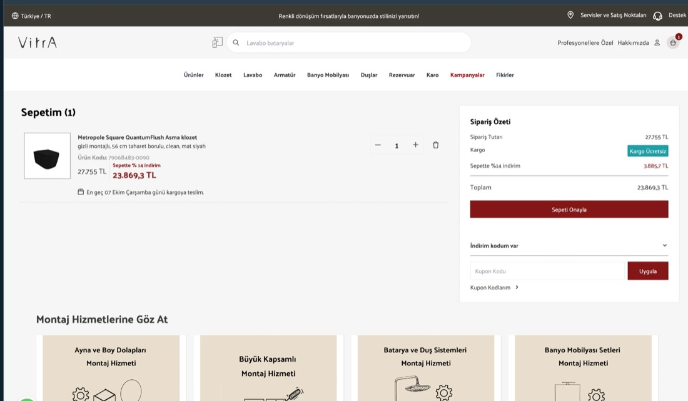
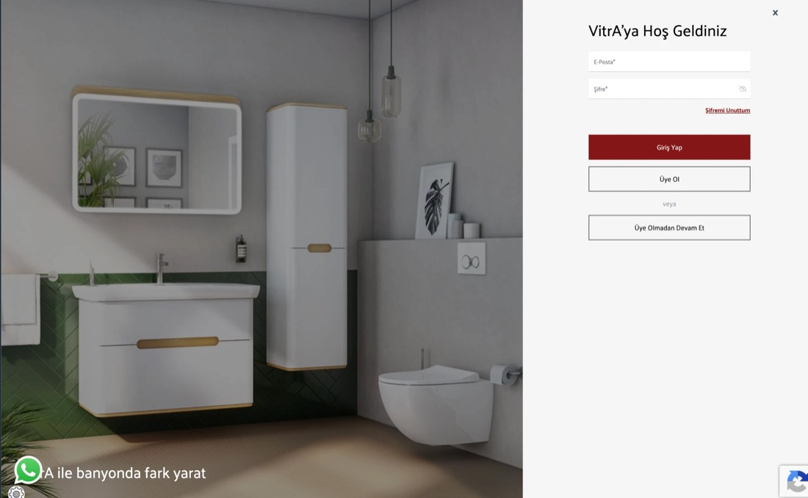
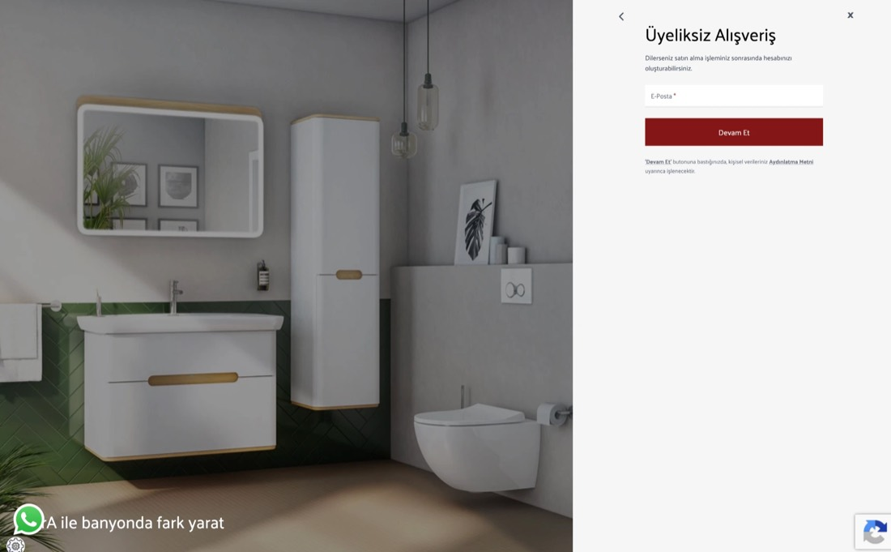

![VitrA]()
![Inbound]()
SSG'de sınırlı gerileme, BM'de belirgin daralma
Google'daki 2.299 banyo kelimesinin aylık search volume (Keyword Planner), Eyl 2022 - Ağu 2023 ile Eyl 2025 - Ağu 2026 dönemleri karşılaştırılarak incelendi.
VitrA TÜRKİYE · E-TİCARET BÜYÜME FIRSATLARI
Google'daki 2.299 banyo kelimesinin aylık search volume (Keyword Planner), Eyl 2022 - Ağu 2023 ile Eyl 2025 - Ağu 2026 dönemleri karşılaştırılarak incelendi.
Merkez Bankası verileriyle kart harcamaları, tüketici güveni ve konut satışları izlendi; bu göstergeler banyo talebinin arka planını anlatır.
Banyo aramalarına eklenen ifadeler (fiyat, tamir, marka, mağaza), Google'ın arama önerileri ve YouTube sonuçları incelendi; ifade payları Google Ads önerileriyle genişletilmiş kelime evreninden (35.849 kelime) hesaplandı.
Aranan ürün grupları vitra.com.tr'deki ürün sayısıyla karşılaştırıldı; aranıp VitrA'da az bulunan ya da hiç bulunmayan ürünler belirlendi.
vitra.com.tr'deki montaj, keşif ve danışmanlık hizmetleri ile Koçtaş, Bauhaus (Almanya) ve Kohler'in (ABD) banyo yenileme teklifleri karşılaştırıldı.
Kategori kelimelerinde Google sonuç sayfası (04.10.2026), pazaryerlerinin banyo kategorisi traffic'i ve marka sitelerinin organik traffic'i incelendi.
Şikayetvar'daki VitrA ve rakip marka sayfaları (son 24 ay) ile ürün sayfalarındaki garanti ve yedek parça bilgisi incelendi.
vitra.com.tr'den seçilen 29 VitrA ve Artema ürününün (klozet, lavabo, armatür, gömme rezervuar, klozet kapağı, iç takım ve banyo mobilyası) fiyatı, 29.09.2026'da ürün koduyla Trendyol, Hepsiburada ve Koçtaş'ta aranarak karşılaştırıldı. Ürünler 39 adaydan en az iki kanalda satılanlar arasından seçildi. Ayrıca Google Alışveriş ilanları ve vitra.com.tr ile aynı model kodunu taşıyan 200 pazaryeri ilanı incelendi.
Banyo ürünlerine olan talebi etkileyen genel ekonomik koşullar dört gösterge grubuyla izlenmiştir; bu gruplar insanların kartla ne kadar harcadığını, ekonomiye güvenlerini ve evlerini tamir ettirme niyetlerini, konut alım-satımını ve bankaların kredi verme koşullarını kapsamaktadır. Banyo yenilemesi ertelenebilen bir harcama olduğu için bu göstergeler, kategori aramalarındaki daralmanın (Bölüm 03) arka planını açıklamaya yardımcı olmaktadır. Veriler Türkiye Cumhuriyet Merkez Bankası'nın veri sisteminden (TCMB EVDS) alınmıştır.
Mobilya-dekorasyon ve yapı malzemesi sektörlerinde banka ve kredi kartı harcamasının aylık seyri (BKM, nominal ₺); banyo yenilemesine ayrılan bütçenin dolaylı göstergesidir.
| Harcama kalemi | Oca-Ağu 2025 (milyar ₺) | Oca-Ağu 2026 (milyar ₺) | Değişim |
|---|---|---|---|
| Tüm sektörler | 14.570 | 21.063 | +%44,6 |
| Mobilya ve dekorasyon | 394 | 527 | +%33,7 |
| Yapı malzemeleri, hırdavat, nalburiye | 579 | 818 | +%41,3 |
| İnternet alışverişi (tüm sektörler) | 4.313 | 6.313 | +%46,4 |
| Elektrik ve elektronik eşya | 633 | 769 | +%21,4 |
| Market ve alışveriş merkezleri | 2.766 | 4.223 | +%52,7 |
Mobilya ve dekorasyon harcaması Ocak - Ağustos 2026'da nominal olarak +%33,7 artarken tüm sektörler toplamı +%44,6 büyümüştür; banyo ile ilişkili iki kalem genel harcamanın gerisinde kalmıştır.
TÜİK-TCMB Tüketici Eğilim Anketi'nden güven endeksi ve önümüzdeki 12 ayda konut tamiratına harcama ihtimali; talebin toparlanma zamanlaması için izlenebilecek göstergelerdir.
Tüketici güven endeksi Eylül 2026'da 91,9 ile son iki yılın en yüksek seviyesine ulaşmıştır; dayanıklı mal satın almaya uygunluk göstergesi 61,3 ve konut tamiratına harcama ihtimali 42,5 seviyesindedir.
Konut satışları ve bankaların kredi standartlarındaki değişim; yeni ev ve tadilat kaynaklı banyo talebinin iki dış tetikleyicisidir.
| Gösterge | Değer | Karşılaştırma | Okuma |
|---|---|---|---|
| Satılan konut sayısı (adet) · Oca-Ağu 2026 | 950.529 | Oca-Ağu 2025: 1.020.207 (-%6,8) | El değiştiren konutlar banyo yenilemesi için aday olarak değerlendirilebilir; ikinci el satış payı %67,6 |
| İpotekli satılan konut sayısı (adet) · Oca-Ağu 2026 | 188.813 | Oca-Ağu 2025: 147.945 (+%27,6) | Krediyle alınan konutta yenileme bütçesi sınırlı kalabilir; taksit ve set fiyatı bu segmentte belirleyici olabilir |
| Konut fiyat endeksi (2023 = 100) · Ağu 2026 | 236,8 | Yıllık +%23,0 | Fiyat artışı yeni konut alımını sınırlarken mevcut konutun yenilenmesini görece cazip kılabilir |
| Bireysel kredi standartları (net yüzde) · 2026 Q2 | -18,2 | 2026 Q1: -5,3 | Net yüzde; negatif değer bankaların ihtiyaç kredisi koşullarını gevşettiğini gösterir |
| Bireysel kredi talebi (net yüzde) · 2026 Q2 | -2,4 | 2026 Q1: 0,6 | Net yüzde; kredi talebini etkileyen faktörlerden dayanıklı mal harcamasının katkısı -2,4, talep tarafında belirgin bir ivme görülmemektedir |
| Hane halkı 12 ay enflasyon beklentisi · Eylül 2026 | %45,6 | Ocak 2026: %48,8; fiyatı en çok artacak gruplar arasında dayanıklı malları gösterenlerin payı %5,1 (Ocak 2026: %7,9) | Enflasyon beklentisi ve dayanıklı mal payı yılbaşından bu yana gerilemiştir; fiyat beklentisi alımları öne çekecek düzeyde görünmemektedir |
Kaynak: TCMB EVDS · kart harcamaları BKM haftalık akım (KT1, KT17, KT23, KT50, KT8, KT16), grafikte haftalık ortalama × ayın gün sayısı / 7 ile aylığa çevrilmiş, tabloda Ocak - Ağustos toplamı (iki yılda da 35 hafta); kartlı ödeme endeksi; Tüketici Eğilim Anketi; konut satış ve fiyat istatistikleri; Banka Kredileri Eğilim Anketi; hane halkı beklentileri1,2,3,4,5
Harcama nominal olarak büyümekte, reel olarak sınırlı artmaktadır (kartlı ödeme endeksi +%8,6); toplam konut satışları -%6,8 gerilerken ipotekli satışlar +%27,6 artmaktadır; güven ve tamirat niyeti yükselmekte, kredi koşulları gevşemekte ancak kredi talebi henüz canlanmamıştır.
Hane sayısı, yeni konut ve yenileme döngüsü varsayımıyla yıllık banyo adedi senaryoları ve VitrA payı için kamuya açık göstergeler; oranlar ölçüm değil varsayımdır.
Türkiye'de yıllık banyo yenileme adedini doğrudan ölçen bir kaynak bulunmamaktadır; tahmin hane sayısı, yeni konut ve yenileme döngüsü üzerinden kurulmuştur.
| Yıllık yenileme oranı | Karşılığı | Yenilenen banyo (milyon) | Yeni konut banyosu (milyon) | Toplam (milyon banyo / yıl) |
|---|---|---|---|---|
| %3,0 | yaklaşık 33 yıllık döngü | 1,0 | 0,7 | 1,7 |
| %4,5 | yaklaşık 22 yıllık döngü | 1,4 | 0,7 | 2,1 |
| %6,0 | yaklaşık 17 yıllık döngü | 1,9 | 0,7 | 2,6 |
| Gösterge | Değer | Kaynak ve not |
|---|---|---|
| Hane sayısı (2024) | 26.599.261 | TÜİK ADNKS; ölçüm |
| Banyosu olan hane | %98,8 | TÜİK Bina ve Konut Nitelikleri Araştırması 2021; ölçüm |
| Konut satışları (2025) | 1.760.292 | TÜİK (TCMB EVDS serisi); ilk el 570.812, ikinci el 1.189.480; ölçüm |
| İskanlı daire (2020 - Eylül 2024 ortalaması) | ~580K | TÜİK yapı izinleri; yıllık ortalama türetilmiştir |
| Seramik sağlık gereci üretimi (2023) | 21M | Türkiye Seramik Federasyonu; ihracat 7,7M adet, iç pazar ~13M adet (türetilmiş) |
| VitrA seramik sağlık gereci kapasitesi | 5,7-6,7M | Eczacıbaşı beyanı; yıllık adet |
| VitrA pazar payı beyanı | %30 | Eczacıbaşı basın bülteni, 2022; pazar tanımı (adet, değer, iç pazar) belirtilmemiştir |
Kaynak: TÜİK ADNKS, konut satış ve yapı izin istatistikleri, Bina ve Konut Nitelikleri Araştırması 2021 · Türkiye Seramik Federasyonu ve Sanayi Bakanlığı seramik sektörü notu · Eczacıbaşı basın bülteni ve faaliyet raporları · VDS-Forsa (Almanya) · 30.09.20266
Talep tabanı, VitrA kategori ağacına eşlenmiş 2.299 tekil arama kelimesidir; Keyword Planner'ın aynı aylık search volume verdiği yakın yazım varyantları (ör. "banyo dolabı", "banyo dolap", "banyo dolapları") tek kelime olarak sayılmıştır. Search volume'lar Google Keyword Planner'dan aylık olarak alınmıştır (grafiklerde Ocak 2023 - Ağustos 2026, üç yıllık karşılaştırmada Eylül 2022'den itibaren); yıllık karşılaştırma aynı takvim aylarını kapsayan Ocak - Ağustos pencereleri üzerinden yapılmaktadır.
2.299 kelimenin toplam talebi 2026'nın ilk sekiz ayında bir önceki yılın aynı dönemine göre -%6,2 daralmıştır.
2.299 kategori kelimesinin sekiz ana kategoriye toplanmış aylık search volume; Ocak-Ağustos 2026, bir önceki yılın aynı dönemiyle karşılaştırılmıştır.
Talep bölümlerindeki 2.299 kelimenin tamamı, kategori, niyet ve iki dönemin search volume'la: Kelime Evreni sayfasını görüntüle
| Kategori | Kelime | 2025 aylık ort. | 2026 aylık ort. | YoY | Pay |
|---|---|---|---|---|---|
| Vitrifiyeler | 470 | 756K | 727K | -%3,8 | %24,8 |
| Armatürler | 417 | 620K | 579K | -%6,7 | %19,7 |
| Banyo Mobilyaları | 340 | 565K | 496K | -%12,2 | %16,9 |
| Yıkanma Alanları | 224 | 421K | 394K | -%6,4 | %13,4 |
| Karo Seramik Ürünleri | 449 | 369K | 374K | +%1,2 | %12,7 |
| Banyo Aksesuarları | 212 | 230K | 208K | -%9,5 | %7,1 |
| Duşlar | 108 | 106K | 94,4K | -%11,3 | %3,2 |
| Rezervuarlar | 79 | 62,6K | 62,9K | +%0,5 | %2,1 |
| Toplam | 2.299 | 3,1M | 2,9M | -%6,2 | %100 |
En büyük beş kategorinin Ocak 2023 - Ağustos 2026 aylık search volume çizgisi; yıl yıl sekmesinde sekiz kategori ayrı ayrı seçilebilir.
Ana kategorilerde yalnızca Karo Seramik (+%1,2) hafif artış göstermekte, Rezervuarlar (+%0,5) yatay seyretmektedir; Vitrifiyeler (-%3,8) daralırken en belirgin daralma Banyo Mobilyaları (-%12,2), Duşlar (-%11,3) ve Banyo Aksesuarlarındadır (-%9,5).
Yıllık değişimi pozitif olan alt kategoriler; search volume eşiği 2025 aylık ortalamasında 3.000 aramadır.
| Ana kategori | Alt kategori | Kelime | 2025 aylık ort. | 2026 aylık ort. | YoY |
|---|---|---|---|---|---|
| Duşlar | Duşlar (genel aramalar) | 4 | 9,0K | 11,4K | +%26,4 |
| Karo Seramik Ürünleri | Balkon, Teras & Bahçe Karo Seramikleri | 54 | 21,6K | 25,4K | +%17,8 |
| Banyo Mobilyaları | Banyo Tezgahları | 22 | 5,4K | 6,0K | +%9,8 |
| Karo Seramik Ürünleri | Banyo Karo Seramikleri | 68 | 55,4K | 60,4K | +%8,9 |
| Banyo Mobilyaları | Banyo Mobilyaları (genel aramalar) | 32 | 52,2K | 56,1K | +%7,6 |
| Yıkanma Alanları | Duş Kanalları | 42 | 23,1K | 24,2K | +%5,1 |
| Banyo Aksesuarları | Tuvalet Fırçaları | 13 | 18,2K | 18,9K | +%4,0 |
| Rezervuarlar | Rezervuar Kumanda Panelleri | 16 | 4,3K | 4,4K | +%2,2 |
| Armatürler | Armatür Tamamlayıcı Ürünleri | 54 | 55,2K | 56,3K | +%2,1 |
| Karo Seramik Ürünleri | Mutfak Karo Seramikleri | 75 | 54,5K | 54,8K | +%0,6 |
| Rezervuarlar | Gömme Rezervuarlar | 55 | 55,3K | 55,5K | +%0,4 |
| Karo Seramik Ürünleri | Duvar Karoları | 28 | 7,6K | 7,6K | +%0,3 |
Yıllık değişimi en düşük alt kategoriler; daralmanın kategori genelinde mi yoksa belirli ürün tiplerinde mi olduğunu gösterir.
| Ana kategori | Alt kategori | Kelime | 2025 aylık ort. | 2026 aylık ort. | YoY |
|---|---|---|---|---|---|
| Banyo Aksesuarları | Banyo Aksesuar Setleri | 5 | 37,9K | 29,5K | -%22,2 |
| Vitrifiyeler | Bideler | 8 | 22,3K | 17,5K | -%21,5 |
| Banyo Mobilyaları | Lavabo Dolapları | 57 | 73,5K | 59,7K | -%18,8 |
| Banyo Mobilyaları | Banyo Mobilya Tamamlayıcıları | 22 | 27,1K | 22,3K | -%17,9 |
| Banyo Aksesuarları | Banyo Çöp Kovaları | 12 | 9,4K | 7,8K | -%17,2 |
| Banyo Mobilyaları | Banyo Set Modülleri | 18 | 15,7K | 13,0K | -%17,1 |
| Banyo Mobilyaları | Banyo Aynaları | 65 | 68,7K | 57,0K | -%17,0 |
| Banyo Aksesuarları | Banyo Aksesuarları (genel aramalar) | 19 | 19,1K | 15,9K | -%16,9 |
| Duşlar | Duş Başlıkları | 43 | 79,1K | 66,4K | -%16,1 |
| Banyo Aksesuarları | Tuvalet Kağıtlıkları | 21 | 24,0K | 20,2K | -%15,8 |
| Duşlar | Duş Tamamlayıcı Ürünleri | 18 | 8,4K | 7,1K | -%15,6 |
| Armatürler | Duş Setleri | 35 | 85,1K | 74,0K | -%13,0 |
Büyüyen alt kategoriler iki örüntü taşımaktadır: (1) dış mekan ve banyo karosu gibi tadilatın görünür yüzeyleri (Balkon, Teras & Bahçe Karo Seramikleri +%17,8, Banyo Karo Seramikleri +%8,9), (2) banyo tezgahı ve duş kanalı gibi tamamlayıcı ürünler.
Kaynak: Google Ads Keyword Planner · Türkiye, Türkçe · 2.299 kelime · aylık search volume Oca 2023 - Ağu 2026 · kategori eşlemesi Inbound kelime araştırması (2025) · "lavabo" ve "wc" serilerindeki aykırı aylar Yöntem notundaki gibi düzeltilmiştir7,8
Seramik sağlık gereçleri (SSG: klozet, klozet kapağı, lavabo, bide, pisuvar, evye, rezervuar) ve banyo mobilyası (BM) için talep dört yıllık aylık seriyle, ürün tipi düzeyinde incelenmiştir. Genişletilmiş kelime evreninde kullanıcının hangi tip, ölçü, renk, özellik ve bağlamla aradığı da ölçülmüştür.
İki segment dört yılda ayrışmıştır.
Seramik sağlık gereçlerinde ürün tipi bazında son 12 ayın search volume ve Eylül 2022 - Ağustos 2023 tabanına göre üç yıllık değişim gösterilmektedir.
| Alt kategori | Ürün tipi | Eyl 2022 - Ağu 2023 | Eyl 2025 - Ağu 2026 | 3 yıllık değişim | YoY |
|---|---|---|---|---|---|
| Klozetler | Genel | 266K | 275K | +%3,4 | -%1,1 |
| Lavabolar | Genel | 147K | 141K | -%3,7 | -%4,1 |
| Eviyeler | Genel | 80,3K | 81,0K | +%0,8 | -%6,2 |
| Klozet Kapakları | Genel | 77,7K | 69,8K | -%10,2 | -%8,9 |
| Gömme Rezervuarlar | Genel | 48,9K | 52,0K | +%6,3 | +%0,3 |
| Klozetler | Rezervuar ve Klozet İç Takımları | 36,0K | 42,7K | +%18,7 | -%1,3 |
| Klozetler | Takım Klozetler | 34,1K | 19,2K | -%43,8 | -%9,3 |
| Bideler | Genel | 33,8K | 16,6K | -%51,0 | -%21,5 |
| Pisuvarlar | Genel | 14,7K | 15,7K | +%6,8 | -%1,2 |
| Klozetler | Asma Klozetler | 16,3K | 14,2K | -%13,4 | -%3,0 |
| Lavabolar | Çanak Lavabolar | 11,9K | 11,5K | -%2,7 | +%3,2 |
| Lavabolar | Standart Lavabo ve Ayakları | 13,2K | 11,2K | -%14,6 | +%6,2 |
| Klozetler | Yerden Tek Klozetler | 7,9K | 9,1K | +%14,2 | +%8,7 |
| Klozetler | Akıllı Klozet Seti | 3,8K | 7,8K | +%103,4 | -%2,7 |
| Lavabolar | Tezgahüstü Lavabolar | 6,5K | 4,5K | -%30,5 | -%8,3 |
| Rezervuar Kumanda Panelleri | Genel | 3,8K | 4,2K | +%8,9 | +%2,0 |
SSG içinde büyüme jenerik klozet aramaları (275K, 3 yılda +%3,4), rezervuar ve klozet iç takımları (42,7K, +%18,7) ve akıllı klozet setleri (7,8K, +%103,4) olmak üzere üç tipte toplanmaktadır.
Banyo mobilyasında ürün tipi bazında son 12 ay search volume ve üç yıllık değişim; hangi tiplerin talebini koruduğunu gösterir.
| Alt kategori | Ürün tipi | Eyl 2022 - Ağu 2023 | Eyl 2025 - Ağu 2026 | 3 yıllık değişim | YoY |
|---|---|---|---|---|---|
| Banyo Dolapları | Genel | 273K | 200K | -%26,8 | -%13,2 |
| Banyo Dolapları | Çamaşır Makinesi Dolapları | 91,8K | 94,5K | +%2,9 | -%11,0 |
| Lavabo Dolapları | Genel | 70,7K | 61,4K | -%13,2 | -%18,8 |
| Banyo Mobilyaları | Genel | 69,7K | 54,7K | -%21,5 | +%7,6 |
| Banyo Aynaları | Genel | 69,5K | 49,0K | -%29,4 | -%16,1 |
| Banyo Mobilya Tamamlayıcıları | Banyo Rafları | 27,9K | 16,4K | -%41,2 | -%18,1 |
| Banyo Set Modülleri | Genel | 20,9K | 13,7K | -%34,3 | -%17,1 |
| Banyo Aynaları | Aynalı Banyo Dolabı | 13,1K | 9,5K | -%27,3 | -%21,5 |
| Banyo Tezgahları | Genel | 6,6K | 5,8K | -%11,1 | +%9,8 |
| Banyo Mobilya Tamamlayıcıları | Banyo Dolap Ayakları | 7,7K | 5,6K | -%27,4 | -%18,6 |
| Banyo Mobilya Tamamlayıcıları | Banyo Dolabı Kulpları | 981 | 815 | -%16,9 | -%7,1 |
| Banyo Aynaları | Düz Aynalar | 436 | 233 | -%46,5 | -%22,3 |
BM'de yalnızca çamaşır makinesi dolapları (+%2,9) üç yıllık dönemde talebini korumuştur; banyo tezgahı aramaları -%11,1, jenerik banyo dolabı aramaları -%26,8, kulp -%16,9 ve raf -%41,2 daralmıştır. Çamaşır makinesi dolabının, banyo mobilyasının "fonksiyonel" ucunda duran ve küçük konutlarda önem kazanabilen bir tip olduğu değerlendirilebilir; VitrA'nın bu tipte 29 ürünü bulunmakta, ancak Trendyol'un ilk 40 sonucunda görünmemektedir (Bölüm 13).7,9
SSG aramalarında kelimeye eklenen özellik ifadeleri (fiyat, ölçü, marka, tamir, renk gibi); payı ve yıllık değişimi verilmiştir.
| Boyut | Arama özelliği | Aylık search volume | Pay | YoY | Örnek |
|---|---|---|---|---|---|
| Tip | Asma | 43,0K | %3,2 | -%2,2 | asma klozetasma klozet fiyatlarıvitra asma klozet |
| Tip | Yerden / takım | 37,0K | %2,8 | -%15,1 | klozet takımıen ucuz klozet takımı fiyatlarıklozet takımı fiyatları |
| Tip | Gömme | 118K | %8,8 | +%4,9 | gömme rezervuarvitra gömme rezervuargömme rezervuar iç takımı |
| Tip | Kanalsız / rimless | 6,3K | %0,5 | +%6,4 | kanalsız klozetvitra kanalsız klozetkanalsız asma klozet |
| Tip | Çanak / tezgah üstü | 26,3K | %2,0 | +%1,8 | çanak lavabotezgahüstü lavabolarçanak lavabo modelleri |
| Tip | Etajerli / ayaklı | 10,8K | %0,8 | +%11,4 | etajerli lavaboayaklı lavabo fiyatlarıayaklı lavabo altı dolap |
| Tip | Alaturka | 75,8K | %5,7 | +%13,4 | alaturka tuvalettuvalet taşıalaturka tuvalet kapağı |
| Ölçü | Ölçü (cm) | 14,3K | %1,1 | +%3,6 | 80 cm lavabomini lavabo 20 cm60 cm lavabo |
| Ölçü | Ölçüleri / boyut | 12,9K | %1,0 | +%1,9 | klozet ölçülerigömme rezervuar ölçülavabo ölçüleri |
| Renk ve malzeme | Siyah / antrasit | 5,1K | %0,4 | -%26,1 | siyah klozetsiyah lavabosiyah klozet kapağı |
| Renk ve malzeme | Gri / renkli | 4,9K | %0,4 | +%11,2 | renkli klozetrenkli lavabogri klozet |
| Özellik | Akıllı / elektronik | 13,0K | %1,0 | -%7,4 | akıllı klozetakıllı lavaboakıllı tuvalet |
| Özellik | Yavaş kapanan | 5,0K | %0,4 | -%16,7 | yavaş kapanan klozet kapağıamortisörlü klozet kapağıklozet kapağı amortisörlü |
| İhtiyaç ve bağlam | Küçük / dar banyo | 11,8K | %0,9 | -%2,8 | küçük lavabomini lavaboküçük lavabo modelleri |
| İhtiyaç ve bağlam | Engelli / çocuk | 5,9K | %0,4 | -%15,5 | cocuklar için klozet kapağıçocuk adaptörlü klozet kapağıklozet kapağı cocuk |
| İhtiyaç ve bağlam | Modeller | 69,4K | %5,2 | +%28,8 | banyo lavabo modellerilavabo modelleriklozet modelleri |
| İhtiyaç ve bağlam | Fiyat | 199K | %14,9 | +%4,8 | klozet fiyatlarıklozet kapağı fiyatlavabo fiyat |
| İhtiyaç ve bağlam | Tamir / parça | 86,3K | %6,5 | +%2,7 | klozet iç takımırezervuar iç takımgömme rezervuar iç takımı |
| Marka ve kanal | VitrA | 86,0K | %6,4 | -%1,6 | vitra gömme rezervuarvitra klozetvitra klozet kapağı |
| Marka ve kanal | Rakip marka | 137K | %10,3 | -%2,5 | serel gömme rezervuargeberit gömme rezervuarcreavit klozet |
| Marka ve kanal | Perakendeci / pazaryeri | 31,7K | %2,4 | -%2,8 | koçtaş klozetkoçtaşta klozet fiyatlarıkoçtaş lavabo |
BM aramalarında kelimeye eklenen özellik ifadeleri; perakendeci adı, malzeme ve ölçü gibi karar sinyallerini gösterir.
| Boyut | Arama özelliği | Aylık search volume | Pay | YoY | Örnek |
|---|---|---|---|---|---|
| Tip | Etajerli / ayaklı | 2,7K | %0,4 | -%3,9 | ayaklı banyo dolabıayaklı lavabo dolabıbanyo dolabı ayaklı |
| Tip | Köşe | 742 | %0,1 | -%1,3 | köşe banyo dolabıköşe banyo rafıköşe banyo dolabı modelleri |
| Tip | Lavabolu | 27,6K | %4,3 | -%5,4 | lavabolu banyo dolabıdolaplı lavabodolaplı lavabo modelleri |
| Tip | Aynalı | 18,5K | %2,9 | -%16,4 | aynalı banyo dolabıaynalı dolapbanyo aynalı dolap |
| Ölçü | Ölçü (cm) | 28,1K | %4,4 | -%12,7 | 80 cm banyo dolabı60 cm banyo dolabı65 cm banyo dolabı |
| Renk ve malzeme | Siyah / antrasit | 2,4K | %0,4 | -%21,1 | antrasit banyo dolabısiyah banyo dolabıantrasit gri banyo dolabı |
| Renk ve malzeme | Ahşap / meşe | 3,2K | %0,5 | -%1,7 | ahşap banyo dolabıahşap banyo dolabı modellerimasif banyo dolabı |
| Renk ve malzeme | Gri / renkli | 2,2K | %0,3 | +%8,8 | gri banyo dolabıyeşil banyo dolabıantrasit gri banyo dolabı |
| Renk ve malzeme | PVC / suya dayanıklı | 7,9K | %1,2 | +%44,8 | suya dayanıklı banyo dolabıpvc dolappvc banyo dolabı |
| Renk ve malzeme | MDF / lake | 4,6K | %0,7 | -%5,7 | mdf banyo dolabılake banyo dolabımdf çamaşır makinesi dolabı |
| Özellik | Işıklı / ledli | 32,5K | %5,1 | -%1,3 | ledli aynaışıklı aynaışıklı makyaj aynası |
| Özellik | Çekmeceli / kapaklı | 7,7K | %1,2 | -%2,4 | çamaşır makinesi dolabı kapaklıçamaşır kurutma makinesi dolabı kapaklıkapaklı çamaşır makinesi dolabı |
| İhtiyaç ve bağlam | Küçük / dar banyo | 5,7K | %0,9 | +%10,5 | küçük banyo dolabımini banyo dolabıküçük banyo dolabı modelleri |
| İhtiyaç ve bağlam | Modern / tasarım | 8,8K | %1,4 | +%53,5 | özel tasarım banyo dolaplarımodern banyo dolapları modelleridekoratif banyo rafı |
| İhtiyaç ve bağlam | Modeller | 72,5K | %11,4 | +%18,0 | banyo dolabı modellerilavabo dolabı modelleridolaplı lavabo modelleri |
| İhtiyaç ve bağlam | Fiyat | 26,6K | %4,2 | +%11,9 | banyo dolabı fiyatlarıdefolu banyo dolapları fiyatlarıdolaplı lavabo modelleri ve fiyatları |
| Marka ve kanal | VitrA | 9,6K | %1,5 | -%9,1 | vitra banyo dolabıvitra banyo dolap modellerivitra lavabo dolabı |
| Marka ve kanal | Rakip marka | 7,5K | %1,2 | -%11,9 | kale banyo dolabıcreavit banyo dolabıgeberit banyo dolabı |
| Marka ve kanal | Perakendeci / pazaryeri | 63,5K | %10,0 | -%10,2 | koçtaş banyo dolabıikea banyo dolabıtrendyol banyo lavabo dolabı |
SSG'de aramaların %14,9'u fiyat, %6,5'i tamir ve parça, %5,2'si "modeller" ifadesi taşımaktadır; marka adı geçen aramalarda VitrA tek başına en sık aranan markadır (%6,4); 19 rakip markanın toplamı %10,3'tür ve Serel, Geberit, Visam ile Creavit gömme rezervuar ve iç takım aramalarında öne çıkmaktadır.
Kaynak: Google Ads Keyword Planner · temel set 2.299 kelime 48 ay (Eyl 2022 - Ağu 2026) · genişletilmiş kelime evreni (Google Ads anahtar kelime önerileri, 52.973 kelime) · Türkiye, Türkçe · 28.09.20267,10
Aynı kelime seti, kullanıcının hangi ihtiyaçla aradığına göre yeniden sınıflandırılmıştır. Kategori adıyla yapılan jenerik aramaların dışında kalan altı ihtiyaç sınıfı, e-ticaret sayfalarının hangi soruya cevap vermesi gerektiğini göstermektedir.
| İhtiyaç sınıfı | Tanım | Kelime | 2026 aylık ort. | Pay | YoY | Örnek |
|---|---|---|---|---|---|---|
| Jenerik ürün | Ürün adı veya ürün adı + tip: "banyo dolabı", "duşakabin", "klozet" | 1.641 | 2,1M | %72,0 | -%9,4 | banyo dolabı, duşakabin, klozet, wc |
| Tasarım ve fikir | "modelleri", "dekorasyon", "küçük banyo" gibi ilham arayan ifadeler | 343 | 388K | %13,2 | +%15,4 | duşakabin modelleri, banyo dolabı modelleri, banyo modelleri, fayans modelleri |
| Fiyat | "fiyat", "fiyatları", "ucuz", "indirim" içeren ifadeler | 192 | 337K | %11,5 | -%5,4 | klozet fiyatları, duşakabin fiyatları, fayans fiyatları, jakuzi fiyatları |
| Tamir ve bakım | "iç takımı", "tamiri", "su kaçırıyor", "yedek parça" | 32 | 55,8K | %1,9 | -%6,1 | duşakabin tekeri, klozet iç takımı, klozet şamandırası, rezervuar iç takım |
| Ölçü ve teknik | "ölçüleri", "80 cm", "kaç litre" gibi ölçü ve teknik ifadeler | 73 | 34,5K | %1,2 | -%8,5 | klozet ölçüleri, 80 cm banyo dolabı, duşakabin ölçüleri, gömme rezervuar ölçü |
| Montaj | "montajı", "nasıl takılır", "montaj aparatı" | 9 | 5,2K | %0,2 | +%3,8 | klozet montajı, klozet montaj aparatı, gömme klozet montajı, klozet nasıl takılır |
| Seçim ve karşılaştırma | "hangisi", "en iyi", "nedir", "tavsiye" gibi karar öncesi sorular | 9 | 2,2K | %0,1 | -%31,3 | en iyi duş başlığı, en iyi duş seti markası, kaliteli duş başlığı, en iyi klozet modelleri |
Talebin %72,0'ı yalnızca ürün adıyla yapılan jenerik aramalardır; ihtiyacı belirgin altı sınıf toplamın yaklaşık %28,0'ını oluşturmaktadır.
Her kategoride kelimelerin ihtiyaç sınıflarına (fiyat, tasarım ve fikir, seçim ve karşılaştırma, ölçü ve teknik, montaj, tamir ve bakım) dağılımı gösterilmektedir.
| Kategori | Search volume · 2026 aylık ort. | Fiyat | Tasarım ve fikir | Seçim ve karşılaştırma | Ölçü ve teknik | Montaj | Tamir ve bakım |
|---|---|---|---|---|---|---|---|
| Vitrifiyeler | 727K | %17,3 | %10,2 | <%0,1 | %1,8 | %0,4 | %4,5 |
| Banyo Mobilyaları | 496K | %2,7 | %23,6 | - | %2,6 | - | - |
| Yıkanma Alanları | 394K | %22,3 | %15,6 | %0,1 | %1,1 | - | %2,5 |
| Rezervuarlar | 62,9K | %7,4 | %0,6 | - | %2,9 | %2,6 | %10,6 |
| Armatürler | 579K | %7,8 | %1,8 | %0,1 | - | - | %1,0 |
| Karo Seramik Ürünleri | 374K | %15,3 | %31,5 | - | %0,7 | - | - |
| Duşlar | 94,4K | %2,3 | %1,4 | %1,1 | - | %0,4 | %1,0 |
| Banyo Aksesuarları | 208K | - | %2,2 | <%0,1 | %0,1 | - | %0,1 |
İhtiyaç profili kategoriye göre belirgin biçimde farklılaşmaktadır.
vitra.com.tr'ye click getiren sorguların aynı ihtiyaç sınıflarına dağılımı; talep tarafıyla karşılaştırma imkânı verir.
| Marka | İhtiyaç sınıfı | Click | Pay | Impression | CTR | Örnek |
|---|---|---|---|---|---|---|
| Markasız | Jenerik ürün | 595.677 | %49,3 | 18.813.876 | %3,2 | banyo dolabı, klozet, duşakabin |
| Markalı | Jenerik ürün | 383.079 | %31,7 | 1.835.247 | %20,9 | vitra, vitra klozet, vitra gömme rezervuar |
| Markasız | Tasarım ve fikir | 75.504 | %6,3 | 3.292.875 | %2,3 | duşakabin modelleri, banyo dolabı modelleri, banyo fayans modelleri |
| Markasız | Fiyat | 60.570 | %5,0 | 2.173.282 | %2,8 | klozet fiyatları, duşakabin fiyatları, küvet fiyatları |
| Markalı | Fiyat | 19.777 | %1,6 | 115.727 | %17,1 | vitra klozet fiyatları, vitra fiyat listesi, vitra gömme rezervuar fiyatları |
| Markalı | Tasarım ve fikir | 16.114 | %1,3 | 61.809 | %26,1 | vitra katalog, vitra lavabo modelleri, vitra banyo dolap modelleri |
| Markalı | Tamir ve bakım | 15.580 | %1,3 | 463.034 | %3,4 | vitra servis, vitra gömme rezervuar iç takımı, vitra rezervuar iç takımı |
| Markasız | Ölçü ve teknik | 10.953 | %0,9 | 394.789 | %2,8 | klozet ölçüleri, küvet ölçüleri, lavabo ölçüleri |
| Markasız | Seçim ve karşılaştırma | 8.539 | %0,7 | 300.280 | %2,8 | bide nedir, vitrifiye nedir, armatür nedir |
| Markasız | Tamir ve bakım | 7.295 | %0,6 | 582.255 | %1,3 | duşakabin temizliği, gömme klozet su kaçırıyorsa çok basit tamiri, klozet iç takım |
| Markalı | Yer ve kanal | 6.723 | %0,6 | 62.742 | %10,7 | vitra müşteri hizmetleri, vitra bayileri, vitra fabrika satış mağazası |
| Markalı | Ölçü ve teknik | 3.462 | %0,3 | 17.097 | %20,2 | vitra mia 80 cm, vitra mia 60 cm, vitra gömme rezervuar ölçüleri |
| Markasız | Montaj | 2.916 | %0,2 | 306.825 | %1,0 | klozet kapağı nasıl takılır, fayans üstü duşakabin montajı, gömme rezervuar montajı |
| Markalı | Montaj | 1.314 | %0,1 | 31.814 | %4,1 | vitra gömme rezervuar montajı, vitra montaj, vitra 330b1314 montaj |
| Markasız | Yer ve kanal | 379 | %0,0 | 12.246 | %3,1 | banyo dolabı nereden alınır, klozet nereden alınır, edirne banyo mağazaları |
| Markalı | Seçim ve karşılaştırma | 15 | %0,0 | 658 | %2,3 | vitra nedir, vitra kanalsız klozet yorumlar, artema a33040yp nedir |
Search Console'da sorgusu görünen ilk 50.000 sorgunun click'lerinin %36,9'u markalı sorgulardan gelmektedir ("vitra" tek başına 103.814 click).
Kaynak: Google Ads Keyword Planner (ihtiyaç sınıfları, Oca-Ağu 2025 ve 2026) · Google Search Console, sc-domain:vitra.com.tr, 1 Eki 2025 - 30 Eyl 2026, ilk 50.000 sorgu7,11
Search Console verisi, vitra.com.tr'nin Google'dan aldığı traffic'in aylık seyrini, hangi sayfa türlerine ve kategorilere geldiğini göstermektedir. Veri alan adı düzeyindeki mülkten (sc-domain:vitra.com.tr) alınmıştır; tüm alt alan adları tek toplam olarak kapsanmaktadır. Toplamlar, blog, cihaz ve ülke kırılımı 1 Ekim 2025 - 30 Eylül 2026 (12 ay) dönemine aittir. Aralık 2025'te online.vitra.com.tr adresleri www.vitra.com.tr'ye taşındığı için sayfa türü, kategori ve en çok click alan sayfalar 1 Ocak - 30 Eylül 2026 verisiyle verilmiştir.
vitra.com.tr'nin aylık organik click ve impression'ı 2025 ve 2026 için üst üste verilmiştir; sekmelerde click ve impression birlikte ve yalnız 2026 için click, impression ve average position görülebilir, click ve impression grafiklerinde çizgi ve çubuk arasında geçiş yapılabilir. Tablolarda aylar sütunda, yıllar satırdadır; hücre rengi satır içindeki görece büyüklüğü gösterir. 2025 Ocak - Mayıs click ve impression'ı Search Console aylık dışa aktarımından alınmıştır (bu aylar için sıra yoktur); Eylül 2026'nın son günleri Search Console ön verisidir.
| Click | Oca | Şub | Mar | Nis | May | Haz | Tem | Ağu | Eyl | Eki | Kas | Ara | Oca-Eyl |
|---|---|---|---|---|---|---|---|---|---|---|---|---|---|
| 2025 | 197K | 156K | 162K | 189K | 192K | 159K | 196K | 199K | 196K | 215K | 205K | 201K | 1,6M |
| 2026 | 181K | 161K | 174K | 196K | 161K | 193K | 193K | 172K | 167K | - | - | - | 1,6M |
| Değişim | -%7,8 | +%3,4 | +%6,9 | +%3,9 | -%15,9 | +%21,3 | -%1,7 | -%13,4 | -%14,9 | - | - | - | -%2,9 |
| Impression | Oca | Şub | Mar | Nis | May | Haz | Tem | Ağu | Eyl | Eki | Kas | Ara | Oca-Eyl |
|---|---|---|---|---|---|---|---|---|---|---|---|---|---|
| 2025 | 4,2M | 3,5M | 3,6M | 4,2M | 4,4M | 4,0M | 4,9M | 5,0M | 4,8M | 4,9M | 4,9M | 4,3M | 38,6M |
| 2026 | 3,9M | 3,7M | 3,7M | 4,2M | 3,7M | 3,9M | 4,7M | 4,0M | 3,5M | - | - | - | 35,3M |
| Değişim | -%6,1 | +%5,0 | +%3,9 | +%0,0 | -%16,9 | -%3,4 | -%3,2 | -%21,4 | -%27,2 | - | - | - | -%8,7 |
| CTR | Oca | Şub | Mar | Nis | May | Haz | Tem | Ağu | Eyl | Eki | Kas | Ara | Oca-Eyl |
|---|---|---|---|---|---|---|---|---|---|---|---|---|---|
| 2025 | %4,70 | %4,42 | %4,54 | %4,49 | %4,34 | %3,93 | %4,01 | %3,95 | %4,12 | %4,36 | %4,21 | %4,66 | %4,26 |
| 2026 | %4,62 | %4,35 | %4,67 | %4,66 | %4,39 | %4,94 | %4,07 | %4,36 | %4,81 | - | - | - | %4,53 |
| Değişim | -0,08 | -0,07 | +0,13 | +0,17 | +0,06 | +1,01 | +0,06 | +0,40 | +0,70 | - | - | - | +0,27 |
| Avg. position | Oca | Şub | Mar | Nis | May | Haz | Tem | Ağu | Eyl | Eki | Kas | Ara | Oca-Eyl |
|---|---|---|---|---|---|---|---|---|---|---|---|---|---|
| 2025 | - | - | - | - | - | 8,8 | 8,1 | 7,5 | 5,5 | 4,8 | 5,3 | 7,0 | - |
| 2026 | 6,8 | 5,8 | 5,5 | 5,9 | 5,9 | 5,7 | 5,8 | 6,2 | 6,2 | - | - | - | 6,0 |
| Değişim | - | - | - | - | - | -3,1 | -2,3 | -1,3 | +0,6 | - | - | - | - |
Ocak - Eylül 2026'da organik click 2025'in aynı aylarına göre -%2,9, impression -%8,7 değişmiştir.
Organik click'lerin adres yapısına göre sayfa türlerine dağılımı; veriler 1 Ocak - 30 Eylül 2026 dönemine aittir, çünkü online.vitra.com.tr adresleri Aralık 2025'te www.vitra.com.tr'ye taşınmıştır. Noktalı alt çizgili sayfa türünün ya da halka grafiğindeki dilimin üzerine gelindiğinde alt kırılım açılır. Sayfa düzeyindeki veride bir aramada görünen her sayfa ayrı sayıldığından toplamlar (1,7M click, 47,4M impression) site toplamından (1,6M click, 35,3M impression) yüksektir.
| Sayfa türü | Sayfa | Click | Pay | Impression | CTR |
|---|---|---|---|---|---|
| Kategori sayfaları | 381 | 753K | %44,7 | 27,7M | %2,7 |
| Ürün sayfaları | 11.108 | 602K | %35,7 | 4,7M | %12,8 |
| Ana sayfa | 1 | 93,8K | %5,6 | 3,8M | %2,4 |
| Koleksiyon sayfaları | 257 | 72,1K | %4,3 | 1,4M | %5,0 |
| İçerik ve ilham (blog) | 153 | 57,9K | %3,4 | 5,2M | %1,1 |
| Servis ve bayi | 266 | 46,7K | %2,8 | 2,7M | %1,7 |
| Diğer | 1.975 | 17,1K | %1,0 | 619K | %2,8 |
| Ürün teknik föyleri | 5.396 | 15,2K | %0,9 | 260K | %5,8 |
| Katalog | 29 | 13,8K | %0,8 | 320K | %4,3 |
| Kurumsal | 250 | 11,9K | %0,7 | 619K | %1,9 |
| Eski online.vitra.com.tr adresleri | 240 | 254 | %0,0 | 14,6K | %1,7 |
1 Ocak - 30 Eylül 2026 döneminde organik click'lerin %44,7'si kategori sayfalarına, %35,7'si ürün sayfalarına gelmektedir; kategori sayfası başına ortalama click ürün sayfasının ~36x'idir.
Kategori, ürün ve koleksiyon sayfalarına gelen click'lerin sekiz ana kategoriye dağılımı; kategoriye eşlenmeyen koleksiyon sayfaları ile genel ürün listeleri ve kampanya sayfaları ayrı satırda verilmiştir. Kategori adının üzerine gelindiğinde alt kategori kırılımı açılır; aylık grafikte kategoriler lejanttan açılıp kapatılabilir (1 Ocak - 30 Eylül 2026).
| Kategori | Sayfa | Click | Click payı | Talep payı | Impression | CTR |
|---|---|---|---|---|---|---|
| Vitrifiyeler | 1.823 | 372K | %27,8 | %24,8 | 9,6M | %3,9 |
| Karo Seramik | 2.443 | 252K | %18,8 | %12,7 | 5,3M | %4,8 |
| Armatürler | 1.505 | 243K | %18,1 | %19,7 | 5,3M | %4,6 |
| Banyo Mobilyaları | 3.324 | 166K | %12,4 | %16,9 | 4,2M | %3,9 |
| Yıkanma Alanları | 1.330 | 115K | %8,6 | %13,4 | 3,1M | %3,7 |
| Banyo Aksesuarları | 475 | 73,3K | %5,5 | %7,1 | 1,6M | %4,6 |
| Duşlar | 388 | 65,8K | %4,9 | %3,2 | 1,1M | %5,8 |
| Rezervuarlar | 225 | 52,4K | %3,9 | %2,1 | 1,4M | %3,8 |
| Koleksiyon sayfaları | 254 | 70,4K | - | - | 1,3M | %5,3 |
| Genel ürün listeleri ve kampanyalar | 5.615 | 33,5K | - | - | 1,1M | %3,0 |
Sekiz ana kategoriye gelen click'lerin %27,8'i Vitrifiyeler (Klozetler %11,8, Lavabolar %10,7) ve %18,8'i Karo Seramik sayfalarındadır.
1 Ocak - 30 Eylül 2026'da en çok organik click alan 15 sayfa; impression, CTR ve average position birlikte verilmiştir, bağlantılar canlı sayfaya gider.
| Sayfa adresi | Click | Impression | CTR | Avg. position |
|---|---|---|---|---|
| / (ana sayfa) | 93,8K | 3,8M | %2,4 | 9,5 |
| /c-klozetler | 55,9K | 2,1M | %2,7 | 5,0 |
| /c-dusakabin | 44,5K | 1,5M | %3,0 | 6,6 |
| /c-lavabolar | 39,9K | 1,5M | %2,6 | 6,1 |
| /c-banyo-mobilyalari | 36,2K | 1,2M | %3,0 | 5,3 |
| /c-banyo-karo-seramikleri | 30,2K | 1,1M | %2,8 | 5,8 |
| /c-karo-seramik-urunleri | 25,7K | 828K | %3,1 | 4,7 |
| /c-eviye-bataryalari | 24,8K | 753K | %3,3 | 5,5 |
| /c-gomme-rezervuarlar | 22,3K | 617K | %3,6 | 4,8 |
| /c-banyo-dolaplari | 21,1K | 534K | %3,9 | 6,2 |
| /c-lavabo-dolaplari | 19,4K | 610K | %3,2 | 6,0 |
| /c-ev-ici-zemin-karo-seramikleri | 18,5K | 834K | %2,2 | 6,3 |
| /c-dus-tekneleri | 17,4K | 397K | %4,4 | 5,0 |
| /servisler-ve-satis-noktalari | 17,0K | 981K | %1,7 | 5,1 |
| /c-dus-setleri | 16,7K | 549K | %3,0 | 5,6 |
Oca - Eyl 2026'da en çok click alan sayfa ana sayfadır (93.806); ilk 15 sayfanın 13'ü kategori sayfasıdır.
vitra.com.tr blog yazılarının (/ilham-veren-fikirler/) alan adı düzeyinde, tüm alt alan adlarıyla birlikte aylık click'i ve impression'ı (2025 ve 2026 üst üste; üçüncü sekmede ikisi tek grafikte, Haz 2025 - Eyl 2026), konu gruplarına göre ve yazı bazında 12 aylık performansı (1 Ekim 2025 - 30 Eylül 2026) verilmiştir; son sütun Haziran - Eylül click'inin 2025'e göre değişimidir.
| Konu grubu | Sayfa | Click | Pay | Impression | CTR | Click YoY (Haz-Eyl) |
|---|---|---|---|---|---|---|
| Tamir, temizlik ve bakım | 5 | 17,8K | %21,5 | 1,5M | %1,19 | -%41,7 |
| Montaj ve kurulum | 13 | 11,7K | %14,1 | 1,3M | %0,89 | +%19,4 |
| Seçim, ölçü ve "nedir" rehberleri | 22 | 31,5K | %38,1 | 2,3M | %1,39 | -%18,7 |
| Planlama ve tadilat | 7 | 1,8K | %2,2 | 106K | %1,71 | +%327,0 |
| Dekorasyon, trend ve karo modelleri | 43 | 18,8K | %22,7 | 1,5M | %1,23 | -%33,2 |
| Sürdürülebilirlik ve kurumsal | 14 | 1,2K | %1,5 | 125K | %0,99 | +%20,6 |
| Yazı | Click | Impression | CTR | Avg. position | Click YoY (Haz-Eyl) |
|---|---|---|---|---|---|
| /en-kullanisli-evye-hangisi | 12,9K | 622K | %2,07 | 7,0 | +%20,4 |
| /dusakabin-temizligi-nasil-yapilir | 8,7K | 565K | %1,54 | 4,0 | -%69,5 |
| /gomme-rezervuar-tamiri | 6,8K | 623K | %1,08 | 5,7 | +%32,9 |
| /ahsap-gorunumlu-seramik-modelleri | 6,6K | 220K | %3,00 | 5,3 | -%64,4 |
| /klozet-secim-rehberi-ve-tavsiyeler | 3,5K | 276K | %1,26 | 5,5 | -%41,4 |
| /bide-nedir | 3,2K | 387K | %0,83 | 5,0 | -%25,8 |
| /mutfak-dekorasyonu-nasil-yapilir | 2,9K | 466K | %0,61 | 2,5 | +%2,6 |
| /gomme-rezervuar-montaji-nasil-yapilir | 2,5K | 299K | %0,85 | 6,2 | +%25,2 |
| /klozet-kapagi-montaji-nasil-yapilir | 2,5K | 351K | %0,70 | 5,8 | +%76,1 |
| /dusakabin-montaji-nasil-yapilir | 2,2K | 192K | %1,16 | 5,3 | -%19,3 |
| /kanalsiz-klozet-nedir-ve-nasil-calisir | 1,8K | 83,5K | %2,18 | 4,5 | +%6,7 |
| /kucuk-banyolar-icin-karo-secimi-nasil-olmali | 1,7K | 105K | %1,65 | 6,6 | -%68,9 |
| /banyo-temizligi-nasil-yapilir | 1,6K | 240K | %0,68 | 5,3 | -%38,8 |
| /vitrifiye-urun-gruplari-nelerdir | 1,6K | 119K | %1,36 | 5,1 | +%15,6 |
| /lavabo-secim-rehberi-ve-tavsiyeler | 1,5K | 167K | %0,88 | 6,6 | -%70,2 |
Blog (/ilham-veren-fikirler/) sayfaları 1 Ekim 2025 - 30 Eylül 2026 döneminde 82,9K organik click ve 6,8M impression almıştır; bu, sitenin sayfa düzeyindeki click'lerinin %3,5'idir.
Kaynak: Google Search Console · sc-domain:vitra.com.tr · toplamlar, blog, cihaz ve ülke 1 Eki 2025 - 30 Eyl 2026; sayfa türü, kategori ve sayfalar 1 Oca - 30 Eyl 2026; aylık seri Haz 2025 - Eyl 2026 · aylık sayfa, gün×cihaz ve ülke boyutları · 28.09.202611
Google, arama sonucunda kullanıcının sorusunu yapay zeka özetiyle (AI Overview) ve benzeri yapay zeka özellikleriyle yanıtlamaktadır. Search Console bu özelliklerde sitenin aldığı impression'ı 18 Mayıs 2026'dan itibaren ayrı raporlamaktadır. vitra.com.tr'nin bu rapordaki impression'ı (18 Mayıs - 29 Eylül 2026) önce site geneli ve sayfa türü bazında verilmiş; ardından adresi iki yılda da aynı kalan blog sayfalarında (/ilham-veren-fikirler/) click ve sıra 2025'in aynı aylarıyla ve Ahrefs'te AI Overview çıkan aramalarla karşılaştırılmıştır.
vitra.com.tr'nin haftalık toplam impression'ı (gri çubuk) ve bu impression'ın yapay zeka özelliklerinde gerçekleşen bölümü (turuncu) aynı eksende verilmiştir; çubuğun üstündeki oran yapay zeka payıdır. İkinci sekme aynı görünümü blog sayfaları için verir; tablo aylık değerleri site ve blog için ayrı gösterir (Search Console yapay zeka özellikleri raporu, filtresiz ve /ilham-veren-fikirler/ filtreli dışa aktarım, 18 Mayıs - 29 Eylül 2026).
| Dönem | Yapay zeka impression'ı · site | Site toplam impression'ı | Sitedeki pay | Yapay zeka impression'ı · blog | Blog toplam impression'ı | Blogdaki pay | Blogun payı |
|---|---|---|---|---|---|---|---|
| Mayıs (18-31) | 60,8K | 1,4M | %4,3 | 33,0K | 251K | %13,1 | %54,2 |
| Haziran | 173K | 3,9M | %4,4 | 69,6K | 594K | %11,7 | %40,2 |
| Temmuz | 237K | 4,7M | %5,0 | 79,7K | 608K | %13,1 | %33,6 |
| Ağustos | 214K | 4,0M | %5,4 | 67,3K | 540K | %12,5 | %31,5 |
| Eylül (1-29) | 216K | 3,3M | %6,5 | 63,7K | 532K | %12,0 | %29,5 |
| Toplam | 901K | 17,3M | %5,2 | 313K | 2,5M | %12,4 | %34,8 |
18 Mayıs - 29 Eylül 2026'da vitra.com.tr sayfaları Google'ın yapay zeka özelliklerinde 901K impression almıştır; bu, aynı günlerde sitenin toplam impression'ının %5,2'sidir. Site genelindeki pay Mayıs'ın son iki haftasında %4,3 iken Eylül'de %6,5'e yükselmiştir: toplam impression daralırken yapay zeka özelliklerindeki impression artmaktadır.
Yapay zeka özelliklerindeki impression sayfa türüne göre toplanmış ve her türün kendi toplam impression'ına oranı verilmiştir; dışa aktarım ilk 1.000 sayfayı kapsar (18 Mayıs - 29 Eylül 2026).
| Sayfa türü | Yapay zeka impression'ı | Pay | Sayfa | Toplam impression | Yapay zeka payı | Click | CTR |
|---|---|---|---|---|---|---|---|
| Kategori sayfaları | 389K | %42,1 | 150 | 12,7M | %3,1 | 344K | %2,72 |
| İçerik ve ilham (blog) | 312K | %33,8 | 76 | 2,5M | %12,3 | 28,6K | %1,13 |
| Ürün sayfaları | 80,9K | %8,8 | 502 | 2,1M | %3,8 | 292K | %13,80 |
| Koleksiyon sayfaları | 44,1K | %4,8 | 107 | 668K | %6,6 | 35,6K | %5,33 |
| Kurumsal | 28,1K | %3,1 | 18 | 223K | %12,6 | 6,2K | %2,80 |
| Ana sayfa | 25,2K | %2,7 | 1 | 2,8M | %0,9 | 54,1K | %1,90 |
| Diğer | 21,1K | %2,3 | 30 | 290K | %7,3 | 9,6K | %3,33 |
| Servis ve bayi | 14,8K | %1,6 | 66 | 987K | %1,5 | 26,9K | %2,73 |
| Katalog | 6,2K | %0,7 | 12 | 158K | %3,9 | 6,3K | %4,02 |
| Ürün teknik föyleri | 1,2K | %0,1 | 10 | 191K | %0,7 | 10,8K | %5,67 |
Yapay zeka özelliklerindeki impression'ın en büyük bölümü kategori sayfalarına (%42,1) ve blog yazılarına (%33,8) aittir. Ancak sayfa türünün kendi impression'ına oranla bakıldığında yapay zeka özellikleri blogda impression'ın %12,3'ünü, kategori sayfalarında %3,1'ini, ürün sayfalarında %3,8'ini oluşturmaktadır: bilgi arayan sorularda yapay zeka özeti daha sık çıkmakta, ürün ve kategori aramalarında etkisi daha sınırlı kalmaktadır.12
Grafik, yapay zeka impression'ı alan tüm blog yazılarında (iki dönemde toplam en az 20 click) Haziran - Eylül click'ini 2025 ve 2026 için çubukla, yapay zeka impression'ını ve toplam impression'ı çizgiyle vermektedir; seriler lejanttan açılıp kapatılabilir, balonda Click YoY ve yapay zeka payı yer alır. Yıllık karşılaştırma yalnız blogda yapılabilmektedir; kategori ve ürün adresleri Aralık 2025'te değiştiği için 2025 ile eşleşmemektedir. Tablo, yapay zeka impression'ı 100 ve üzeri olan tüm sayfaları verir ve sayfa türüne göre süzülebilir.
Yapay zeka impression'ı alan ve iki dönemde toplam en az 20 click alan 74 blog yazısının 34'ünde Haziran - Eylül click'i 2025'e göre düşmüş, 40'ında artmıştır. Yapay zeka impression'ı en yüksek 40 yazıda click toplamı 30.180 → 23.419 (-%22,4) gerilerken, yapay zeka impression'ı düşük kalan 34 yazıda click 1.251 → 2.104 (+%68,2) artmıştır; bu artış düşük bir tabandan gelmektedir.11,12
En çok yapay zeka impression'ı alan yazı "duşakabin temizliği nasıl yapılır" sayfasıdır: impression'ının %29,8'i yapay zeka özelliklerindedir, average position'ı 4,8 → 5,2 ile neredeyse aynı kalırken Haziran - Eylül click'i 5.561 → 1.694 (-%69,5) gerilemiştir. Gömme rezervuar tamiri ve evye seçimi gibi yapay zeka payı düşük, ürün ve tamir ihtiyacına yakın yazılarda ise click artmıştır.12
Blog yazıları, impression'larının yüzde kaçının yapay zeka özelliklerinde gerçekleştiğine göre üç gruba ayrılmış; her grubun Haziran - Eylül 2026 click'i, impression'ı, sırası ve CTR'ı 2025 ile karşılaştırılmıştır. İkinci sekme sıralaması korunan yazılarla, yani 2025 ve 2026 ortalama Google sırası arasındaki fark en fazla 1 olan yazılarla sınırlıdır; Haziran - Eylül 2025'te en az 50 click almış yazılar alınmıştır.
| Sayfa grubu | Sayfa | Click 2025 | Click 2026 | Click YoY | Impression YoY | Avg. position | CTR |
|---|---|---|---|---|---|---|---|
| Yapay zeka payı %20 ve üzeri | 12 | 10,7K | 5,3K | -%50,6 | -%14,1 | 6,5 → 5,5 | %2,08 → %1,20 |
| Yapay zeka payı %10-20 | 7 | 7,7K | 5,8K | -%24,2 | +%5,8 | 5,6 → 5,6 | %1,38 → %0,99 |
| Yapay zeka payı %10'un altında | 19 | 12,5K | 11,4K | -%8,9 | +%23,1 | 6,2 → 5,9 | %1,57 → %1,16 |
| Sayfa grubu | Sayfa | Click 2025 | Click 2026 | Click YoY | Impression YoY | Avg. position | CTR |
|---|---|---|---|---|---|---|---|
| Yapay zeka payı %20 ve üzeri | 7 | 8,1K | 4,0K | -%50,6 | -%11,1 | 5,2 → 5,2 | %2,15 → %1,19 |
| Yapay zeka payı %10-20 | 4 | 4,5K | 4,2K | -%7,3 | +%30,8 | 5,7 → 5,7 | %1,51 → %1,07 |
| Yapay zeka payı %10'un altında | 12 | 7,3K | 8,2K | +%11,8 | +%41,1 | 6,7 → 6,4 | %1,50 → %1,19 |
Yapay zeka özelliklerinde impression payı yükseldikçe click kaybı derinleşmektedir. Impression'ının %20'si ve fazlası yapay zeka özelliklerinde gerçekleşen 12 yazıda Haziran - Eylül click'i 2025'e göre -%50,6, payı %10-20 olan 7 yazıda -%24,2, %10'un altında kalan 19 yazıda -%8,9 değişmiştir.
Blog sayfalarının sıralandığı aramalar 1 Ekim 2026 Google sonucunda AI Overview çıkıp çıkmamasına göre ayrılmış (Ahrefs) ve Search Console'daki Haziran - Eylül click, impression, sıra ve CTR'ları 2025 ile karşılaştırılmıştır; ikinci tablo AI Overview çıkan ve 2025'te en çok click getiren aramaları listeler.
| Arama grubu | Arama | Click 2025 | Click 2026 | Click YoY | Impression YoY | Avg. position | CTR |
|---|---|---|---|---|---|---|---|
| AI Overview çıkan aramalar · tümü | 155 | 5,4K | 3,0K | -%43,0 | +%6,1 | 4,2 → 5,2 | %1,88 → %1,01 |
| AI Overview çıkan aramalar · 2025'te ilk 3'te olanlar | 67 | 4,4K | 2,1K | -%53,1 | -%12,9 | 1,4 → 3,8 | %3,05 → %1,64 |
| AI Overview çıkan aramalar · sıralaması korunanlar (fark en fazla 1) | 30 | 865 | 668 | -%22,8 | -%16,9 | 3,6 → 3,6 | %1,58 → %1,47 |
| AI Overview çıkmayan aramalar · tümü | 306 | 3,8K | 3,5K | -%7,1 | +%21,8 | 5,4 → 5,8 | %1,17 → %0,89 |
| AI Overview çıkmayan aramalar · 2025'te ilk 3'te olanlar | 73 | 1,9K | 930 | -%50,0 | -%31,6 | 1,7 → 3,0 | %1,87 → %1,36 |
| AI Overview çıkmayan aramalar · sıralaması korunanlar (fark en fazla 1) | 95 | 1,6K | 1,2K | -%24,8 | -%9,6 | 4,7 → 5,2 | %0,86 → %0,72 |
| Arama ifadesi | Search volume | Click 2025 | Click 2026 | Click YoY | Avg. position |
|---|---|---|---|---|---|
| duşakabin temizliği | 3,9K | 851 | 232 | -%72,7 | 1,2 → 4,1 |
| duşakabin nasıl temizlenir | 1,3K | 348 | 90 | -%74,1 | 1,3 → 3,7 |
| en kullanışlı evye hangisi | 1,1K | 325 | 23 | -%92,9 | 1,1 → 3,4 |
| armatür nedir | 3,0K | 269 | 130 | -%51,7 | 1,7 → 2,0 |
| klozet ölçüleri | 4,8K | 231 | 82 | -%64,5 | 1,1 → 5,1 |
| duşakabin camı nasıl temizlenir | 450 | 215 | 49 | -%77,2 | 1,2 → 3,6 |
| bidet nedir | 1,2K | 212 | 142 | -%33,0 | 1,2 → 2,7 |
| bide nedir | 2,1K | 178 | 253 | +%42,1 | 1,1 → 2,3 |
| gömme klozet su kaçırıyorsa çok basit tamiri | 1,9K | 138 | 110 | -%20,3 | 3,6 → 3,8 |
| vitrifiye nedir | 2,0K | 120 | 310 | +%158,3 | 1,0 → 2,1 |
| dusa kabin temizligi | 400 | 119 | 5 | -%95,8 | 1,1 → 2,2 |
| cam duşakabin temizliği | 450 | 110 | 13 | -%88,2 | 1,3 → 5,8 |
Ahrefs'te blog sayfalarının sıralandığı 500 kelimenin 160'ında 1 Ekim 2026 itibarıyla AI Overview çıkmaktadır; Eylül 2025 gözleminde bu kelimelerin hiçbirinde AI Overview görünmemekteydi.
Bulgulardan çıkan olası adımlar; önceliklendirme marka ekibiyle birlikte değerlendirilebilir.
Kaynak: Google Search Console · yapay zeka özellikleri raporu, site geneli ve /ilham-veren-fikirler/ sayfaları, 18 May - 29 Eyl 2026 · sc-domain:vitra.com.tr sayfa toplamları 18 May - 29 Eyl 2026, blog sayfaları ve sorguları 1 Haz - 29 Eyl 2025 ve 2026 · Ahrefs Site Explorer, /ilham-veren-fikirler/ kelimeleri ve SERP özellikleri, 01.10.2026 ve 15.09.202511,12
Google Analytics 4 (GA4) verisi, vitra.com.tr'nin session, purchase ve revenue performansını kanal, site içi arama, ödeme adımı, içerik ve promosyon kırılımında göstermektedir. Veri VitrA ekibinin GA4 dışa aktarımından alınmıştır (05.10.2026); tabloların dönemleri başlık ve sütun açıklamalarında verilmiştir. Aralık 2025'te www.vitra.com.tr traffic'i aynı GA4 mülküne katıldığı için session ve session başına conversion rate Aralık öncesi ve sonrası arasında kıyaslanmaz; purchase ve revenue iki dönemde de kıyaslanabilir.
GA4'te vitra.com.tr'nin aylık e-ticaret revenue'su, purchase sayısı ve session'ı (Oca 2025 - Eyl 2026); ilk sekme 2025 ve 2026'yı aynı aylarda yan yana, ikinci sekme 21 aylık seriyi verir. Aralık 2025'ten itibaren session www.vitra.com.tr traffic'ini de içerdiği için session ve conversion rate iki dönem arasında kıyaslanmaz; revenue ve purchase kıyaslanabilir.
| Revenue (₺) | Oca | Şub | Mar | Nis | May | Haz | Tem | Ağu | Eyl | Eki | Kas | Ara | Oca-Eyl |
|---|---|---|---|---|---|---|---|---|---|---|---|---|---|
| 2025 | ₺962K | ₺1,8M | ₺1,8M | ₺2,9M | ₺1,0M | ₺1,1M | ₺1,8M | ₺1,8M | ₺2,1M | ₺2,4M | ₺3,3M | ₺1,5M | ₺15,3M |
| 2026 | ₺1,2M | ₺1,2M | ₺1,9M | ₺3,1M | ₺2,0M | ₺4,2M | ₺5,5M | ₺4,5M | ₺5,0M | - | - | - | ₺28,7M |
| Değişim | +%29,8 | -%30,8 | +%6,8 | +%5,1 | +%98,0 | +%264,6 | +%207,6 | +%154,8 | +%137,6 | - | - | - | +%87,4 |
| Purchase | Oca | Şub | Mar | Nis | May | Haz | Tem | Ağu | Eyl | Eki | Kas | Ara | Oca-Eyl |
|---|---|---|---|---|---|---|---|---|---|---|---|---|---|
| 2025 | 127 | 223 | 173 | 265 | 135 | 109 | 174 | 181 | 217 | 270 | 312 | 151 | 1.604 |
| 2026 | 145 | 169 | 188 | 302 | 218 | 334 | 388 | 322 | 407 | - | - | - | 2.473 |
| Değişim | +%14,2 | -%24,2 | +%8,7 | +%14,0 | +%61,5 | +%206,4 | +%123,0 | +%77,9 | +%87,6 | - | - | - | +%54,2 |
| AOV | Oca | Şub | Mar | Nis | May | Haz | Tem | Ağu | Eyl | Eki | Kas | Ara | Oca-Eyl |
|---|---|---|---|---|---|---|---|---|---|---|---|---|---|
| 2025 | ₺7,6K | ₺8,0K | ₺10,4K | ₺11,1K | ₺7,5K | ₺10,5K | ₺10,2K | ₺9,8K | ₺9,8K | ₺8,9K | ₺10,7K | ₺9,8K | ₺9,5K |
| 2026 | ₺8,6K | ₺7,3K | ₺10,2K | ₺10,2K | ₺9,2K | ₺12,5K | ₺14,1K | ₺14,0K | ₺12,4K | - | - | - | ₺11,6K |
| Değişim | +%13,6 | -%8,7 | -%1,7 | -%7,8 | +%22,6 | +%19,0 | +%37,9 | +%43,2 | +%26,7 | - | - | - | +%21,6 |
| Session | Oca | Şub | Mar | Nis | May | Haz | Tem | Ağu | Eyl | Eki | Kas | Ara | Oca-Eyl |
|---|---|---|---|---|---|---|---|---|---|---|---|---|---|
| 2025 | 84,1K | 104K | 108K | 143K | 141K | 112K | 137K | 146K | 142K | 171K | 187K | 679K | 1,1M |
| 2026 | 353K | 316K | 369K | 409K | 717K | 632K | 508K | 372K | 869K | - | - | - | 4,5M |
| Değişim | +%319,6 | +%203,9 | +%240,6 | +%186,0 | +%407,1 | +%462,7 | +%271,0 | +%155,2 | +%513,0 | - | - | - | +%306,6 |
Ocak - Eylül 2026'da e-ticaret revenue'su 2025'in aynı aylarına göre +%87,4 artarak ₺28,7M'a, purchase sayısı +%54,2 artarak 2.473'e ulaşmıştır; AOV ₺9,5K'den ₺11,6K'e yükselmiştir.
Ürün listesi görüntülemeden satın almaya yedi e-ticaret adımının Ocak - Eylül 2025 ve 2026 değerleri ve her adımın bir önceki adıma oranı (GA4 event count, aylık).
| Huni adımı | Oca-Eyl 2025 | Oca-Eyl 2026 | Geçiş 2025 | Geçiş 2026 |
|---|---|---|---|---|
| Ürün listesi görüntüleme (view_item_list) | 657K | 1,7M | - | - |
| Ürün görüntüleme (view_item) | 470K | 1,5M | %71,6 | %88,1 |
| Sepete ekleme (add_to_cart) | 20,9K | 41,3K | %4,4 | %2,8 |
| Ödemeye başlama (begin_checkout) | 4,2K | 4,0K | %20,3 | %9,6 |
| Teslimat bilgisi (add_shipping_info) | 2,5K | 3,3K | %58,8 | %84,0 |
| Ödeme bilgisi (add_payment_info) | 1,8K | 2,6K | %70,4 | %77,8 |
| Satın alma (purchase) | 1,5K | 2,4K | %88,3 | %91,2 |
Ocak - Eylül 2026'da sepete eklemeden ödemeye başlamaya geçiş oranı %9,6'ya inmiştir (2025'in aynı aylarında %20,3); Sepete ekleme olayının hatalı tetiklendiği Eylül 2026 hariç tutulduğunda da oran %10,2'dir. Ödemeye başlayanların teslimat bilgisine ilerleme oranı ise %58,8'den %84,0'a, ödeme bilgisinden satın almaya geçiş %88,3'ten %91,2'ye yükselmiştir. Kayıp ödeme adımında değil, sepet ile ödemeye başlama arasında yoğunlaşmaktadır; bu, sepet sonrasındaki giriş ve üyelik ekranlarıyla (Bölüm 24) ilişkilendirilebilir.13
GA4 varsayılan kanal grubuna göre Oca-Eyl 2025 ve 2026 session, purchase ve revenue; grafik kanal revenue'sunu iki yıl için, çizgi grafik beş kanalın aylık revenue'sunu verir. Alttaki tablo 2026'da en çok session getiren 15 kaynak / ortamı (1 Oca - 5 Eki 2026) listeler.
| Kanal | Session 2025 | Session 2026 | Purchase 2025 | Purchase 2026 | Revenue 2025 | Revenue 2026 | Revenue YoY | Revenue payı 2026 | Conversion rate 2026 |
|---|---|---|---|---|---|---|---|---|---|
| Organic Search | 489K | 2,0M | 532 | 1.115 | ₺4,8M | ₺13,2M | +%175,5 | %46,0 | %0,06 |
| Paid Search | 338K | 778K | 495 | 611 | ₺5,4M | ₺7,4M | +%38,1 | %25,9 | %0,08 |
| Direct | 154K | 550K | 432 | 419 | ₺3,9M | ₺4,7M | +%21,0 | %16,3 | %0,08 |
| Paid Social | 16 | 636K | 0 | 119 | - | ₺1,4M | - | %4,8 | %0,02 |
| Unassigned | 35,1K | 72,9K | 63 | 60 | ₺578K | ₺707K | +%22,4 | %2,5 | %0,08 |
| Cross-network | 3,0K | 316K | 3 | 40 | ₺29,9K | ₺339K | - | %1,2 | %0,01 |
| Organic Social | 76,6K | 117K | 24 | 41 | ₺269K | ₺314K | +%16,9 | %1,1 | %0,04 |
| AI Assistant | 0 | 17,6K | 0 | 17 | - | ₺263K | - | %0,9 | %0,10 |
| Referral | 2,5K | 67,3K | 3 | 28 | ₺10,7K | ₺257K | - | %0,9 | %0,04 |
| Organic Shopping | 11,6K | 5,9K | 44 | 13 | ₺275K | ₺61,5K | -%77,6 | %0,2 | %0,22 |
| Mobile Push Notifications | 5,2K | 5,6K | 6 | 6 | ₺93,6K | ₺23,0K | -%75,4 | %0,1 | %0,11 |
| 21 | 1,3K | 0 | 2 | - | ₺7,5K | - | %0,0 | %0,16 | |
| Display | 0 | 3,9K | 0 | 1 | - | ₺2,7K | - | %0,0 | %0,03 |
| Paid Other | 1,1K | 860 | 2 | 0 | ₺3,4K | - | - | %0,0 | %0,00 |
| Paid Video | 0 | 2,0K | 0 | 0 | - | - | - | %0,0 | %0,00 |
Ocak - Eylül 2026'da revenue'nun %46,0'ı organik aramadan gelmektedir (2025'te %31,3); organik aramanın revenue'su ₺4,8M → ₺13,2M (+%175,5), satın alması 532 → 1.115 olmuştur.
| Kaynak / ortam | Session | Purchase | Revenue | Conversion rate | Engagement rate |
|---|---|---|---|---|---|
| google / organic | 2,0M | 1.113 | ₺13,1M | %0,06 | %58,2 |
| google / cpc | 1,1M | 667 | ₺7,9M | %0,06 | %56,7 |
| (direct) / (none) | 566K | 426 | ₺4,7M | %0,08 | %51,8 |
| meta / paidsocial | 513K | 114 | ₺1,4M | %0,02 | %57,8 |
| (not set) | 65,9K | 55 | ₺677K | %0,08 | %40,8 |
| ig / paid | 90,5K | 12 | ₺87,9K | %0,01 | %51,5 |
| bing / organic | 18,6K | 16 | ₺207K | %0,09 | %65,3 |
| ig / Instagram_Feed | 28,1K | 7 | ₺30,2K | %0,02 | %52,9 |
| ig / Instagram_Stories | 20,8K | 14 | ₺113K | %0,07 | %54,3 |
| yandex.com.tr / referral | 16,0K | 11 | ₺64,6K | %0,07 | %62,5 |
| fb / Facebook_Mobile_Feed | 20,5K | 6 | ₺30,0K | %0,03 | %51,5 |
| fb / paid | 55,8K | 2 | ₺2,2K | %0,00 | %50,3 |
| chatgpt.com / ai-assistant | 18,4K | 17 | ₺263K | %0,09 | %57,4 |
| ig / social | 16,5K | 6 | ₺32,4K | %0,04 | %56,0 |
| tr.search.yahoo.com / referral | 5,0K | 6 | ₺70,5K | %0,12 | %63,4 |
Session'ın başladığı sayfanın türüne göre Oca-Eyl 2025 ve 2026 revenue'su; grafik her ay doğrudan sipariş onay sayfasında başlayan session'ların revenue payını, ara tablo sepet ve giriş sayfasında yeniden başlayan session'larda önceki sayfayı, sekmeler 2026'da revenue'ya ve session'a göre ilk 15 giriş sayfasını, son iki tablo sipariş onay sayfasında yeni session'ın önceki sayfasını ve satın almanın kaynak / ortamını verir (GA4 landing page ve keşif dışa aktarımları). Session, sayfa bazındaki raporun kendi toplamı içinde pay olarak verilmiştir.
| Giriş sayfası türü | Session payı 2026 | Revenue 2025 | Revenue 2026 | Revenue YoY | Revenue payı 2026 | Engagement rate 2026 |
|---|---|---|---|---|---|---|
| Sipariş onay sayfası | %0,02 | ₺5,8M | ₺14,2M | +%144,0 | %49,7 | %98,4 |
| Ana sayfa | %5,6 | ₺3,1M | ₺4,5M | +%44,7 | %15,5 | %63,0 |
| Ürün sayfaları | %31,5 | ₺2,3M | ₺4,3M | +%84,7 | %14,9 | %52,9 |
| Kategori sayfaları | %36,1 | ₺1,9M | ₺3,2M | +%62,8 | %11,1 | %61,7 |
| Sepet, giriş ve ödeme adımları | %0,7 | ₺1,8M | ₺1,7M | -%7,7 | %5,8 | %51,2 |
| Koleksiyon, seri ve kampanya sayfaları | %15,6 | ₺173K | ₺519K | +%200,3 | %1,8 | %47,6 |
| Site içi arama sonuçları | %1,1 | ₺111K | ₺195K | +%76,2 | %0,7 | %65,3 |
| Servis, destek ve satış noktaları | %1,8 | ₺7,8K | ₺108K | - | %0,4 | %47,2 |
| Kurumsal, proje ve katalog | %2,7 | - | ₺23,8K | - | %0,1 | %27,9 |
| Blog (İlham Veren Fikirler) | %1,6 | - | ₺2,7K | - | %0,0 | %57,3 |
| Diğer ve (not set) | %3,3 | ₺11,6K | - | - | %0,0 | %6,9 |
| Önceki sayfa | Yeni session | Pay |
|---|---|---|
| vitra.com.tr · Ürün sayfası | 13.318 | %29,9 |
| vitra.com.tr · Sepet (aynı sayfa yeniden) | 9.432 | %21,2 |
| vitra.com.tr · Kategori sayfası | 7.650 | %17,2 |
| vitra.com.tr · Ana sayfa | 4.881 | %11,0 |
| vitra.com.tr · Hesabım | 1.757 | %3,9 |
| vitra.com.tr · Giriş | 1.204 | %2,7 |
| vitra.com.tr · Site içi arama | 768 | %1,7 |
| vitra.com.tr · Ödeme adımı | 324 | %0,7 |
| vitra.com.tr · Diğer site sayfaları | 2.593 | %5,8 |
| Dış kaynak · Yönlendiren yok | 1.975 | %4,4 |
| Dış kaynak · Google | 566 | %1,3 |
| Dış kaynak · Diğer dış siteler | 36 | %0,1 |
| Giriş sayfası | Tür | Revenue | Revenue payı | Session payı | Engagement rate |
|---|---|---|---|---|---|
| / | Ana sayfa | ₺4,5M | %15,54 | %5,56 | %63,0 |
| /v/vitra-quantumflush-i | Koleksiyon, seri ve kampanya sayfaları | ₺205K | %0,71 | %9,51 | %53,4 |
| /c-banyo-mobilyalari | Kategori sayfaları | ₺203K | %0,71 | %1,41 | %65,6 |
| /c-lavabolar | Kategori sayfaları | ₺198K | %0,69 | %1,35 | %68,3 |
| /search | Site içi arama sonuçları | ₺195K | %0,68 | %1,13 | %65,4 |
| /c-klozetler | Kategori sayfaları | ₺180K | %0,63 | %1,92 | %62,2 |
| /c-lavabo-dolaplari | Kategori sayfaları | ₺174K | %0,61 | %0,79 | %65,2 |
| /lavabo-dahil-lavabo-dolaplari/root-classic-lavabo-dolabi-mat-acik-gri-p-68891 | Ürün sayfaları | ₺151K | %0,53 | %0,01 | %58,0 |
| /camasir-makinesi-dolaplari/shift-t20-camasir-ve-kurutma-makinesi-dolabi-parlak-beyaz-p-81018 | Ürün sayfaları | ₺149K | %0,52 | %0,15 | %62,9 |
| /c-lavabo-bataryalari | Kategori sayfaları | ₺148K | %0,52 | %0,60 | %70,8 |
| /klozet-kapaklari/sento-klozet-kapagi-mat-beyaz-p-130-401r009 | Ürün sayfaları | ₺135K | %0,47 | %0,00 | %53,1 |
| /c-duslar | Kategori sayfaları | ₺134K | %0,47 | %4,41 | %48,3 |
| /c-armaturler | Kategori sayfaları | ₺133K | %0,47 | %0,87 | %55,5 |
| /c-banyo-urunleri | Kategori sayfaları | ₺122K | %0,43 | %0,65 | %58,8 |
| /c-vitrifiyeler | Kategori sayfaları | ₺121K | %0,42 | %0,78 | %63,6 |
| Giriş sayfası | Tür | Revenue | Revenue payı | Session payı | Engagement rate |
|---|---|---|---|---|---|
| /v/vitra-quantumflush-i | Koleksiyon, seri ve kampanya sayfaları | ₺205K | %0,71 | %9,51 | %53,4 |
| / | Ana sayfa | ₺4,5M | %15,54 | %5,56 | %63,0 |
| /c-duslar | Kategori sayfaları | ₺134K | %0,47 | %4,41 | %48,3 |
| /c-klozetler | Kategori sayfaları | ₺180K | %0,63 | %1,92 | %62,2 |
| /c-banyo-mobilyalari | Kategori sayfaları | ₺203K | %0,71 | %1,41 | %65,6 |
| /c-lavabolar | Kategori sayfaları | ₺198K | %0,69 | %1,35 | %68,3 |
| /servisler-ve-satis-noktalari | Servis, destek ve satış noktaları | ₺27,3K | %0,10 | %1,14 | %46,4 |
| /search | Site içi arama sonuçları | ₺195K | %0,68 | %1,13 | %65,4 |
| /c-armaturler | Kategori sayfaları | ₺133K | %0,47 | %0,87 | %55,5 |
| /c-banyo-dolaplari | Kategori sayfaları | ₺62,5K | %0,22 | %0,81 | %72,3 |
| /c-lavabo-dolaplari | Kategori sayfaları | ₺174K | %0,61 | %0,79 | %65,2 |
| /c-vitrifiyeler | Kategori sayfaları | ₺121K | %0,42 | %0,78 | %63,6 |
| /c-dusakabin | Kategori sayfaları | ₺56,9K | %0,20 | %0,71 | %71,4 |
| /c-banyo-urunleri | Kategori sayfaları | ₺122K | %0,43 | %0,65 | %58,8 |
| /c-lavabo-bataryalari | Kategori sayfaları | ₺148K | %0,52 | %0,60 | %70,8 |
Ocak - Eylül 2026 revenue'sunun %49,7'si doğrudan sipariş onay sayfasında başlayan session'larda görünmektedir (2025'in aynı aylarında %38,1); giriş sayfası sipariş onay olan 1.180 farklı sipariş, aynı dönemdeki 2.473 purchase'ın %47,7'sine karşılık gelmektedir. Satın alma tamamlandığında kullanıcı siteye yeni bir session'la girmiş sayılmakta ve satın almayı başlatan giriş sayfası bu session'da görünmemektedir; sepet, giriş ve ödeme sayfalarında başlayan session'lar da revenue'nun %5,8'ini taşımaktadır.
| Sipariş onayında önceki sayfa | Yeni session payı |
|---|---|
| iyzico · api.iyzipay.com (ödeme sonucu dönüşü) | %90,8 |
| iyzico · cpp.iyzipay.com (ödeme formu) | %1,0 |
| iyzico · ode.iyzico.com | %0,7 |
| iyzico · 3D Secure doğrulama dönüşü | %0,4 |
| vitra.com.tr · aynı sipariş onay sayfası (yeniden yükleme) | %2,2 |
| vitra.com.tr · ödeme adımında üye girişi | %1,7 |
| vitra.com.tr · ödeme yöntemi sayfası | %1,4 |
| Yönlendiren yok | %1,7 |
| Kaynak grubu | Session'ı sipariş onay sayfasında yeniden başlayan siparişler | Session'ı yenilenmeyen siparişler | Tüm siparişler | Session kanalı tablosu |
|---|---|---|---|---|
| (direct) / (none) | %90,7 | %19,8 | %56,5 | %18,3 |
| Organik arama | %3,5 | %37,3 | %19,8 | %42,4 |
| Ücretli arama | %4,8 | %38,4 | %21,0 | %27,5 |
| Diğer (sosyal, yönlendiren, e-posta, not set) | %0,9 | %4,6 | %2,7 | %11,8 |
| Sipariş sayısı | 1.307 | 1.353 | 2.660 | - |
| Purchase revenue'sundaki pay | %51,7 | %48,3 | %100,0 | - |
1 Eki 2025 - 30 Eyl 2026 döneminde sipariş onay sayfasında başlayan yeni session'ların %93,0'ında önceki sayfa iyzico'nun ödeme sayfalarıdır (api.iyzipay.com %90,8): kullanıcı ödeme ve 3D Secure adımından siteye döndüğünde session yeniden başlamaktadır. iyzico alan adları istenmeyen yönlendirmeler (unwanted referrals) listesinde olduğundan bu session'lar iyzico'ya yönlendiren olarak yazılmamakta, ancak session yine de yenilenmektedir; bu durum sepete geçişte görülen çerez yenilenmesiyle aynı yöndedir. Session'ı bu şekilde yeniden başlayan 1.307 sipariş purchase revenue'sunun %51,7'sini taşımaktadır. Purchase olayının kaynak / ortam kırılımında bu siparişlerin revenue'sunun %90,7'si (direct) olarak görünürken, session'ı yenilenmeyen siparişlerde direct payı %19,8, organik ve ücretli arama toplamı %75,6'dır. Tüm siparişlerde direct payı %56,5'e çıkmakta, aynı dönemde session kanalı tablosunda Direct'in revenue payı %18,3'te kalmaktadır. Kanal kırılımı session düzeyinde korunurken, satın almanın kaynağa atanmasında siparişlerin yaklaşık yarısı kaynağını kaybetmektedir; atama modeline dayanan raporlarda ve bu dönüşümü kullanan reklam hesaplarında organik ve ücretli aramanın katkısı olduğundan düşük görünebilir. iyzico dönüşünde GA4 çerezlerinin ve session kimliğinin korunup korunmadığının geliştirme ekibiyle kontrol edilmesi önerilir.13
Ana kategoriye göre görüntülenen ve satın alınan ürün, sepete ekleme oranı, 1.000 görüntülemede satın alma ve ürün revenue'su payı; sekmeler en çok satın alınan, çok görüntülenip az satın alınan ürünleri ve montaj hizmeti kalemlerini verir (GA4 ürün raporu, Oca-Eyl 2026).
| Ana kategori | Items viewed | Sepete ekleme oranı | Items purchased | 1.000 görüntülemede satın alma | Ürün revenue'su payı |
|---|---|---|---|---|---|
| Banyo Mobilyaları | 609K | %3,3 | 428 | 0,70 | %19,5 |
| Klozetler ve Rezervuarlar | 570K | %5,7 | 884 | 1,55 | %18,6 |
| Bataryalar ve Musluklar | 534K | %6,1 | 892 | 1,67 | %15,7 |
| Banyo Aksesuarları | 256K | %10,7 | 1.476 | 5,77 | %11,8 |
| Yıkanma Alanları | 440K | %3,0 | 381 | 0,87 | %10,5 |
| Lavabolar | 358K | %2,5 | 288 | 0,80 | %8,0 |
| Vitrifiyeler | 133K | %1,3 | 223 | 1,68 | %5,6 |
| Montaj Hizmeti | 5,3K | %57,3 | 790 | 147,80 | %4,0 |
| Armatürler | 89,6K | - | 144 | 1,61 | %2,6 |
| Duş Sistemleri | 128K | - | 83 | 0,65 | %2,3 |
| Diğer | 668K | - | 117 | - | %1,3 |
| Ürün | Kategori | Marka | Görüntülenen | Satın alınan | 1.000 görüntülemede satın alma | Ürün revenue'su payı |
|---|---|---|---|---|---|---|
| Filtreli Ara Musluk · A45200 | Bataryalar ve Musluklar | Artema | 6,6K | 190 | 28,61 | %0,24 |
| Sento Klozet Kapağı · 130-003R009 | Klozetler ve Rezervuarlar | VitrA | 7,1K | 94 | 13,17 | %1,02 |
| Ankastre Stop Valf · A41458 | Bataryalar ve Musluklar | VitrA | 8,9K | 71 | 7,97 | %0,18 |
| Root Tuvalet Kağıtlığı · A4480536 | Banyo Aksesuarları | VitrA | 1,4K | 71 | 51,23 | %0,36 |
| Universal Klozet Kapağı · 121-003-909 | Klozetler ve Rezervuarlar | VitrA | 10,2K | 69 | 6,76 | %0,34 |
| Minimax Askı · A44787 | Banyo Aksesuarları | VitrA | 2,0K | 66 | 32,56 | %0,19 |
| S50 Klozet Kapağı · 108-003-009 | Klozetler ve Rezervuarlar | VitrA | 5,2K | 63 | 12,09 | %0,48 |
| Universal Klozet Kapağı · 85-003-009 | Klozetler ve Rezervuarlar | VitrA | 3,7K | 62 | 16,80 | %0,47 |
| Minimax Halka Havluluk · A44783 | Banyo Aksesuarları | VitrA | 2,2K | 59 | 26,60 | %0,24 |
| İç Takım · 330B2016 | Klozetler ve Rezervuarlar | VitrA | 2,9K | 54 | 18,42 | %0,18 |
| Origin Tuvalet Kağıtlığı · A44887 | Banyo Aksesuarları | VitrA | 5,2K | 51 | 9,89 | %0,40 |
| Minimax Yedek Tuvalet Kağıtlığı · A44789 | Banyo Aksesuarları | VitrA | 2,6K | 45 | 17,35 | %0,17 |
| Minimax Tuvalet Kağıtlığı · A44796 | Banyo Aksesuarları | VitrA | 2,0K | 43 | 21,67 | %0,14 |
| Arkitekta Köşe Malzemelik · A44051 | Banyo Aksesuarları | VitrA | 2,6K | 41 | 15,76 | %0,45 |
| Arkitekta Tuvalet Fırçalığı · A44155 | Banyo Aksesuarları | VitrA | 1,9K | 41 | 21,31 | %0,38 |
| Ürün | Kategori | Marka | Görüntülenen | Satın alınan | 1.000 görüntülemede satın alma | Ürün revenue'su payı |
|---|---|---|---|---|---|---|
| İstanbul Duş Başlığı · A48023 | Duş Sistemleri | VitrA | 29,3K | 0 | 0,00 | %0,00 |
| Integra Round Lavabo Dolabı · 69974 | Banyo Mobilyaları | VitrA | 12,5K | 0 | 0,00 | %0,00 |
| Sento Asma Klozet ve Klozet Kapağı Seti · 7748B003-6248 | Klozetler ve Rezervuarlar | VitrA | 11,6K | 0 | 0,00 | %0,00 |
| S50 Asma Klozet · 5618L003-0850 | Klozetler ve Rezervuarlar | VitrA | 9,5K | 0 | 0,00 | %0,00 |
| Origin Classic Duş Kolonu · A45793 | Duş Sistemleri | VitrA | 21,8K | 1 | 0,05 | %0,10 |
| Sento Asma Klozet Seti · 7948B403-6262 | Vitrifiyeler | VitrA | 16,2K | 1 | 0,06 | %0,12 |
| İstanbul Asma Klozet · 4518B403-0090 | Vitrifiyeler | VitrA | 8,2K | 1 | 0,12 | %0,09 |
| Prime Round Duş Sistemi · A47313 | Yıkanma Alanları | VitrA | 15,1K | 4 | 0,26 | %0,50 |
| AquaHeat Bliss 240 2F Duş Sistemi · A4720536 | Duş Sistemleri | VitrA | 13,7K | 5 | 0,37 | %0,56 |
| V-Care Prime Akıllı Asma Klozet · 7231B403-6216 | Klozetler ve Rezervuarlar | VitrA | 8,8K | 4 | 0,45 | %1,19 |
| Integra Klozet · 7093B003-0092 | Vitrifiyeler | VitrA | 11,9K | 6 | 0,50 | %0,17 |
| AquaHeat Bliss 240 2F Duş Sistemi · A4720534 | Duş Sistemleri | VitrA | 8,6K | 5 | 0,58 | %0,56 |
| Integra Asma klozet · 7041B003-0090 | Klozetler ve Rezervuarlar | VitrA | 11,6K | 7 | 0,61 | %0,26 |
| Outline Çanak Lavabo · 5995B403-0016 | Lavabolar | VitrA | 12,3K | 9 | 0,73 | %0,37 |
| Mia Banyo Dolabı Seti · 75100 | Banyo Mobilyaları | VitrA | 8,1K | 7 | 0,87 | %0,30 |
| Ürün | Kategori | Marka | Görüntülenen | Satın alınan | 1.000 görüntülemede satın alma | Ürün revenue'su payı |
|---|---|---|---|---|---|---|
| Armatür ve Duş Sistemleri Montaj Hizmeti · ETIC_MTJ(ARMATUR) | Montaj Hizmeti | VitrA | 1,1K | 169 | 149,82 | %0,80 |
| Diğer Banyo Mobilyaları Montaj Hizmeti · ETIC_MTJ(DIGERBM) | Montaj Hizmeti | VitrA | 403 | 168 | 416,87 | %0,80 |
| Küçük Montaj Hizmeti · ETIC_MTJ(KUCUK) | Montaj Hizmeti | VitrA | 443 | 165 | 372,46 | %0,51 |
| Klozet Montaj Hizmeti · ETIC_MTJ(KLOZET) | Montaj Hizmeti | VitrA | 1,5K | 152 | 100,53 | %0,84 |
| Banyo Mobilyası Seti Montaj Hizmeti · ETIC_MTJ(BMSET) | Montaj Hizmeti | VitrA | 423 | 53 | 125,30 | %0,54 |
| Lavabo Montaj Hizmeti · ETIC_MTJ(LAVABO) | Montaj Hizmeti | VitrA | 169 | 41 | 242,60 | %0,22 |
| Orta Montaj Hizmeti · ETIC_MTJ(ORTA) | Montaj Hizmeti | VitrA | 184 | 13 | 70,65 | %0,08 |
| Büyük Montaj Hizmeti · ETIC_MTJ(BUYUK) | Montaj Hizmeti | VitrA | 345 | 12 | 34,78 | %0,13 |
| Akıllı Klozet Montaj Hizmeti · ETIC_MTJ(AKLOZET) | Montaj Hizmeti | VitrA | 86 | 9 | 104,65 | %0,06 |
| Akıllı Panel Montaj Hizmeti · ETIC_MTJ(APANEL) | Montaj Hizmeti | VitrA | 66 | 6 | 90,91 | %0,02 |
Ocak - Eylül 2026'da 1.000 ürün görüntülemesine düşen purchase banyo aksesuarlarında 5,77 ile en yüksektir; banyo mobilyasında 0,70, duş sistemlerinde 0,65, lavabolarda 0,80 seviyesindedir.
vitra.com.tr arama kutusuna en çok yazılan 30 terim ve terimlerin türe göre dağılımı (1 May - 30 Eyl 2026); terim site içi arama testinde denendiyse sonucu ayrıca verilmiştir. Sayılar event count ve session üzerinden verilmiştir.
| Arama terimi | Arama | Session | Tür | Arama testi (04.10.2026) |
|---|---|---|---|---|
| ayna | 996 | 738 | Ürün tipi | - |
| origin | 808 | 652 | Seri, koleksiyon ve ürün kodu | - |
| kumanda paneli | 745 | 485 | Ürün tipi | Uyumlu |
| stop valf | 693 | 471 | Yedek parça ve tamamlayıcı | - |
| klozet | 664 | 468 | Ürün tipi | Kısmen uyumlu: ilk kartlar karışık |
| lavabo | 637 | 506 | Ürün tipi | Anlık sonuç uyumlu, sonuç sayfası boş veya ilgisiz |
| sifon | 608 | 463 | Yedek parça ve tamamlayıcı | - |
| batarya | 569 | 475 | Ürün tipi | Anlık sonuç uyumlu, sonuç sayfası boş veya ilgisiz |
| sento | 473 | 389 | Seri, koleksiyon ve ürün kodu | Uyumlu |
| terrazzo | 463 | 343 | Seri, koleksiyon ve ürün kodu | - |
| pisuvar | 427 | 270 | Ürün tipi | - |
| el duşu | 427 | 308 | Ürün tipi | - |
| eviye | 415 | 360 | Ürün tipi | - |
| evye | 409 | 357 | Ürün tipi | VitrA gamı dışında |
| süzgeç | 402 | 332 | Yedek parça ve tamamlayıcı | - |
| havluluk | 395 | 280 | Ürün tipi | - |
| küvet | 379 | 309 | Ürün tipi | - |
| engelli | 377 | 243 | Ölçü, renk ve özellik | - |
| integra | 376 | 310 | Seri, koleksiyon ve ürün kodu | Anlık sonuç uyumlu, sonuç sayfası boş veya ilgisiz |
| sabunluk | 365 | 256 | Ürün tipi | - |
| minimax | 364 | 286 | Seri, koleksiyon ve ürün kodu | - |
| gömme rezervuar | 359 | 264 | Ürün tipi | Kısmen uyumlu: ilk kartlar karışık |
| ara musluk | 340 | 235 | Yedek parça ve tamamlayıcı | - |
| duş teknesi | 320 | 261 | Ürün tipi | - |
| duş | 319 | 228 | Ürün tipi | - |
| duşakabin | 310 | 219 | Ürün tipi | Uyumlu |
| lavabo bataryası | 309 | 216 | Ürün tipi | - |
| istanbul | 308 | 187 | Seri, koleksiyon ve ürün kodu | - |
| lavabo sifonu | 308 | 232 | Yedek parça ve tamamlayıcı | Uyumlu |
| çanak lavabo | 304 | 196 | Ürün tipi | - |
| Terim türü | Arama payı |
|---|---|
| Ürün tipi | %32,5 |
| Seri, koleksiyon ve ürün kodu | %40,7 |
| Yedek parça ve tamamlayıcı | %6,0 |
| Ölçü, renk ve özellik | %10,3 |
| Hizmet, destek ve katalog | %0,3 |
| Diğer | %10,2 |
1 Mayıs - 30 Eylül 2026'da vitra.com.tr'de 37,7K session'da 86,4K arama yapılmış ve 20.901 farklı terim aranmıştır. Aramaların %40,7'si seri, koleksiyon adı ya da ürün kodu (Origin, Terrazzo, Sento, Minimax, Integra), %32,5'i ürün tipi (ayna, lavabo, batarya, kumanda paneli), %10,3'ü ölçü, renk ya da özellik (60x120, engelli), %6,0'ı yedek parça ve tamamlayıcı ürün (stop valf, sifon, süzgeç, ara musluk) içermektedir; montaj, servis ve katalog aramaları %0,3'te kalmaktadır. Her beş aramadan ikisi belirli bir seri, koleksiyon ya da ürün koduna yöneliktir; bu aramaların doğru ürün listesine ulaşması dönüşüm açısından önem taşımaktadır. En çok aranan terimlerden "lavabo", "batarya" ve "integra" site içi arama testinde sonuç sayfasında boş ya da ilgisiz sonuç vermiştir (Bölüm 24); "kartuş", "conta" ve "yedek parça" aramalarında ilgili ürün bulunamamıştır.13
Ödeme (add_payment_info) ve teslimat (add_shipping_info) adımlarına kaç kez ulaşıldığı ve seçilen tür (1 Eyl 2025 - 30 Eyl 2026); (not set) türün olayla birlikte gönderilmediği kayıtlardır.
| Ödeme türü | Event count | Pay |
|---|---|---|
| Kredi Kartı / Banka Kartı | 4.286 | %68,5 |
| (not set) | 1.762 | %28,2 |
| EFT / Havale | 104 | %1,7 |
| İyzico İle Öde | 104 | %1,7 |
| Teslimat türü | Event count | Pay |
|---|---|---|
| (not set) | 3.301 | %54,8 |
| standard-net | 1.503 | %24,9 |
| Kargo ile Teslimat | 1.222 | %20,3 |
1 Ekim 2025 - 30 Eylül 2026'da ödeme adımına 6.256, teslimat adımına 6.026 kez ulaşılmıştır.
GA4'te satın alma dışında izlenen talep olaylarının aylık sayısı (Eki 2025 - Eyl 2026); tabloda yer almayan Banyo Asistanı, WhatsApp ve telefon gibi talep kanalları GA4'te ayrı olay olarak görünmemektedir.
| Olay | Eki 2025 | Kas 2025 | Ara 2025 | May 2026 | Haz 2026 | Tem 2026 | Ağu 2026 | Eyl 2026 | Toplam |
|---|---|---|---|---|---|---|---|---|---|
| servisler_ve_satis_noktalari | 240 | 256 | 16 | 751 | 772 | 568 | 567 | 596 | 3.766 |
GA4'te satın alma dışındaki talep olaylarından yalnız servisler ve satış noktaları düğmesine click izlenmektedir (1 Eki 2025 - 30 Eyl 2026'da 3.766 click); Ocak - Nisan 2026 için veri bulunmamaktadır. Banyo Asistanı'nın açılış, adım ve form gönderimi, WhatsApp ve telefon click'i GA4'te ayrı olay olarak görünmemektedir; bu nedenle ürün + hizmet akışının kaç talep ürettiği ve bu taleplerin satışa dönüşümü ölçülememektedir (Bölüm 15, 28).13
En çok görüntülenen 15 blog yazısı ve 8 koleksiyon ve katalog sayfası (GA4; www.vitra.com.tr sayfaları bu mülkte Aralık 2025'ten itibaren ölçüldüğü için 1 Ara 2025 - 30 Eyl 2026); blog yazılarında Search Console'un aynı dönemdeki organik click'i yanında verilmiştir; ara tablolar blog yazısı görüntülenen ve görüntülenmeyen session'larda session, purchase ve revenue'su (Ara 2025 - Eyl 2026), ürün görüntüleme ve sepete ekleme olaylarını (Oca-Eyl 2026) ve blog session'larının kanal dağılımını verir.
| Yazı | View | Organik click | View / click |
|---|---|---|---|
| /ilham-veren-fikirler/ | 44,6K | 63 | 708,6 |
| /montaj-rehber-icerikleri | 21,7K | 385 | 56,4 |
| /en-kullanisli-evye-hangisi | 15,5K | 10,8K | 1,4 |
| /gomme-rezervuar-tamiri | 8,2K | 5,6K | 1,4 |
| /dusakabin-temizligi-nasil-yapilir | 7,4K | 6,1K | 1,2 |
| /klozet-kapagi-montaji-nasil-yapilir | 5,7K | 2,2K | 2,6 |
| /ahsap-gorunumlu-seramik-modelleri | 5,3K | 4,0K | 1,3 |
| /mutfak-dekorasyonu-nasil-yapilir | 4,8K | 2,4K | 2,0 |
| /banyo-tasarimi-ve-uygulama | 4,7K | 683 | 6,8 |
| /banyo-dekorasyonu | 4,2K | 48 | 88,1 |
| /bide-nedir | 4,2K | 2,8K | 1,5 |
| /2026-banyo-modelleri | 3,9K | 958 | 4,1 |
| /gomme-rezervuar-montaji-nasil-yapilir | 3,9K | 2,2K | 1,8 |
| /satin-alma-rehberi/klozet-satin-alma-rehberi | 3,9K | 174 | 22,5 |
| /klozet-secim-rehberi-ve-tavsiyeler | 3,7K | 2,7K | 1,3 |
| Session grubu | Session | Purchase | Revenue | Revenue payı | Purchase rate | Session başına revenue |
|---|---|---|---|---|---|---|
| Blog yazısı görüntülenen session'lar | 130K | 95 | ₺872K | %2,9 | %0,073 | ₺6,73 |
| Diğer session'lar | 5,1M | 2.535 | ₺29,1M | %97,1 | %0,050 | ₺5,71 |
| Olay | Blog görüntülenen session'lar | Diğer session'lar | Blog session'larının payı | 1.000 sayfa görüntülemede · blog | 1.000 sayfa görüntülemede · diğer |
|---|---|---|---|---|---|
| Sayfa görüntüleme (page_view) | 906K | 13,4M | %6,3 | - | - |
| Ürün görüntüleme (view_item) | 198K | 3,8M | %5,0 | 218,80 | 283,25 |
| Sepete ekleme (add_to_cart) | 4,2K | 127K | %3,2 | 4,59 | 9,46 |
| Ödemeye başlama (begin_checkout) | 168 | 6,1K | %2,7 | 0,19 | 0,46 |
| Satın alma (purchase) | 89 | 2,5K | %3,5 | 0,10 | 0,18 |
| Kanal | Session payı |
|---|---|
| Organic Search | %56,0 |
| Paid Search | %20,6 |
| Direct | %11,1 |
| Paid Social | %5,2 |
| Cross-network | %2,5 |
| Organic Social | %1,7 |
| Unassigned | %1,5 |
| Referral | %0,7 |
| Diğer | %0,7 |
| Koleksiyon ve katalog sayfası | View |
|---|---|
| /v-/koleksiyonlar | 56,8K |
| /v-/karo-koleksiyonlari | 24,7K |
| /tr/v-/koleksiyonlar | 12,7K |
| /kataloglar/banyo-kataloglari/koleksiyon-kataloglari/ | 1,1K |
| /kataloglar/karo-seramik-kataloglari/koleksiyon-kataloglari/ | 577 |
| /tr/v-/karo-koleksiyonlari | 470 |
| /koleksiyonlar/ | 188 |
| /karo-koleksiyonlari/ | 157 |
Blog yazıları (/ilham-veren-fikirler/) 1 Ara 2025 - 30 Eyl 2026'da 203K görüntüleme almıştır (www.vitra.com.tr sayfaları bu GA4 mülkünde Aralık 2025'ten itibaren ölçülmektedir); en çok görüntülenen sayfalar blog ana sayfası ve montaj rehberi hub'ıdır. Blog yazısı görüntülenen 130K session'da 95 purchase ve ₺872K revenue gerçekleşmiştir (revenue'nun %2,9'u); bu session'ların purchase rate %0,073 ile diğer session'ların (%0,050) üzerindedir.
Sitedeki promosyon alanlarında (slider, ana sayfa bannerı, kampanya notu) ürün view'ı, click ve CTR (1 Eyl 2025 - 30 Eyl 2026); promosyon adı GA4'e gönderilen metindir.
| Promosyon adı | View | Click | CTR |
|---|---|---|---|
| Yepyeni bir yıkama teknolojisi. | 189K | 10,2K | %5,4 |
| ₺3.000 ve üzeri ürünlerde geçerlidir. | 148K | 8,4K | %5,7 |
| Sadece online'da geçerlidir | 36,2K | 630 | %1,7 |
| %15 İndirim ve Vade Farksız 4 Taksit İmkanı | 25,0K | 434 | %1,7 |
| Katlanan indirim fırsatı vitra.com.tr'de | 24,4K | 358 | %1,5 |
| Vade farksız 6 taksit fırsatı | 20,3K | 180 | %0,9 |
| Banyonuzu yenilemek çok kolay | 19,8K | 0 | %0,0 |
| Tüm banyo ürünlerinde geçerlidir | 15,7K | 183 | %1,2 |
| Sadece Online'a Özel %15 İndirim | 15,5K | 0 | %0,0 |
| Slider - VitrA Banyo Günlerine özel fırsatlar | 14,2K | 1,1K | %8,0 |
| Slider - Ücretsiz montaj fırsatı | 13,0K | 665 | %5,1 |
| Geleceğe sözümüz var. | 9,8K | 227 | %2,3 |
| Slider - Tüm ürünlerde %20 indirim | 8,2K | 535 | %6,6 |
| Pantone 2026 Rengi Cloud Dancer VitrA Banyolarında Hayat Buluyor. | 7,0K | 182 | %2,6 |
| Yeni ödüller akıllı klozet V-Care 3 ile Plural ve Glora banyo koleksiyonlarına geldi. | 6,6K | 0 | %0,0 |
Sitedeki promosyon alanları 1 Ekim 2025 - 30 Eylül 2026'da 950K ürün view'ı ve 39,9K click almıştır; 10 bin ve üzeri view alan promosyonlarda en yüksek click oranı "VitrA Banyo Günlerine özel fırsatlar" (%8,0), "₺3.000 ve üzeri ürünlerde geçerlidir" (%5,7), "Yepyeni bir yıkama teknolojisi" (%5,4) ile gerçekleşmiştir. View'ların %35,4'ü promosyon adı boş (not set) alanlardadır. Promosyon adı taşıyan alanların hiçbirine sepete ekleme ya da purchase atanmamaktadır: satın alma kırılımını içeren dışa aktarımda (1 Eyl 2025 - 30 Eyl 2026) satın alınan ürünlerin tamamı promosyon adı boş görünmekte, kupon kodu yalnız VITRADYNA20'de kayıtlıdır (40 ürün, ₺589K). Promosyon click'inin satın almaya taşınması, kampanyaların revenue'ya etkisinin ölçülmesini sağlayabilir.13
Kaynak: Google Analytics 4, VitrA ekibi dışa aktarımı (05.10.2026): genel bakış Oca 2025 - Eyl 2026, kanal ve kaynak / ortam 2025 ve 1 Oca - 5 Eki 2026; site içi arama 1 May - 30 Eyl 2026, sepet ve giriş sayfası session'ları Oca - Eyl 2026, ödeme, teslimat, servis düğmesi ve promosyon 1 Eki 2025 - 30 Eyl 2026, blog ve koleksiyon sayfaları 1 Ara 2025 - 30 Eyl 2026, huni ve ürün Oca 2025 - Eyl 2026 · Google Search Console, 1 Eki 2025 - 30 Eyl 202611,13
Marka talebi iki veriyle ölçülmüştür. Birincisi, marka adıyla ve marka + kategori ifadeleriyle yapılan aramaların aylık search volume'dur (Google Ads Keyword Planner; 26 üretici marka ve 10 perakendeci; Eyl 2022 - Ağu 2026); "vitra" için kelime evrenindeki ifadelerin markalı biçimleri, rakipler için bu ifadelerden VitrA'da search volume olanlar, ayrıca Ahrefs'te rakip marka siteleri ile Trendyol, Hepsiburada ve Koçtaş'ın sıralandığı 1.115 marka ifadesi kullanılmıştır. İkincisi, Google'ın arama kutusunda önerdiği tamamlamalardır; öneriler gerçek kullanıcı aramalarından türetildiği için markadan ne beklendiğini doğrudan göstermektedir.
Marka adının tek başına ya da şirket adıyla (ör. "kale seramik") yapılan aramaların yıllık ortalamaları ve değişimi verilmiştir; değişimler aynı takvim aylarıyla (Ocak - Ağustos) hesaplanmıştır.
| Marka | Arama ifadesi | 2023 ort. | 2024 ort. | 2025 ort. | Oca-Ağu 2026 ort. | 2025 / 2024 | YoY | 2023'ten bu yana |
|---|---|---|---|---|---|---|---|---|
| Kale | kale | 32,8K | 56,1K | 60,8K | 61,4K | +%8,4 | -%1,5 | +%105,9 |
| VitrA | vitra | 34,0K | 36,3K | 34,6K | 33,1K | -%4,8 | +%1,8 | +%1,8 |
| Kütahya Seramik | kütahya seramik | 19,2K | 22,7K | 25,1K | 22,8K | +%10,2 | -%7,5 | +%25,3 |
| Ege Seramik | ege seramik | 18,0K | 18,5K | 19,1K | 20,1K | +%3,3 | +%2,6 | +%19,5 |
| E.C.A. | eca | 21,2K | 24,1K | 22,1K | 18,9K | -%8,2 | -%9,3 | -%2,6 |
| Yurtbay | yurtbay seramik | 12,6K | 14,4K | 13,7K | 13,4K | -%5,0 | +%0,0 | +%10,0 |
| Kale | kale seramik | 24,5K | 15,2K | 13,9K | 13,1K | -%8,4 | -%2,5 | -%41,9 |
| Çanakkale Seramik | çanakkale seramik | 13,2K | 11,6K | 11,2K | 11,3K | -%3,8 | +%2,5 | -%15,8 |
| Kale | kalebodur | 10,0K | 10,8K | 11,2K | 11,1K | +%3,4 | -%4,3 | +%10,5 |
| Creavit | creavit | 5,3K | 6,6K | 8,5K | 8,8K | +%29,1 | +%9,9 | +%74,6 |
| Bocchi | bocchi | 6,6K | 6,5K | 6,3K | 6,9K | -%2,3 | +%17,9 | +%4,0 |
| Isvea | isvea | 1,5K | 1,6K | 1,6K | 6,7K | +%3,1 | +%300,7 | +%351,3 |
| Geberit | geberit | 4,9K | 5,4K | 6,1K | 6,3K | +%12,3 | +%8,3 | +%32,0 |
| Artema | artema | 5,3K | 6,2K | 6,4K | 6,2K | +%2,9 | +%0,0 | +%22,4 |
| Kütahya Seramik | ng kütahya seramik | 2,6K | 3,8K | 5,2K | 5,4K | +%37,5 | +%10,7 | +%132,1 |
| Grohe | grohe | 5,0K | 5,3K | 5,8K | 5,3K | +%9,4 | -%3,2 | +%7,7 |
| Hansgrohe | hansgrohe | 4,7K | 5,5K | 5,5K | 5,0K | -%0,3 | -%4,7 | +%12,9 |
| VitrA | vitra seramik | 4,5K | 4,8K | 5,4K | 4,5K | +%12,4 | -%14,6 | +%1,7 |
| Seranit | seranit | 3,4K | 3,7K | 5,0K | 4,1K | +%34,6 | -%19,3 | +%26,9 |
| Turkuaz | turkuaz seramik | 2,8K | 2,8K | 3,3K | 3,4K | +%18,6 | +%13,2 | +%22,8 |
| Duravit | duravit | 2,5K | 2,5K | 2,8K | 2,7K | +%11,7 | +%0,0 | +%10,2 |
| Orka | orka banyo | 2,3K | 2,3K | 2,7K | 2,6K | +%18,9 | +%7,6 | +%21,8 |
| Visam | visam | 1,5K | 2,0K | 2,3K | 2,1K | +%17,2 | +%3,0 | +%56,4 |
| Serel | serel | 1,6K | 1,8K | 1,8K | 1,8K | +%0,0 | +%2,1 | +%19,7 |
| Newarc | newarc | 2,1K | 2,1K | 2,0K | 1,8K | -%4,7 | -%18,6 | -%13,0 |
| VitrA | vitra banyo | 1,3K | 1,3K | 1,2K | 1,7K | -%5,7 | +%50,9 | +%35,6 |
| Roca | roca | 970 | 950 | 940 | 1,0K | -%1,1 | +%11,4 | +%7,9 |
| Idevit | idevit | 1,2K | 1,3K | 930 | 940 | -%29,8 | +%0,0 | -%15,5 |
| Ideal Standard | ideal standard | 837 | 883 | 970 | 920 | +%9,8 | -%3,7 | +%10,2 |
| Durul | durul | 710 | 736 | 714 | 748 | -%2,9 | +%5,7 | +%19,6 |
| Marka | Arama ifadesi | 2023 ort. | 2024 ort. | 2025 ort. | Oca-Ağu 2026 ort. | 2025 / 2024 | YoY | 2023'ten bu yana |
|---|---|---|---|---|---|---|---|---|
| Trendyol | trendyol | 13,4M | 11,2M | 10,8M | 10,1M | -%3,3 | -%2,4 | -%22,0 |
| Hepsiburada | hepsiburada | 3,9M | 3,4M | 3,3M | 2,8M | -%3,0 | -%7,5 | -%22,4 |
| IKEA | ikea | 1,2M | 1,4M | 1,3M | 1,3M | -%3,4 | +%7,9 | +%19,4 |
| Koçtaş | koçtaş | 834K | 989K | 959K | 912K | -%3,0 | -%5,2 | +%14,6 |
| n11 | n11 | 932K | 840K | 641K | 538K | -%23,7 | -%12,5 | -%39,8 |
| Bauhaus | bauhaus | 270K | 292K | 308K | 319K | +%5,4 | +%2,7 | +%19,2 |
| Vivense | vivense | 678K | 341K | 224K | 188K | -%34,4 | -%16,1 | -%72,4 |
| Evidea | evidea | 167K | 181K | 169K | 151K | -%6,8 | -%4,4 | +%0,0 |
| Tekzen | tekzen | 61,3K | 40,5K | 32,3K | 24,6K | -%20,1 | -%26,3 | -%63,3 |
| Banyomarka | banyomarka | 947 | 1,2K | 1,4K | 1,6K | +%16,9 | +%13,6 | +%67,1 |
Marka dışı anlamları da bulunan "kale" dışarıda tutulduğunda VitrA, adıyla en çok aranan üretici markadır (aylık 33,1K); bu arama 2023'ten bu yana +%1,8 düzeyinde yatay seyretmektedir.
Marka adıyla birlikte kategori ifadesi içeren aramalar (ör. "vitra klozet", "eca mutfak bataryası") 26 marka ve 8 ana kategoride toplanmıştır; hücre rengi kategori içindeki görece büyüklüğü ya da değişimin yönünü gösterir, hücrenin üzerine gelindiğinde search volume, değişim ve kategori payı açılır. Rakipler VitrA'da search volume olan kategori ifadeleriyle ve Ahrefs'te marka sitelerinin ve pazaryerlerinin sıralandığı marka ifadeleriyle ölçülmüştür; kategoriye eşlenmeyen seri ve model adları kapsam dışıdır. Son sütun servis, yedek parça ve satış noktası aramalarını ayrıca vermektedir.
| Marka | Armatürler | Vitrifiyeler | Rezervuarlar | Banyo Mobilyaları | Karo Seramik Ürünleri | Duşlar | Yıkanma Alanları | Banyo Aksesuarları | Toplam | Servis, yedek parça, satış noktası |
|---|---|---|---|---|---|---|---|---|---|---|
| VitrA | 18,2K | 59,1K | 37,8K | 10,1K | 8,0K | 2,7K | 4,7K | 3,1K | 144K | 13,0K |
| E.C.A. | 72,9K | 2,9K | 736 | 68 | 22 | 3,0K | 110 | 1,4K | 81,1K | - |
| Artema | 46,5K | 510 | 288 | 65 | - | 2,4K | 104 | 632 | 50,5K | 1,4K |
| Kale | 6,4K | 16,5K | 7,3K | 4,2K | 4,3K | 466 | 592 | 395 | 40,2K | 2,4K |
| Serel | 628 | 13,6K | 13,6K | 158 | 34 | 16 | 71 | 56 | 28,2K | - |
| Creavit | 4,4K | 14,7K | 4,6K | 2,0K | 10 | 274 | 51 | 85 | 26,1K | 2,1K |
| Visam | 451 | 4,2K | 15,4K | - | - | - | 10 | - | 20,1K | 461 |
| Grohe | 15,3K | 978 | 1,8K | - | - | 1,5K | 74 | 376 | 20,0K | - |
| Turkuaz | 744 | 13,7K | 369 | 922 | 1,1K | - | 55 | 1,1K | 18,0K | 188 |
| Geberit | 970 | 4,1K | 7,3K | 389 | - | 24 | 282 | - | 13,0K | 182 |
| Orka | 90 | 255 | - | 7,7K | - | - | 66 | 39 | 8,1K | 402 |
| Hansgrohe | 5,6K | 478 | 105 | - | - | 732 | 26 | 264 | 7,2K | - |
| Newarc | 5,8K | 1,2K | 86 | - | - | 154 | - | - | 7,2K | - |
| Bocchi | 474 | 5,7K | 772 | 59 | - | 22 | 5 | 99 | 7,1K | - |
| Kütahya Seramik | - | 188 | - | 1,0K | 3,4K | - | - | - | 4,6K | 1,2K |
| Duravit | 205 | 3,8K | 140 | 161 | 8 | - | 125 | - | 4,5K | 184 |
| Ege Seramik | - | 1,6K | - | 865 | 1,5K | - | - | - | 4,0K | 576 |
| Yurtbay | - | 31 | - | 194 | 3,8K | - | - | - | 4,0K | - |
| Idevit | - | 3,4K | 418 | 26 | - | - | - | - | 3,9K | - |
| Durul | - | - | - | - | - | 20 | 3,6K | 230 | 3,8K | - |
| Çanakkale Seramik | - | 182 | - | 378 | 2,3K | - | - | - | 2,9K | - |
| Isvea | - | 2,2K | 329 | 271 | - | - | - | - | 2,8K | - |
| Kalebodur | - | 29 | - | 690 | 1,9K | - | - | - | 2,6K | - |
| Roca | 501 | 150 | 85 | - | 2 | - | 66 | - | 805 | - |
| Ideal Standard | 218 | 299 | 120 | - | - | - | - | - | 636 | - |
| Seranit | - | - | - | - | 451 | - | 92 | - | 544 | 232 |
| Toplam | 179K | 150K | 91,2K | 29,2K | 26,9K | 11,2K | 10,0K | 7,8K | 506K | 22,2K |
| Marka | Armatürler | Vitrifiyeler | Rezervuarlar | Banyo Mobilyaları | Karo Seramik Ürünleri | Duşlar | Yıkanma Alanları | Banyo Aksesuarları | Toplam | Servis, yedek parça, satış noktası |
|---|---|---|---|---|---|---|---|---|---|---|
| VitrA | +%10,0 | +%1,6 | -%1,4 | -%6,1 | +%15,0 | +%6,8 | +%9,1 | +%5,7 | +%2,2 | +%11,8 |
| E.C.A. | -%7,0 | -%4,3 | -%3,8 | - | - | +%10,1 | - | -%0,2 | -%6,2 | - |
| Artema | -%5,2 | +%6,0 | +%26,4 | - | - | +%3,0 | - | +%3,7 | -%4,4 | +%12,7 |
| Kale | -%1,0 | +%8,2 | -%4,3 | -%2,6 | -%4,8 | -%7,2 | -%4,4 | +%2,6 | +%1,2 | +%0,1 |
| Serel | +%15,7 | -%6,2 | -%4,3 | - | - | - | - | - | -%4,9 | - |
| Creavit | +%22,7 | +%0,8 | +%4,8 | -%10,7 | - | - | - | - | +%4,0 | -%2,5 |
| Visam | +%10,7 | +%2,8 | +%4,8 | - | - | - | - | - | +%4,5 | -%10,7 |
| Grohe | +%2,7 | -%7,3 | +%10,0 | - | - | +%4,0 | - | +%8,3 | +%2,9 | - |
| Turkuaz | +%21,2 | -%3,0 | -%4,8 | -%17,3 | +%30,5 | - | - | +%43,9 | +%0,7 | - |
| Geberit | -%0,1 | +%13,0 | +%11,3 | -%9,6 | - | - | +%20,2 | - | +%10,1 | - |
| Orka | - | -%15,4 | - | +%6,2 | - | - | - | - | +%5,4 | -%27,0 |
| Hansgrohe | +%3,0 | -%13,6 | - | - | - | -%0,5 | - | +%1,9 | +%1,6 | - |
| Newarc | -%8,6 | -%3,8 | - | - | - | - | - | - | -%7,9 | - |
| Bocchi | -%21,5 | -%20,5 | -%10,7 | - | - | - | - | - | -%19,8 | - |
| Kütahya Seramik | - | - | - | +%20,3 | +%51,7 | - | - | - | +%40,8 | -%18,4 |
| Duravit | - | -%3,3 | - | - | - | - | - | - | -%1,1 | - |
| Ege Seramik | - | -%8,3 | - | +%47,2 | +%65,6 | - | - | - | +%22,6 | +%27,3 |
| Yurtbay | - | - | - | -%49,3 | -%3,3 | - | - | - | -%7,8 | - |
| Idevit | - | +%9,2 | +%12,1 | - | - | - | - | - | +%9,1 | - |
| Durul | - | - | - | - | - | - | -%17,0 | -%26,1 | -%17,6 | - |
| Çanakkale Seramik | - | - | - | +%54,9 | +%66,4 | - | - | - | +%60,7 | - |
| Isvea | - | -%1,8 | +%13,9 | -%26,2 | - | - | - | - | -%3,3 | - |
| Kalebodur | - | - | - | +%24,9 | -%23,4 | - | - | - | -%14,3 | - |
| Roca | -%2,2 | - | - | - | - | - | - | - | +%2,2 | - |
| Ideal Standard | - | +%13,8 | - | - | - | - | - | - | +%42,2 | - |
| Seranit | - | - | - | - | -%10,2 | - | - | - | -%8,0 | -%9,7 |
| Toplam | -%2,8 | -%0,2 | +%0,4 | -%1,6 | +%12,7 | +%5,5 | -%2,3 | +%6,6 | -%0,3 | +%5,9 |
| Marka | Armatürler | Vitrifiyeler | Rezervuarlar | Banyo Mobilyaları | Karo Seramik Ürünleri | Duşlar | Yıkanma Alanları | Banyo Aksesuarları | Toplam | Servis, yedek parça, satış noktası |
|---|---|---|---|---|---|---|---|---|---|---|
| VitrA | +%37,1 | +%10,7 | +%14,5 | -%10,8 | +%0,7 | +%25,4 | -%8,9 | +%12,8 | +%11,4 | +%35,9 |
| E.C.A. | -%3,8 | +%7,5 | -%3,9 | - | - | +%8,1 | - | +%18,7 | -%2,8 | - |
| Artema | +%7,6 | +%25,5 | +%5,0 | - | - | +%25,3 | - | -%12,0 | +%8,1 | -%10,3 |
| Kale | +%5,1 | +%4,8 | +%13,1 | -%15,9 | -%28,2 | %0,0 | -%18,7 | -%0,3 | -%1,8 | +%21,9 |
| Serel | +%54,0 | -%0,4 | +%18,5 | - | - | - | - | - | +%8,9 | - |
| Creavit | +%64,2 | +%14,5 | +%18,7 | -%4,6 | - | - | - | - | +%20,2 | +%89,8 |
| Visam | +%4,9 | +%71,2 | +%21,0 | - | - | - | - | - | +%28,5 | -%31,7 |
| Grohe | +%14,3 | -%14,0 | +%19,0 | - | - | +%27,8 | - | +%22,4 | +%13,9 | - |
| Turkuaz | +%121,2 | -%6,9 | +%27,2 | -%6,5 | +%24,2 | - | - | +%188,7 | +%2,1 | - |
| Geberit | +%47,8 | +%28,0 | +%27,7 | +%29,0 | - | - | -%0,9 | - | +%28,4 | - |
| Orka | - | -%16,4 | - | +%7,7 | - | - | - | - | +%6,0 | -%1,5 |
| Hansgrohe | +%16,8 | -%17,5 | - | - | - | +%29,6 | - | - | +%17,1 | - |
| Newarc | -%6,0 | +%2,2 | - | - | - | - | - | - | -%4,6 | - |
| Bocchi | -%34,8 | -%32,8 | -%16,0 | - | - | - | - | - | -%31,8 | - |
| Kütahya Seramik | - | -%21,9 | - | -%6,5 | +%21,2 | - | - | - | +%11,6 | +%13,8 |
| Duravit | - | +%8,4 | - | -%20,4 | - | - | - | - | +%10,5 | - |
| Ege Seramik | - | -%8,3 | - | +%11,1 | +%30,2 | - | - | - | +%8,0 | +%29,1 |
| Yurtbay | - | - | - | -%73,3 | -%25,5 | - | - | - | -%31,8 | - |
| Idevit | - | -%0,6 | -%1,8 | - | - | - | - | - | -%1,6 | - |
| Durul | - | - | - | - | - | - | -%22,6 | -%41,0 | -%24,1 | - |
| Çanakkale Seramik | - | -%23,2 | - | -%55,9 | +%50,5 | - | - | - | +%9,2 | - |
| Isvea | - | +%32,6 | - | +%0,5 | - | - | - | - | +%34,1 | - |
| Kalebodur | - | - | - | -%6,9 | -%73,5 | - | - | - | -%67,0 | - |
| Roca | +%21,5 | - | - | - | - | - | - | - | +%27,3 | - |
| Ideal Standard | - | - | - | - | - | - | - | - | +%102,0 | - |
| Seranit | - | - | - | - | +%45,6 | - | - | - | +%38,5 | -%17,0 |
| Toplam | +%6,4 | +%5,5 | +%17,0 | -%8,5 | -%18,4 | +%19,8 | -%13,8 | +%18,5 | +%5,1 | +%27,9 |
Marka + kategori aramalarının %28,4'ü VitrA'ya aittir (Artema ile birlikte %38,4).
"vitra" ile kategori ifadesi içeren aramaların aylık toplamı yıllara göre ve ana kategori bazında yıllık ortalamalarla verilmiştir; ikinci sekmede VitrA rakiplerle aynı ölçekte karşılaştırılmıştır.
| Ana kategori | 2023 ort. | 2024 ort. | 2025 ort. | Oca-Ağu 2026 ort. | 2025 / 2024 | YoY | 2023'ten bu yana |
|---|---|---|---|---|---|---|---|
| Vitrifiyeler | 56,8K | 62,1K | 59,0K | 59,1K | -%5,0 | +%1,6 | +%10,7 |
| Rezervuarlar | 35,5K | 40,2K | 38,1K | 37,8K | -%5,1 | -%1,4 | +%14,5 |
| Armatürler | 14,3K | 17,6K | 17,1K | 18,2K | -%3,2 | +%10,0 | +%37,1 |
| Banyo Mobilyaları | 12,2K | 13,2K | 11,0K | 10,1K | -%16,2 | -%6,1 | -%10,8 |
| Karo Seramik Ürünleri | 8,0K | 7,2K | 7,2K | 8,0K | +%0,4 | +%15,0 | +%0,7 |
| Yıkanma Alanları | 5,3K | 5,0K | 4,4K | 4,7K | -%12,3 | +%9,1 | -%8,9 |
| Banyo Aksesuarları | 3,1K | 3,6K | 3,1K | 3,1K | -%14,8 | +%5,7 | +%12,8 |
| Duşlar | 2,3K | 3,0K | 2,5K | 2,7K | -%15,1 | +%6,8 | +%25,4 |
| Toplam | 138K | 152K | 142K | 144K | -%6,2 | +%2,2 | +%11,4 |
"vitra" + kategori aramaları 2023'ten bu yana +%11,4 artmış, son yılda yatay seyretmiştir (+%2,2); aynı dönemde kategori adıyla yapılan genel aramalar -%6,2 daralmıştır (Bölüm 03).
"vitra" ile yapılan aramalar kelime evreniyle aynı ifade kurallarıyla ihtiyaç sınıflarına ayrılmıştır; en çok yapılan 60 arama açılır tablodadır.
| İhtiyaç sınıfı | Aylık search volume | Pay | YoY | 2023'ten bu yana | Örnek aramalar |
|---|---|---|---|---|---|
| Jenerik ürün | 107K | %74,2 | -%0,5 | +%9,4 | vitra gömme rezervuarvitra klozetvitra banyo dolabivitra klozet kapağı |
| Tamir ve bakım | 17,0K | %11,8 | +%8,7 | +%23,7 | vitra gömme rezervuar iç takımvitra rezervuar iç takımıvitra rezervuar iç takımvitra gömme rezervuar contası |
| Fiyat | 11,4K | %7,9 | +%4,5 | -%1,8 | vitra klozet fiyatlarıvitra gömme rezervuar fiyatvitra asma klozet fiyatvitra klozet fiyatları koçtaş |
| Tasarım ve fikir | 5,3K | %3,7 | +%32,5 | +%51,3 | vitra lavabo modellerivitra klozet modellerivitra banyo dolabı modellerivitra banyo modelleri |
| Ölçü ve teknik | 1,8K | %1,2 | +%9,1 | +%23,6 | vitra gömme rezervuar ölçülerivitra klozet ölçülerivitra asma klozet ölçülerivitra 80 cm lavabo |
| Montaj | 1,6K | %1,1 | +%26,5 | +%27,6 | vitra gömme rezervuar montajıvitra klozet kapağı montajıvitra asma klozet montajıvitra gömme klozet montajı |
| Seçim ve karşılaştırma | 51 | %0,0 | - | - | vitra kanalsız klozet yorumlar |
"vitra" ile yapılan aramaların %74,2'si yalnızca ürün adıyla yapılmaktadır ("vitra klozet", "vitra gömme rezervuar").
Kaynak: Google Ads Keyword Planner · marka adı ve marka + kategori aramaları · 26 üretici marka ve 10 perakendeci · "vitra" için 2.227 ifade, rakipler için 637 kategori ifadesi · Türkiye, Türkçe · aylık search volume Eyl 2022 - Ağu 2026 · 04.10.202614
Google'ın arama kutusunda önerdiği tamamlamalar 66 kök ifade için (14'ü "vitra" ile başlayan, 28.09.2026; 52'si kategori, hizmet, fiyat, rakip marka ve perakendeci ifadesi, 30.09.2026) Türkiye, Türkçe, masaüstü Chrome'da alınmıştır. Dört gösterge ve tema dağılımı bu iki setteki 617 öneriye dayanmaktadır; yazım hatalı ve konuma bağlı öneriler çıkarılmıştır.
Google arama kutusuna "vitra" ve ürün adı yazıldığında önerilen tamamlamalar; kullanıcının markayla birlikte ne aradığını gösterir.
| Kök ifade | Autocomplete önerileri · 2026 aylık ort. search volume |
|---|---|
| vitra33,1K | vitra klozet11,0Kvitra gömme rezervuar13,4Kvitra klozet fiyatları2,3Kvitra seramik4,5Kvitra banyo dolabı4,5Kvitra klozet kapağı4,1Kvitra lavabo2,9Kvitra tuvalet taşı728vitra duş seti2,1Kvitra gömme rezervuar iç takımı3,4K |
| vitra klozet11,0K | vitra klozet fiyatları2,3Kvitra klozet kapağı4,1Kvitra klozet modelleri760vitra klozet takımı549vitra klozet fiyatları koçtaş381vitra klozet kapağı menteşesi820vitra klozet iç takımı962vitra klozet su kaçırıyor40vitra klozet takımı fiyatları269vitra klozet şamandırası149 |
| vitra gömme rezervuar13,4K | vitra gömme rezervuar iç takımı3,4Kvitra gömme rezervuar seti1,7Kvitra gömme rezervuar fiyatları820vitra gömme rezervuar şamandıra622vitra gömme rezervuar contası1,0Kvitra gömme rezervuar ölçüleri388vitra gömme rezervuar şamandıra suyu kesmiyor386vitra gömme rezervuar montajı395vitra gömme rezervuar boşaltma grubu370vitra gömme rezervuar kapağı549 |
| vitra banyo dolabı4,5K | vitra banyo dolabı seti334vitra banyo dolabı modelleri565vitra banyo dolabı fiyatları119vitra banyo dolabı duvara montajıvitra banyo dolabı 100 cm40vitra banyo dolabı 80 cm66vitra banyo dolabı takımı31vitra banyo dolabı koçtaş25vitra banyo dolabı 60 cm20vitra banyo dolabı montajı10 |
| vitra batarya925 | vitra batarya fiyatları98vitra batarya banyo140vitra batarya mutfak101vitra batarya seti32vitra batarya modelleri28vitra batarya kartuşu22vitra batarya yedek parçavitra batarya lavabo24vitra batarya garanti süresivitra batarya süzgeci |
| vitra duşakabin1,1K | vitra duşakabin fiyatları232vitra duşakabin koçtaş48vitra duşakabin modelleri ve fiyatları96vitra duşakabin teknesi19vitra duşakabin tekerleği22vitra duşakabin gider kapağı19vitra duşakabin yedek parça15vitra duşakabin modelleri378vitra duşakabin dwgvitra duşakabin 100x10035 |
| vitra akıllı klozet381 | vitra akıllı klozet fiyatları118vitra akıllı klozet kapağı101vitra akıllı klozet kapağı fiyatları11vitra akıllı klozet kullanım kılavuzu10vitra akıllı klozet video5vitra akıllı klozet taharet musluğuvitra akıllı klozet özellikleri8vitra akıllı klozet montajı10vitra akıllı klozet arızalarıvitra akıllı klozet elektrik bağlantısı |
| vitra klozet kapağı4,1K | vitra klozet kapağı menteşesi820vitra klozet kapağı montajı209vitra klozet kapağı nasıl sökülür236vitra klozet kapağı fiyatları260vitra klozet kapağı nasıl takılır104vitra klozet kapağı parçaları144vitra klozet kapağı yavaş kapanan128vitra klozet kapağı damper setivitra klozet kapağı menteşe seti62vitra klozet kapağı damperi159 |
| vitra servis2,6K | vitra servis yedek parça504vitra servis ücreti34vitra servis numarası39vitra servis istanbul165vitra servis müşteri hizmetlerivitra servis iletişim14vitra servis ankara114vitra servis en yakınvitra servis randevuvitra servislik başvurusu |
| vitra yedek parça392 | vitra yedek parça fiyat listesi58vitra yedek parça online satış92vitra yedek parça listesi60vitra yedek parça servis21vitra yedek parça satış noktaları116vitra yedek parça kataloğu10vitra yedek parça istanbul50vitra yedek parça izmir15vitra yedek parça bursavitra yedek parça ankara |
| vitra bayi | vitra bayileri1,0Kvitra bayii1,0Kvitra bayileri istanbul82vitra bayilik1,0Kvitra bayilik şartları26vitra bayi izmirvitra bayileri istanbul avrupa yakası69vitra bayileri ankara44vitra bayileri istanbul anadolu yakası94vitra bayii bursa |
| vitra taksit | vitra taksit seçeneklerivitra kaç taksitvitra 9 taksitvitra kredi kartı taksit |
| vitra indirim14 | vitra indirim koduvitra indirimli ürünler10vitra klozet indirim9vitra 45 indirimvitra indirimlerivitra online indirim kodu |
| vitra outlet56 | vitra outlet tuzla10vitra outlet mağazaları118vitra outlet banyo dolabıvitra outlet mağazaları istanbul yakınında26vitra outlet online8vitra outlet istanbul11vitra outlet bozüyük10vitra outlet mağazaları kadıköy yakınındavitra outlet frankfurt0vitra outlet store56 |
"vitra klozet" önerilerinde fiyat, kapak, model ve takım aramalarının yanında "iç takımı", "su kaçırıyor", "şamandırası" ve "kapağı menteşesi" yer almaktadır; "vitra gömme rezervuar" önerilerinin çoğunluğu iç takım, şamandıra, conta ve boşaltma grubu gibi yedek parça ifadeleridir.
Kategori kelimesi veya rakip marka adıyla başlayan kök ifadelerin önerileri; VitrA'nın anıldığı ve anılmadığı bağlamlar görülür.
| Grup | Kök ifade | Autocomplete önerileri · 2026 aylık ort. search volume |
|---|---|---|
| Kategori | banyo dolabı95,4K | banyo dolabı fiyatları6,8Kbanyo dolabı lavabolu3,6Kbanyo dolabı seti3,3Kbanyo dolabı ölçüleri1,2Kbanyo dolabı takımı2,3Kbanyo dolabı plastik940banyo dolabı aynalı875banyo dolabı modelleri fiyatları895banyo dolabı modelleri küçük270 |
| Kategori | duşakabin92,9K | duşakabin fiyatları56,4Kduşakabin modelleri43,9Kduşakabin tekerleği9,7Kduşakabin cam filmi1,4Kduşakabin camı6,5Kduşakabin temizliği5,0Kduşakabin silikonu2,2Kduşakabin ölçüleri1,9K |
| Kategori | klozet49,5K | klozet fiyatları65,6Kklozet kapağı35,9Kklozet şamandırası7,3Kklozet takımı12,8Kklozet taharet musluğu4,5Kklozet modelleri7,3Kklozet kapağı fiyatları6,5Kklozet iç takım9,4Kklozet kapağı menteşesi4,5K |
| Kategori | lavabo41,4K | lavabo açıcı24,0Klavabo bataryası23,4Klavabo gider borusu12,5Klavabo fiyatları5,5Klavabo modelleri9,5Klavabo dolabı8,1Klavabo sifonu6,3Klavabo süzgeci5,2Klavabolu banyo dolabı6,6Klavabo altı dolap5,3K |
| Kategori | banyo bataryası38,6K | banyo bataryası fiyatları8,1Kbanyo bataryası duş seti1,9Kbanyo bataryası tamiri1,3Kbanyo bataryası fiyatları en ucuz1,2Kbanyo bataryası nasıl takılır404banyo bataryası kartuş değişimi319banyo bataryası duş yönlendirici tamiribanyo bataryası su kaçırıyor124banyo bataryası parçaları728banyo bataryası tesisat ölçüleri152 |
| Kategori | klozet kapağı35,9K | klozet kapağı fiyatları6,5Kklozet kapağı menteşesi4,5Kklozet kapağı nasıl sökülür820klozet kapağı montajı895klozet kapağı vidası2,5Kklozet kapağı a101611klozet kapağı nasıl değiştirilir639klozet kapağı amortisörü tamiri576klozet kapağı örtüsü1,8Kklozet kapağı montaj vidası720 |
| Kategori | lavabo bataryası23,4K | lavabo bataryası fiyatları3,2Klavabo bataryası sıcak soğuk1,0Klavabo bataryası sökme anahtarı764lavabo bataryası nasıl sökülür424lavabo bataryası sıcak soğuk en ucuz524lavabo bataryası nasıl takılır315lavabo bataryası sıcak soğuk fiyatları384lavabo bataryası modelleri142lavabo bataryası içi nasıl sökülür82lavabo bataryası eca236 |
| Kategori | duş seti17,7K | duş seti fiyatları2,9Kduş seti parçaları404duş seti montajı306duş seti yönlendirici329duş seti modelleri265duş seti yönlendirici tamiriduş seti siyah235duş seti nasıl takılır62duş seti eca151duş seti nasıl sökülür59 |
| Kategori | gömme rezervuar16,0K | gömme rezervuar iç takımı4,7Kgömme rezervuar ölçüleri1,6Kgömme rezervuar fiyatları1,4Kgömme rezervuar şamandıra820gömme rezervuar montajı1,1Kgömme rezervuar su kaçırıyor812gömme rezervuar taharet musluğu760gömme rezervuar tamiri1,2Kgömme rezervuar şamandıra suyu kesmiyor508gömme rezervuar kapağı800 |
| Kategori | havlupan14,4K | havlupan fiyatları5,0Khavlupan petek2,1Khavlupan ölçüleri1,1Khavlupan modelleri704havlupan vanası585havlupan askısı598havlupan montajı405havlupan petek fiyatları481havlupan fiyatları koçtaş102havlupan montaj seti238 |
| Kategori | banyo aksesuar9,9K | banyo aksesuarları9,9Kbanyo aksesuar seti1,9Kbanyo aksesuar modelleri258banyo aksesuarları trendyol159banyo aksesuarı montaj duvara bağlantı aparatı168banyo aksesuarları ikea82banyo aksesuar seti krom80banyo aksesuarları süsleri114banyo aksesuarları yapışkanlı51 |
| Kategori | lavabo dolabı8,1K | lavabo dolabı modelleri3,2Klavabo dolabı aynalı446lavabo dolabı yüksekliği38lavabo dolabı fiyatları471lavabo dolabı ölçüleri219lavabo dolabı a10194lavabo dolabı montajı42lavabo dolabı yerden yüksekliği30lavabo dolabı seti151lavabo dolabı takımı156 |
| Kategori | asma klozet7,0K | asma klozet fiyatları2,6Kasma klozet montajı675asma klozet ölçüleri935asma klozet taharet çubuğu392asma klozet alttan su kaçırıyor401asma klozet montajı nasıl yapılır462asma klozet taharet çubuğu nasıl değiştirilir346asma klozet montaj seti355asma klozet ve gömme rezervuar fiyatları330asma klozet modelleri364 |
| Kategori | çanak lavabo7,0K | çanak lavabo modelleri1,9Kçanak lavabo bataryası1,7Kçanak lavabo ölçüleri330çanak lavabolu banyo dolabı688çanak lavabo fiyatları235çanak lavabo dolabı364çanak lavabo banyo dolabı688çanak lavabo yüksekliği88çanak lavabo altı dolap136çanak lavabo dolap modelleri221 |
| Kategori | akıllı klozet2,5K | akıllı klozet kapağı941akıllı klozet fiyatları554akıllı klozet kapağı fiyatları146akıllı klozet türkiye48akıllı klozet nedir48akıllı klozet vitra56akıllı klozet özellikleri31akıllı klozet kapağı vitra12akıllı klozet modelleriakıllı klozet kapağı tamiri |
| Montaj ve tamir | klozet su kaçırıyor1,8K | klozet su kaçırıyorsa çok basit tamiri1,6Kklozet su kaçırıyor ne yapmalıyım588klozet su kaçırıyor nasıl tamir edilir708klozet su kaçırıyor neden16klozet su kaçırıyor tamiri nasıl yapılır4klozet su kaçırıyor gömme11klozet su kaçırıyor nasıl yapılır10klozet su kaçırıyor sebebi nedirklozet su kaçırıyor su faturasıklozet su kaçırıyor şamandıra10 |
| Montaj ve tamir | klozet tamir1,3K | klozet tamiri1,3Kklozet tamir takımı426klozet tamiri nasıl yapılır185klozet tamir takımı fiyatları54klozet tamiri fiyat31klozet tamirini kim yapar49klozet tamir seti24klozet tamir takımı değişimi18klozet tamir takımı nasıl değişir8klozet tamiri kiracıya mı ait6 |
| Montaj ve tamir | klozet montaj1,2K | klozet montajı1,2Kklozet montaj aparatı902klozet montajı nasıl yapılır535klozet montaj vidası639klozet montaj ücreti86klozet montaj ölçüleri149klozet montaj aparatı ve körüklü kada90klozet montaj aparatı koçtaş74klozet montaj seti101klozet montajı nasıl yapılır video32 |
| Montaj ve tamir | gömme rezervuar tamiri1,2K | gömme rezervuar tamiri nasıl yapılır85gömme rezervuar tamiri vitra12gömme rezervuar tamiri kalegömme rezervuar tamiri visamgömme rezervuar tamiri kime aittirgömme rezervuar tamiri ankaragömme rezervuar tamiri serelgömme rezervuar tamiri fiyatları10gömme rezervuar tamiri izmircreavit gömme rezervuar tamiri111 |
| Montaj ve tamir | rezervuar tamiri311 | rezervuar tamiri nasıl yapılır29rezervuar tamiri nasılgömme rezervuar tamiri1,2Kgömme rezervuar tamiri nasıl yapılır85klozet rezervuar tamiri35tuvalet rezervuar tamiri31rezervuar şamandıra tamiri26kapalı rezervuar tamiri12vitra rezervuar tamiri15gömme rezervuar tamiri vitra12 |
| Montaj ve tamir | banyo dolabı montaj290 | banyo dolabı montajı290banyo dolabı montaj ölçüleri170banyo dolabı montaj aparatı56banyo dolabı montaj ücreti4banyo dolabı montaj dahil16banyo dolabı montaj yüksekliğibanyo dolabı montajı nasıl yapılır75banyo dolabı montaj vidasıbanyo dolabı montaj ustasıbanyo dolabı montaj videosu |
| Yenileme ve tasarım | banyo dekorasyon6,4K | banyo dekorasyon fikirleri911banyo dekorasyon ürünleri459banyo dekorasyon modelleri449banyo dekorasyonları6,4Kbanyo dekorasyonu örnekleri371banyo dekorasyonu pinterest149banyo dekorasyon aksesuar144banyo dekorasyon fikirleri pinterest34banyo dekorasyon fiyatları51banyo dekorasyon resimleri10 |
| Yenileme ve tasarım | banyo tasarım4,5K | banyo tasarımları4,5Kbanyo tasarımı4,5Kbanyo tasarım modelleri359banyo tasarımları pinterest159banyo tasarım programı132banyo tasarımı yap120banyo tasarım programı ücretsiz164banyo tasarımı yapay zeka24banyo tasarım fikirleri156banyo tasarım örnekleri34 |
| Yenileme ve tasarım | banyo yenileme2,1K | banyo yenileme maliyeti434banyo yenileme maliyeti 2026262banyo yenileme modelleri264banyo yenileme fikirleri381banyo yenileme fiyatları188banyo yenileme videoları11banyo yenilemek ne kadar tutar35banyo yenileme malzemeleri14banyo yenileme ücreti12banyo yenileme ne kadar tutar35 |
| Yenileme ve tasarım | banyo tadilat1,9K | banyo tadilatı1,9Kbanyo tadilatı ne kadar tutar174banyo tadilatı ne kadar tutar 2026101banyo tadilat modelleri212banyo tadilat örnekleri199banyo tadilat fikirleri82banyo tadilatı kaç gün sürer70banyo tadilat görselleri14banyo tadilatında dikkat edilmesi gerekenler15banyo tadilatı ne kadar sürer16 |
| Yenileme ve tasarım | küçük banyo284 | küçük banyo modelleri2,3Kküçük banyo tasarımları1,7Kküçük banyo dolabı1,3Kküçük banyo dekorasyonu1,1Kküçük banyo dolap modelleri550küçük banyo fayans modelleri3,0Kküçük banyo raf modelleriküçük banyo lavabosu290küçük banyo hamam modelleri345küçük banyo lavabo modelleri80 |
| Fiyat ve ödeme | klozet fiyatları65,6K | klozet fiyatları ne kadar1,1Kklozet fiyatları turkuaz45klozet fiyatları koçtaş339klozet fiyatları en ucuz211klozet fiyatları vitra364klozet fiyatları ikinci el22klozet fiyatları 202618klozet fiyatları alttan çıkışlı75klozet fiyatları ve modelleri22 |
| Fiyat ve ödeme | duşakabin fiyatları56,4K | duşakabin fiyatları ne kadar718duşakabin fiyatları 2026132duşakabin fiyatları koçtaş249duşakabin fiyatları tekneli128duşakabin fiyatları ve modelleri71duşakabin fiyatları 90x9099duşakabin fiyatları plastik60duşakabin fiyatları mika98duşakabin fiyatları 100x10089 |
| Fiyat ve ödeme | banyo dolabı fiyatları6,8K | banyo dolabı fiyatları en ucuz39banyo dolabı fiyatları ve modelleri16banyo dolabı fiyatları koçtaş46banyo dolabı fiyatları cimribanyo dolabı fiyatları trendyol28banyo dolabı fiyatları 2026banyo dolabı fiyatları ankara31banyo dolabı fiyatları plastikbanyo dolabı fiyatları bauhaus10banyo dolabı fiyatları lavabolu |
| Fiyat ve ödeme | banyo tadilat fiyatları496 | banyo tadilat fiyatları 2026banyo tadilat fiyatları 20259banyo tadilat fiyatları ankara21banyo tadilat fiyatları izmir8banyo tadilat fiyatları adanabanyo tadilat fiyatları istanbul10koçtaş banyo tadilat fiyatları255komple banyo tadilat fiyatları26banyo tuvalet tadilat fiyatları32mutfak banyo tadilat fiyatları14 |
| Fiyat ve ödeme | klozet taksit | klozet taktırmaklozet taktırma fiyatıklozet takımı tekzen8klozet taktırma ücreti |
| Rakip marka | artema6,2K | artema mutfak bataryası7,2Kartema banyo bataryası5,3Kartema lavabo bataryası4,1Kartema duş seti3,0Kartema batarya1,8Kartema musluk1,6Kartema taharet musluğu1,7Kartema duş başlığı1,2K |
| Rakip marka | orka banyo dolabı5,5K | orka banyo dolabı modelleri229orka banyo dolabı 80 cm178orka banyo dolabı montajı35orka banyo dolabı fiyatları282orka banyo dolabı satış noktaları111orka banyo dolabı katalog70orka banyo dolabı 100 cm106orka banyo dolabı modelleri fiyatı16orka banyo dolabı koçtaş135orka banyo dolabı 65 cm44 |
| Rakip marka | geberit gömme rezervuar4,0K | geberit gömme rezervuar iç takımı611geberit gömme rezervuar fiyatları364geberit gömme rezervuar montajı119geberit gömme rezervuar seti132geberit gömme rezervuar kapağı138geberit gömme rezervuar iç takımı değiştirme90geberit gömme rezervuar yedek parça88geberit gömme rezervuar ölçüleri96geberit gömme rezervuar iç takımı montajı72geberit gömme rezervuar iç takımı fiyatları82 |
| Rakip marka | creavit klozet3,8K | creavit klozet kapağı2,5Kcreavit klozet kapağı menteşesi535creavit klozet fiyatları330creavit klozet kapağı nasıl sökülür209creavit klozet kapağı parçaları339creavit klozet şamandırası nasıl takılır132creavit klozet kapağı montajı75creavit klozet iç takımı165creavit klozet montajı80creavit klozet kapağı amortisörü70 |
| Rakip marka | eca batarya3,8K | eca batarya modelleri60eca batarya fiyatları1,2Keca batarya kartuşu384eca batarya mutfak526eca batarya yedek parçaları286eca batarya banyo241eca batarya seti201eca batarya kartuşu koçtaş220eca batarya yetkili servis90eca batarya satış noktaları72 |
| Rakip marka | grohe batarya2,8K | grohe batarya fiyatları120grohe batarya banyo89grohe batarya mutfak98grohe batarya yedek parça51grohe batarya nerenin malı15grohe batarya kartuşu75grohe batarya kartuş değişimi38grohe batarya kartuş fiyatı44grohe batarya seti34grohe batarya montajı29 |
| Rakip marka | serel klozet2,4K | serel klozet kapağı2,5Kserel klozet fiyatları479serel klozet kapağı menteşesi508serel klozet iç takımı549serel klozet takımı129serel klozet takımı fiyatları120serel klozet kapağı nasıl sökülür102serel klozet kapağı parçaları130serel klozet kapağı montajı82serel klozet şamandıra ayarı nasıl yapılır88 |
| Rakip marka | turkuaz klozet2,3K | turkuaz klozet fiyatları952turkuaz klozet kapağı622turkuaz klozet takımı108turkuaz klozet modelleri196turkuaz klozet takımı fiyatları131turkuaz klozet şamandırası46turkuaz klozet iç takımı162turkuaz klozet montajı44turkuaz klozet kapağı fiyatları68turkuaz klozet kapağı damperi20 |
| Rakip marka | kale klozet2,0K | kale klozet kapağı2,1Kkale klozet fiyatları870kale klozet kapağı nasıl sökülür255kale klozet iç takımı308kale klozet şamandıra tamiri149kale klozet modelleri166kale klozet yetkili servis281kale klozet kapağı fiyatları134kale klozet kapağı montajı68kale klozet kapağı damperi131 |
| Rakip marka | kale banyo dolabı1,9K | kale banyo dolabı fiyatları171kale banyo dolabı modelleri130kale banyo dolabı takımı24kale banyo dolabı 80 cm46kale banyo dolabı 100 cm50kale banyo dolabı çekmecesi nasıl sökülürkale banyo dolabı koçtaş116kale banyo dolabı 60 cmkale banyo dolabı 65 cm16kale banyo dolabı katalog |
| Rakip marka | hansgrohe duş seti1,1K | hansgrohe duş seti montajı26hansgrohe duş seti fiyat38hansgrohe duş seti ankastre16hansgrohe duş seti bronzhansgrohe duş seti goldhansgrohe duş seti siyahhansgrohe ankastre duş seti montajı62hansgrohe termostatik duş seti42hansgrohe crometta duş seti19hansgrohe ankastre duş seti fiyat21 |
| Rakip marka | idevit klozet1,1K | idevit klozet kapağı671idevit klozet fiyatları200idevit klozet kapağı menteşesi172idevit klozet kapağı koçtaş40idevit klozet iç takım59idevit klozet montajı20idevit klozet takımı42idevit klozet yedek parça35idevit klozet rezervuar fiyatları45idevit klozet duvara sıfır4 |
| Rakip marka | duravit klozet985 | duravit klozet kapağı1,1Kduravit klozet fiyatları121duravit klozet kapağı menteşesi96duravit klozet modelleri38duravit klozet kapağı koçtaş39duravit klozet yedek parça58duravit klozet iç takımı36duravit klozet kapağı montajı18duravit klozet kapağı nasıl sökülür25duravit klozet taharet ucu41 |
| Rakip marka | isvea klozet330 | isvea klozet kapağı724ısvea klozet639isvea klozet kapağı menteşesi196isvea klozet montajı52isvea klozet yorumları48isvea klozet fiyatları91isvea klozet yedek parça51isvea klozet kapağı montaj vidası50isvea klozet kapağı montajı49isvea klozet taharet çubuğu |
| Rakip marka | ideal standard klozet212 | ideal standard klozet kapağı230ideal standard klozet kapağı menteşesiideal standard klozet duvara sıfırideal standard klozet kapağı montajı12ideal standard klozet kapağı sökmeıdeal standard klozet iç takımıideal standard klozet taharet musluğuideal standard asma klozet48 |
| Rakip marka | roca klozet58 | roca klozet kapağı42roca klozet fiyatları12roca kale klozet kapağı346roca kale klozet148roca kale klozet kapağı koçtaş90roca kale klozet kapağı fiyat51roca kale klozet kapağı ölçüleri35roca kale klozet fiyat31 |
| Perakendeci | ikea banyo dolabı7,9K | ikea banyo dolabı seti249ikea banyo dolabı lavabolu32ikea banyo dolabı plastik28ikea banyo dolabı takımı24ikea banyo dolabı tasarla14ikea banyo dolabı kirli sepetli18ikea banyo dolabı kurulumuikea banyo dolabı ve lavaboikea banyo dolabı ayağıikea banyo dolabı düzenleyici14 |
| Perakendeci | bauhaus banyo dolabı3,4K | bauhaus banyo dolabı fiyatları318bauhaus banyo dolabı takımı216bauhaus banyo dolabı modelleri60bauhaus banyo dolabı plastik38bauhaus banyo dolabı lavabolu10bauhaus banyo dolabı modelleri ve fiyatları9bauhaus banyo dolabı 100 cmbauhaus banyo dolabı montajı10bauhaus banyo dolabı ve lavabo fiyatları11bauhaus banyo dolabı 60 cm |
| Perakendeci | koçtaş klozet2,3K | koçtaş klozet fiyatları2,1Kkoçtaş klozet kapağı1,0Kkoçtaş klozet kapağı fiyatları325koçtaş klozet takımı284koçtaş klozet fırçası22koçtaş klozet iç takımı58koçtaş klozet fırçası çöp kovası ikili set82koçtaş klozet modelleri39koçtaş klozet takımı fiyatları75koçtaş klozet kapağı menteşesi24 |
| Perakendeci | trendyol banyo dolabı1,3K | trendyol banyo dolabı fiyatları540trendyol banyo dolabı beyaz561trendyol banyo dolabı plastik88trendyol banyo dolabı modelleri56trendyol banyo dolabı takımı10trendyol banyo dolabı aynalı8trendyol banyo dolabı lavabolu11trendyol banyo dolabı düzenleyicitrendyol banyo dolabı kirli sepetlitrendyol banyo dolabı modelleri ve fiyatları |
| Perakendeci | tekzen klozet58 | tekzen klozet fiyatları415tekzen klozet kapağı42tekzen klozet rezervuar8tekzen klozet modelleri6tekzen klozet takımı26 |
Kategori kök ifadelerinde öneriler fiyat, ölçü ve yedek parça (şamandıra, iç takım, menteşe) ekseninde toplanmaktadır; "akıllı klozet" ve "gömme rezervuar tamiri" önerilerinde marka olarak VitrA yer almaktadır.
Tüm önerilerin ihtiyaç temalarına dağılımı; tamir, montaj ve fiyat gibi temaların ağırlığı burada ölçülür.
Tüm otomatik tamamlama önerileri, kök ifade ve grupla: Önerileri görüntüle
| Öneri teması | Öneri | Pay |
|---|---|---|
| Ürün adı ve diğer | 193 | %31,3 |
| Fiyat | 133 | %21,6 |
| Tamir ve bakım | 132 | %21,4 |
| Tasarım ve fikir | 62 | %10,0 |
| Montaj | 60 | %9,7 |
| Ölçü ve teknik | 23 | %3,7 |
| Yer ve kanal | 12 | %1,9 |
| Seçim ve karşılaştırma | 2 | %0,3 |
Markalı ve markasız sorguların 1 Ekim 2025 - 30 Eylül 2026 dönemindeki click, impression ve average position'ı verilmiştir.
| Sorgu | Click | Impression | CTR | Sıra |
|---|---|---|---|---|
| vitra | 103.814 | 348.675 | %29,8 | 2,3 |
| banyo dolabı | 20.657 | 494.344 | %4,2 | 4,3 |
| vitra klozet | 16.551 | 98.035 | %16,9 | 1,9 |
| klozet fiyatları | 16.500 | 466.933 | %3,5 | 3,7 |
| klozet | 13.476 | 362.099 | %3,7 | 2,6 |
| duşakabin | 11.847 | 381.762 | %3,1 | 6,9 |
| vitra gömme rezervuar | 11.399 | 107.315 | %10,6 | 1,7 |
| vitra seramik | 9.447 | 51.214 | %18,4 | 1,6 |
| vitra banyo dolabı | 8.881 | 40.447 | %22,0 | 2,7 |
| seramik | 7.538 | 208.308 | %3,6 | 5,3 |
| lavabo | 7.375 | 468.285 | %1,6 | 3,3 |
| duşakabin modelleri | 6.477 | 222.870 | %2,9 | 4,7 |
| mutfak bataryası | 6.386 | 193.961 | %3,3 | 4,2 |
| vitra lavabo | 5.899 | 29.166 | %20,2 | 3,7 |
| banyo dolabı modelleri | 5.823 | 175.795 | %3,3 | 5,4 |
| duşakabin fiyatları | 5.525 | 211.497 | %2,6 | 7,2 |
| küvet | 5.221 | 108.183 | %4,8 | 3,1 |
| banyo bataryası | 5.020 | 240.414 | %2,1 | 3,9 |
| duş başlığı | 4.803 | 233.061 | %2,1 | 5,1 |
| fayans | 4.672 | 134.682 | %3,5 | 6,6 |
Search Console'da en çok click getiren sorgular marka ve kategori adıdır. "lavabo" 468K impression'da 3,3 average position'da yalnızca %1,6 CTR üretmekte, "vitra gömme rezervuar" ise 1,7 average position'da %10,6 CTR ile kalmaktadır: bu sorgularda AI Overview ve kelimenin farklı anlamları ("lavabo" tuvalet anlamında ve "lavabo açıcı" olarak da aranmaktadır) click payını sınırlamaktadır; başlık ve açıklama metinlerinin test edilmesi değerlendirilebilir.11
Kaynak: Google Autocomplete · "vitra" ile başlayan 14 kök ifade (28.09.2026) ve 52 kategori, hizmet, fiyat, rakip marka ve perakendeci kök ifadesi (30 Eyl 2026) · Türkiye, Türkçe, masaüstü Chrome · Google Ads search volume · Google Search Console sorgu raporu11,15
04.10.2026 tarihinde Google Türkiye mobil sonuçlarında 322 kelimenin ilk 20 organik sonucu ve arama sonuç sayfası (SERP) özellikleri incelenmiştir; amaç, kullanıcının bir banyo ürününü aradığında hangi sitelerle karşılaştığını ve VitrA'nın bu ilk temasta nerede durduğunu görmektir.
VitrA'nın sattığı kategorilerde seçilen kelimelerde vitra.com.tr'nin ilk 3 ve ilk 10'daki yeri, search volume ağırlıklı görünürlük ve Search Console average position'ı; ok simgesi kategorideki kelimeleri açar. VitrA'nın sırası SEOmonitor'ün günlük mobil takibinden (03.10.2026), takip dışı kelimelerde aynı gün üç Google gözleminin medyanından alınmıştır.
| Kategori | Kelime | Aylık search volume | VitrA ilk 3 | VitrA ilk 10 | Search volume ağırlıklı ilk 10 payı | Search Console ilk 10 | 1. sırada en sık |
|---|---|---|---|---|---|---|---|
| Armatürler | 39 | 370K | 17 | 27 | %68 | 28 | trendyol.com (25) |
| Vitrifiyeler | 26 | 353K | 16 | 22 | %98 | 21 | trendyol.com (11) |
| Yıkanma Alanları | 20 | 298K | 11 | 14 | %62 | 15 | trendyol.com (6) |
| Banyo Mobilyaları | 18 | 263K | 12 | 16 | %97 | 17 | trendyol.com (9) |
| Karo Seramik Ürünleri | 5 | 95,8K | 3 | 3 | %43 | 4 | vitra.com.tr (2) |
| Banyo Aksesuarları | 13 | 84,7K | 6 | 7 | %50 | 8 | trendyol.com (9) |
| Duşlar | 12 | 65,5K | 4 | 9 | %88 | 9 | trendyol.com (5) |
| Hizmet ve ilham | 12 | 42,3K | 4 | 6 | %76 | 10 | koctas.com.tr (2) |
| Rezervuarlar | 8 | 35,5K | 4 | 4 | %49 | 6 | trendyol.com (4) |
| Soru ve karar | 6 | 6,9K | 4 | 4 | %75 | 5 | vitra.com.tr (5) |
VitrA kendi gamındaki aramaların search volume ağırlıklı %76'sı ilk 10'da yer almaktadır: 159 kelimenin 112'sinde ilk 10'da, 81'inde ilk 3'te ve 38'inde 1. sıradadır.
VitrA gamındaki kelimelerde Google Türkiye mobil ilk 10 organik sonuçta en sık görünen alan adları; takipteki kelimelerde tüm alan adları SEOmonitor günlük mobil takibinden (03.10.2026), diğerlerinde aynı gün yapılan üç gözlemin medyanından sayılmıştır.
Üç gruptaki 322 kelimenin ilk 10 sonucu, AI Overview kaynakları ve "Diğer sorular" kutusu süzülebilir tablolar halinde ayrı sayfadadır. Arama Sonuçları sayfasını görüntüle
| Alan adı | İlk 10 (kelime) | İlk 3 (kelime) | 1. sıra | Avg. position | En çok görüldüğü kategoriler |
|---|---|---|---|---|---|
| trendyol.com | 134 | 105 | 69 | 2,5 | Armatürler 38, Vitrifiyeler 23, Yıkanma Alanları 18 |
| vitra.com.tr | 112 | 81 | 38 | 2,8 | Armatürler 27, Vitrifiyeler 22, Banyo Mobilyaları 16 |
| koctas.com.tr | 104 | 61 | 18 | 3,6 | Armatürler 26, Banyo Mobilyaları 17, Vitrifiyeler 16 |
| hepsiburada.com | 95 | 27 | 4 | 4,9 | Armatürler 33, Vitrifiyeler 16, Banyo Mobilyaları 14 |
| akakce.com | 55 | 7 | 0 | 6,3 | Armatürler 27, Vitrifiyeler 12, Duşlar 7 |
| creavit.com.tr | 49 | 20 | 3 | 4,5 | Vitrifiyeler 16, Banyo Mobilyaları 12, Armatürler 10 |
| bauhaus.com.tr | 46 | 0 | 0 | 7,5 | Armatürler 19, Vitrifiyeler 7, Banyo Mobilyaları 7 |
| youtube.com | 46 | 4 | 1 | 7,2 | Armatürler 14, Vitrifiyeler 7, Hizmet ve ilham 7 |
| pinterest.com | 41 | 7 | 1 | 5,6 | Banyo Mobilyaları 12, Yıkanma Alanları 7, Vitrifiyeler 6 |
| amazon.com.tr | 35 | 4 | 1 | 6,3 | Armatürler 12, Duşlar 7, Banyo Aksesuarları 7 |
| kale.com.tr | 34 | 7 | 2 | 6,2 | Vitrifiyeler 12, Armatürler 8, Banyo Mobilyaları 5 |
| cimri.com | 34 | 5 | 0 | 6,7 | Armatürler 12, Vitrifiyeler 10, Rezervuarlar 5 |
| banyomarka.com | 31 | 14 | 1 | 4,8 | Armatürler 19, Rezervuarlar 3, Yıkanma Alanları 3 |
| instagram.com | 30 | 0 | 0 | 7,7 | Vitrifiyeler 6, Hizmet ve ilham 5, Soru ve karar 5 |
| sahibinden.com | 30 | 2 | 0 | 6,0 | Yıkanma Alanları 10, Armatürler 8, Banyo Mobilyaları 7 |
VitrA gamındaki aramalarda pazaryerleri ve perakendeciler belirleyicidir: Trendyol 159 kelimenin 134'ünde ilk 10'da ve 69'unda 1. sıradadır; onu vitra.com.tr (112), Koçtaş (104), Hepsiburada (95) ve Akakçe (55) izlemektedir.
VitrA gamında olup vitra.com.tr'nin ilk 20'de görünmediği kelimeler, search volume'a göre ilk 25; Search Console sütunu aynı kelimede vitra.com.tr'nin üç aylık average position'ını gösterir.
| Arama kelimesi | Kategori | Aylık search volume | Search Console avg. position | Search Console click | İlk 3 alan adı |
|---|---|---|---|---|---|
| duşakabin fiyatları | Yıkanma Alanları | 56.833 | 7,8 | 1.206 | noktadus.net · durul.com.tr · trendyol.com |
| taharet musluğu | Armatürler | 37.417 | 20,7 | 5 | trendyol.com · akakce.com · amazon.com.tr |
| mutfak bataryası | Armatürler | 36.800 | 4,8 | 1.487 | trendyol.com · akakce.com · koctas.com.tr |
| seramik | Karo Seramik Ürünleri | 31.100 | 4,5 | 1.788 | koctas.com.tr · trendyol.com · pinterest.com |
| sıvı sabunluk | Banyo Aksesuarları | 18.592 | 15,7 | 33 | trendyol.com · boyner.com.tr · hepsiburada.com |
| musluk başlığı | Armatürler | 13.450 | 14,5 | 1 | trendyol.com · akakce.com · amazon.com.tr |
| duşakabin tekeri | Yıkanma Alanları | 9.967 | - | - | trendyol.com · hepsiburada.com · ayrintishop.com |
| etajer | Banyo Aksesuarları | 8.208 | 8,4 | 2 | boyner.com.tr · sahibinden.com · lajivert.com.tr |
| rezervuar | Rezervuarlar | 6.725 | 4,0 | 104 | trendyol.com · koctas.com.tr · banyomarka.com |
| banyo dekorasyonu | Hizmet ve ilham | 6.592 | 7,8 | 19 | mudo.com.tr · pinterest.com · ikea.com.tr |
| arıtmalı mutfak bataryası | Armatürler | 5.900 | 14,9 | 28 | isaogluyapi.com · cimri.com · banyocu.com.tr |
| taharet musluğu ucu | Armatürler | 5.000 | - | - | trendyol.com · hepsiburada.com · amazon.com.tr |
| robot duş seti | Armatürler | 4.983 | 18,3 | 2 | trendyol.com · akakce.com · hepsiburada.com |
| klozet kapağı menteşesi | Vitrifiyeler | 4.483 | 20,0 | 0 | hepsiburada.com · mekanlilar.com.tr · amazon.com.tr |
| etejer | Banyo Aksesuarları | 4.150 | - | - | caliskanofis.com · trendyol.com · eme.com.tr |
| sıcak su musluğu | Armatürler | 3.962 | - | - | alibaba.com · youtube.com · hepsiburada.com |
| aç kapa musluk | Armatürler | 3.550 | 18,0 | 1 | trendyol.com · hepsiburada.com · cimri.com |
| banyo fıskiye | Duşlar | 3.092 | 5,9 | 5 | trendyol.com · hepsiburada.com · koctas.com.tr |
| duş başlığı tutucu | Duşlar | 2.483 | - | - | hepsiburada.com · trendyol.com · cimri.com |
| banyo sabunluk seti | Banyo Aksesuarları | 2.275 | 33,9 | 1 | trendyol.com · linens.com.tr · primanova.com.tr |
| banyo tadilatı | Hizmet ve ilham | 1.933 | 12,8 | 13 | adcdekorasyon.com · youtube.com · reddit.com |
| klozet su kaçırıyor | Soru ve karar | 1.690 | - | - | banyomarka.com · protesisat.com · banyome.com |
| klozet adaptörü | Vitrifiyeler | 1.550 | - | - | sokmarket.com.tr · a101.com.tr · madrenino.com |
| gömme rezervuar montajı | Hizmet ve ilham | 1.150 | 4,1 | 25 | youtube.com · gommerezervuar.me · istanbulaciltesisatci.com |
| banyo tadilat fiyatları | Hizmet ve ilham | 484 | 2,1 | 0 | arokadesign.com · izmirtadilat.net · instagram.com |
VitrA gamındaki 159 kelimenin 29'unda vitra.com.tr ilk 20'de görünmemektedir; bunların toplam aylık search volume 273K'dir.
VitrA'nın satmadığı ya da kısmen sattığı, banyo yenilemede birlikte aranan ürün temalarında ilk 10'u kimin aldığı: pazaryeri payı, rehber ve video gibi içerik payı ve 1. sıradaki alan adı.
| Tema | Kelime | Aylık search volume | İlk 10'da pazaryeri payı | İlk 10'da içerik payı | 1. sırada en sık | VitrA ilk 20'de | AI Overview |
|---|---|---|---|---|---|---|---|
| Şofben, termosifon ve su ısıtıcı | 6 | 181K | %57 | %7 | trendyol.com (6) | 0 | 5 |
| Su arıtma cihazı | 6 | 160K | %30 | %8 | aquabella.com.tr (2) | 0 | 1 |
| Banyo düzenleme ve depolama | 6 | 84,3K | %43 | %23 | sepetdunyasi.com.tr (2) | 0 | 5 |
| Banyo tekstili (havlu, bornoz, paspas, perde) | 6 | 79,5K | %18 | %2 | trendyol.com (2) | 0 | 3 |
| Mutfak tezgahı | 6 | 72,6K | %15 | %22 | koctas.com.tr (2) | 0 | 0 |
| Mutfak evyesi (granit, çelik, akıllı) | 6 | 61,8K | %23 | %21 | koctas.com.tr (3) | 3 | 0 |
| Tesisat ekipmanı (hidrofor, basınç, kaçak) | 4 | 53,1K | %50 | %12 | trendyol.com (3) | 0 | 2 |
| Alternatif duvar-zemin kaplama | 4 | 31,3K | %52 | %30 | trendyol.com (3) | 0 | 3 |
| Yapıştırıcı, derz ve su yalıtımı | 4 | 30,0K | %50 | %13 | trendyol.com (2) | 0 | 3 |
| Sauna, buhar ve ev spası | 3 | 18,3K | %10 | %37 | wikipedia.org (1) | 0 | 2 |
| Çocuk ve bebek banyo ürünleri | 4 | 17,0K | %42 | %15 | albebek.com (1) | 0 | 3 |
| Havlupan ve banyo radyatörü | 3 | 10,1K | %40 | %10 | ciceksepeti.com (1) | 0 | 1 |
| Çamaşır makinesi musluğu | 3 | 7,0K | %54 | %25 | amazon.com.tr (1) | 1 | 1 |
| Yaşlı ve engelli banyo ürünleri | 3 | 5,7K | %37 | %20 | engelliler.biz (1) | 2 | 1 |
| Su yumuşatma ve kireç önleme | 2 | 4,7K | %10 | %25 | aquastarturk.com (1) | 0 | 1 |
| Ticari ıslak hacim donanımı (dispenser, el kurutma) | 2 | 4,3K | %50 | %20 | trendyol.com (2) | 0 | 2 |
| Bahçe, havuz ve dış mekan suyu | 3 | 4,0K | %30 | %20 | trendyol.com (1) | 0 | 2 |
| Arıtmalı ve filtreli batarya | 2 | 3,7K | %55 | %20 | trendyol.com (2) | 0 | 1 |
| Banyo aydınlatması ve ışıklı ayna | 1 | 3,7K | %12 | %38 | amazon.com.tr (1) | 0 | 1 |
| Prefabrik ve hazır banyo | 2 | 2,4K | %35 | %10 | koctas.com.tr (2) | 2 | 0 |
| Çöp öğütücü | 2 | 1,6K | %30 | %25 | copogutucu.com (1) | 0 | 1 |
| Banyo ısıtıcısı | 2 | 1,1K | %30 | %25 | akakce.com (1) | 0 | 2 |
| Banyo tartısı | 1 | 362 | %60 | %0 | trendyol.com (1) | 0 | 1 |
| Taharet aparatı ve bide kapağı | 2 | 190 | %65 | %5 | hepsiburada.com (1) | 0 | 1 |
VitrA'nın satmadığı ya da kısmen sattığı yakın kategorilerde aylık 838K arama bulunmaktadır (83 kelime); bu aramaların ilk 10 sonucunun %37'si pazaryeri, yapı market ve fiyat karşılaştırma sitelerindedir. vitra.com.tr bu kelimelerin 8'inde ilk 20'de görünmektedir. şofben, termosifon ve su ısıtıcı (181K), su arıtma cihazı (160K), banyo düzenleme ve depolama (84,3K), banyo tekstili (havlu, bornoz, paspas, perde) (79,5K) talebin en büyük olduğu temalardır. Pazaryerinin baskın olduğu temalar kanal üzerinden, içerik payının yüksek olduğu temalar ise rehber içerikle girilebilecek alanlardır; tema bazında talep ve VitrA'ya uyum ayrıca değerlendirilmiştir (Bölüm 14).16
VitrA, Artema ve en çok aranan rakip markaların adıyla yapılan aramalar ile "vitra mı eca mı" gibi karşılaştırma aramalarında markanın kendi sitesinin ve vitra.com.tr'nin yeri; karşılaştırma aramaları Google otomatik tamamlama önerilerinden seçilmiştir.
| Marka / arama türü | Kelime | Aylık search volume | Markanın sitesi 1. sırada | vitra.com.tr ilk 10'da | 1. sırada en sık | AI Overview |
|---|---|---|---|---|---|---|
| VitrA | 16 | 53,4K | 8 | 12 | vitra.com.tr (8) | 6 |
| Artema | 5 | 18,0K | 2 | 0 | trendyol.com (2) | 3 |
| E.C.A. | 3 | 15,9K | 0 | 0 | turkmenleryapi.com.tr (1) | 3 |
| Kale | 3 | 6,4K | 2 | 0 | kale.com.tr (2) | 2 |
| Serel | 3 | 8,9K | 0 | 0 | bauhaus.com.tr (1) | 2 |
| Creavit | 3 | 7,7K | 3 | 0 | creavit.com.tr (3) | 1 |
| Visam | 3 | 8,0K | 0 | 0 | trendyol.com (2) | 3 |
| Turkuaz | 3 | 4,0K | 1 | 0 | trendyol.com (1) | 0 |
| Grohe | 3 | 5,5K | 2 | 0 | groheturkiye.com (2) | 1 |
| Geberit | 3 | 6,6K | 0 | 0 | trendyol.com (1) | 2 |
| Bien | 3 | 2,9K | 0 | 0 | bienseramik.com.tr (1) | 3 |
| Orka | 3 | 5,8K | 2 | 0 | orkabanyo.com (2) | 0 |
| Bocchi | 3 | 3,4K | 0 | 0 | bocchibagno.com (1) | 2 |
| Duravit | 3 | 2,6K | 1 | 0 | banyomarka.com (2) | 0 |
| IKEA | 2 | 10,1K | - | 0 | ikea.com.tr (2) | 1 |
| Koçtaş | 2 | 17,1K | - | 0 | koctas.com.tr (2) | 1 |
| Karşılaştırma ve marka seçimi | 19 | 3,2K | - | 5 | vitra.com.tr (4) | 15 |
VitrA adıyla yapılan 16 aramanın 8'inde vitra.com.tr 1. sıradadır; kalan 8 aramada 1. sıra 7 farklı alan adına dağılmaktadır (en sık banyomarka.com, 2). Rakip marka adıyla yapılan 36 aramada vitra.com.tr hiçbirinde ilk 10'da yer almamaktadır; rakip markanın kendi sitesi bu aramaların 11'inde 1. sıradadır, diğerlerinde pazaryerleri öne çıkmaktadır.
Arama sonuç sayfasında organik sonuçlar dışında çıkan AI Overview, "Diğer sorular", video, yerel sonuçlar ve ilan platformları; üç grupta ayrı ayrı ve toplamda kaç kelimede görüldüğü gösterilmektedir.
| SERP özelliği | A · VitrA gamı | B · Yakın kategoriler | C · Marka ve karşılaştırma | Toplam |
|---|---|---|---|---|
| AI Overview | 63 (%40) | 42 (%51) | 45 (%56) | 150 (%47) |
| People Also Ask | 91 (%57) | 55 (%66) | 51 (%64) | 197 (%61) |
| Video / Shorts | 25 (%16) | 10 (%12) | 2 (%2) | 37 (%11) |
| Yerel sonuçlar (Local pack) | 37 (%23) | 19 (%23) | 14 (%18) | 70 (%22) |
| İlan ve hizmet platformları | 5 (%3) | 7 (%8) | 3 (%4) | 15 (%5) |
AI Overview 322 kelimenin 150'sinde çıkmıştır; A grubunda 63, B grubunda 42 ve C grubunda 45 kelimede görülmektedir.
İçeriği alınabilen AI Overview bloklarında kaynak olarak bağlantı verilen alan adları ve kaç blokta geçtikleri (üç grup birlikte); VitrA turuncu ile işaretlidir.
197 kelimede toplam 661 benzersiz soru derlenmiştir; 187'si fiyat, 168'i "nedir / nasıl" niyeti taşımakta, 25'i VitrA'yı adıyla sormaktadır.
Üç gruptaki kelimelerin Google sonuç sayfalarındaki "Diğer sorular" (People Also Ask) kısmından derlenen soru kümeleri dört ihtiyaç grubunda toplanmıştır.
661 sorunun tamamı, çıktığı kelimelerle birlikte: Soruları görüntüle
Sorular işçilik dahil toplam maliyet ("klozet iç takım değişimi ne kadar", "gömme rezervuar montaj ücreti ne kadar"), ölçü ve uyumluluk ("klozet kapakları her klozete uyar mı", "banyo dolabı kaç cm olur"), montaj ve tamir ("gömme rezervuar neden su doldurmaz", "şamandıra suyu neden kesmez") ve marka güveni ("VitrA ve Artema aynı marka mı", "en iyi klozet markası hangisidir") olmak üzere dört ihtiyaç grubunda toplanmaktadır. Bu soruların cevaplarının kategori ve ürün sayfalarında kısa soru-cevap bloklarıyla verilmesi hem organik sıralamayı hem de AI Overview'da kaynak gösterilme olasılığını destekleyebilir.16
Kaynak: Google TR mobil sonuç sayfası · 322 kelime (A 159 · B 83 · C 80) · ilk 20 organik sonuç · 04.10.2026, üç gözlem · takipteki kelimelerde sıralar SEOmonitor 03.10.2026 · Search Console sc-domain:vitra.com.tr, 1 Tem - 30 Eyl 2026 · search volume Keyword Planner, Eyl 2025 - Ağu 202610,11,16,17
YouTube, montaj ve tamir gibi "nasıl yapılır" ihtiyaçlarında sık başvurulan bir kanaldır. 30 arama ifadesi için Türkiye sonuçlarının ilk sayfası alınmış; VitrA kanalının hangi aramalarda görünür olduğu ve kimlerin görünür olduğu incelenmiştir.
| Grup | YouTube araması | Sonuç | Toplam view | VitrA kanalı sırası | 1. sıradaki video |
|---|---|---|---|---|---|
| Marka aramaları | vitra klozet | 20 | 5.030.099 | 1, 2, 3, 4, 6, 7… | VitrA Rim-ex - Kirlere Yer Bırakmayan Kanalsız Klozet - (VitrA Türkiye · 344K) |
| Marka aramaları | vitra gömme rezervuar | 29 | 3.519.338 | 1, 2, 10, 13, 28 | VitrA V-Fix Prime 8 cm Gömme Rezervuar montajı nasıl yapılır… (VitrA Türkiye · 315K) |
| Marka aramaları | vitra akıllı klozet | 20 | 3.395.207 | 3, 7, 8, 10, 11, 14… | VitrA V Care Akıllı Klozet Tanıtım (YapıStil · 55,5K) |
| Marka aramaları | vitra v care | 19 | 3.258.762 | 1, 2, 3, 5, 6, 7… | Discover the VitrA V-Care Smart Toilet (VitrA Bathrooms · 38,7K) |
| Marka aramaları | vitra lavabo | 20 | 1.397.131 | 1, 2, 4, 11, 12, 13… | VitrA Banyo Dolabı Montajı Nasıl Yapılır? | Adım Adım Kurulu… (VitrA Türkiye · 258K) |
| Marka aramaları | vitra banyo dolabı montajı | 19 | 2.301.317 | 1, 2, 3, 8, 9, 10… | VitrA Banyo Dolabı Montajı Nasıl Yapılır? | Adım Adım Kurulu… (VitrA Türkiye · 258K) |
| Marka + tamir | vitra gömme klozet su kaçırıyor | 19 | 2.640.247 | 19 | VitrA GÖMME REZERVUAR KLOZETİN İÇİNE SU KAÇIRIYOR NEDEN? (Macit Tesisat · 447K) |
| Marka + tamir | vitra rezervuar tamiri | 19 | 4.602.057 | - | VitrA ALAFRANGA KLOZET ŞAMANDIRA TAMİRİ | Sifon şamandıra ta… (Tesisat Servisim · 31,2K) |
| Montaj | klozet montajı nasıl yapılır | 19 | 4.599.956 | 16, 18 | KLOZET MONTAJI NASIL YAPILIR - DETAYLI ANLATIM (Hüseyin Aktaş · 602K) |
| Montaj | asma klozet montajı | 19 | 4.339.678 | 4, 8, 16, 18 | Bien Asma Klozet Gizli Montajı (Bien Türkiye · 490K) |
| Montaj | gömme rezervuar montajı | 19 | 4.196.807 | 1, 12 | VitrA V-Fix Prime 8 cm Gömme Rezervuar montajı nasıl yapılır… (VitrA Türkiye · 315K) |
| Montaj | klozet kapağı montajı | 20 | 3.699.805 | 1, 6, 17 | Yavaş Kapanır Klozet Kapağı Montajı (VitrA Türkiye · 707K) |
| Montaj | klozet kapağı nasıl değiştirilir | 19 | 4.195.197 | 2, 3, 18 | #reklam Klozet kapağı montajı nasıl yapılır | Klozet kapağı … (Yaşar Alanoğlu · 461K) |
| Montaj | lavabo bataryası montajı | 19 | 3.529.733 | 1 | Lavabo Bataryası Nasıl Takılır? | VitrA Lavabo Bataryası Mon… (VitrA Türkiye · 236K) |
| Montaj | banyo bataryası nasıl takılır | 20 | 2.895.134 | 13, 18 | Banyo bataryası montajı nasıl yapılır? detaylı video! (Macit Tesisat · 64,4K) |
| Montaj | banyo dolabı montajı | 19 | 1.115.588 | 3 | BANYO DOLABI MONTAJI NASIL YAPILIR (BİZ DE YAPABİLİRİZ TEKNİK · 225K) |
| Montaj | duşakabin montajı | 23 | 2.256.266 | 10 | Banyoya cam duşakabin yaptırdım - adım adım cam #duşakabin m… (Nail Tufan · 888) |
| Montaj | duş seti montajı | 19 | 1.998.322 | 7 | TEPE DUŞ SETİ MONTAJI NASIL YAPILIR ? (Teknik Çözümler · 817K) |
| Tamir | gömme rezervuar tamiri | 22 | 2.522.768 | - | Serel Gömme Sifon Rezervuar Su Kaçırma Sorunu ve Tamiri - Su… (ahcomak · 322K) |
| Tamir | rezervuar su kaçırıyor | 23 | 7.626.099 | - | Eyvah ! Klozet Su Kaçırıyor - Klozet Rezervuar İç Takımı Tam… (Yaşar Alanoğlu · 454K) |
| Tamir | klozet su kaçırıyor | 17 | 5.522.813 | - | Eyvah ! Klozet Su Kaçırıyor - Klozet Rezervuar İç Takımı Tam… (Yaşar Alanoğlu · 454K) |
| Tamir | klozet tıkanıklığı nasıl açılır | 34 | 14.061.532 | - | 5 saniyede tıkalı klozet açma (İlknur Elicabuk · 208K) |
| Karar ve ilham | en iyi klozet markası | 37 | 14.189.034 | 1, 3 | VitrA QuantumFlush (VitrA Türkiye · 943K) |
| Karar ve ilham | klozet alırken nelere dikkat | 20 | 3.626.839 | 6 | BANYO DA KLOZET TERCİHİ NASIL OLMALI? / KLOZET TERCİHİ / KLO… (DEKORENZA İç Mimari Tasarım & Mobilya · 20,6K) |
| Karar ve ilham | akıllı klozet inceleme | 19 | 4.583.786 | 17, 19 | V-care Akıllı Klozet İncelemesi (ShiftDelete.Net · 144K) |
| Karar ve ilham | banyo dolabı tavsiye | 26 | 1.052.699 | 10 | Hangi Lavabo Modelini Seçmeliyiz? Avantajları ve Dezavantajl… (decoverse · 86,7K) |
| Karar ve ilham | banyo dolabı inceleme | 15 | 659.869 | 10 | Banyo Dolaplarında hangisini seçmeliyiz? (LUDO TASARIM MOBİLYA · 301) |
| Karar ve ilham | banyo yenileme | 19 | 8.667.883 | - | 2026 Banyo Yenileme Fiyatları | A’dan Z’ye Detaylar ve Dikka… (Dekordelisi · 7,4K) |
| Karar ve ilham | banyo tadilatı | 19 | 5.893.834 | - | Banyo tadilatı yaptık baştan sona yeniledik (Macit Tesisat · 84,4K) |
| Karar ve ilham | küçük banyo dekorasyonu | 22 | 780.048 | - | KÜÇÜK BANYOLAR İÇİN 5 TASARIM FİKRİ \\ SERAMİK SEÇİMİ \ DUŞ … (Zeynep Bordebar · 227K) |
30 aramanın ilk sayfalarında en çok video yerleştiren kanallar ve bu videoların toplam view'ı gösterilmektedir.
| Kanal | Sonuçtaki video | Toplam view |
|---|---|---|
| VitrA Türkiye | 44 | 12.893.205 |
| Tesisat Servisim | 19 | 2.827.537 |
| Tesisatçı Genç | 16 | 2.965.426 |
| Macit Tesisat | 15 | 2.309.468 |
| Mini Tesisat | 10 | 276.619 |
| VitrA Bathrooms | 9 | 64.945 |
| Banyomoda | 8 | 302.637 |
| Kılıç Tadilat | 7 | 167.491 |
| Yaşar Alanoğlu | 6 | 2.984.742 |
| Can Alt Yapı Tesisat Hizmetleri | 6 | 5.146.134 |
| şehmus kalkan | 5 | 5.030.697 |
| Dusaks Duşakabin | 5 | 315.426 |
VitrA kanalları (VitrA Türkiye ve VitrA Bathrooms) marka ve montaj aramalarında güçlü konumdadır: "vitra klozet" sonuçlarının 11'i, "vitra v care" sonuçlarının 11'i, "klozet kapağı montajı" ve "lavabo bataryası montajı" aramalarının ilk sırası VitrA kanalına aittir.
Bir VitrA ürününün tamirini anlatan üçüncü taraf videonun ölçeği; markanın kendi kanalındaki karşılığıyla birlikte okunur.
"vitra gömme klozet su kaçırıyor" aramasında ilk sırada yer alan "VitrA GÖMME REZERVUAR KLOZETİN İÇİNE SU KAÇIRIYOR NEDEN?" videosu 447K view'a ulaşmıştır; benzer bir ifade Search Console'da "gömme klozet su kaçırıyorsa çok basit tamiri" sorgusu olarak vitra.com.tr'ye de click getirmektedir. Video, bir VitrA ürününün tamirini anlatmakta ve markanın kendi kanalında karşılığı bulunmamaktadır. Bu tür kanallarla iş birliği (ürün sağlama, yedek parça bağlantısı, açıklamaya açılması önerilen yedek parça kategorisinin bağlantısının eklenmesi) ve markanın kendi tamir serisini üretmesi birlikte değerlendirilebilir.11,19
Kaynak: YouTube arama sonuçları · 30 ifade · Türkiye · ilk sayfa · 28.09.202618
İlk taramaya ek 68 aramanın niyet grubu bazında ölçeği ve VitrA kanalının görünürlüğü; view'lar 29.09.2026 anlık değerlerdir.
68 aramanın tüm video sonuçları ve kanal özeti: YouTube Videoları sayfasını görüntüle
İlk taramaya ek olarak seçim, montaj, tamir, ilham, marka ve yeni kategori niyetlerini kapsayan 68 arama için ilk 20 sonuç, kanal türü ve 33 videonun 2.218 yorumu incelenmiştir.
| Niyet grubu | Arama | Tekil video | Toplam view | Medyan view | VitrA / Artema kanalının göründüğü arama | VitrA ort. en iyi sıra |
|---|---|---|---|---|---|---|
| Seçim ve karşılaştırma | 11 | 152 | 9,8M | 18.589 | 6 / 11 | 8,7 |
| Montaj | 15 | 265 | 30,7M | 41.425 | 9 / 15 | 6,6 |
| Tamir ve bakım | 10 | 186 | 26,2M | 55.728 | 2 / 10 | 6,0 |
| İlham ve tadilat | 8 | 102 | 26,2M | 19.274 | 0 / 8 | - |
| Marka ve rakip | 16 | 292 | 23,3M | 8.553 | 4 / 16 | 2,0 |
| Yeni kategoriler | 8 | 156 | 14,0M | 22.052 | 0 / 8 | - |
VitrA ve Artema kanallarının göründüğü 4 marka aramasında ortalama en iyi sıra 2,0'dır; montaj aramalarının 15'inin 9'unda bu kanallar ilk 20'dedir.
Sonuçlarda görünen 560 kanalın türe göre dağılımı ve görünme payı; kullanıcının bilgiyi kimden aldığını gösterir.
| Kanal türü | Kanal sayısı | Görünme payı |
|---|---|---|
| Marka | 38 | %20,0 |
| Tesisatçı / usta | 252 | %43,7 |
| Perakendeci | 18 | %6,6 |
| Dekorasyon / iç mimar | 38 | %8,9 |
| İnceleme / teknoloji | 8 | %2,0 |
| Diğer | 206 | %18,8 |
33 videonun 2.218 geçerli yorumunun anahtar ifadelerle atandığı temalar; alıntılar kaynaktaki yazımıyla korunmuştur.
| Tema | Yorum | Pay | VitrA ürünlü videolarda | Örnek yorum |
|---|---|---|---|---|
| Ürün kalitesi / kırılma / sızıntı | 246 | %11,1 | 91 | “Kullanmaya başlayalı 8 ay oldu ve sızıntı başladı.” |
| Fiyat | 162 | %7,3 | 64 | “Min ₺1500 lik işi ₺90 ye çözdüm sayenizde.” |
| Montaj zorluğu / uygulama soruları | 90 | %4,1 | 28 | “Hocam bunun sökme işlemini de bir göstersen sökemedim biz” |
| Usta ücreti / usta bulma | 68 | %3,1 | 27 | “Usta çağırdım yapmaya cesaret edemedi.” |
| Servis ve garanti | 55 | %2,5 | 29 | “Sayenizde 250 servis ücreti vermeden 40tl ye hallettim.” |
| Parça bulma / yedek parça | 35 | %1,6 | 11 | “parça numarasını da verebilirmisiniz o contanın aynısından” |
| Satın alma kanalı | 24 | %1,1 | 7 | “vitra conta 5 6 nalbura gittim bulamadim. Nerden bulabilirim” |
| Marka karşılaştırması | 15 | %0,7 | 4 | “banyo eviye lavabo bataryası olarak hangi marka tavsiye edersin ?” |
Geçerli yorumların %51,7'si teşekkür ve genel ifadelerdir; konu belirten yorumlarda en sık konu ürün kalitesi ve sızıntıdır (tüm geçerli yorumların %11,1'i), bunu fiyat (%7,3) ve montaj soruları (%4,1) izlemektedir.
En yüksek izlenmeli tamir, kurulum ve karar konuları ile bu konulardaki VitrA kanal videosu sayısı; VitrA gamı dışında kalan fayans boyama konusu dışarıda bırakılmıştır; çocuk klozet adaptörü ve çamaşır makinesi dolabı montajında view'ın büyük kısmı tek bir videodan gelmektedir.
| Video konusu | YouTube araması | Toplam view | En çok izlenen kanal | VitrA / Artema kanal videosu | VitrA geçen 3. taraf video |
|---|---|---|---|---|---|
| Batarya damlatıyor, aç-kapa kartuş değişimi | batarya damlatıyor, musluk kartuşu değişimi | 7,0M | Yaşar Alanoğlu | 0 | 2 |
| Klozet sifon / iç takım değiştirme, su kaçırma | sifon değiştirme | 6,8M | BENALİ VİDEOLARI | 0 | 1 |
| Engelli banyo düzenlemesi | engelli banyo düzenlemesi | 5,0M | esraduzdemir | 0 | 0 |
| Rezervuar şamandıra ve su seviyesi ayarı | rezervuar şamandıra ayarı | 4,9M | BENALİ VİDEOLARI | 0 | 1 |
| Duşakabin kurulum, seçim ve teker değişimi | duşakabin kurulumu, duşakabin nasıl seçilir, duşakabin tekeri değişimi | 4,6M | Durul Duşakabin | 0 | 0 |
| Banyoda silikon çekme | silikon çekme banyo | 3,0M | kendin yaparsın | 0 | 0 |
| Lavabo sifonu tıkanıklığı ve sifon temizliği | lavabo sifonu tıkandı | 2,9M | Emine Deligoz | 0 | 0 |
| Gömme rezervuar su doldurmuyor / geç doluyor | gömme rezervuar su doldurmuyor | 2,7M | Macit Tesisat | 0 | 4 |
| Banyo dolabı marka ve malzeme kararı | en iyi banyo dolabı markası, trendyol banyo dolabı inceleme | 2,6M | Rani Mobilya | 0 | 0 |
| Taharet musluğu takma | taharet musluğu takma | 2,5M | Yaşar Alanoğlu | 0 | 1 |
| Çocuk klozet adaptörü | çocuk klozet adaptörü | 2,3M | ebebek | 0 | 0 |
| Banyo tadilatı maliyeti ve öncesi-sonrası | banyo tadilatı maliyeti, banyo tadilatı öncesi sonrası | 2,1M | OLCAY USTA | 0 | 0 |
| Çamaşır makinesi dolabı montajı | çamaşır makinesi dolabı montajı | 2,0M | Rani Mobilya | 0 | 0 |
| Küçük banyo ve kiralık ev banyo yenileme | küçük banyo yenileme, kiralık ev banyo yenileme, banyo dekorasyonu | 1,9M | KIZILIN İZİNDE | 0 | 0 |
En yüksek izlenmeli 14 konunun hiçbirinde ilk 20 sonuçta VitrA kanalına ait video bulunmamaktadır.
Kaynak: YouTube arama sonuçları ve yorumlar · 68 ifade · Türkiye · ilk 20 sonuç · 29.09.202620
Şikayetvar'daki VitrA (978) ve Artema (544) marka sayfaları okunmuş; son 24 aydaki 600 VitrA ve 294 Artema şikayetinden yayından kaldırılmamış 581 VitrA ve 291 Artema şikayetinin metni tema, satın alma kanalı ve ifade grupları için taranmıştır. Şikayetler tek taraflı beyanlardır ve şikayet yazmayan çoğunluğu temsil etmez; paylar yön gösterir, kesin ölçüm değildir. Alıntılar kullanıcının yazımıyla birebir korunmuş, ad ve iletişim bilgileri çıkarılmıştır.
Şikayetvar marka sayfalarının kendi bildirdiği toplam şikayet, puan ve çözüm oranı; son sütun ilk 3 sayfadaki e-ticaret temalı payı gösterir ve küçük örneklemdir.
| Marka sayfası | Toplam şikayet | Son 1 yıl | Şikayetvar puanı | Çözüm oranı · tüm dönem / son 1 yıl | E-ticaret temalı pay (ilk 3 sayfa) |
|---|---|---|---|---|---|
| Geberit | 56 | 24 | 78 | %79 / %78 | %4,5 |
| E.C.A. / Serel | 3.800 | 1.096 | 60 | %66 / %60 | %3,0 |
| Kale | 649 | 225 | 36 | %47 / %36 | %1,4 |
| Creavit | 585 | 195 | 32 | %63 / %32 | %5,6 |
| Bocchi | 82 | 19 | 22 | %30 / %22 | %5,9 |
| VitrA | 978 | 301 | 18 | %31 / %18 | %10,0 |
| Artema | 544 | 127 | 15 | %34 / %15 | %14,3 |
VitrA'nın Şikayetvar puanı 18, Artema'nın 15'tir; Kale 36, Creavit 32 ve Geberit 78 puandadır.
VitrA, Artema ve rakip markalar (Kale, Creavit, Bocchi, Geberit, E.C.A.) için marka sayfasındaki aylık şikayet sayısı, Ekim 2024 - Eylül 2026; lejanttaki marka adına tıklayarak seri gizlenip gösterilebilir. E.C.A. sayfası kombi ve ısıtma şikayetlerini de kapsadığı için ayrı sekmededir.
VitrA'da ilk 12 ay ve son 12 ay 300'er şikayetle yataydır; tepe aylar Aralık 2024 (39) ve Nisan 2026 (38), en düşük ay Kasım 2025 (14)'tür.
Metinli 581 VitrA şikayetinin temalara dağılımı; "geçtiği" pay çoklu etiket, "ana tema" tek etikettir ve toplanmaz. Alıntılar kullanıcı yazımıyla birebirdir.
Satış sonrası deneyim şikayetlerin ağırlık merkezidir: servis, yedek parça, montaj ve iletişim temalarından en az birini taşıyan şikayet 447 / 581'dir (%76,9).
Temaların altı aylık dönemlerdeki payı; eğilimi gösterir, dönem büyüklükleri 126-163 şikayettir.
| Tema | Eki 2024 - Mar 2025 | Nis - Eyl 2025 | Eki 2025 - Mar 2026 | Nis - Eyl 2026 |
|---|---|---|---|---|
| Ürün kalitesi | 94 (%63,5) | 89 (%61,8) | 87 (%69,0) | 110 (%67,5) |
| Servis ve garanti | 66 (%44,6) | 81 (%56,2) | 77 (%61,1) | 94 (%57,7) |
| Montaj ve usta | 40 (%27,0) | 46 (%31,9) | 48 (%38,1) | 79 (%48,5) |
| İletişim | 50 (%33,8) | 45 (%31,2) | 39 (%31,0) | 39 (%23,9) |
| Mağaza ve bayi | 33 (%22,3) | 43 (%29,9) | 52 (%41,3) | 56 (%34,4) |
| Yedek parça | 12 (%8,1) | 8 (%5,6) | 10 (%7,9) | 29 (%17,8) |
| Fiyat ve kampanya | 16 (%10,8) | 18 (%12,5) | 19 (%15,1) | 23 (%14,1) |
| Pazaryeri | 2 (%1,4) | 4 (%2,8) | 9 (%7,1) | 9 (%5,5) |
| vitra.com.tr | 5 (%3,4) | 5 (%3,5) | 6 (%4,8) | 6 (%3,7) |
Eki 2024 - Mar 2025 döneminden Nis - Eyl 2026 dönemine yedek parça teması %8,1'den %17,8'e, montaj ve usta teması %27,0'dan %48,5'e yükselmiştir; yedek parçadaki artış son altı aylık dönemde (%7,9'dan %17,8'e) yoğunlaşmaktadır.
Şikayet metninde anılan satın alma kanalı; kanal belirtmeyen şikayetler ayrı satırdadır.
| Satın alma kanalı | VitrA | Artema |
|---|---|---|
| vitra.com.tr | 22 (%3,8) | 0 (%0,0) |
| Pazaryeri platformu (Trendyol, Hepsiburada, n11, Amazon) | 21 (%3,6) | 33 (%11,3) |
| Perakende zinciri (Koçtaş, Bauhaus, Tekzen, Evdema) | 74 (%12,7) | 57 (%19,6) |
| Bayi, yapı market, yerel satıcı | 82 (%14,1) | 14 (%4,8) |
| Kanal belirtilmemiş | 395 (%68,0) | 189 (%64,9) |
Koçtaş 48, Bauhaus 18 ve bayi veya yapı market 82 VitrA şikayetinde geçmektedir; pazaryeri platformu ise 21 şikayette anılmaktadır.
Yedek parça temalı şikayetlerde anılan parça grupları; VitrA 59, Artema 33 şikayet incelenmiştir.
| Parça grubu | VitrA | Artema |
|---|---|---|
| Sifon mekanizması, gider, süzgeç | 25 | 14 |
| Klozet kapağı, menteşe, vida | 20 | 1 |
| Rezervuar, şamandıra, kumanda paneli | 14 | 0 |
| Batarya, kartuş, musluk parçası | 12 | 23 |
| Duş başlığı, hortum, duş seti parçası | 9 | 7 |
| Mobilya menteşesi, çekmece, ayna | 3 | 0 |
Yedek parçada en sık anılan gruplar sifon mekanizması (25), klozet kapağı ve menteşe (20) ile rezervuar ve şamandıradır (14); Artema'da batarya kartuşu (23) öndedir.21
Tüm metinli şikayetlerde ücret, garanti reddi ve marka güveni ifadeleri anahtar ifadeyle sayılmıştır.
| İfade grubu | Şikayet | Pay |
|---|---|---|
| Tekrar almama, tavsiye etmeme | 92 | %15,8 |
| Servis, kontrol veya "haksız" ücret | 75 | %12,9 |
| Garanti reddi gerekçesi: kullanıcı veya usta hatası | 75 | %12,9 |
| Parça veya ürün fiyatı | 62 | %10,7 |
| Marka güveniyle satın alma | 57 | %9,8 |
| İade ve para iadesi süresi | 24 | %4,1 |
| Yedek parçanın tek satılmaması, komple set önerisi | 11 | %1,9 |
| Ücretsiz montaj vaadi sonrası ücret talebi | 7 | %1,2 |
Ücret algısında servis ve parça ücretlendirmesi, ürün fiyatıyla birlikte öne çıkmaktadır: servis, kontrol veya "haksız" ücret 75 şikayette, "kullanıcı hatası" veya "usta hatası" gerekçesiyle garanti reddi de 75 şikayette geçmektedir.
Kaynak: Şikayetvar marka sayfaları /vitra ve /artema · son 24 ay şikayet metinleri · marka göstergeleri sayfanın bildirdiği değerler · 29.09.2026 · rakip marka sayfaları aylık seri 03.10.202621
Pazaryeri ürün sayfalarındaki yorum ve sorular, marka ve pazaryeri kırılımında pain point kümeleriyle ayrı sayfada incelenebilir. Pazaryeri Yorumları sayfasını görüntüle
vitra.com.tr ürün sitemap'indeki 7.804 ürün adresi temalara eşlenerek her temadaki katalog derinliği arama talebiyle karşılaştırılmıştır. Aynı temaların Trendyol'daki fiyat bandı, öne çıkan satıcıları ve VitrA varlığı da incelenmiştir. Talep burada genişletilmiş kelime evreninde tema bazında hesaplandığı için Bölüm 03 ve 04'teki kategori değişimleriyle doğrudan karşılaştırılmamalıdır.
| Grup | Tema | Aylık talep | 3 yıllık değişim | VitrA ürün | Model | Durum | Not |
|---|---|---|---|---|---|---|---|
| SSG | Klozet | 531K | -%4,5 | 135 | 55 | Var | - |
| Armatür-Duş | Batarya ve musluk | 438K | -%9,6 | 1.057 | 345 | Var | - |
| Karo | Karo, seramik ve fayans | 416K | -%13,3 | 2.098 | 815 | Var | - |
| SSG | Lavabo | 360K | -%1,3 | 460 | 61 | Var | - |
| BM | Banyo dolabı | 333K | -%27,9 | 399 | 62 | Var | - |
| Yıkanma | Duşakabin | 287K | -%15,2 | 301 | 19 | Var | Ürün sayfasında montaj seçeneği yok |
| Armatür-Duş | Duş sistemi, başlık ve set | 208K | -%9,4 | 383 | 144 | Var | - |
| Aksesuar | Banyo aksesuarı | 172K | -%25,5 | 277 | 131 | Var | - |
| SSG | Klozet kapağı | 140K | -%8,4 | 104 | 19 | Var | - |
| BM | Çamaşır ve kurutma makinesi dolabı | 103K | +%4,1 | 29 | 6 | Var | Trendyol ilk 40 sonuçta yok |
| Armatür-Duş | Taharet musluğu ve el duşu | 91,7K | +%11,4 | 10 | 4 | Kısmi | Taharet el duşu |
| SSG | Rezervuar iç takımı | 84,8K | +%20,8 | 25 | 12 | Var | Sitede iç takım ürünleri satılıyor |
| SSG | Gömme rezervuar ve kumanda paneli | 79,6K | +%2,9 | 108 | 42 | Var | - |
| BM | Lavabo dolabı | 66,9K | -%19,7 | 1.003 | 36 | Var | Model başına ~28 renk ve ölçü varyantı |
| SSG | Hela taşı | 64,4K | -%1,9 | - | - | Kısmi | Sitede 1 ürün; ürün sitemap'inde yer almıyor |
| Yıkanma | Jakuzi ve hidromasaj | 62,0K | -%29,7 | 84 | 6 | Var | - |
| Bitişik | Havlupan ve banyo radyatörü | 50,7K | -%4,0 | 2 | 2 | Kısmi | Artepan, Voyage |
| Armatür-Duş | Yedek parça (kartuş, başlık, perlatör) | 48,3K | -%7,9 | 34 | 8 | Kısmi | Yedek parça kategorisi yok; eski yedek parça sayfası tek ürünlü kategoriye yönleniyor |
| Yıkanma | Küvet | 44,4K | -%27,6 | 105 | 22 | Var | - |
| BM | Banyo aynası | 44,3K | -%29,2 | 72 | 29 | Var | - |
| Armatür-Duş | Sifon | 40,7K | +%8,9 | 74 | 35 | Var | - |
| SSG | Rezervuar (dış) | 34,6K | -%9,9 | 9 | 1 | Var | Duvar önü rezervuar |
| BM | Banyo aydınlatması ve ışıklı ayna | 31,6K | +%13,5 | - | - | Kısmi | - |
| BM | Banyo rafı ve kulp | 30,9K | -%41,6 | 22 | 11 | Kısmi | Raf, kulp, ayak ve konsol |
| Yıkanma | Sauna, buhar ve ev spası | 23,5K | +%13,8 | - | - | Yok | - |
| SSG | Pisuvar | 19,5K | +%6,7 | 34 | 9 | Var | - |
| Yıkanma | Duş teknesi ve kanalı | 17,9K | -%19,2 | 597 | 89 | Var | - |
| BM | Aynalı banyo dolabı | 15,7K | -%29,7 | 185 | 18 | Var | - |
| SSG | Bide | 13,9K | -%55,1 | 44 | 18 | Var | - |
| Armatür-Duş | Çamaşır makinesi musluğu | 9,4K | +%13,2 | - | - | Kısmi | - |
| SSG | Akıllı klozet | 9,1K | +%72,6 | 7 | 7 | Var | 7 akıllı klozet, 9 akıllı klozet seti |
| BM | Banyo tezgahı | 9,1K | -%23,8 | 119 | 15 | Var | - |
| SSG | Taharet aparatı ve bide kapağı | 908 | +%32,8 | - | - | Yok | - |
Katalog derinliği ile talep arasında dört belirgin uyumsuzluk dikkat çekmektedir: (1) hela taşında aylık 64,4K arama karşısında sitede 1 ürün bulunmaktadır, (2) havlupanda 50,7K aramaya karşılık 2 ürün yer almaktadır, (3) çamaşır ve kurutma makinesi dolabında 103K arama ve 29 ürün bulunmasına rağmen Trendyol ilk 40 sonucunda VitrA ürünü yer almamaktadır, (4) yedek parçada (şamandıra, menteşe, kartuş, iç takım aramaları) tüketiciye açık bir kategori bulunmamaktadır. Eski online.vitra.com.tr'deki yedek parça kategorisi Search Console'a göre Haziran - Kasım 2025 arasında ayda ortalama 300 civarında click almış; bu adres bugün tek ürünlü "Yıkanma Alanı Tamamlayıcı Ürünler" kategorisine yönlenmektedir.10,11,23
13 tema için Trendyol arama sonuçlarının ilk 40-45 ürünü (rezervuar iç takımında 150) 29 Eylül 2026 tarihinde incelenmiştir; VitrA'nın yeri, medyan fiyat ve en çok değerlendirilen markalar gösterilmiştir. Değerlendirme sayısı, pazaryerinde satış hacmine yaklaşık bir gösterge olarak kullanılmıştır.
| Trendyol araması | İncelenen ürün | Medyan fiyat (₺) | VitrA / Artema ürün | VitrA fiyatı (₺) | En çok değerlendirilen marka | Fiyat (₺) | Değerlendirme sayısı | Gözlem |
|---|---|---|---|---|---|---|---|---|
| banyo dolabı | 45 | 3.249 | 1 | 14.462 | Irmak | 1.390 | 3.141 | İlk 45 sonucun tamamına yakını düz paket mobilya markaları (MOBİLİQUE, Bofigo, KZY, Montenero, FURNICI); lavabolu set tek VitrA ürünü ₺14.462 |
| granit evye | 45 | 6.415 | - | - | Asil Krom (çelik) | 2.300 | 429 | RealStone listelemelerin yaklaşık yarısı; değerlendirme sayıları düşük, kategori pazaryerinde henüz olgunlaşmamış |
| çocuk klozet adaptörü | 45 | 456 | - | - | Saban | 599 | 2.887 | Bebek ürünü markaları ve jenerik satıcılar; klozet markası yok |
| rezervuar iç takımı | 150 | 400 | 33 | 896-1.269 | hakersan | 342 | 681 | VitrA listelemelerin yaklaşık %22'si ve ilk sırada; jenerik iç takımlar ₺280-480 bandında ve daha fazla değerlendirme alıyor |
| suya dayanıklı banyo dolabı | 40 | 3.500 | - | - | ESMOPA MOBİLYA | 4.799 | 2.495 | 40 sonucun 14'ü MOBİLİQUE, 7'si Bofigo; PVC ve suya dayanıklı gövde vurgusu |
| çamaşır makinesi dolabı | 40 | 3.300 | - | - | Moonlife Mobilya | 4.473 | 1.472 | VitrA sitede 29 çamaşır makinesi dolabı listeliyor, Trendyol ilk 40 sonuçta görünmüyor |
| ledli banyo aynası | 40 | 1.650 | 1 | 12.888 | SUEL HOUSE | 490 | 2.277 | Dekorasyon ve ayna atölyesi markaları; VitrA tek ürün, pazar medyanının yaklaşık 8 katı fiyatta |
| arıtmalı batarya | 40 | 3.200 | - | - | Arya | 2.420 | 3.359 | Arıtma cihazı markaları ve jenerik satıcılar; armatür markası (VitrA, Artema, E.C.A., Grohe) ilk 40'ta yok |
| havlupan | 40 | 1.700 | 1 | 854 | KUMTEL | 2.129 | 1.289 | Sonuçların yaklaşık yarısı havlupan değil, düşük fiyatlı havluluk ve askı; ısıtıcılı havlupanda E.C.A., Toprak, DG Therm, Termofer |
| batarya kartuşu | 40 | 199 | 4 | Artema 465-689 | Seval Su Armatürleri | 120 | 30 | Değerlendirme sayıları düşük (en yüksek 30); jenerik kartuşlar ₺120-350, Artema ve E.C.A. orijinal kartuşları ₺465-735 |
| klozet taharet aparatı | 40 | 2.500 | - | - | Markasız (Genel Markalar) | 819 | 180 | Sonuçların çoğu medikal tedarikçiler (MEDİKALCİM, Medikaltec, MEDİLABS); değerlendirme çok az, kategori pazaryerinde oturmamış |
| engelli tutunma barı | 40 | 1.100 | 1 | 1.829 | Markasız (Genel Markalar) | 1.125 | 252 | Paslanmaz çelik üreticileri ve jenerik satıcılar; banyo markası olarak yalnız VitrA tek ürünle var |
| klozet lavabo seti | 40 | - | 5 | 10.843-16.735 | VitrA Arkitekt asma klozet + gömme rezervuar seti | 11.999 | 86 | Aramada klozet + rezervuar + kapak setleri öne çıkıyor; klozet, lavabo ve dolabı birlikte sunan komple banyo seti ilk 40 sonuçta yok. İDEVİT seti montaj parçalarını (taharet musluğu, hortum, iç takım) pakete dahil ediyor |
Pazaryerinde VitrA iki farklı konumda görünmektedir.
Kaynak: vitra.com.tr ürün sitemap'i (7.804 adres) ve kategori sayfaları · Google Ads Keyword Planner genişletilmiş evren · Trendyol arama sonuçları · 29.09.2026 · 28.09.20269,10,23
Genişletilmiş kelime evreninden (52.973 kelime) 35.843 tekil kelime, VitrA'nın bugünkü kategori ağacının dışına taşan temaları da kapsayacak şekilde temalara atanmıştır. VitrA kataloğunda bulunmayan ya da sınırlı derinlikte bulunan temalar için talep, rakipte kimin sattığı, VitrA'ya uyum ve olası satış modeli birlikte değerlendirilmiştir; Haziran 2026 sezonsallık çalışmasındaki dört ürün kümesi (yedek parça; evye; arıtmalı batarya; taharet aparatı ve universal akıllı kapak) güncel veriyle yeniden ölçülmüştür.
| Tema | Aylık talep | YoY | 3 yıllık değişim | VitrA | Rakipte kim satıyor? | VitrA'ya uyum | Model önerisi | Örnek aramalar |
|---|---|---|---|---|---|---|---|---|
| Su arıtma cihazı | 560K | -%8,8 | -%29,7 | Yok | Bauhaus, Tekzen, uzman markalar | Orta | Arıtmalı bataryaya bağlı iş ortağı cihazı | su arıtma cihazısu arıtmaihlas su arıtma cihazı |
| Şofben, termosifon ve su ısıtıcı | 540K | -%2,8 | -%7,7 | Yok | Bauhaus, Tekzen, Koçtaş | Orta | Tadilat paketinde iş ortağı ürünü + montaj | termosifonşofbenşofben fiyatları |
| Banyo tekstili (havlu, bornoz, paspas, perde) | 338K | -%14,4 | -%37,3 | Yok | Bauhaus, Tekzen, Evidea, IKEA, Koçtaş | Uzak | Yalnız "banyo yenileme paketi" içinde seçili iş ortağı | banyo paspasıbornozbornoz takımı |
| Mutfak tezgahı | 258K | +%10,6 | +%0,8 | Yok | Kale, IKEA, Tekzen, taş ve kompozit üreticileri | Orta | VitrA Karo büyük ebat porselen ile ürün uygunluğu değerlendirilebilir | mutfak tezgahıçimstone tezgahporselen tezgah |
| Mutfak evyesi (granit, çelik, akıllı) | 225K | -%3,6 | -%11,5 | Kısmi | Franke, Blanco, Teka, RealStone; Koçtaş, IKEA | Yakın | Granit ve çelik evye + mutfak bataryası seti | evyeevye modellerimutfak evye |
| Banyo düzenleme ve depolama | 214K | -%15,9 | -%30,6 | Kısmi | IKEA, Bauhaus, Evidea | Orta | BM koleksiyonuna uyumlu raf ve düzenleyici (3P) | kirli sepetçamaşır sepetikirli çamaşır sepeti |
| Yapıştırıcı, derz ve su yalıtımı | 146K | +%12,8 | +%7,0 | Kısmi | Kale (Kalekim), Bauhaus, Tekzen, Banyoline, Koçtaş | Orta | Karo siparişine yapıştırıcı ve derz, iş ortağı ürünü | derz dolgufayans yapıştırıcısıderz |
| Tesisat ekipmanı (hidrofor, basınç, kaçak) | 143K | -%12,6 | +%13,2 | Yok | Bauhaus, Tekzen, Banyoline | Uzak | Montaj hizmeti kapsamında sarf malzeme olarak | hidroforhidrofor fiyatlarıhidrofor pompası |
| Havlupan ve banyo radyatörü | 50,7K | +%0,2 | -%4,0 | Kısmi | E.C.A., Toprak, Kumtel, DG Therm; Koçtaş, Banyomarka | Yakın | Koleksiyon uyumlu havlupan derinliği (krom, siyah, elektrikli) | havlupanhavlupan fiyatlarıhavlupan petek |
| Yedek parça (kartuş, başlık, perlatör) | 48,3K | -%0,6 | -%7,9 | Kısmi | Koçtaş, Banyomarka, Trendyol jenerik satıcılar; Kale'de ürünsüz sayfa | Yakın | Orijinal VitrA-Artema parçası, ürün koduna göre parça bulucu | musluk başlığıklozet şamandırasıklozet kapağı menteşesi |
| Alternatif duvar-zemin kaplama | 46,0K | -%17,3 | -%37,0 | Yok | Koçtaş, Bauhaus, boya markaları | Uzak | Değerlendirme dışı; VitrA Karo ile rekabet eder | fayans boyasıfayans boyası fiyatlarıfayans üstü kaplama |
| Çocuk ve bebek banyo ürünleri | 45,0K | -%17,1 | -%30,1 | Kısmi | IKEA, Banyomarka, bebek ürünü markaları | Yakın | Sento çocuk serisi + adaptör ve basamak (3P) | bebek küvetçocuk klozet kapakçocuk klozet |
| Banyo aydınlatması ve ışıklı ayna | 31,6K | +%0,5 | +%13,5 | Kısmi | IKEA, Kale, Banyomarka, ayna atölyeleri | Yakın | Ledli ayna ve aplik, BM setine bağlı | ledli aynaışıklı aynabanyo lambası |
| Yaşlı ve engelli banyo ürünleri | 29,4K | +%8,1 | +%10,8 | Kısmi | Bauhaus, Banyomarka, Banyoline, Kale | Yakın | Conforma ve tutunma barlarıyla "erişilebilir banyo" seti | klozet yükselticiengelli tuvaletiengelli klozet |
| Sauna, buhar ve ev spası | 23,5K | +%4,1 | +%13,8 | Yok | Uzman ithalatçılar | Uzak | Kısa vadede değerlendirme dışı | saunasauna sobasıbuhar odası |
| Yer süzgeci ve gider | 18,1K | +%13,9 | +%8,7 | Kısmi | Tekzen, Banyoline, Kale | Yakın | Duş teknesi ve kanalı siparişine tamamlayıcı | banyo gider süzgeciyer süzgeciyer sifonu |
| Ticari ıslak hacim donanımı (dispenser, el kurutma) | 12,5K | -%3,4 | -%19,3 | Kısmi | Banyomarka, profesyonel ıslak hacim markaları | Orta | Proje kanalında temassız batarya ve pisuvarla paket | el kurutma makinesisensörlü sabunlukkağıt havlu dispenseri |
| Bahçe, havuz ve dış mekan suyu | 8,9K | -%0,2 | +%13,0 | Yok | Bauhaus, yapı marketler | Orta | Artema bahçe ve dış mekan musluğu | bahçe musluğubahçe duşuçift çıkışlı bahçe musluğu |
| Su yumuşatma ve kireç önleme | 6,8K | +%56,5 | +%46,2 | Yok | Arıtma markaları | Uzak | Arıtmalı batarya ile birlikte izlenebilir | su yumuşatıcı cihazsu yumuşatmayumuşatma cihazı |
| Prefabrik ve hazır banyo | 4,4K | -%11,4 | -%23,0 | Yok | Proje üreticileri | Uzak | Proje kanalı konusu | hazır banyo dolabıbanyo kabinihazır banyo |
| Arıtmalı ve filtreli batarya | 3,8K | -%9,2 | +%10,7 | Yok | Franke, Arya, FLEKO, arıtma cihazı markaları | Yakın | Artema 3 yollu batarya + filtre aboneliği | arıtmalı bataryaarıtmalı musluk bataryasınila arıtmalı musluk |
| Çöp öğütücü | 3,3K | +%6,8 | -%18,1 | Yok | Franke, Teka | Uzak | Evye setine opsiyon (3P) | çöp öğütücüçöp öğütme makinasıfranke çöp öğütücüsü |
| Banyo ısıtıcısı | 1,5K | +%0,2 | -%8,2 | Yok | Elektrikli ev aletleri markaları | Uzak | Değerlendirme dışı | banyo ısıtıcıelektrikli banyo ısıtıcıbanyo için ısıtıcı tavsiye |
| Taharet aparatı ve bide kapağı | 908 | +%24,7 | +%32,8 | Yok | Kale Smartx (yalnız kendi klozetine), TOTO, Coway, medikal satıcılar | Yakın | V-Care teknolojisinden universal kapak (uzun vade) | ısıtmalı klozet kapağıelektrikli klozet kapağıtaharet aparatı |
| Banyo tartısı | 571 | -%29,3 | -%29,3 | Yok | Elektrikli ev aletleri markaları | Uzak | Değerlendirme dışı | banyo tartısıbosch banyo tartısıbanyo tartısı fiyatları |
Gam dışı talebin büyük bölümü VitrA'ya uzak ya da orta uyumdaki su arıtma cihazı (560K), şofben ve termosifon (540K), banyo tekstili (338K) ve mutfak tezgahı (258K) temalarında toplanmaktadır.
Talep, katalog boşluğu ve rakip durumu birlikte değerlendirilerek öne çıkan dört fırsat özetlenmektedir; bunların bir kısmı katalogda sınırlı derinlikte yer alan temalardır.
Rezervuar iç takımı (84,8K) ve kartuş, başlık, perlatör gibi yedek parça (48,3K) aramaları toplam aylık 133K seviyesindedir; tamir ve bakım ifadeleri incelenen autocomplete önerilerinin %21,4'ünü oluşturmaktadır. VitrA bu parçaları üretmekte ve sitede iç takım ürünleri satılmaktadır. Tüketiciye açık bir yedek parça kategorisi ve ürün koduna göre parça bulucu (Hansgrohe, Grohe örneği) henüz bulunmamaktadır.
Evye talebi aylık 225K seviyesindedir; VitrA'nın evye hattı seramikle sınırlıdır. Trendyol'da granit evye medyanı ₺6.415'tir ve değerlendirme sayıları düşüktür; kategori pazaryerinde henüz olgunlaşmamıştır. Artema mutfak bataryasıyla set satışı değerlendirilebilir.
Arıtmalı batarya aramaları üç yılda +%10,7 artmış, son yılda -%9,2 değişmiştir; su arıtma cihazı talebi aylık 560K seviyesindedir. Trendyol'da arıtmalı batarya aramasının ilk 40 sonucunda armatür markası bulunmamaktadır. Franke'nin kapsül filtre modeli tekrarlı revenue için örnek alınabilir.
Yaşlı ve engelli ürünleri aylık 29,4K (YoY +%8,1), çocuk ve bebek ürünleri 45,0K (YoY -%17,1) seviyesindedir. VitrA'da Conforma serisi, tutunma barları ve Sento çocuk ürünleri mevcuttur ancak ayrı bir sayfada toplanmamaktadır; çocuk klozeti aramasında Trendyol 2.238 ve Hepsiburada 1.659 sonuç vermekte, engelli klozeti Trendyol'da 43 ürünlük ayrı kategori olarak listelenmektedir.
Kaynak: Google Ads Keyword Planner genişletilmiş evren (48 ay) · vitra.com.tr ürün sitemap'i · Bauhaus, IKEA, Tekzen, Evidea, Banyomarka, Kale, Banyoline kategori sitemap'leri · Trendyol arama sonuçları · Inbound VitrA sezonsallık ve rakip ürün analizi (Haziran 2026) · 28.09.20269,10,23,24,25
VitrA'nın bugün sunduğu set, montaj, keşif ve danışmanlık kurgusu site üzerinde incelenmiş; talep verisi ve rakip modelleriyle karşılaştırılmıştır.
vitra.com.tr'de 29.09.2026 itibarıyla satılan montaj ve keşif hizmetleri, fiyatları ve kapsamlarıyla listelenmiştir.
| Hizmet | Fiyat (₺) | Kapsam |
|---|---|---|
| Klozet Montaj Hizmeti | 2.750 | Asma klozette kapak, ara musluk, kumanda paneli, bide bataryası ve sifon; takım klozette iç takım, kapak ve ara musluk dahil |
| Gömme Rezervuar Montaj Hizmeti | 3.900 | Mevcut tesisatla aynı duvarda; kırım, tesisat malzemesi ve V-Care paneli kapsam dışı |
| Banyo Mobilyası Seti Montaj Hizmeti | 4.000 | Lavabo dolabı, ayna, lavabo, batarya, sifon ve ara musluk; silikon dahil |
| Lavabo Montaj Hizmeti | 2.300 | Batarya, sifon, ara musluk ve gerekli elektrik bağlantısı dahil |
| Armatür ve Duş Sistemleri Montaj Hizmeti | 2.350 | Ara musluk dahil; duş sistemine banyo bataryası dahil değil |
| Diğer Banyo Mobilyaları Montaj Hizmeti | 2.000 | Ayna ve boy dolabı; aydınlatmalı aynada mevcut hatta elektrik bağlantısı dahil |
| Büyük / Orta / Küçük Montaj Hizmeti | 5.300 / 2.200 / 1.150 | Büyük montajda kum, çimento ve sifon dahil, kırım ve seramik hariç |
| Akıllı Klozet / Akıllı Panel Montaj Hizmeti | 2.213 / 938 | Akıllı klozet ve akıllı panel için ayrı kalem (kuruşlar yuvarlanmıştır) |
| Keşif Hizmeti | 1.400 | Ölçü, su, gider ve elektrik altyapısının ürüne uygunluğu; aynı adreste en fazla 2 banyo; rölöve, kırım ve seramik işçiliği hariç |
Türkiye ve yurt dışında set, komple banyo ve ürün + hizmet modelini uygulayan oyuncular ve bu modellerin VitrA'daki karşılığı karşılaştırılmıştır.
| Oyuncu | Set / paket | Montaj hizmeti | Keşif / danışmanlık | Online planlayıcı | Finansman | Komple banyo / tadilat |
|---|---|---|---|---|---|---|
| VitrA | ✓ | ✓ | ✓ | - | Kısmi | - |
| Koçtaş | Kısmi | ✓ | ✓ | - | Kısmi | ✓ |
| IKEA | ✓ | ✓ | - | ✓ | Kısmi | - |
| Hepsiburada | - | ✓ | - | - | ✓ | - |
| Banyomarka | ✓ | - | - | - | - | - |
| İDEVİT (Trendyol) | ✓ | - | - | - | - | - |
| Bauhaus (Almanya) | ✓ | ✓ | ✓ | - | - | ✓ |
| Home Depot (ABD) | - | ✓ | ✓ | - | ✓ | ✓ |
| Kohler Reveal (ABD) | ✓ | ✓ | - | - | ✓ | Kısmi |
| Oyuncu | Set ve paket | Hizmet | VitrA ile fark |
|---|---|---|---|
| Koçtaş | "Banyo Tadilatı" sayfasında dolap, vitrifiye, seramik, yapı kimyasalı, tekstil, havlupan, termosifon ve el aletleri tek sayfada | Ücretli montaj sepette, 2 yıl işçilik garantisi; söküm ek ücretli; anahtar teslim tadilat ve keşif mağazada; dönemsel ücretsiz söküm, nakliye ve montaj kampanyası (mağazaya özel) | Tadilatın tamamını tek sayfada topluyor; VitrA'da tadilat sayfası yok; montaj işçilik garantisi VitrA'da 1 yıl, Koçtaş'ta 2 yıl |
| IKEA | Hazır banyo setleri, 7 banyo serisi | Ücretsiz online banyo planlayıcı; montaj en az ₺750; IKEA Aile üyelerine belirli tutarın üzerinde vade farksız 9 taksit | Planlayıcı ve üyeye özel taksit; VitrA'da planlayıcı adresi ana sayfaya yönleniyor |
| Hepsiburada | Pazaryeri ürünleri | Kurulum hizmeti ürünle birlikte sepete ekleniyor, iş ortağı montaj firmasıyla | Pazaryerinde de ürün + hizmet sepeti mümkün |
| Banyomarka | Batarya ve musluk kombinleri (8 kombin), kampanyalı batarya ve ankastre setleri | WhatsApp destek hattı | Çok markalı kombin; VitrA'da kombin koleksiyon düzeyinde değil |
| İDEVİT (Trendyol) | "Tam takım klozet": klozet, rezervuar, kapak, 2 taharet musluğu, 2 esnek hortum, iç takım ve taharet çubuğu tek pakette, ₺7.370 | - | Montaj parçalarını pakete dahil ediyor; kullanıcının eksik parça için yapı markete gitmesini önlüyor |
| Bauhaus (Almanya) | "Komplettbad" (komple banyo): planlama, ürün, söküm, tesisat, seramik ve montaj tek sabit fiyatta, 10.000 EUR üzeri projeler | Proje koordinatörü, tüm banyo için garanti, 20 yılda 40.000'den fazla banyo | Komple banyo sabit fiyatla satılıyor |
| Home Depot (ABD) | Banyo yenileme hizmeti | Ücretsiz evde danışmanlık, lisanslı yerel uygulayıcılar, 55.000 USD'ye kadar proje kredisi | Evde ücretsiz keşif ve proje finansmanı |
| Kohler Reveal (ABD) | Duş ve küvet dönüşümü paketi | Bir günde kurulum, yetkili bayi ağı, ömür boyu sınırlı garanti, finansman | Üretici markanın bayi ağıyla hizmet paketi satması |
Mevcut montaj, keşif, set ve danışmanlık kalemlerinin tek bir teklif altında nasıl birleştirilebileceği gösterilmektedir.
VitrA ürün + hizmet modelinin temel yapı taşlarına sahiptir: fiyatlı montaj kalemleri, keşif hizmeti, ücretsiz montajlı mobilya, randevulu Banyo Asistanı ve set ürünler.
Kaynak: vitra.com.tr hizmet ve ürün sayfaları (29.09.2026) · Google Search Console · Google Ads Keyword Planner · rakip siteler ve kampanya sayfaları10,11,23,26,27,28,29,30,31,32,33
Benchmark seti üç halkadan oluşmaktadır; ilk halkada vitra.com.tr ile aynı aramalarda görünen organik rakipler, ikincide banyo sektörünün marka siteleri, üçüncüde ürünün satıldığı pazaryeri ve yapı market kanalları yer almaktadır. Ölçüm Ahrefs (organik görünürlük, Türkiye), SEOmonitor (Google click payı, mobil) ve Similarweb (site traffic'i, tüm ülkeler) tahminleriyle yapılmıştır; değerler kaynağa göre farklı yöntemle hesaplandığından karşılaştırmalar aynı kaynak içinde okunmalıdır.
Ahrefs'e göre vitra.com.tr ile aynı kelimelerde sıralanan siteler, ortak kelime payları ve organik traffic ölçekleriyle birlikte verilmiştir.
| Alan adı | Tip | Ortak kelime | VitrA kelimelerine oranı | Yalnız rakibin kelimesi | Organik traffic | DR |
|---|---|---|---|---|---|---|
| koctas.com.tr | Yapı market | 4.645 | %62,5 | 99.325 | 2,6M | 72 |
| kale.com.tr | Banyo markası | 1.965 | %26,5 | 1.731 | 121K | 61 |
| banyomarka.com | Pure player | 1.818 | %24,5 | 1.323 | 43,4K | 14 |
| creavit.com.tr | Banyo markası | 1.713 | %23,1 | 1.178 | 63,0K | 48 |
| bauhaus.com.tr | Yapı market | 1.563 | %21,0 | 16.551 | 285K | 51 |
| yerevdekor.com | Pure player | 749 | %10,1 | 3.864 | 52,6K | 19 |
| yurtbayseramik.com | Seramik markası | 717 | %9,7 | 735 | 12,4K | 39 |
| turkmenleryapi.com.tr | Pure player | 667 | %9,0 | 750 | 14,7K | 5 |
| egeseramikshop.com | Seramik markası | 625 | %8,4 | 546 | 17,0K | 17 |
| yapilir.com | Pure player | 616 | %8,3 | 1.239 | 15,8K | 17 |
| banyomoda.com.tr | Pure player | 522 | %7,0 | 215 | 4,3K | 14 |
| ngkutahyaseramik.com.tr | Seramik markası | 409 | %5,5 | 950 | 32,5K | 58 |
| balneom.com | Pure player | 362 | %4,9 | 176 | 13,1K | 3 |
| yapimanya.com | Pure player | 319 | %4,3 | 611 | 9,8K | 1 |
| artema.com.tr | Grup markası | 306 | %4,1 | 141 | 11,2K | 50 |
vitra.com.tr'nin sıralandığı 7.428 kelimenin %62,5'inde Koçtaş da sıralanmaktadır; ikinci sıradaki Kale'nin ortak kelime sayısı bunun yarısından azdır.
Pazaryeri, fiyat karşılaştırma, yapı market, pure player ve marka sitelerinin alan adı bazında organik ve paid göstergeleri, organik traffic'e göre sıralı; değerler Ahrefs tahminidir, gerçek visit sayısı değildir.
| Alan adı | Tip | DR | Organik kelime | İlk 3 | Organik traffic | Paid traffic | Paid kelime |
|---|---|---|---|---|---|---|---|
| trendyol.com | Pazaryeri | 90 | 1,7M | 1,2M | 65,4M | 417K | 3,0K |
| akakce.com | Fiyat karşılaştırma | 71 | 729K | 304K | 15,0M | 92,5K | 674 |
| hepsiburada.com | Pazaryeri | 87 | 956K | 359K | 14,7M | 392K | 7,9K |
| amazon.com.tr | Pazaryeri | 84 | 453K | 140K | 5,9M | 1,9M | 16,2K |
| ikea.com.tr | Mobilya perakendecisi | 67 | 35,6K | 18,7K | 3,2M | 43,3K | 132 |
| koctas.com.tr | Yapı market | 72 | 104K | 29,9K | 2,6M | 214K | 1,3K |
| n11.com | Pazaryeri | 84 | 223K | 41,9K | 2,0M | 454K | 4,1K |
| vivense.com | Pure player | 63 | 26,0K | 13,3K | 673K | 394K | 2,0K |
| vitra.com.tr | Banyo markası (VitrA) | 66 | 7,4K | 4,1K | 330K | 50,3K | 137 |
| bauhaus.com.tr | Yapı market | 51 | 18,1K | 2,2K | 285K | 414K | 1,7K |
| kale.com.tr | Banyo markası | 61 | 3,7K | 1,9K | 121K | 8,5K | 92 |
| evidea.com | Pure player | 52 | 8,3K | 2,4K | 119K | 20,1K | 71 |
| eca.com.tr | Banyo ve ısıtma markası | 63 | 2,6K | - | 83,0K | - | - |
| creavit.com.tr | Banyo markası | 48 | 2,9K | 1,2K | 63,0K | 7,9K | 38 |
| tekzen.com.tr | Yapı market | 41 | 989 | 389 | 17,2K | 0 | 0 |
| artema.com.tr | Grup markası | 50 | 448 | 133 | 11,2K | 0 | 0 |
| geberit.com.tr | Banyo markası | 52 | 386 | 123 | 7,8K | 20,4K | 79 |
| duravit.com.tr | Banyo markası | 32 | 133 | 41 | 3,9K | 0 | 0 |
| serelseramik.com.tr | Banyo markası | 34 | 55 | - | 1,8K | - | - |
Trendyol (65,4M) ve Hepsiburada (14,7M) tahmini aylık organik visit'le vitra.com.tr'nin sırasıyla ~198x ve ~45x'i ölçeğinde çalışmaktadır; Akakçe (15,0M) fiyat karşılaştırma tarafında öne çıkmakta, IKEA (3,2M) ve Koçtaş (2,6M) mobilya ve yapı market tarafında VitrA'nın ~10x ve ~8x'idir.
Yalnızca marka sitelerinin Ahrefs tahmini aylık organik visit'i; tahmini visit'i sıfır görünen siteler grafiğe alınmamıştır.
Marka siteleri arasında VitrA'nın organik liderliği, kategori aramalarındaki görünürlüğün kendi kanalına çevrilebilmesi için elverişli bir başlangıç noktasıdır.
Kaynak: Ahrefs Site Explorer · organik rakipler ve Batch Analysis · Türkiye · alt alan adları dahil · 27.09.202634
SEOmonitor'de takip edilen kelimelerden gelen tahmini organik click'lerin alan adlarına dağılımı kategori bazında gösterilmektedir (mobil, 19 Eyl - 3 Eki 2026 günlük ortalaması).
| Kategori | vitra.com.tr click payı | VitrA'nın sırası | En yüksek payı alan üç rakip |
|---|---|---|---|
| Tümü | %14,1 | 2 | trendyol.com %22,0, koctas.com.tr %11,1, hepsiburada.com %4,7 |
| Vitrifiyeler | %18,3 | 2 | trendyol.com %20,3, koctas.com.tr %10,4, shop.creavit.com.tr %4,6 |
| Banyo Mobilyaları | %13,1 | 2 | trendyol.com %21,8, koctas.com.tr %12,4, ikea.com.tr %5,1 |
| Armatürler | %11,7 | 3 | trendyol.com %28,0, koctas.com.tr %12,1, hepsiburada.com %8,6 |
| Duşlar | %25,1 | 1 | trendyol.com %19,5, koctas.com.tr %8,7, hepsiburada.com %7,1 |
| Yıkanma Alanları | %17,3 | 2 | trendyol.com %24,0, koctas.com.tr %9,1, jakuzicenter.com %4,1 |
| Rezervuarlar | %18,2 | 1 | trendyol.com %17,1, banyomarka.com %13,4, akakce.com %6,3 |
| Banyo Aksesuarları | %7,9 | 2 | trendyol.com %29,7, primanova.com.tr %5,4, hepsiburada.com %5,2 |
| Karo Seramik Ürünleri | %10,8 | 3 | kale.com.tr %20,7, koctas.com.tr %15,5, trendyol.com %5,7 |
| Marka | %36,8 | 1 | trendyol.com %10,4, instagram.com %4,7, koctas.com.tr %4,4 |
vitra.com.tr, takip edilen tüm kelimelerde mobil click'lerin %14,1'ini almaktadır ve Trendyol'dan (%22,0) sonra ikinci sıradadır; Koçtaş %11,1, Hepsiburada %4,7 ile izlemektedir.
Kaynak: SEOmonitor · vitra.com.tr kampanyası, takip edilen 2.269 kelime (marka aramaları dahil) · mobil tahmini click payı, 19 Eyl - 3 Eki 2026 günlük ortalama; geçen yıl 19 Eyl - 3 Eki 202517
Similarweb ile ölçülen 31 sitenin Haz - Ağu 2026 aylık visit'i, visit'in kanallara dağılımı ve etkileşim değerleri; visit'ler tüm ülkeleri kapsayan tahminlerdir.
| Alan adı | Grup | Aylık visit | Türkiye payı | Direct | Organik arama | Ücretli arama | Sosyal medya | Referans | E-posta, display, affiliate | AI asistanları | Bounce rate | Sayfa / visit | Avg. duration |
|---|---|---|---|---|---|---|---|---|---|---|---|---|---|
| trendyol.com | Pazaryeri ve fiyat karşılaştırma | 107,2M | %92,3 | %36,9 | %42,7 | %2,1 | %7,8 | %2,5 | %7,0 | %1,0 | %33,0 | 7,9 | 6 dk 58 sn |
| hepsiburada.com | Pazaryeri ve fiyat karşılaştırma | 62,5M | %96,6 | %36,4 | %32,5 | %7,1 | %7,2 | %3,0 | %12,7 | %1,1 | %39,2 | 5,3 | 4 dk 17 sn |
| akakce.com | Pazaryeri ve fiyat karşılaştırma | 41,8M | %97,4 | %21,9 | %67,7 | %3,5 | %2,9 | %2,0 | %1,1 | %0,9 | %31,6 | 3,7 | 2 dk 14 sn |
| amazon.com.tr | Pazaryeri ve fiyat karşılaştırma | 33,9M | %96,2 | %39,0 | %28,9 | %6,3 | %8,3 | %8,8 | %7,6 | %1,2 | %40,0 | 6,7 | 3 dk 54 sn |
| n11.com | Pazaryeri ve fiyat karşılaştırma | 16,5M | %97,5 | %33,6 | %19,9 | %5,3 | %6,0 | %3,1 | %31,3 | %0,8 | %27,3 | 4,3 | 2 dk 24 sn |
| cimri.com | Pazaryeri ve fiyat karşılaştırma | 12,4M | %94,8 | %28,5 | %56,5 | %6,7 | %3,2 | %1,5 | %2,6 | %1,1 | %37,6 | 2,8 | 1 dk 28 sn |
| koctas.com.tr | Yapı market ve mobilya | 5,3M | %96,1 | %20,3 | %45,9 | %9,6 | %6,7 | %4,3 | %11,8 | %1,4 | %34,7 | 3,3 | 2 dk 05 sn |
| ikea.com.tr | Yapı market ve mobilya | 5,2M | %92,6 | %33,3 | %53,8 | %2,5 | %4,1 | %2,1 | %3,5 | %0,8 | %29,9 | 6,9 | 3 dk 51 sn |
| vivense.com | Uzman ve pure player | 1,8M | %96,3 | %35,8 | %43,4 | %7,9 | %6,8 | %2,6 | %2,1 | %1,4 | %44,0 | 4,2 | 3 dk 01 sn |
| bauhaus.com.tr | Yapı market ve mobilya | 1,7M | %96,6 | %24,7 | %49,4 | %6,0 | %10,1 | %5,4 | %3,2 | %1,1 | %31,8 | 4,4 | 1 dk 41 sn |
| evidea.com | Uzman ve pure player | 630K | %93,7 | %24,2 | %51,8 | %9,0 | %7,6 | %5,7 | %1,5 | %0,2 | %39,3 | 3,3 | 2 dk 25 sn |
| kale.com.tr | Marka sitesi | 245K | %96,6 | %52,7 | %29,3 | %1,3 | %6,3 | %3,1 | %7,0 | %0,2 | %22,4 | 9,4 | 12 dk 06 sn |
| vitra.com.tr | Marka sitesi | 194K | %77,8 | %37,5 | %54,2 | %4,4 | %1,4 | %0,9 | %0,7 | %0,8 | %55,0 | 5,4 | 2 dk 38 sn |
| banyomarka.com | Uzman ve pure player | 79,4K | %94,7 | %33,5 | %45,0 | %2,7 | %17,6 | %1,3 | %0,0 | %0,0 | %39,3 | 6,3 | 1 dk 44 sn |
| eca.com.tr | Marka sitesi | 73,5K | %89,3 | %19,2 | %78,3 | %0,0 | %0,6 | %0,3 | %0,0 | %1,6 | %32,7 | 3,9 | 0 dk 52 sn |
| egeseramik.com | Marka sitesi | 56,0K | %95,4 | %49,7 | %47,3 | %0,0 | %2,2 | %0,0 | %0,8 | %0,0 | %16,2 | 4,5 | 1 dk 09 sn |
| tekzen.com.tr | Yapı market ve mobilya | 52,9K | %83,1 | %8,2 | %91,8 | %0,0 | %0,0 | %0,0 | %0,0 | %0,0 | %31,4 | 3,5 | 1 dk 16 sn |
| seramiksan.com.tr | Marka sitesi | 38,3K | %99,2 | %63,1 | %30,9 | %0,0 | %4,5 | %0,4 | %0,0 | %1,1 | %35,6 | 4,0 | 4 dk 01 sn |
| creavit.com.tr | Marka sitesi | 33,7K | %90,8 | %22,6 | %66,8 | %8,4 | %1,7 | %0,4 | %0,1 | %0,0 | %41,2 | 5,1 | 3 dk 26 sn |
| artema.com.tr | Marka sitesi | 16,0K | - | - | - | - | - | - | - | - | %33,7 | 4,5 | 3 dk 01 sn |
| hansgrohe.com.tr | Marka sitesi | 14,9K | - | - | - | - | - | - | - | - | %64,1 | 1,8 | 4 dk 20 sn |
| geberit.com.tr | Marka sitesi | 12,3K | %95,4 | %28,2 | %57,3 | %11,4 | %1,1 | %2,1 | %0,0 | %0,0 | %55,4 | 3,0 | 2 dk 15 sn |
| turkuazseramik.com.tr | Marka sitesi | 11,5K | %80,1 | %24,5 | %72,6 | %0,3 | %2,6 | %0,0 | %0,0 | %0,0 | %48,2 | 3,4 | 1 dk 58 sn |
| roca.com.tr | Marka sitesi | 7,9K | - | - | - | - | - | - | - | - | %24,1 | 4,2 | 0 dk 50 sn |
| duravit.com.tr | Marka sitesi | 7,9K | - | - | - | - | - | - | - | - | %53,5 | 2,4 | 1 dk 02 sn |
| grohe.com.tr | Marka sitesi | 6,0K | - | - | - | - | - | - | - | - | %32,1 | 2,5 | 1 dk 00 sn |
| banyomega.com | Uzman ve pure player | 5,4K | %92,8 | %23,7 | %59,5 | %1,7 | %4,6 | %1,5 | %8,6 | %0,4 | %57,3 | 1,5 | 0 dk 21 sn |
| banyome.com | Uzman ve pure player | 5,0K | - | - | - | - | - | - | - | - | %48,5 | 1,6 | 1 dk 15 sn |
| banyoline.com | Uzman ve pure player | 4,1K | - | - | - | - | - | - | - | - | %39,6 | 2,0 | 2 dk 47 sn |
| serelseramik.com.tr | Marka sitesi | 2,3K | - | - | - | - | - | - | - | - | %23,3 | 3,0 | 0 dk 37 sn |
| bien.com.tr | Marka sitesi | 243 | - | - | - | - | - | - | - | - | %44,8 | 1,0 | 0 dk 00 sn |
| Alan adı | Grup | Aylık visit | Türkiye payı | Direct | Organik arama | Ücretli arama | Sosyal medya | Referans | E-posta, display, affiliate | AI asistanları | Bounce rate | Sayfa / visit | Avg. duration |
|---|---|---|---|---|---|---|---|---|---|---|---|---|---|
| kale.com.tr | Marka sitesi | 245K | %96,6 | %52,7 | %29,3 | %1,3 | %6,3 | %3,1 | %7,0 | %0,2 | %22,4 | 9,4 | 12 dk 06 sn |
| vitra.com.tr | Marka sitesi | 194K | %77,8 | %37,5 | %54,2 | %4,4 | %1,4 | %0,9 | %0,7 | %0,8 | %55,0 | 5,4 | 2 dk 38 sn |
| eca.com.tr | Marka sitesi | 73,5K | %89,3 | %19,2 | %78,3 | %0,0 | %0,6 | %0,3 | %0,0 | %1,6 | %32,7 | 3,9 | 0 dk 52 sn |
| egeseramik.com | Marka sitesi | 56,0K | %95,4 | %49,7 | %47,3 | %0,0 | %2,2 | %0,0 | %0,8 | %0,0 | %16,2 | 4,5 | 1 dk 09 sn |
| seramiksan.com.tr | Marka sitesi | 38,3K | %99,2 | %63,1 | %30,9 | %0,0 | %4,5 | %0,4 | %0,0 | %1,1 | %35,6 | 4,0 | 4 dk 01 sn |
| creavit.com.tr | Marka sitesi | 33,7K | %90,8 | %22,6 | %66,8 | %8,4 | %1,7 | %0,4 | %0,1 | %0,0 | %41,2 | 5,1 | 3 dk 26 sn |
| artema.com.tr | Marka sitesi | 16,0K | - | - | - | - | - | - | - | - | %33,7 | 4,5 | 3 dk 01 sn |
| hansgrohe.com.tr | Marka sitesi | 14,9K | - | - | - | - | - | - | - | - | %64,1 | 1,8 | 4 dk 20 sn |
| geberit.com.tr | Marka sitesi | 12,3K | %95,4 | %28,2 | %57,3 | %11,4 | %1,1 | %2,1 | %0,0 | %0,0 | %55,4 | 3,0 | 2 dk 15 sn |
| turkuazseramik.com.tr | Marka sitesi | 11,5K | %80,1 | %24,5 | %72,6 | %0,3 | %2,6 | %0,0 | %0,0 | %0,0 | %48,2 | 3,4 | 1 dk 58 sn |
| roca.com.tr | Marka sitesi | 7,9K | - | - | - | - | - | - | - | - | %24,1 | 4,2 | 0 dk 50 sn |
| duravit.com.tr | Marka sitesi | 7,9K | - | - | - | - | - | - | - | - | %53,5 | 2,4 | 1 dk 02 sn |
| grohe.com.tr | Marka sitesi | 6,0K | - | - | - | - | - | - | - | - | %32,1 | 2,5 | 1 dk 00 sn |
| serelseramik.com.tr | Marka sitesi | 2,3K | - | - | - | - | - | - | - | - | %23,3 | 3,0 | 0 dk 37 sn |
| bien.com.tr | Marka sitesi | 243 | - | - | - | - | - | - | - | - | %44,8 | 1,0 | 0 dk 00 sn |
| Alan adı | Grup | Aylık visit | Türkiye payı | Direct | Organik arama | Ücretli arama | Sosyal medya | Referans | E-posta, display, affiliate | AI asistanları | Bounce rate | Sayfa / visit | Avg. duration |
|---|---|---|---|---|---|---|---|---|---|---|---|---|---|
| vivense.com | Uzman ve pure player | 1,8M | %96,3 | %35,8 | %43,4 | %7,9 | %6,8 | %2,6 | %2,1 | %1,4 | %44,0 | 4,2 | 3 dk 01 sn |
| evidea.com | Uzman ve pure player | 630K | %93,7 | %24,2 | %51,8 | %9,0 | %7,6 | %5,7 | %1,5 | %0,2 | %39,3 | 3,3 | 2 dk 25 sn |
| banyomarka.com | Uzman ve pure player | 79,4K | %94,7 | %33,5 | %45,0 | %2,7 | %17,6 | %1,3 | %0,0 | %0,0 | %39,3 | 6,3 | 1 dk 44 sn |
| banyomega.com | Uzman ve pure player | 5,4K | %92,8 | %23,7 | %59,5 | %1,7 | %4,6 | %1,5 | %8,6 | %0,4 | %57,3 | 1,5 | 0 dk 21 sn |
| banyome.com | Uzman ve pure player | 5,0K | - | - | - | - | - | - | - | - | %48,5 | 1,6 | 1 dk 15 sn |
| banyoline.com | Uzman ve pure player | 4,1K | - | - | - | - | - | - | - | - | %39,6 | 2,0 | 2 dk 47 sn |
| Alan adı | Grup | Aylık visit | Türkiye payı | Direct | Organik arama | Ücretli arama | Sosyal medya | Referans | E-posta, display, affiliate | AI asistanları | Bounce rate | Sayfa / visit | Avg. duration |
|---|---|---|---|---|---|---|---|---|---|---|---|---|---|
| koctas.com.tr | Yapı market ve mobilya | 5,3M | %96,1 | %20,3 | %45,9 | %9,6 | %6,7 | %4,3 | %11,8 | %1,4 | %34,7 | 3,3 | 2 dk 05 sn |
| ikea.com.tr | Yapı market ve mobilya | 5,2M | %92,6 | %33,3 | %53,8 | %2,5 | %4,1 | %2,1 | %3,5 | %0,8 | %29,9 | 6,9 | 3 dk 51 sn |
| bauhaus.com.tr | Yapı market ve mobilya | 1,7M | %96,6 | %24,7 | %49,4 | %6,0 | %10,1 | %5,4 | %3,2 | %1,1 | %31,8 | 4,4 | 1 dk 41 sn |
| tekzen.com.tr | Yapı market ve mobilya | 52,9K | %83,1 | %8,2 | %91,8 | %0,0 | %0,0 | %0,0 | %0,0 | %0,0 | %31,4 | 3,5 | 1 dk 16 sn |
| Alan adı | Grup | Aylık visit | Türkiye payı | Direct | Organik arama | Ücretli arama | Sosyal medya | Referans | E-posta, display, affiliate | AI asistanları | Bounce rate | Sayfa / visit | Avg. duration |
|---|---|---|---|---|---|---|---|---|---|---|---|---|---|
| trendyol.com | Pazaryeri ve fiyat karşılaştırma | 107,2M | %92,3 | %36,9 | %42,7 | %2,1 | %7,8 | %2,5 | %7,0 | %1,0 | %33,0 | 7,9 | 6 dk 58 sn |
| hepsiburada.com | Pazaryeri ve fiyat karşılaştırma | 62,5M | %96,6 | %36,4 | %32,5 | %7,1 | %7,2 | %3,0 | %12,7 | %1,1 | %39,2 | 5,3 | 4 dk 17 sn |
| akakce.com | Pazaryeri ve fiyat karşılaştırma | 41,8M | %97,4 | %21,9 | %67,7 | %3,5 | %2,9 | %2,0 | %1,1 | %0,9 | %31,6 | 3,7 | 2 dk 14 sn |
| amazon.com.tr | Pazaryeri ve fiyat karşılaştırma | 33,9M | %96,2 | %39,0 | %28,9 | %6,3 | %8,3 | %8,8 | %7,6 | %1,2 | %40,0 | 6,7 | 3 dk 54 sn |
| n11.com | Pazaryeri ve fiyat karşılaştırma | 16,5M | %97,5 | %33,6 | %19,9 | %5,3 | %6,0 | %3,1 | %31,3 | %0,8 | %27,3 | 4,3 | 2 dk 24 sn |
| cimri.com | Pazaryeri ve fiyat karşılaştırma | 12,4M | %94,8 | %28,5 | %56,5 | %6,7 | %3,2 | %1,5 | %2,6 | %1,1 | %37,6 | 2,8 | 1 dk 28 sn |
Similarweb tahminine göre vitra.com.tr Haz - Ağu 2026 döneminde aylık ortalama 194K visit almaktadır; visit'lerin %54,2'si organik aramadan, %37,5'i doğrudan girişten gelmektedir.
Kaynak: Similarweb · site traffic'i, kanal kırılımı ve etkileşim · Haz - Ağu 2026 · 03.10.202635
Marka ve uzman e-ticaret sitelerinin (Kale, Creavit, E.C.A., Geberit, Duravit, Banyomarka, Banyoline, Yapımanya, Yerevdekor, Balneom, Kalekim, seramik markaları ve diğerleri) en yüksek traffic'li sayfaları Ahrefs ile çekilmiş, kategori temalarına eşlenmiş ve vitra.com.tr ile karşılaştırılmıştır. Değerler Ahrefs tahmini aylık organik traffic'tir; listelenen sayfalar site toplamının çoğunlukla %66-93'ünü kapsamaktadır (Turkuaz'da %45).
24 marka ve uzman sitenin en çok traffic alan sayfaları temalara eşlenmiş, her temada VitrA ile en yüksek rakip karşılaştırılmıştır (Ahrefs, 28.09.2026).
| Tema | vitra.com.tr | En yüksek marka / uzman site rakibi | Rakip traffic'i | Durum |
|---|---|---|---|---|
| Karo, seramik, fayans | 28.950 | kale.com.tr | 59.089 | Rakip önde |
| Klozet (asma, takım, set) | 35.054 | creavit.com.tr | 8.537 | VitrA önde |
| Lavabo | 20.946 | creavit.com.tr | 4.966 | VitrA önde |
| Yapı kimyasalı | - | kalekim.com | 20.829 | Traffic alan VitrA sayfası yok |
| Batarya ve armatür | 20.329 | banyomarka.com | 10.059 | VitrA önde |
| Parke, PVC, tavan kaplama | - | yerevdekor.com | 16.908 | Traffic alan VitrA sayfası yok |
| Duş seti, başlık, kolon | 14.634 | creavit.com.tr | 3.484 | VitrA önde |
| Banyo dolabı / mobilya | 12.503 | balneom.com | 8.812 | VitrA önde |
| Duşakabin | 12.007 | yapimanya.com | 597 | VitrA önde |
| Gömme rezervuar, kumanda paneli | 9.988 | banyomarka.com | 3.012 | VitrA önde |
| Mutfak tezgahı | - | kale.com.tr | 9.120 | Traffic alan VitrA sayfası yok |
| Lavabo dolabı | 8.640 | creavit.com.tr | 4.001 | VitrA önde |
| Banyo aksesuarı | 4.538 | creavit.com.tr | 1.001 | VitrA önde |
| Çanak lavabo | 2.247 | creavit.com.tr | 3.781 | Rakip önde |
| Çamaşır makinesi dolabı | 3.487 | creavit.com.tr | 1.499 | VitrA önde |
| Klozet kapağı | 1.647 | creavit.com.tr | 3.199 | Rakip önde |
| Mutfak evyesi (VitrA rehber yazısı) | 2.888 | banyomarka.com | 529 | VitrA önde |
| Taharet musluğu, el duşu | 469 | yapimanya.com | 850 | Rakip önde |
| Engelli ürünleri | 261 | creavit.com.tr | 512 | Rakip önde |
| Çocuk klozet ve takımları | - | banyomarka.com | 396 | Traffic alan VitrA sayfası yok |
VitrA sıhhi tesisat ve armatürün ana temalarında, yani klozet (35.054, Creavit 8.537), lavabo (20.946), batarya (20.329, Banyomarka 10.059), duş seti (14.634) ve duşakabinde (12.007) marka siteleri arasında belirgin farkla öndedir.
Kategori baş kelimelerinin aylık search volume (Google Keyword Planner), 1. sıradaki sayfanın traffic potansiyeli ve VitrA'nın Google Türkiye mobil sırası; "-" ilk 20'de yok demektir.
| Baş kelime | Aylık search volume | Traffic potansiyeli | VitrA sırası |
|---|---|---|---|
| banyo dolabı | 98.625 | 24.000 | 1 |
| duşakabin | 95.375 | 5.600 | 2 |
| lavabo | 55.483 | 18.000 | 1 |
| klozet | 50.417 | 31.000 | 1 |
| duş başlığı | 42.133 | 2.000 | 2 |
| banyo bataryası | 39.267 | 8.000 | 2 |
| klozet kapağı | 38.167 | 11.000 | 6 |
| taharet musluğu | 37.417 | 2.200 | - |
| çamaşır makinesi dolabı | 33.450 | 4.100 | 3 |
| dolap kulpu | 24.242 | 19.000 | - |
| banyo modelleri | 20.283 | 7.700 | 3 |
| duş seti | 18.850 | 18.000 | 5 |
| gömme rezervuar | 15.625 | 3.300 | 1 |
| musluk başlığı | 13.450 | 6.200 | - |
| klozet takımı | 13.000 | 9.800 | 1 |
| banyo aynası | 10.267 | 5.600 | 3 |
VitrA'nın ilk 3 dışında kaldığı yüksek search volume'lu baş kelimeler klozet kapağı (aylık 38.167, 6. sıra) ve duş seti (aylık 18.850, 5. sıra); taharet musluğu, dolap kulpu, musluk başlığı aramalarında ise VitrA ilk 20'de değildir.
Rakip rehber sayfalarının organik traffic aldığı konular ve bu konuların vitra.com.tr ilham bölümündeki karşılığı; traffic değerleri Ahrefs tahminidir.
| Rehber konusu | Rakip | Rakip traffic'i | VitrA sayfası | VitrA traffic'i |
|---|---|---|---|---|
| Mutfak lavabosu tıkanıklığı, lavabo kokusu | Creavit | 1.862 | Yok | - |
| Banyo asma tavan seçimi | Creavit | 640 | Yok | - |
| Fayans metrekare ve derz hesabı | Kalekim | 3.991 | Karo nasıl döşenir rehberi | 24 |
| Hilton lavabo nedir | Kale | 780 | Rehber yok; kategori sayfası 1.878 | - |
| Lavabo ölçüleri ve yüksekliği | Kale | 480 | Lavabo seçim rehberi | 117 |
| Klozet temizliği | Banyomega, Kale | 571 | Yok | - |
| Asma klozet ve rezervuar su kaçırma | Banyomarka, Banyomega | 545 | Gömme rezervuar tamiri rehberi | 834 |
| Duş süzgeci mi duş kanalı mı | Creavit | 326 | Rehber yok; kategori sayfası 2.246 | - |
| Klozet kapağı montajı | Kale, Creavit | 776 | Klozet kapağı montaj rehberi | 1.265 |
VitrA'nın /ilham-veren-fikirler bölümü 14.613 aylık traffic'le rakip rehberlerin (Creavit 5.783, Kale 4.711) üzerindedir ve klozet kapağı montajında rakipleri geçmektedir.
Marka adlarının aylık search volume ve son 12 ayın önceki 12 aya göre değişimi (Google Keyword Planner, Türkiye); SEOmonitor kampanyasında doğrudan rakip olarak tanımlı siteler etiketlidir.
| Marka araması | Aylık search volume | Son 12 ay / önceki 12 ay |
|---|---|---|
| Kale * · SEOmonitor rakibi | 60.208 | +%0,5 |
| VitrA | 34.950 | +%2,9 |
| E.C.A. ** | 20.825 | -%13,3 |
| Bien | 12.367 | +%3,8 |
| Creavit · SEOmonitor rakibi | 9.000 | +%15,8 |
| Bocchi | 7.050 | +%15,6 |
| Artema | 6.425 | +%2,0 |
| Geberit | 6.425 | +%12,7 |
| Grohe | 5.717 | +%5,2 |
| Hansgrohe | 5.350 | -%3,0 |
| Turkuaz Seramik | 3.558 | +%18,9 |
| Duravit | 2.775 | +%1,5 |
| Visam | 2.375 | +%12,6 |
| Serel | 1.850 | +%1,4 |
| Banyomarka · SEOmonitor rakibi | 1.575 | +%14,5 |
| IKEA banyo · SEOmonitor rakibi | 1.375 | -%8,3 |
| Kale banyo | 1.110 | -%3,5 |
| Banyomega · SEOmonitor rakibi | 416 | +%2,9 |
| Banyoline · SEOmonitor rakibi | 327 | -%31,2 |
| Bauhaus banyo · SEOmonitor rakibi | 167 | -%2,4 |
Kaynak: Ahrefs Site Explorer top pages (TR, 28.09.2026; traffic tahmini) · search volume'ları Google Keyword Planner (TR, Eyl 2024 - Ağu 2026) · SEOmonitor rakip listesi · Google TR mobil sonuç sayfası (29.09.2026)16,36
Pazaryerleri iki kaynakla incelenmiştir: Ahrefs ile Trendyol, Hepsiburada ve sekiz perakende ve karşılaştırma sitesinin banyo kategorilerinden aldığı organik traffic ölçülmüş, site üzerinde ise Trendyol ve Hepsiburada'nın kategori yapısı, çok satan sıralamaları, marka filtreleri ve arama önerileri okunmuştur. Değerlendirme sayısı satış adedine yaklaşık bir gösterge olarak kullanılmıştır.
Pazaryeri, yapı market ve fiyat karşılaştırma sitelerinin banyo kategori sayfalarına gelen Ahrefs tahmini aylık organik traffic; alt sınır olarak okunmalıdır.
| Site | Banyo ana kategorileri | SSG | BM | Bitişik | En çok traffic alan sayfa |
|---|---|---|---|---|---|
| Trendyol | 326.399 | 69.883 | 81.847 | 155.877 | /dusakabin-x-c109333?pi=2 |
| Koçtaş | 204.086 | 49.675 | 53.549 | 83.006 | /dus-sistemleri/dusakabin/c/103007002 |
| Hepsiburada | 103.678 | 23.309 | 14.334 | 54.435 | /banyo-mobilyalari-c-457065 |
| Akakçe | 72.439 | 20.994 | 14.053 | 19.002 | /banyo-dolabi,13.html |
| IKEA | 40.752 | 2.255 | 24.443 | 12.944 | /urun/enhet-beyaz-gri-80x17x75-cm-banyo-duvar-dolabi-5932369 |
| Cimri | 31.774 | 11.638 | 5.896 | 5.776 | /banyo-dolabi-mobilyasi/en-ucuz-alfa-banyo-dolabi-mobilyasi- |
| Amazon TR | 23.802 | 4.314 | 8.116 | 8.632 | /küçük-banyo-dolabı/s?k=küçük+banyo+dolabı |
| Bauhaus | 16.720 | 5.555 | 4.541 | 2.928 | /bauhaus-banyo-banyo-dolaplari |
| n11 | 10.220 | 1.916 | 1.946 | 2.300 | /arama/q=lavabo+gider+boru |
| Tekzen | 491 | 225 | 123 | 15 | /klozet-kapaklari |
Banyonun ana kategorilerinde organik traffic Trendyol (326K), Koçtaş (204K) ve Hepsiburada'da (104K) toplanmaktadır; Akakçe ve Cimri gibi fiyat karşılaştırma siteleri de toplam 104K ile Amazon ve n11'in önündedir.
İki pazaryerinde banyo alt kategori sayfalarının traffic'i ve her alt kategoride en çok traffic getiren kelime ile sayfanın sırası gösterilmektedir.
| Alt kategori | Grup | Trendyol traffic | Hepsiburada traffic | Trendyol'da en çok traffic getiren kelime |
|---|---|---|---|---|
| Boy aynası & genel ayna | bitişik | 56.462 | 16.365 | boy aynası (- · 1. sıra) |
| Batarya & musluk | ana | 39.516 | 16.793 | mutfak musluğu (12.550 · 1. sıra) |
| Banyo dolabı | ana | 35.512 | 13.076 | banyo dolabı (98.625 · 1. sıra) |
| Duşakabin & duş teknesi | ana | 40.648 | 5.760 | duşakabin (95.375 · 1. sıra) |
| Çamaşır makinesi dolabı | ana | 41.676 | 174 | çamaşır ve kurutma makinesi dolabı (10.625 · 1. sıra) |
| Seramik & fayans | bitişik | 29.981 | 10.804 | 60 120 fayans (2.733 · 1. sıra) |
| Banyo aksesuarı & düzenleyici | ana | 28.467 | 7.891 | banyo seti (23.017 · 1. sıra) |
| Duş seti, başlığı & hortumu | ana | 22.158 | 13.046 | duş başlığı (42.133 · 3. sıra) |
| Evye & mutfak bataryası | bitişik | 23.172 | 11.513 | mutfak bataryası (36.800 · 1. sıra) |
| Klozet & pisuvar | ana | 27.929 | 4.565 | klozet (50.417 · 2. sıra) |
| Lavabo | ana | 22.974 | 7.917 | abdest lavabosu (9.967 · 1. sıra) |
| Sifon & gider | ana | 15.192 | 10.059 | lavabo gider borusu (11.333 · 1. sıra) |
| Banyo tekstili | bitişik | 12.074 | 4.860 | banyo paspası (26.717 · 1. sıra) |
| Klozet kapağı | ana | 10.461 | 5.984 | klozet kapağı (38.167 · 1. sıra) |
| Mutfak tezgahı | bitişik | 11.337 | 4.320 | en kullanışlı tezgah arası (2.108 · 2. sıra) |
| Termosifon & şofben | bitişik | 13.335 | 2.043 | termosifon (61.500 · 2. sıra) |
| Banyo (genel/kök) | ana | 7.973 | 5.479 | banyo havalandırma fanı (4.650 · 1. sıra) |
| Rezervuar & iç takım | ana | 8.519 | 4.843 | klozet şamandırası (7.750 · 2. sıra) |
Trendyol'da banyo traffic'ini en çok getiren alt kategoriler çamaşır makinesi dolabı (41,7K), batarya (39,5K; üst kategori sayfası ve mutfak musluğu aramaları dahil), duşakabin (40,6K) ve banyo dolabıdır (35,5K); klozet (27,9K) ve klozet kapağı bunların gerisindedir.
Kategorideki toplam listeleme sayısı içinde VitrA ürünlerinin payı; veriler 29.09.2026 tarihli Trendyol ve Hepsiburada marka filtresinden alınmıştır.
| Kategori | Trendyol ürün | VitrA Trendyol | Trendyol payı | Hepsiburada ürün | VitrA Hepsiburada |
|---|---|---|---|---|---|
| Klozet | 1.458 | 172 | %11,8 | 4.095 | 302 |
| Lavabo | 5.806 | 186 | %3,2 | 8.956 | 313 |
| Klozet kapağı | 4.384 | 76 | %1,7 | 10.000+ | 143 |
| Rezervuar ve iç takım | 4.149 | 284 | %6,8 | 3.956 | - |
| Pisuvar | 260 | 37 | %14,2 | 412 | - |
| Banyo dolabı seti / banyo mobilyası | 25.973 | 108 | %0,4 | 10.000+ | 263 |
| Batarya ve musluk (VitrA + Artema) | 41.057 | 492 + 891 | %3,4 | 10.000+ | 800 + 1.223 |
| Duş sistemi (VitrA + Artema) | 23.213 | 291 + 346 | %2,7 | 10.000+ | - |
| Banyo aksesuarı | 63.531 | 263 | %0,4 | 10.000+ | - |
| Banyo aynası | 3.404 | 25 | %0,7 | 10.000+ | - |
| Duşakabin | 1.982 | 2 | %0,1 | 2.375 | - |
| Evye | 3.252 | 4 | %0,1 | 10.000+ | - |
VitrA, Hepsiburada'da Banyo ve Mutfak kategorisinde 3.191 ürünle incelenen markalar içinde en geniş listelemeye sahiptir (Creavit 1.975, Artema 1.938, Kale 1.376); Trendyol'da ise marka filtresi VitrA için 2.781, KALE için 6.537 listeleme göstermektedir.
"Çok satan" sıralamasının ilk sayfasında (36 ürün) markaların ürün ve değerlendirme payı; VitrA'nın yeri ayrıca verilmiştir.
| Kategori | Trendyol lider marka | Lider payı (TY) | VitrA ürün (TY ilk 36) | VitrA değ. payı (TY) | Hepsiburada lider marka | Lider değerlendirme (Hepsiburada) | VitrA ürün (HB ilk 36) | VitrA değ. (HB) | Not |
|---|---|---|---|---|---|---|---|---|---|
| Klozet | Turavit | %38 | 3 | %3 | Turkuaz | 536 | 9 | 147 | 2. Turkuaz %11, 3. Seramiksan %9 |
| Klozet kapağı | Visam | %21 | 1 | %2,6 | NKP | 5.354 | 8 | 1.038 | ELİTRA %20, Saban %16; HB'de Visam 1.495 |
| Lavabo | Turkuaz | %56 | 1 | %0,5 | Turkuaz | 1.221 | 0 | - | Turkuaz 13 ürün; HB'de 14 ürün |
| Rezervuar ve iç takım | Visam | %27 | 9 | %16 | VitrA | 2.248 | 8 | 2.248 | HB'de Visam 8 ürün, 1.962 değerlendirme |
| Banyo dolabı | KAREN BANYO | %47 | 0 | - | Aeka | - | 0 | - | ÖZCEDEN %26; HB listesi arama sonucudur (Aeka, Mowo Home) |
| Lavabo dolabı | - | - | - | - | Dmz Home Concept | - | 3 | 402 | HB'de Dmz Home Concept 8 ürün; VitrA Mia |
| Çamaşır makinesi dolabı | Bofigo | - | 0 | - | Remaks | - | 0 | - | Liste sepet ve düzenleyici ağırlıklı; HB'de Bofigo da var |
| Banyo aynası | SUEL HOUSE | %48 | 0 | - | ER-KA DİZAYN | - | 1 | 5 | - |
| Lavabo bataryası | Markasız (Genel Markalar) | %30 | 0 | - | Creavit | - | 4 | 200 | Sardıcı %16; HB'de Creavit 6, Sardıcı 6, E.C.A. 4 ürün; Artema Trendyol ilk 36'da yok; Solid S Hepsiburada ürün sayfasında 2.313 değerlendirmeyle çok satan ilk 36 dışında |
| Evye bataryası | KUSTAR | %48 | 0 | - | Artema | - | 6 | 1.269 | HB'de Artema 6, Sardıcı 4 ürün; Artema Trendyol ilk 36'da yok |
| Duşakabin | Durul | %93 | 0 | - | Durul | - | 0 | - | HB'de Durul 27/36 ürün |
| Duş sistemi / başlığı | NOY | %21 | 0 | - | Berev | - | 0 | - | Kaşbaşı Home %16; HB'de Berev 13 ürün |
Pazaryerinde çok satan listeleri orta fiyatlı yerel markalar ve jenerik ürünler taşımaktadır: lavaboda Turkuaz, klozette Turavit ve Turkuaz, banyo dolabında KAREN BANYO ve ÖZCEDEN, duşakabinde Durul, klozet kapağında Visam, ELİTRA ve NKP öne çıkmaktadır.
Çok satan ilk sayfanın medyan fiyatı ile VitrA ürünlerinin medyan fiyatının karşılaştırması; oran VitrA / kategori medyanıdır.
| Kategori | Trendyol kategori medyanı | VitrA Trendyol | Hepsiburada kategori medyanı | VitrA Hepsiburada | VitrA / kategori |
|---|---|---|---|---|---|
| Klozet | 7.500 | 15.848 | 6.962 | 13.910 | ~2x |
| Klozet kapağı | 619 | 1.670 (Integra) | 670 | 2.190 | ~3x |
| Lavabo | 2.930 | 8.134 | 1.635 | 6.948 | 3-4x |
| Banyo dolabı / mobilya | 6.400 | 15.887 | 2.148 | 13.100 | 2,5-6x |
| Rezervuar iç takım | 281 | 896-1.131 | 490 | 837 | ~2-4x |
| Klozet takımı (set) | - | 11.999-16.735 | 8.000-12.000 | 13.200-17.600 | ~1,5x |
Pazaryerindeki VitrA ürünlerinin medyan fiyatı, kategorinin çok satan ürünlerinin medyanının üzerindedir: fark takım klozette ~1,5x ile en dar, banyo dolabında 6x'e kadar ile en geniştir. İç takım ve klozet kapağı gibi düşük fiyatlı ürünlerde fark 2-4x bandındadır.38,39
VitrA mağazası ile üçüncü taraf satıcıların payı, pazaryerinde satılan montaj hizmeti ve arama kutusu önerileri özetlenmektedir.
| Kök | Trendyol önerileri | Hepsiburada önerileri |
|---|---|---|
| vitra | vitra klozet · vitra klozet kapağı · vitra gömme rezervuar · vitra gömme rezervuar iç takım · mağaza: VitrA | vitra gömme rezervuar · vitra gömme rezervuar seti · vitra klozet · vitra klozet kapağı · vitra banyo dolabı · vitra duş seti · vitra asma klozet (VitrA 3.734) |
| artema | artema mutfak bataryası · artema banyo bataryası · artema lavabo bataryası · artema duş seti · artema taharet musluğu · arıtmalı mutfak bataryası artema | artema mutfak bataryası · artema banyo bataryası · artema duş seti · artema ara musluk · artema taharet musluğu (Artema 2.049) |
| banyo dolabı | banyo lavabo dolabı · banyo kirli çamaşır sepeti dolabı · aynalı banyo dolabı · lavabolu banyo dolabı · mağaza: ROOMART, VitrA | lavabolu banyo dolabı · lavabo altı banyo dolabı · tekerlekli banyo dolabı · aynalı banyo dolabı · plastik banyo dolabı |
| klozet | klozet kapağı · klozet takımı · klozet üstü raf · klozet üstü dolap · klozet taburesi | klozet kapağı · klozet taburesi · klozet takımı · çocuk adaptörlü klozet kapağı · marka önerisi: Klozet Montaj |
| montaj hizmeti | - | mr usta tesisat montaj hizmeti · mr usta batarya montaj hizmeti · mobilya montaj hizmeti (kategori: Hizmetler) |
Arama önerileri iki pazaryerinde de VitrA için yedek parça ve SSG niyetini, Artema için armatür niyetini göstermektedir.
Düşük fiyatlı ancak yüksek traffic'li kategoriler, 10 sitenin toplam organik traffic'i ve VitrA'nın bu kategorilerdeki ürün durumuyla listelenmiştir.
| Kategori | 10 site toplamı | Trendyol | Hepsiburada | Koçtaş |
|---|---|---|---|---|
| Banyo aksesuarı, raf & düzenleyici | 64.996 | 28.467 | 7.891 | 10.776 |
| Duş seti, başlığı & hortumu | 60.500 | 22.158 | 13.046 | 9.896 |
| Sifon, gider & süzgeç | 40.860 | 15.192 | 10.059 | 6.939 |
| Klozet kapağı (menteşe, adaptör dahil) | 30.604 | 10.461 | 5.984 | 6.468 |
| Rezervuar iç takımı & şamandıra | 26.038 | 8.519 | 4.843 | 2.485 |
| Banyo paspası, duş perdesi & tekstil | 24.127 | 12.074 | 4.860 | 1.119 |
| Taharet musluğu & ara musluk | 20.171 | 7.517 | 4.161 | 2.549 |
| Musluk başlığı, perlatör & uzatma | 16.264 | 5.670 | 3.369 | 1.969 |
| Havlupan & havluluk | 14.620 | 10.456 | 1.982 | 1.478 |
Düşük fiyatlı ve yüksek traffic'li kategoriler (banyo aksesuarı, duş başlığı, sifon, klozet kapağı, iç takım, taharet musluğu) pazaryerine sürekli visit getirmekte ve sepete ek ürün taşıyabilmektedir. Trendyol ve Hepsiburada'da ₺700 altı en çok değerlendirilen ürünler duş başlığı (5 fonksiyonlu, ₺167-450, 2.800-7.400 değ.), yapışkanlı raf (₺199, 19.877 değ.) ve gider koku önleyicidir (₺130, 5.405 değ.); VitrA'nın bu banttaki karşılığı conta gibi küçük parçalar ve Artema filtreli ara musluktur (ara musluk ₺340-427, 309-1.120 değ.); klozet kapağı ve iç takım bu bandın üzerindedir. vitra.com.tr'de bu ürünlerin tek sayfada, ürün koduna göre bulunabilmesi hem arama traffic'i hem de ana ürün satışına geçiş için giriş kapısı olabilir.37,38,39
Kaynak: Ahrefs Site Explorer top pages ve organic keywords (TR, 28.09.2026) · Trendyol ve Hepsiburada kategori, çok satan, marka filtresi ve arama önerisi sayfaları (tarayıcı, 29.09.2026)37,38,39
Trendyol (42 kategori), Hepsiburada (40), Akakçe (42 sayfa ve 8 VitrA marka sayfası) ve Cimri'de (30) çok satan ya da popülerlik sıralamasının ilk iki sayfası ile Koçtaş, Bauhaus, Banyomarka, Banyomega, Banyoline ve Creavit e-mağazasının kategori sayfaları okunmuştur; toplamda 9.000'den fazla pazaryeri ve 2.500'den fazla mağaza ürün satırı incelenmiştir. Kategoriler VitrA'nın hedef gamı (SSG, rezervuar, mobilya, armatür, yıkanma) ve hedef dışı bitişik kesitler olarak ayrılmıştır. Değerlendirme sayısı satış hacminin yaklaşık göstergesidir; fiyatlar 30.09.2026 tarihli liste fiyatlarıdır. Kale fiyat göstermediği, IKEA TR ürün listesi vermediği için kapsam dışıdır.
VitrA gamındaki 24 kategoride dört kanalın medyan fiyatı ile Trendyol ve Hepsiburada çok satan ilk 72 ürünündeki VitrA ve Artema adedi, en iyi sıra ve yorum payı verilmiştir (30.09.2026).
| Hedef kategori | Trendyol medyan | Hepsiburada medyan | Akakçe medyan | Cimri medyan | VitrA · Trendyol | VitrA · Hepsiburada | Hepsiburada platform satış payı |
|---|---|---|---|---|---|---|---|
| Klozet | 7.682 | 7.518 | 7.999 (63) | 8.200 (63) | 9 · 11. · %11,7 | 17 · 9. · %9,9 | %45,8 |
| Asma klozet* | 2.660 (36) | 7.090 (36) | 7.292 (64) | - | 4 · 1. · %10,6 | 10 · 3. · %19,7 | %47,2 |
| Klozet takımı* | 10.210 (36) | 500 (36) | 12.860 (64) | - | 3 · 7. · %4,9 | 1 · 7. · %3,7 | %0,0 |
| Akıllı klozet* | 2.590 (13) | 2.222 (36) | 97.400 (22) | 136.275 (4) | 5 · 10. · %9,5 | 2 · 22. · - | %0,0 |
| Klozet kapağı | 640 | 699 | 1.009 (64) | 1.109 (64) | 6 · 17. · %3,5 | 12 · 3. · %9,5 | %12,5 |
| Lavabo | 2.690 | 2.340 | 3.811 (64) | 3.395 (64) | 1 · 40. · %0,4 | 1 · 61. · %0,0 | %59,7 |
| Tezgah üstü lavabo | 3.340 (36) | 3.150 (36) | - | - | 1 · 23. · %0,1 | 1 · 29. · %1,0 | %52,8 |
| Tezgah altı lavabo | 5.135 (4) | - | 3.784 (64) | - | 2 · 13. · %42,9 | - | - |
| Lavabo dolabı* | 1.249 (3) | 5.720 (36) | - | - | 0 | 3 · 14. · %24,0 | %0,0 |
| Banyo dolabı* | 6.924 | 1.149 | 4.900 (64) | 5.004 (32) | 1 · 68. · %0,0 | 0 | %0,0 |
| Boy dolabı* | 2.626 (6) | 3.585 (36) | - | - | 0 | 0 | %0,0 |
| Aynalı dolap* | 1.189 (8) | 6.508 (36) | - | - | 0 | 3 · 12. · %23,2 | %0,0 |
| Gömme rezervuar* | 490 | 670 | 4.662 (64) | 3.441 (32) | 12 · 3. · %19,1 | 18 · 1. · %39,7 | %0,0 |
| Rezervuar iç takımı | 342 | 602 | 787 (64) | - | 14 · 2. · %18,7 | 20 · 1. · %34,4 | %4,2 |
| Lavabo bataryası | 1.022 | 1.450 | 3.715 (64) | 3.094 (64) | 1 · 61. · %0,1 | 11 · 13. · %28,0 | %19,4 |
| Banyo bataryası | 2.312 | 3.080 | 3.934 (64) | 3.836 (64) | 7 · 33. · %5,2 | 8 · 14. · - | %16,7 |
| Ankastre batarya* | 1.250 (13) | 5.920 (36) | 4.000 (64) | - | 8 · 1. · %26,6 | 16 · 2. · %70,9 | %0,0 |
| Duş seti* | 338 | 452 | 3.505 (64) | 2.568 (62) | 0 | 4 · 50. · - | %15,3 |
| Duş başlığı* | - | 328 | 2.250 (64) | 1.449 (63) | - | 5 · 38. · - | %0,0 |
| Duşakabin | 5.821 | 6.709 | 6.901 (64) | 6.490 (55) | 0 | 0 | %0,0 |
| Duş teknesi | 5.840 | 5.400 | 7.104 (64) | 8.040 (61) | 1 · 72. · %0,0 | 2 · 17. · - | %0,0 |
| Küvet | 21.400 | 5.701 | 20.681 (64) | 21.600 (25) | 0 | 0 | %0,0 |
| Pisuvar* | 1.505 | 6.178 | 21.880 (64) | 7.499 (59) | 9 · 2. · %32,3 | 7 · 2. · %14,7 | %11,1 |
| Bide* | 905 (5) | 2.067 | 10.000 (49) | 9.999 (18) | 5 · 14. · %100,0 | 1 · 24. · - | %0,0 |
Klozet ailesi, rezervuar ve pisuvar VitrA'nın pazaryerinde görünür olduğu kesitlerdir: Hepsiburada'da klozet listesinin 72 ürününün 17'si, iç takımın 20'si, gömme rezervuarın 18'i VitrA veya Artema'dır ve gömme rezervuarda yorum payı %39,7'ye ulaşmaktadır.
VitrA gamında bulunmayan ya da sınırlı derinlikte bulunan 17 bitişik ve tamamlayıcı kategoride toplam ürün, fiyat medyanı, değerlendirme search volume, marka sayısı ve markasız pay; son sütun ürün ailesine yakınlık değerlendirmesidir.
| Hedef dışı kategori | Trendyol ürün | Trendyol medyan | Trendyol yorum | Marka sayısı | Markasız pay | İlk marka (ürün) | Hepsiburada medyan | Hepsiburada yorum | VitrA · HB | VitrA'ya uyum |
|---|---|---|---|---|---|---|---|---|---|---|
| Çamaşır makinesi dolabı | 1.688 | 3.281 (8) | 9.335 | 7 | %0,0 | ESMOPA MOBİLYA (2) | 2.700 | 4.252 | 1 · 40. · - | Yakın |
| Banyo aynası | 3.392 | 689 (36) | 9.495 | 22 | %0,0 | SUEL HOUSE (5) | 1.949 | 571 | 2 · 10. · - | Yakın |
| Ledli ayna | 3.430 | 1.009 | 32.062 | 46 | %4,2 | TETTO ELAGANTE (4) | 3.990 | 221 | 1 · 6. · - | Yakın |
| Boy aynası | 8.031 | 1.650 | 132.368 | 29 | %0,0 | EFFE YAPI DEKOR (31) | 1.990 | 11.459 | 0 | Orta |
| Havlupan* | 4.210 | 180 | 24.535 | 45 | %2,8 | TOPRAK HAVLUPAN (7) | 1.331 | 1.584 | 0 | Yakın |
| Banyo aksesuar seti | 31.529 | 570 | 69.138 | 26 | %0,0 | Okyanus Home (22) | 699 | 5.024 | 0 | Yakın |
| Banyo rafı | 34.945 | 248 | 202.768 | 35 | %0,0 | zabata (11) | 337 | 15.225 | 0 | Orta |
| Taharet musluğu | 2.594 | 350 | 10.759 | 40 | %16,7 | Genel Markalar (12) | 520 | 3.527 | 3 · 10. · - | Yakın |
| Ara musluk | 4.208 | 385 | 8.156 | 35 | %12,5 | Viosa (10) | 439 | 8.208 | 14 · 2. · %39,5 | Yakın |
| Sifon ve gider | 2.395 | 190 | 19.410 | 43 | %15,3 | Genel Markalar (11) | 357 | 4.501 | 4 · 15. · - | Yakın |
| Evye | 3.289 | 5.092 | 2.562 | 35 | %1,4 | Asil Krom (9) | 2.680 | 2.472 | 0 | Orta |
| Mutfak bataryası | 8.546 | 608 | 53.076 | 32 | %15,3 | Genel Markalar (11) | 2.175 | 15.384 | 13 · 1. · %18,1 | Yakın |
| Su arıtma cihazı | 6.685 | 2.101 | 20.541 | 31 | %0,0 | Bibimcos (5) | 2.888 | 14.339 | 0 | Uzak |
| Şofben | 681 | 2.561 | 13.688 | 38 | %19,4 | Genel Markalar (14) | 4.149 | 8.399 | 0 | Uzak |
| Termosifon | 417 | 15.072 | 3.487 | 21 | %0,0 | Baymak (22) | 14.299 | 7.848 | 0 | Uzak |
| Banyo paspası | 56.941 | 381 | 70.023 | 37 | %0,0 | Decomia Home (8) | 662 | 41.136 | 0 | Uzak |
| Tutunma barı | 663 | 792 | 2.123 | 27 | %16,7 | Genel Markalar (12) | 629 | 1.811 | 1 · 60. · - | Yakın |
Yorum search volume en yüksek hedef dışı kesitler Trendyol'da banyo rafı (202.768), boy aynası (132.368), banyo paspası (70.023), banyo aksesuar seti (69.138) ve mutfak bataryasıdır (53.076); bu kesitlerin medyan fiyatı 248 - ₺1.650 bandındadır ve düşük fiyat ile yüksek adetle öne çıkmaktadır.
Seçili 15 kategoride Trendyol ve Hepsiburada çok satan ilk 72 ürünü içinde en çok değerlendirilen ürün, markası, fiyatı ve puanı; bağlantılar ürün sayfasını açar.
En çok değerlendirilen ürünler kategoriye göre iki uçta toplanmaktadır: klozet, lavabo ve batarya listelerinde orta fiyatlı yerel markalar ve marka mağazaları (Turavit, Turkuaz, ELİTRA, Nkp, Prestij), hedef dışı kesitlerde ise düşük fiyatlı ve yüksek adetli ürünler (Trendyol banyo rafında 21.076 değerlendirmeli ₺233'lük yapışkanlı raf). Akakçe'de satıcı sayısı medyanı lavabo bataryasında 26, banyo bataryasında 26,5 iken klozette 3, lavaboda 4, banyo dolabında 3'tür (Cimri'de sırasıyla 7, 10, 3, 3 ve 2); fiyat rekabeti armatür ve klozet kapağında yoğun, seramik ve mobilyada seyrektir.40
Altı rakip mağazanın kategori sayfalarında okunan ürünlerin medyan fiyatı ve VitrA ile Artema ürün sayısı; Koçtaş çok satan sırasıyla, diğerleri varsayılan sıralamanın ilk sayfasıyla okunmuştur.
| Hedef kategori | Koçtaş | Bauhaus | Banyomarka | Banyomega | Banyoline | Creavit (e-mağaza) |
|---|---|---|---|---|---|---|
| Klozet | 9.416 · 4/48 | - | - | - | 8.745 · 16/24 | - |
| Asma klozet | 9.214 · 3/48 | - | 14.112 · 12/32 | 32.850 · 1/18 | 8.745 · 18/24 | 13.894 · 0/44 |
| Klozet takımı | 14.052 · 3/48 | 10.990 · 10/24 | 20.451 · 9/32 | 13.230 · 2/18 | - | 14.784 · 0/11 |
| Akıllı klozet | - | - | 104.741 · 10/32 | - | - | - |
| Klozet kapağı | 1.250 · 7/48 | 2.590 · 6/24 | 4.732 · 16/32 | 6.395 · 11/18 | 1.480 · 8/19 | 6.300 · 0/24 |
| Lavabo | 3.540 · 2/48 | 4.545 · 0/24 | - | 20.950 · 0/18 | 3.755 · 0/24 | 7.848 · 0/90 |
| Tezgah üstü lavabo | - | - | 12.100 · 19/32 | - | 3.626 · 1/24 | - |
| Tezgah altı lavabo | - | - | 5.094 · 18/32 | - | 2.665 · 3/9 | - |
| Lavabo dolabı | - | - | 40.250 · 32/32 | - | - | 16.170 · 0/113 |
| Banyo dolabı | 6.899 · 0/49 | 7.777 · 1/24 | - | - | 16.587 · 0/24 | - |
| Boy dolabı | 4.062 · 1/48 | - | 31.050 · 31/32 | 22.825 · 0/18 | 12.335 · 0/24 | 15.072 · 0/31 |
| Aynalı dolap | - | - | 29.725 · 31/32 | - | - | 17.459 · 0/57 |
| Gömme rezervuar | 1.894 · 8/48 | - | 3.484 · 10/32 | 3.010 · 6/18 | 3.145 · 4/12 | - |
| Rezervuar iç takımı | 982 · 6/48 | 895 · 3/24 | 970 · 12/32 | - | - | 1.575 · 0/3 |
| Lavabo bataryası | 3.204 · 5/48 | 5.500 · 5/24 | 7.388 · 7/32 | 12.600 · 0/18 | 4.560 · 8/24 | 6.156 · 0/49 |
| Banyo bataryası | 4.470 · 3/48 | 6.690 · 3/24 | 10.000 · 5/32 | 25.513 · 3/18 | 4.271 · 14/24 | 7.092 · 0/30 |
| Duş seti | 1.999 · 1/48 | 7.790 · 2/24 | - | 44.100 · 1/18 | - | 2.649 · 0/18 |
| Duş başlığı | - | 720 · 0/4 | 5.050 · 4/32 | - | - | 3.780 · 0/13 |
| Duşakabin | 9.040 · 0/48 | 14.345 · 0/24 | - | 27.060 · 0/18 | - | - |
| Küvet | - | - | - | 23.445 · 0/18 | - | - |
| Pisuvar | 8.095 · 6/48 | - | - | 27.972 · 0/18 | 6.987 · 3/4 | - |
Koçtaş'ta çok satan ilk 48 ürünün tamamı Koçtaş satışlıdır; klozette Creavit 19, Kale 7, VitrA 4 ürünle yer almakta, yorum search volume Kale ve Norm'da toplanmaktadır.
Kaynak: Trendyol, Hepsiburada, Akakçe ve Cimri kategori listeleri (ilk 2 sayfa) · Koçtaş, Bauhaus, Banyomarka, Banyomega, Banyoline ve Creavit e-mağaza kategori sayfaları · 30.09.202640
VitrA'nın dokuz ana kategorisine bağlı 57 alt kategori (ör. sürgülü el duşu takımı, lavabo sifonu) için aynı ürün grubu vitra.com.tr'deki kategori sayfası (kaç ürün, kaçı stokta yok, fiyat aralığı), Trendyol ve Hepsiburada'da alt kategori adıyla yapılan arama (kaç ürün listeleniyor, çok satanların medyan fiyatı) ve Akakçe ile Cimri (medyan en düşük fiyat, ürün başına satıcı sayısı) olmak üzere dört yerde karşılaştırılmıştır. Son sütunlar VitrA ürünlerinin bu listelerde ne kadar yer aldığını gösterir (30.09.2026).
Taramadaki 11.982 ürün kartının tamamı (kanal, marka, satıcı, fiyat, puan): Pazaryeri Taraması sayfasını görüntüle
| Ana > alt kategori | vitra.com.tr ürün / stokta yok | vitra.com.tr fiyat aralığı (₺) | Trendyol toplam | Trendyol medyan (₺) | Hepsiburada toplam | Hepsiburada medyan (₺) | Akakçe medyan (₺) | Akakçe satıcı | Cimri medyan (₺) | Cimri satıcı | VitrA / Artema adet (TY / HB / Ak / Ci) | En çok değerlendirilen marka |
|---|---|---|---|---|---|---|---|---|---|---|---|---|
| Klozet > Yerden tek klozet (ayaklı) | 13 / 10 | 8.393 - 51.510 | 975 | 9.622 | 225 | 3.993 | 15.564 | 3 | 6.600 | 6 | 2 / 1 / 0 / 1 | Turavit · %60,8 (TY) |
| Klozet > Asma klozet takımı | 3 / 2 | 26.111 - 44.390 | 2 | 13.319 | 449 | 6.525 | 8.926 | 1 | 6.923 | 7 | 0 / 8 / 5 / 0 | VitrA · %90,4 (HB) |
| Klozet > Tuvalet taşı (alaturka) | 2 / 1 | 5.420 - 5.420 | 1.010 | 1.600 | 13 | 1.392 | 828 | 1 | - | - | 0 / 0 / 2 / - | g'lly · %37,0 (TY) |
| Klozet > Çocuk klozet | - | - | 2.238 | 484 | 1.659 | 625 | 3.184 | 1 | 1.482 | 1 | 0 / 0 / 0 / 1 | Babylike · %34,7 (TY) |
| Klozet > Engelli klozet | - | - | 43 | 2.137 | 135 | 3.259 | 2.275 | 1 | 38.000 | 2 | 0 / 0 / 0 / 1 | MEDİLABS · %45,7 (TY) |
| Lavabo > Çanak lavabo | 163 / 91 | 5.680 - 26.707 | 1.420 | 3.500 | 2.711 | 3.925 | 4.396 | 4 | 6.267 | 2 | 0 / 9 / 5 / 7 | Turkuaz · %96,4 (TY) |
| Lavabo > Monoblok lavabo | 8 / 5 | 92.019 - 134.580 | 1.031 | - | 106 | 26.877 | 30.888 | 3 | 34.204 | 1 | 0 / 1 / 0 / 2 | Turavit · %76,5 (HB) |
| Lavabo > Yarım tezgah lavabo | 2 / 2 | 6.100 - 7.014 | 12 | 6.779 | 13 | 6.199 | 5.500 | 1 | 4.469 | 2 | 0 / 0 / 0 / 0 | Raymer · %100,0 (HB) |
| Lavabo > Etajerli lavabo | 47 / 38 | 4.801 - 26.872 | 996 | 4.092 | 655 | 3.430 | 3.253 | 4 | 3.608 | 3 | 0 / 1 / 1 / 1 | Turkuaz · %100,0 (TY) |
| Lavabo > Ayaklı (standart) lavabo | 101 / 88 | 2.966 - 16.330 | - | - | 800 | 6.528 | 6.014 | 1 | 6.410 | 1 | 0 / 0 / 1 / 2 | - |
| Lavabo > Köşe lavabo | - | - | 1.341 | 184 | 2.172 | 2.650 | 1.628 | 1 | 2.650 | 1 | 0 / 0 / 0 / 0 | Turkuaz · %42,2 (TY) |
| Lavabo > Lavabo ayağı | - | - | - | - | 5 | 1.435 | 1.979 | 2 | 3.599 | 2 | 0 / 1 / 1 / 0 | - |
| Armatür > Bide bataryası | 33 / 33 | 6.355 - 40.779 | 236 | 1.524 | 1.159 | 1.827 | 6.025 | 2 | 4.740 | 1 | 0 / 1 / 8 / 5 | İZYAPI · %53,0 (TY) |
| Armatür > Küvet bataryası | 61 / 54 | 29.882 - 84.199 | 1.045 | 1.523 | 1.731 | 6.620 | 59.878 | 3,5 | 44.285 | 3 | 2 / 3 / 4 / 3 | Markasız · %57,6 (TY) |
| Armatür > Termostatik batarya | 110 / 86 | 10.775 - 68.515 | 1.106 | 9.404 | 2.624 | 6.300 | 17.120 | 1 | 16.973 | 3 | 0 / 1 / 0 / 7 | OXYAQUA · %96,3 (TY) |
| Armatür > Temassız (fotoselli) lavabo bataryası | 63 / 47 | 11.902 - 49.996 | 994 | 5.425 | 588 | 8.425 | 7.703 | 7 | 9.554 | 3,5 | 0 / 4 / 2 / 1 | STECELL · %60,0 (TY) |
| Armatür > Duvardan (sıva üstü) banyo bataryası | 100 / 75 | 7.736 - 38.545 | 381 | 3.193 | 878 | 5.781 | 3.293 | 5,5 | 3.934 | 3 | 19 / 23 / 13 / 7 | VitrA · %83,8 (TY) |
| Armatür > Çanak lavabo bataryası (yüksek) | 68 / 31 | 9.610 - 36.489 | 255 | 3.411 | 184 | 4.815 | 4.350 | 4 | 4.445 | 2,5 | 0 / 0 / 6 / 2 | RENA DESIGN · %30,9 (TY) |
| Armatür > Ankastre stop valf | 32 / 10 | 759 - 4.183 | 1.010 | 657 | 443 | 968 | 819 | 6 | 1.460 | 4 | 2 / 21 / 22 / 20 | E.C.A. · %91,6 (TY) |
| Armatür > Lavabo sifon ve süzgeci | 54 / 22 | 1.203 - 60.892 | 249 | 325 | 462 | 997 | 422 | 1 | 1.511 | 1,5 | 3 / 4 / 1 / 1 | BİTERSE · %32,5 (TY) |
| Armatür > Armatür tamamlayıcı (çıkış ucu, dirsek) | 106 / 45 | 1.079 - 12.209 | 2 | 629 | 6 | 2.148 | 5.178 | 6 | - | - | 0 / 0 / 4 / - | - |
| Duşlar > Duş kolonu | 23 / 2 | 10.310 - 52.660 | 1.233 | 1.370 | 442 | 6.900 | 7.015 | 6 | 15.360 | 2 | 2 / 18 / 12 / 14 | Markasız · %34,0 (TY) |
| Duşlar > El duşu takımı | 64 / 7 | 1.924 - 21.039 | 1.378 | 1.499 | 10.000+ | 2.000 | 2.883 | 6 | 2.508 | 3 | 3 / 7 / 27 / 16 | Markasız · %38,5 (TY) |
| Duşlar > Sürgülü el duşu takımı | 30 / 4 | 3.504 - 15.726 | 69 | 3.788 | 562 | 3.250 | 3.695 | 4,5 | 3.510 | 3 | 26 / 21 / 25 / 16 | Artema · %95,6 (TY) |
| Duşlar > Masajlı duş sistemi | 2 / 2 | 18.642 - 18.642 | 1.298 | 350 | 1.110 | 6.410 | 11.861 | 1 | 17.972 | 3,5 | 2 / 4 / 9 / 5 | Markasız · %52,4 (TY) |
| Duşlar > Bataryalı duş sistemi | 56 / 41 | 9.217 - 113.050 | 146 | 13.905 | 182 | 16.140 | 23.962 | 1 | 45.684 | 2 | 5 / 4 / 4 / 0 | TİTAK HAYATIN KOLAY YANI · %87,5 (TY) |
| Duşlar > Ankastre duş yönlendirici | 36 / 20 | 1.938 - 23.955 | 30 | 13.356 | 98 | 7.348 | 830 | 1 | 22.808 | 3 | 11 / 4 / 3 / 1 | Ceyus · %92,7 (TY) |
| Rezervuar > Kumanda paneli (mekanik) | 35 / 14 | 1.158 - 15.048 | 3 | 2.000 | 17 | 1.500 | 1.500 | 2 | - | - | 2 / 9 / 3 / - | VitrA · %100,0 (TY) |
| Rezervuar > Kumanda paneli (temassız) | 6 / 4 | 12.515 - 15.312 | 9 | 11.037 | 4 | 12.444 | 10.482 | 3 | - | - | 9 / 4 / 6 / - | VitrA · %100,0 (HB) |
| Rezervuar > Kumanda paneli (akıllı) | 2 / 1 | 29.729 - 29.729 | 2 | 26.752 | 7 | 4.932 | 11.952 | 1 | - | - | 2 / 3 / 0 / 0 | - |
| Rezervuar > Taşıyıcı aparat | 3 / 3 | 9.662 - 10.637 | 1.657 | 1.938 | 2.738 | 16.760 | 6.750 | 26 | 10.144 | 2 | 0 / 2 / 3 / 7 | Creavit · %50,0 (TY) |
| Rezervuar > Duvar önü rezervuar | 8 / 8 | 33.563 - 40.552 | 6 | 14.760 | 10 | 9.000 | 7.500 | 1 | 9.550 | 2 | 1 / 0 / 0 / 0 | Geberit · %66,7 (HB) |
| Rezervuar > Tuvalet taşı rezervuarı | 2 / 1 | 4.566 - 4.566 | 27 | 707 | 15 | 3.000 | 3.000 | 1 | 2.800 | 3 | 0 / 0 / 1 / 0 | - |
| Yıkanma alanları > Duş kanalı | 172 / 157 | 659 - 15.070 | 1.103 | 305 | 1.876 | 697 | 671 | 2 | 2.244 | 2 | 1 / 0 / 7 / 11 | Amentes · %85,0 (TY) |
| Yıkanma alanları > Duş ünitesi (kompakt kabin) | 119 / 119 | 47.680 - 160.889 | 94 | - | 24 | - | - | - | - | - | 0 / 0 / 0 / 0 | - |
| Yıkanma alanları > Hidromasajlı küvet | 84 / 83 | 64.636 - 404.490 | 337 | 47.531 | 94 | 90.408 | 32.999 | 2 | - | - | 0 / 0 / 0 / - | Waterway · %100,0 (TY) |
| Yıkanma alanları > Bağımsız küvet | 44 / 44 | 72.646 - 112.913 | - | - | 10.000+ | 107.900 | 101.595 | 1 | - | - | 0 / 1 / 0 / - | - |
| Yıkanma alanları > Küvet paneli | 9 / 8 | 3.859 - 22.686 | 137 | 15.698 | 406 | 22.166 | 654 | 8 | - | - | 0 / 0 / 0 / - | Waterway · %66,7 (TY) |
| Yıkanma alanları > Duş teknesi paneli | 1 / 1 | 1.960 - 1.960 | 501 | 6.543 | 262 | 10.205 | 8.459 | 1 | - | - | 0 / 0 / 0 / - | Shower · %36,8 (TY) |
| Yıkanma alanları > Kaydırmaz | 1 / 1 | 758 - 758 | 1.174 | 357 | 667 | 800 | 439 | 1 | 279 | 1 | 0 / 0 / 0 / 0 | MappleHome · %21,1 (TY) |
| Banyo mobilyası > Banyo tezgahı | 102 / 96 | 1.006 - 127.618 | - | - | 10.000+ | 2.720 | 1.965 | 1 | 4.632 | 2 | 0 / 1 / 0 / 0 | - |
| Banyo mobilyası > Banyo konsolu | 1 / 1 | 9.214 - 9.214 | 2.020 | 1.320 | 811 | 2.146 | 2.999 | 29 | - | - | 0 / 0 / 0 / - | nysamo · %43,1 (TY) |
| Banyo mobilyası > Banyo set modülü | 18 / 15 | 8.745 - 17.779 | 218 | 7.500 | 632 | 8.399 | 1.499 | 1 | - | - | 0 / 3 / 0 / - | Haus Modüler · %84,0 (TY) |
| Banyo mobilyası > Malzemelik | 5 / 3 | 801 - 3.747 | 4 | 5.838 | 10.000+ | 4.999 | 390 | 2 | - | - | 2 / 0 / 0 / - | Özceden · %100,0 (HB) |
| Banyo mobilyası > Dolap kulpu | 5 / 2 | 455 - 1.139 | 2.012 | 50 | 853 | 97 | 69 | 4 | - | - | 0 / 0 / 0 / 0 | MASALL · %37,1 (TY) |
| Banyo mobilyası > Dolap ayağı | 4 / 4 | 1.454 - 1.838 | 1.423 | 110 | 241 | 716 | 1.519 | 2 | - | - | 0 / 0 / 0 / - | Meleni Home · %40,2 (TY) |
| Banyo mobilyası > Makyaj aynası | 15 / 8 | 1.371 - 16.123 | 14.016 | 237 | 10.000+ | 232 | 593 | 2 | 1.039 | 3 | 0 / 0 / 0 / 2 | Acarlar Ticaret · %20,0 (TY) |
| Banyo mobilyası > Aynalı dolap | 180 / 159 | 9.526 - 67.142 | 1.514 | 1.175 | 766 | 2.950 | 7.200 | 3 | 7.399 | 2 | 0 / 1 / 1 / 0 | TETTO ELAGANTE · %37,0 (TY) |
| Banyo aksesuarı > Sabunluk | 70 / 49 | 611 - 25.014 | 16.533 | 199 | 10.000+ | 341 | 571 | 2 | 410 | 1 | 0 / 0 / 0 / 0 | Okyanus Home · %24,9 (TY) |
| Banyo aksesuarı > Diş fırçalığı | 18 / 10 | 611 - 6.993 | 557 | 279 | 1.873 | 934 | 687 | 2 | 1.965 | 1 | 3 / 6 / 4 / 12 | Toptanpro · %79,0 (TY) |
| Banyo aksesuarı > Tuvalet kağıtlığı | 47 / 26 | 854 - 5.085 | 8.397 | 184 | 10.000+ | 225 | 1.733 | 7,5 | 1.013 | 3,5 | 0 / 2 / 9 / 6 | zabata · %41,6 (TY) |
| Banyo aksesuarı > Tuvalet fırçası | 27 / 15 | 1.402 - 15.070 | 4.271 | 197 | 10.000+ | 200 | 770 | 3,5 | 891 | 2 | 0 / 0 / 10 / 0 | Kitchen Beauty · %14,2 (TY) |
| Banyo aksesuarı > Banyo askısı | 37 / 22 | 397 - 6.627 | 31.054 | 149 | 10.000+ | 150 | 551 | 7,5 | - | - | 0 / 1 / 10 / - | zabata · %32,8 (TY) |
| Banyo aksesuarı > Banyo çöp kovası | 10 / 6 | 1.634 - 20.199 | 4.963 | 299 | 10.000+ | 1.094 | 1.027 | 6 | - | - | 0 / 0 / 3 / - | origa · %15,0 (TY) |
| Banyo aksesuarı > Havluluk | 43 / 17 | 611 - 18.617 | 14.326 | 166 | 10.000+ | 199 | 1.177 | 5,5 | - | - | 0 / 1 / 11 / - | zabata · %48,0 (TY) |
| Vitrifiye tamamlayıcı > Pisuvar ara bölmesi | 1 / 1 | 4.059 - 4.059 | 29 | 5.199 | 41 | 4.775 | 3.229 | 3 | - | - | 1 / 1 / 0 / - | - |
| Vitrifiye tamamlayıcı > Pisuvar yıkama sistemi | 12 / 12 | 7.412 - 12.468 | 13 | 12.437 | 71 | 14.949 | 10.656 | 1 | - | - | 7 / 9 / 5 / - | - |
| Ana > alt kategori | vitra.com.tr ürün / stokta yok | vitra.com.tr fiyat aralığı (₺) | Trendyol toplam | Trendyol medyan (₺) | Hepsiburada toplam | Hepsiburada medyan (₺) | Akakçe medyan (₺) | Akakçe satıcı | Cimri medyan (₺) | Cimri satıcı | VitrA / Artema adet (TY / HB / Ak / Ci) | En çok değerlendirilen marka |
|---|---|---|---|---|---|---|---|---|---|---|---|---|
| Klozet > Yerden tek klozet (ayaklı) | 13 / 10 | 8.393 - 51.510 | 975 | 9.622 | 225 | 3.993 | 15.564 | 3 | 6.600 | 6 | 2 / 1 / 0 / 1 | Turavit · %60,8 (TY) |
| Klozet > Asma klozet takımı | 3 / 2 | 26.111 - 44.390 | 2 | 13.319 | 449 | 6.525 | 8.926 | 1 | 6.923 | 7 | 0 / 8 / 5 / 0 | VitrA · %90,4 (HB) |
| Klozet > Tuvalet taşı (alaturka) | 2 / 1 | 5.420 - 5.420 | 1.010 | 1.600 | 13 | 1.392 | 828 | 1 | - | - | 0 / 0 / 2 / - | g'lly · %37,0 (TY) |
| Klozet > Çocuk klozet | - | - | 2.238 | 484 | 1.659 | 625 | 3.184 | 1 | 1.482 | 1 | 0 / 0 / 0 / 1 | Babylike · %34,7 (TY) |
| Klozet > Engelli klozet | - | - | 43 | 2.137 | 135 | 3.259 | 2.275 | 1 | 38.000 | 2 | 0 / 0 / 0 / 1 | MEDİLABS · %45,7 (TY) |
| Ana > alt kategori | vitra.com.tr ürün / stokta yok | vitra.com.tr fiyat aralığı (₺) | Trendyol toplam | Trendyol medyan (₺) | Hepsiburada toplam | Hepsiburada medyan (₺) | Akakçe medyan (₺) | Akakçe satıcı | Cimri medyan (₺) | Cimri satıcı | VitrA / Artema adet (TY / HB / Ak / Ci) | En çok değerlendirilen marka |
|---|---|---|---|---|---|---|---|---|---|---|---|---|
| Lavabo > Çanak lavabo | 163 / 91 | 5.680 - 26.707 | 1.420 | 3.500 | 2.711 | 3.925 | 4.396 | 4 | 6.267 | 2 | 0 / 9 / 5 / 7 | Turkuaz · %96,4 (TY) |
| Lavabo > Monoblok lavabo | 8 / 5 | 92.019 - 134.580 | 1.031 | - | 106 | 26.877 | 30.888 | 3 | 34.204 | 1 | 0 / 1 / 0 / 2 | Turavit · %76,5 (HB) |
| Lavabo > Yarım tezgah lavabo | 2 / 2 | 6.100 - 7.014 | 12 | 6.779 | 13 | 6.199 | 5.500 | 1 | 4.469 | 2 | 0 / 0 / 0 / 0 | Raymer · %100,0 (HB) |
| Lavabo > Etajerli lavabo | 47 / 38 | 4.801 - 26.872 | 996 | 4.092 | 655 | 3.430 | 3.253 | 4 | 3.608 | 3 | 0 / 1 / 1 / 1 | Turkuaz · %100,0 (TY) |
| Lavabo > Ayaklı (standart) lavabo | 101 / 88 | 2.966 - 16.330 | - | - | 800 | 6.528 | 6.014 | 1 | 6.410 | 1 | 0 / 0 / 1 / 2 | - |
| Lavabo > Köşe lavabo | - | - | 1.341 | 184 | 2.172 | 2.650 | 1.628 | 1 | 2.650 | 1 | 0 / 0 / 0 / 0 | Turkuaz · %42,2 (TY) |
| Lavabo > Lavabo ayağı | - | - | - | - | 5 | 1.435 | 1.979 | 2 | 3.599 | 2 | 0 / 1 / 1 / 0 | - |
| Ana > alt kategori | vitra.com.tr ürün / stokta yok | vitra.com.tr fiyat aralığı (₺) | Trendyol toplam | Trendyol medyan (₺) | Hepsiburada toplam | Hepsiburada medyan (₺) | Akakçe medyan (₺) | Akakçe satıcı | Cimri medyan (₺) | Cimri satıcı | VitrA / Artema adet (TY / HB / Ak / Ci) | En çok değerlendirilen marka |
|---|---|---|---|---|---|---|---|---|---|---|---|---|
| Armatür > Bide bataryası | 33 / 33 | 6.355 - 40.779 | 236 | 1.524 | 1.159 | 1.827 | 6.025 | 2 | 4.740 | 1 | 0 / 1 / 8 / 5 | İZYAPI · %53,0 (TY) |
| Armatür > Küvet bataryası | 61 / 54 | 29.882 - 84.199 | 1.045 | 1.523 | 1.731 | 6.620 | 59.878 | 3,5 | 44.285 | 3 | 2 / 3 / 4 / 3 | Markasız · %57,6 (TY) |
| Armatür > Termostatik batarya | 110 / 86 | 10.775 - 68.515 | 1.106 | 9.404 | 2.624 | 6.300 | 17.120 | 1 | 16.973 | 3 | 0 / 1 / 0 / 7 | OXYAQUA · %96,3 (TY) |
| Armatür > Temassız (fotoselli) lavabo bataryası | 63 / 47 | 11.902 - 49.996 | 994 | 5.425 | 588 | 8.425 | 7.703 | 7 | 9.554 | 3,5 | 0 / 4 / 2 / 1 | STECELL · %60,0 (TY) |
| Armatür > Duvardan (sıva üstü) banyo bataryası | 100 / 75 | 7.736 - 38.545 | 381 | 3.193 | 878 | 5.781 | 3.293 | 5,5 | 3.934 | 3 | 19 / 23 / 13 / 7 | VitrA · %83,8 (TY) |
| Armatür > Çanak lavabo bataryası (yüksek) | 68 / 31 | 9.610 - 36.489 | 255 | 3.411 | 184 | 4.815 | 4.350 | 4 | 4.445 | 2,5 | 0 / 0 / 6 / 2 | RENA DESIGN · %30,9 (TY) |
| Armatür > Ankastre stop valf | 32 / 10 | 759 - 4.183 | 1.010 | 657 | 443 | 968 | 819 | 6 | 1.460 | 4 | 2 / 21 / 22 / 20 | E.C.A. · %91,6 (TY) |
| Armatür > Lavabo sifon ve süzgeci | 54 / 22 | 1.203 - 60.892 | 249 | 325 | 462 | 997 | 422 | 1 | 1.511 | 1,5 | 3 / 4 / 1 / 1 | BİTERSE · %32,5 (TY) |
| Armatür > Armatür tamamlayıcı (çıkış ucu, dirsek) | 106 / 45 | 1.079 - 12.209 | 2 | 629 | 6 | 2.148 | 5.178 | 6 | - | - | 0 / 0 / 4 / - | - |
| Ana > alt kategori | vitra.com.tr ürün / stokta yok | vitra.com.tr fiyat aralığı (₺) | Trendyol toplam | Trendyol medyan (₺) | Hepsiburada toplam | Hepsiburada medyan (₺) | Akakçe medyan (₺) | Akakçe satıcı | Cimri medyan (₺) | Cimri satıcı | VitrA / Artema adet (TY / HB / Ak / Ci) | En çok değerlendirilen marka |
|---|---|---|---|---|---|---|---|---|---|---|---|---|
| Duşlar > Duş kolonu | 23 / 2 | 10.310 - 52.660 | 1.233 | 1.370 | 442 | 6.900 | 7.015 | 6 | 15.360 | 2 | 2 / 18 / 12 / 14 | Markasız · %34,0 (TY) |
| Duşlar > El duşu takımı | 64 / 7 | 1.924 - 21.039 | 1.378 | 1.499 | 10.000+ | 2.000 | 2.883 | 6 | 2.508 | 3 | 3 / 7 / 27 / 16 | Markasız · %38,5 (TY) |
| Duşlar > Sürgülü el duşu takımı | 30 / 4 | 3.504 - 15.726 | 69 | 3.788 | 562 | 3.250 | 3.695 | 4,5 | 3.510 | 3 | 26 / 21 / 25 / 16 | Artema · %95,6 (TY) |
| Duşlar > Masajlı duş sistemi | 2 / 2 | 18.642 - 18.642 | 1.298 | 350 | 1.110 | 6.410 | 11.861 | 1 | 17.972 | 3,5 | 2 / 4 / 9 / 5 | Markasız · %52,4 (TY) |
| Duşlar > Bataryalı duş sistemi | 56 / 41 | 9.217 - 113.050 | 146 | 13.905 | 182 | 16.140 | 23.962 | 1 | 45.684 | 2 | 5 / 4 / 4 / 0 | TİTAK HAYATIN KOLAY YANI · %87,5 (TY) |
| Duşlar > Ankastre duş yönlendirici | 36 / 20 | 1.938 - 23.955 | 30 | 13.356 | 98 | 7.348 | 830 | 1 | 22.808 | 3 | 11 / 4 / 3 / 1 | Ceyus · %92,7 (TY) |
| Ana > alt kategori | vitra.com.tr ürün / stokta yok | vitra.com.tr fiyat aralığı (₺) | Trendyol toplam | Trendyol medyan (₺) | Hepsiburada toplam | Hepsiburada medyan (₺) | Akakçe medyan (₺) | Akakçe satıcı | Cimri medyan (₺) | Cimri satıcı | VitrA / Artema adet (TY / HB / Ak / Ci) | En çok değerlendirilen marka |
|---|---|---|---|---|---|---|---|---|---|---|---|---|
| Rezervuar > Kumanda paneli (mekanik) | 35 / 14 | 1.158 - 15.048 | 3 | 2.000 | 17 | 1.500 | 1.500 | 2 | - | - | 2 / 9 / 3 / - | VitrA · %100,0 (TY) |
| Rezervuar > Kumanda paneli (temassız) | 6 / 4 | 12.515 - 15.312 | 9 | 11.037 | 4 | 12.444 | 10.482 | 3 | - | - | 9 / 4 / 6 / - | VitrA · %100,0 (HB) |
| Rezervuar > Kumanda paneli (akıllı) | 2 / 1 | 29.729 - 29.729 | 2 | 26.752 | 7 | 4.932 | 11.952 | 1 | - | - | 2 / 3 / 0 / 0 | - |
| Rezervuar > Taşıyıcı aparat | 3 / 3 | 9.662 - 10.637 | 1.657 | 1.938 | 2.738 | 16.760 | 6.750 | 26 | 10.144 | 2 | 0 / 2 / 3 / 7 | Creavit · %50,0 (TY) |
| Rezervuar > Duvar önü rezervuar | 8 / 8 | 33.563 - 40.552 | 6 | 14.760 | 10 | 9.000 | 7.500 | 1 | 9.550 | 2 | 1 / 0 / 0 / 0 | Geberit · %66,7 (HB) |
| Rezervuar > Tuvalet taşı rezervuarı | 2 / 1 | 4.566 - 4.566 | 27 | 707 | 15 | 3.000 | 3.000 | 1 | 2.800 | 3 | 0 / 0 / 1 / 0 | - |
| Ana > alt kategori | vitra.com.tr ürün / stokta yok | vitra.com.tr fiyat aralığı (₺) | Trendyol toplam | Trendyol medyan (₺) | Hepsiburada toplam | Hepsiburada medyan (₺) | Akakçe medyan (₺) | Akakçe satıcı | Cimri medyan (₺) | Cimri satıcı | VitrA / Artema adet (TY / HB / Ak / Ci) | En çok değerlendirilen marka |
|---|---|---|---|---|---|---|---|---|---|---|---|---|
| Yıkanma alanları > Duş kanalı | 172 / 157 | 659 - 15.070 | 1.103 | 305 | 1.876 | 697 | 671 | 2 | 2.244 | 2 | 1 / 0 / 7 / 11 | Amentes · %85,0 (TY) |
| Yıkanma alanları > Duş ünitesi (kompakt kabin) | 119 / 119 | 47.680 - 160.889 | 94 | - | 24 | - | - | - | - | - | 0 / 0 / 0 / 0 | - |
| Yıkanma alanları > Hidromasajlı küvet | 84 / 83 | 64.636 - 404.490 | 337 | 47.531 | 94 | 90.408 | 32.999 | 2 | - | - | 0 / 0 / 0 / - | Waterway · %100,0 (TY) |
| Yıkanma alanları > Bağımsız küvet | 44 / 44 | 72.646 - 112.913 | - | - | 10.000+ | 107.900 | 101.595 | 1 | - | - | 0 / 1 / 0 / - | - |
| Yıkanma alanları > Küvet paneli | 9 / 8 | 3.859 - 22.686 | 137 | 15.698 | 406 | 22.166 | 654 | 8 | - | - | 0 / 0 / 0 / - | Waterway · %66,7 (TY) |
| Yıkanma alanları > Duş teknesi paneli | 1 / 1 | 1.960 - 1.960 | 501 | 6.543 | 262 | 10.205 | 8.459 | 1 | - | - | 0 / 0 / 0 / - | Shower · %36,8 (TY) |
| Yıkanma alanları > Kaydırmaz | 1 / 1 | 758 - 758 | 1.174 | 357 | 667 | 800 | 439 | 1 | 279 | 1 | 0 / 0 / 0 / 0 | MappleHome · %21,1 (TY) |
| Ana > alt kategori | vitra.com.tr ürün / stokta yok | vitra.com.tr fiyat aralığı (₺) | Trendyol toplam | Trendyol medyan (₺) | Hepsiburada toplam | Hepsiburada medyan (₺) | Akakçe medyan (₺) | Akakçe satıcı | Cimri medyan (₺) | Cimri satıcı | VitrA / Artema adet (TY / HB / Ak / Ci) | En çok değerlendirilen marka |
|---|---|---|---|---|---|---|---|---|---|---|---|---|
| Banyo mobilyası > Banyo tezgahı | 102 / 96 | 1.006 - 127.618 | - | - | 10.000+ | 2.720 | 1.965 | 1 | 4.632 | 2 | 0 / 1 / 0 / 0 | - |
| Banyo mobilyası > Banyo konsolu | 1 / 1 | 9.214 - 9.214 | 2.020 | 1.320 | 811 | 2.146 | 2.999 | 29 | - | - | 0 / 0 / 0 / - | nysamo · %43,1 (TY) |
| Banyo mobilyası > Banyo set modülü | 18 / 15 | 8.745 - 17.779 | 218 | 7.500 | 632 | 8.399 | 1.499 | 1 | - | - | 0 / 3 / 0 / - | Haus Modüler · %84,0 (TY) |
| Banyo mobilyası > Malzemelik | 5 / 3 | 801 - 3.747 | 4 | 5.838 | 10.000+ | 4.999 | 390 | 2 | - | - | 2 / 0 / 0 / - | Özceden · %100,0 (HB) |
| Banyo mobilyası > Dolap kulpu | 5 / 2 | 455 - 1.139 | 2.012 | 50 | 853 | 97 | 69 | 4 | - | - | 0 / 0 / 0 / 0 | MASALL · %37,1 (TY) |
| Banyo mobilyası > Dolap ayağı | 4 / 4 | 1.454 - 1.838 | 1.423 | 110 | 241 | 716 | 1.519 | 2 | - | - | 0 / 0 / 0 / - | Meleni Home · %40,2 (TY) |
| Banyo mobilyası > Makyaj aynası | 15 / 8 | 1.371 - 16.123 | 14.016 | 237 | 10.000+ | 232 | 593 | 2 | 1.039 | 3 | 0 / 0 / 0 / 2 | Acarlar Ticaret · %20,0 (TY) |
| Banyo mobilyası > Aynalı dolap | 180 / 159 | 9.526 - 67.142 | 1.514 | 1.175 | 766 | 2.950 | 7.200 | 3 | 7.399 | 2 | 0 / 1 / 1 / 0 | TETTO ELAGANTE · %37,0 (TY) |
| Ana > alt kategori | vitra.com.tr ürün / stokta yok | vitra.com.tr fiyat aralığı (₺) | Trendyol toplam | Trendyol medyan (₺) | Hepsiburada toplam | Hepsiburada medyan (₺) | Akakçe medyan (₺) | Akakçe satıcı | Cimri medyan (₺) | Cimri satıcı | VitrA / Artema adet (TY / HB / Ak / Ci) | En çok değerlendirilen marka |
|---|---|---|---|---|---|---|---|---|---|---|---|---|
| Banyo aksesuarı > Sabunluk | 70 / 49 | 611 - 25.014 | 16.533 | 199 | 10.000+ | 341 | 571 | 2 | 410 | 1 | 0 / 0 / 0 / 0 | Okyanus Home · %24,9 (TY) |
| Banyo aksesuarı > Diş fırçalığı | 18 / 10 | 611 - 6.993 | 557 | 279 | 1.873 | 934 | 687 | 2 | 1.965 | 1 | 3 / 6 / 4 / 12 | Toptanpro · %79,0 (TY) |
| Banyo aksesuarı > Tuvalet kağıtlığı | 47 / 26 | 854 - 5.085 | 8.397 | 184 | 10.000+ | 225 | 1.733 | 7,5 | 1.013 | 3,5 | 0 / 2 / 9 / 6 | zabata · %41,6 (TY) |
| Banyo aksesuarı > Tuvalet fırçası | 27 / 15 | 1.402 - 15.070 | 4.271 | 197 | 10.000+ | 200 | 770 | 3,5 | 891 | 2 | 0 / 0 / 10 / 0 | Kitchen Beauty · %14,2 (TY) |
| Banyo aksesuarı > Banyo askısı | 37 / 22 | 397 - 6.627 | 31.054 | 149 | 10.000+ | 150 | 551 | 7,5 | - | - | 0 / 1 / 10 / - | zabata · %32,8 (TY) |
| Banyo aksesuarı > Banyo çöp kovası | 10 / 6 | 1.634 - 20.199 | 4.963 | 299 | 10.000+ | 1.094 | 1.027 | 6 | - | - | 0 / 0 / 3 / - | origa · %15,0 (TY) |
| Banyo aksesuarı > Havluluk | 43 / 17 | 611 - 18.617 | 14.326 | 166 | 10.000+ | 199 | 1.177 | 5,5 | - | - | 0 / 1 / 11 / - | zabata · %48,0 (TY) |
| Ana > alt kategori | vitra.com.tr ürün / stokta yok | vitra.com.tr fiyat aralığı (₺) | Trendyol toplam | Trendyol medyan (₺) | Hepsiburada toplam | Hepsiburada medyan (₺) | Akakçe medyan (₺) | Akakçe satıcı | Cimri medyan (₺) | Cimri satıcı | VitrA / Artema adet (TY / HB / Ak / Ci) | En çok değerlendirilen marka |
|---|---|---|---|---|---|---|---|---|---|---|---|---|
| Vitrifiye tamamlayıcı > Pisuvar ara bölmesi | 1 / 1 | 4.059 - 4.059 | 29 | 5.199 | 41 | 4.775 | 3.229 | 3 | - | - | 1 / 1 / 0 / - | - |
| Vitrifiye tamamlayıcı > Pisuvar yıkama sistemi | 12 / 12 | 7.412 - 12.468 | 13 | 12.437 | 71 | 14.949 | 10.656 | 1 | - | - | 7 / 9 / 5 / - | - |
VitrA ve Artema, duş ve armatür tamamlayıcılarında pazaryeri listelerinin büyük bölümünü doldurmaktadır: sürgülü el duşu takımında Trendyol'da eşleşen 36 ürünün 26'sı, Hepsiburada'da 33'ün 21'i, Akakçe'de 32'nin 25'i ve Cimri'de 32'nin 16'sı VitrA ya da Artema'dır; Trendyol'da kesit değerlendirmelerinin %95,6'sı Artema'ya aittir.
Bu tablo pazaryerleriyle değil, doğrudan vitra.com.tr ile ilgilidir. 30.09.2026'da vitra.com.tr'nin 55 kategori sayfası tek tek açılarak her sayfada kaç ürün kartı listelendiği (aynı ürünün her rengi ve ölçüsü ayrı kart sayılır), en ucuz ve en pahalı ürünün liste fiyatı, kaç kartın stokta olduğu, ilk ekranda kaç kartta "Sepette indirim" etiketi bulunduğu ve ücretsiz montaj listesinde kaç ürün olduğu sayılmıştır. Amaç, kullanıcının kategori sayfasında stokta olmayan ürünlerle ne sıklıkla karşılaştığını göstermektir.
| Alt kategori | Sayfa yolu | Ürün kartı | Fiyat aralığı (₺) | Stokta olan | Stokta olmayan | İlk sayfada "Sepette indirim" | Ücretsiz montaj (liste) |
|---|---|---|---|---|---|---|---|
| Yerden tek klozet (ayaklı) | /c-yerden-tek-klozetler | 13 | 8.393 - 51.510 | 3 | 10 | 8 / 13 | 0 |
| Asma klozet takımı | /c-asma-klozet-takimlari | 3 | 26.111 - 44.390 | 1 | 2 | 3 / 3 | 1 |
| Tuvalet taşı (alaturka) | /c-tuvalet-tasi | 2 | 5.420 - 5.420 | 1 | 1 | 1 / 2 | 0 |
| Çanak lavabo | /c-canak-lavabolar | 163 | 5.680 - 26.707 | 72 | 91 | 20 / 20 | 0 |
| Monoblok lavabo | /c-monoblok-lavabolar | 8 | 92.019 - 134.580 | 3 | 5 | 3 / 8 | 0 |
| Yarım tezgah lavabo | /c-yarim-tezgah-lavabolar | 2 | 6.100 - 7.014 | 0 | 2 | 2 / 2 | 0 |
| Etajerli lavabo | /c-etajerli-lavabolar | 47 | 4.801 - 26.872 | 9 | 38 | 20 / 20 | 0 |
| Ayaklı (standart) lavabo | /c-standart-lavabo-ve-ayaklari | 101 | 2.966 - 16.330 | 13 | 88 | 19 / 20 | 0 |
| Bide bataryası | /c-bide-bataryalari | 33 | 6.355 - 40.779 | 0 | 33 | 8 / 20 | 0 |
| Küvet bataryası | /c-kuvet-bataryalari | 61 | 29.882 - 84.199 | 7 | 54 | 12 / 20 | 0 |
| Termostatik batarya | /c-termostatik-bataryalar | 110 | 10.775 - 68.515 | 24 | 86 | 18 / 20 | 0 |
| Temassız (fotoselli) lavabo bataryası | /c-temassiz-lavabo-bataryalari | 63 | 11.902 - 49.996 | 16 | 47 | 16 / 20 | 12 |
| Duvardan (sıva üstü) banyo bataryası | /c-duvardan-banyo-bataryalari | 100 | 7.736 - 38.545 | 25 | 75 | 20 / 20 | 0 |
| Çanak lavabo bataryası (yüksek) | /c-canak-lavabo-bataryalari | 68 | 9.610 - 36.489 | 37 | 31 | 20 / 20 | 0 |
| Ankastre stop valf | /c-ankastre-stop-valfler | 32 | 759 - 4.183 | 22 | 10 | 20 / 20 | 0 |
| Lavabo sifon ve süzgeci | /c-lavabo-sifon-ve-suzgecleri | 54 | 1.203 - 60.892 | 32 | 22 | 20 / 20 | 0 |
| Armatür tamamlayıcı (çıkış ucu, dirsek) | /c-banyo-batarya-cikis-uclari | 75 | 4.222 - 12.209 | 43 | 32 | 20 / 20 | 0 |
| Armatür tamamlayıcı (çıkış ucu, dirsek) | /c-dus-dirsekleri | 31 | 1.079 - 2.359 | 18 | 13 | 18 / 20 | 0 |
| Duş kolonu | /c-dus-kolonlari | 23 | 10.310 - 52.660 | 21 | 2 | 20 / 20 | 0 |
| El duşu takımı | /c-el-dusu-takimlari | 64 | 1.924 - 21.039 | 57 | 7 | 20 / 20 | 0 |
| Sürgülü el duşu takımı | /c-surgulu-el-dusu-takimlari | 30 | 3.504 - 15.726 | 26 | 4 | 20 / 20 | 0 |
| Masajlı duş sistemi | /c-masajli-dus-sistemleri | 2 | 18.642 - 18.642 | 0 | 2 | 0 / 2 | 0 |
| Bataryalı duş sistemi | /c-bataryali-dus-sistemleri | 56 | 9.217 - 113.050 | 15 | 41 | 12 / 20 | 0 |
| Ankastre duş yönlendirici | /c-ankastre-dus-yonlendiriciler | 36 | 1.938 - 23.955 | 16 | 20 | 17 / 20 | 0 |
| Kumanda paneli (mekanik) | /c-mekanik-kumanda-panelleri | 35 | 1.158 - 15.048 | 21 | 14 | 20 / 20 | 0 |
| Kumanda paneli (temassız) | /c-temassiz-kumanda-panelleri | 6 | 12.515 - 15.312 | 2 | 4 | 6 / 6 | 0 |
| Kumanda paneli (akıllı) | /c-akilli-kumanda-panelleri | 2 | 29.729 - 29.729 | 1 | 1 | 1 / 2 | 0 |
| Taşıyıcı aparat | /c-tasiyici-aparatlar | 3 | 9.662 - 10.637 | 0 | 3 | 3 / 3 | 0 |
| Duvar önü rezervuar | /c-duvar-onu-rezervuarlar | 8 | 33.563 - 40.552 | 0 | 8 | 4 / 8 | 0 |
| Tuvalet taşı rezervuarı | /c-tuvalet-taslari-icin-gomme-rezervuarlar | 2 | 4.566 - 4.566 | 1 | 1 | 2 / 2 | 0 |
| Duş kanalı | /c-dus-kanallari | 172 | 659 - 15.070 | 15 | 157 | 19 / 20 | 0 |
| Duş ünitesi (kompakt kabin) | /c-dus-uniteleri | 119 | 47.680 - 160.889 | 0 | 119 | 20 / 20 | 0 |
| Hidromasajlı küvet | /c-hidromasajli-bagimsiz-kuvetler | 23 | 122.097 - 404.490 | 0 | 23 | 20 / 20 | 0 |
| Hidromasajlı küvet | /c-hidromasajli-standart-kuvetler | 61 | 64.636 - 244.857 | 1 | 60 | 20 / 20 | 0 |
| Bağımsız küvet | /c-hidromasajsiz-bagimsiz-kuvetler | 44 | 72.646 - 112.913 | 0 | 44 | 20 / 20 | 0 |
| Küvet paneli | /c-kuvet-panelleri | 9 | 3.859 - 22.686 | 1 | 8 | 9 / 9 | 0 |
| Duş teknesi paneli | /c-dus-teknesi-panelleri | 1 | 1.960 - 1.960 | 0 | 1 | 1 / 1 | 0 |
| Kaydırmaz | /c-vitra-kaydirmaz | 1 | 758 - 758 | 0 | 1 | 1 / 1 | 0 |
| Banyo tezgahı | /c-banyo-tezgahlari | 102 | 1.006 - 127.618 | 6 | 96 | 20 / 20 | 1 |
| Banyo konsolu | /c-banyo-konsollari | 1 | 9.214 - 9.214 | 0 | 1 | 1 / 1 | 0 |
| Banyo set modülü | /c-banyo-set-modulleri | 18 | 8.745 - 17.779 | 3 | 15 | 18 / 18 | 0 |
| Malzemelik | /c-banyo-malzemelikleri | 5 | 801 - 3.747 | 2 | 3 | 5 / 5 | 0 |
| Dolap kulpu | /c-banyo-dolabi-kulplari | 5 | 455 - 1.139 | 3 | 2 | 5 / 5 | 1 |
| Dolap ayağı | /c-banyo-dolap-ayaklari | 4 | 1.454 - 1.838 | 0 | 4 | 4 / 4 | 1 |
| Makyaj aynası | /c-makyaj-aynalari-ve-diger-aksesuarlar | 15 | 1.371 - 16.123 | 7 | 8 | 15 / 15 | 0 |
| Aynalı dolap | /c-aynali-banyo-dolabi | 180 | 9.526 - 67.142 | 21 | 159 | 20 / 20 | 15 |
| Sabunluk | /c-sabunluklar | 70 | 611 - 25.014 | 21 | 49 | 20 / 20 | 8 |
| Diş fırçalığı | /c-dis-fircaliklari | 18 | 611 - 6.993 | 8 | 10 | 11 / 18 | 0 |
| Tuvalet kağıtlığı | /c-tuvalet-kagitliklari | 47 | 854 - 5.085 | 21 | 26 | 18 / 20 | 0 |
| Tuvalet fırçası | /c-tuvalet-fircalari | 27 | 1.402 - 15.070 | 12 | 15 | 13 / 20 | 0 |
| Banyo askısı | /c-banyo-askilari | 37 | 397 - 6.627 | 15 | 22 | 18 / 20 | 0 |
| Banyo çöp kovası | /c-banyo-cop-kovalari | 10 | 1.634 - 20.199 | 4 | 6 | 10 / 10 | 0 |
| Havluluk | /c-havluluklar | 43 | 611 - 18.617 | 26 | 17 | 19 / 20 | 0 |
| Pisuvar ara bölmesi | /c-pisuvar-ara-bolmeleri | 1 | 4.059 - 4.059 | 0 | 1 | 1 / 1 | 0 |
| Pisuvar yıkama sistemi | /c-pisuvar-yikama-sistemleri | 12 | 7.412 - 12.468 | 0 | 12 | 12 / 12 | 0 |
Taranan 55 kategori sayfasındaki 2.258 renk ve varyant kartının %71,1'i (1.606) stoklu süzgecinin dışında kalmaktadır ve 13 alt kategoride (14 sayfa) hiç stoklu ürün bulunmamaktadır; bu kesitler arasında duş ünitesi (119 kart), bağımsız küvet (44), bide bataryası (33), pisuvar yıkama sistemi (12), duvar önü rezervuar (8) ve taşıyıcı aparat (3) yer almaktadır.
Altı rakip mağazanın arama sayfalarında her alt kesit için eşleşen ürün sayısı, medyan fiyat ve VitrA ile Artema ürün sayısı; Koçtaş çok satan sırasıyla, diğerleri arama sırasıyla okunmuştur.
| Alt kategori | Koçtaş | Bauhaus | Banyomarka | Banyomega | Banyoline | Creavit (e-mağaza) |
|---|---|---|---|---|---|---|
| Yerden tek klozet (ayaklı) | - | - | 5 · 3.625 · 0 | - | 1 · 950 · 0 | 17 · 8.085 · 0 |
| Asma klozet takımı | 1 · 11.620 · 0 | - | - | - | 18 · 14.425 · 11 | 14 · 8.283 · 0 |
| Tuvalet taşı (alaturka) | 1 · 5.869 · 1 | - | - | - | 5 · 2.905 · 1 | 1 · 3.729 · 0 |
| Çocuk klozet | 3 · 1.200 · 0 | - | 29 · 11.425 · 13 | 7 · 8.000 · 3 | 1 · 819 · 0 | 1 · 21.186 · 0 |
| Engelli klozet | 15 · 40.000 · 0 | 1 · 13.500 · 0 | 25 · 18.372 · 13 | 7 · 13.969 · 6 | - | - |
| Çanak lavabo | 22 · 5.315 · 0 | 9 · 7.500 · 0 | 32 · 13.595 · 9 | 22 · 15.340 · 0 | 12 · 3.293 · 1 | 24 · 7.686 · 0 |
| Monoblok lavabo | 39 · 37.500 · 0 | - | 31 · 60.025 · 11 | 24 · 21.168 · 0 | - | - |
| Yarım tezgah lavabo | 2 · 3.346 · 0 | - | 30 · 11.150 · 21 | 1 · 5.794 · 0 | 6 · 4.295 · 0 | - |
| Etajerli lavabo | 48 · 11.385 · 2 | - | 32 · 10.850 · 25 | 24 · 10.808 · 6 | 17 · 7.468 · 0 | 7 · 5.031 · 0 |
| Ayaklı (standart) lavabo | 34 · 7.716 · 0 | - | 27 · - · 12 | 2 · 41.850 · 0 | 21 · 7.989 · 0 | - |
| Köşe lavabo | 15 · 3.165 · 0 | - | 23 · 18.950 · 19 | 22 · 5.334 · 0 | 11 · 1.684 · 1 | - |
| Lavabo ayağı | 1 · 1.459 · 0 | - | 23 · 3.100 · 10 | - | - | 1 · 9.720 · 0 |
| Bide bataryası | 5 · 13.516 · 2 | - | 32 · 11.385 · 7 | 6 · 6.318 · 0 | - | - |
| Küvet bataryası | 48 · 31.673 · 2 | - | 32 · 53.875 · 13 | 21 · 41.400 · 9 | 14 · 4.271 · 7 | - |
| Termostatik batarya | 26 · 27.954 · 1 | 4 · 11.790 · 0 | 26 · 31.950 · 3 | 23 · 49.020 · 3 | 2 · 25.627 · 2 | 4 · 29.160 · 0 |
| Temassız (fotoselli) lavabo bataryası | 47 · 14.700 · 9 | 2 · 14.990 · 0 | 29 · 16.450 · 7 | 24 · 39.645 · 17 | 17 · 7.178 · 0 | - |
| Duvardan (sıva üstü) banyo bataryası | 30 · 7.419 · 8 | - | 26 · 8.575 · 9 | 6 · 8.110 · 4 | 10 · 3.646 · 9 | - |
| Çanak lavabo bataryası (yüksek) | 47 · 5.601 · 0 | - | 1 · - · 0 | 14 · 17.590 · 3 | 24 · 5.605 · 10 | 24 · 7.350 · 0 |
| Ankastre stop valf | 1 · 1.104 · 0 | 11 · 1.490 · 2 | 32 · 1.800 · 10 | 24 · 2.052 · 6 | 8 · 1.280 · 3 | - |
| Lavabo sifon ve süzgeci | 48 · 996 · 8 | - | 15 · - · 0 | 2 · 1.994 · 0 | 13 · 760 · 7 | 22 · 1.800 · 0 |
| Armatür tamamlayıcı (çıkış ucu, dirsek) | 41 · 6.020 · 10 | - | - | - | 7 · 3.650 · 7 | 1 · 8.172 · 0 |
| Duş kolonu | 40 · 11.164 · 14 | 4 · 6.390 · 1 | 24 · 20.075 · 4 | 15 · 39.700 · 3 | 6 · 6.131 · 3 | 10 · 16.200 · 0 |
| El duşu takımı | 48 · 3.250 · 20 | 2 · 1.845 · 1 | 32 · 1.950 · 9 | 6 · 4.455 · 0 | 16 · 2.571 · 14 | 4 · 1.944 · 0 |
| Sürgülü el duşu takımı | 46 · 3.808 · 33 | - | 32 · 8.550 · 32 | 2 · 18.110 · 0 | 14 · 5.600 · 11 | 6 · 3.348 · 0 |
| Masajlı duş sistemi | 14 · 17.684 · 9 | - | 16 · 17.311 · 9 | 5 · 17.442 · 4 | 2 · 14.937 · 2 | - |
| Bataryalı duş sistemi | 32 · 16.700 · 2 | - | 29 · 32.185 · 0 | 23 · 68.880 · 0 | 7 · 10.502 · 5 | 19 · 9.396 · 0 |
| Ankastre duş yönlendirici | 1 · 5.707 · 1 | - | 5 · - · 5 | - | 21 · 4.937 · 15 | 3 · 11.880 · 0 |
| Kumanda paneli (mekanik) | 3 · 3.500 · 2 | - | - | 1 · 2.540 · 1 | - | - |
| Kumanda paneli (temassız) | 3 · 11.246 · 3 | - | - | - | - | - |
| Kumanda paneli (akıllı) | 43 · 3.584 · 4 | - | - | - | - | - |
| Taşıyıcı aparat | - | - | - | - | 4 · 5.083 · 0 | 3 · 7.920 · 0 |
| Duvar önü rezervuar | 5 · 6.899 · 0 | - | 26 · 11.678 · 7 | 6 · 20.222 · 0 | 21 · 6.606 · 8 | 10 · 7.425 · 0 |
| Tuvalet taşı rezervuarı | 4 · 8.155 · 1 | - | - | - | 3 · 2.793 · 1 | 7 · 6.930 · 0 |
| Duş kanalı | 2 · 6.013 · 0 | - | 31 · 3.650 · 0 | 17 · 2.384 · 0 | 15 · 1.375 · 2 | - |
| Duş ünitesi (kompakt kabin) | 1 · 135 · 0 | - | - | - | - | - |
| Hidromasajlı küvet | 48 · 27.782 · 0 | - | 31 · 254.250 · 17 | - | - | - |
| Bağımsız küvet | 4 · 17.812 · 0 | - | - | 13 · 150.552 · 0 | - | - |
| Küvet paneli | 6 · 7.175 · 0 | - | - | - | 11 · 3.213 · 8 | - |
| Duş teknesi paneli | 3 · 14.783 · 0 | - | - | - | 6 · 4.011 · 4 | 10 · 1.200 · 0 |
| Kaydırmaz | 3 · 699 · 0 | - | - | - | - | - |
| Banyo tezgahı | 3 · 9.399 · 0 | - | - | 24 · 3.263 · 0 | - | 21 · 4.680 · 0 |
| Banyo konsolu | 16 · 7.199 · 0 | - | 2 · - · 0 | - | - | - |
| Banyo set modülü | 19 · 10.189 · 1 | - | - | - | 19 · 12.040 · 10 | 19 · 11.484 · 0 |
| Malzemelik | 1 · 7.199 · 0 | - | - | - | 24 · 30.432 · 1 | 4 · 21.978 · 0 |
| Dolap kulpu | 48 · 120 · 0 | - | - | - | - | - |
| Dolap ayağı | 1 · 5.699 · 0 | - | - | - | - | - |
| Makyaj aynası | 22 · 8.757 · 0 | 5 · 1.690 · 0 | 32 · 6.598 · 4 | - | - | 24 · 9.212 · 0 |
| Aynalı dolap | 35 · 6.035 · 0 | 24 · 6.890 · 2 | 27 · - · 16 | - | 24 · 16.213 · 0 | 10 · 7.012 · 0 |
| Sabunluk | 48 · 454 · 1 | 24 · 759 · 0 | 31 · 2.502 · 10 | 24 · 2.677 · 1 | 3 · 303 · 1 | 7 · 2.100 · 0 |
| Diş fırçalığı | 48 · 4.894 · 8 | 1 · 459 · 0 | 32 · 2.375 · 22 | 10 · 1.493 · 1 | 3 · 1.386 · 2 | 5 · 1.344 · 0 |
| Tuvalet kağıtlığı | 48 · 441 · 3 | 20 · 890 · 0 | 32 · 2.800 · 10 | 24 · 3.257 · 6 | 8 · 1.721 · 8 | 13 · 2.310 · 0 |
| Tuvalet fırçası | 48 · 998 · 0 | 24 · 1.209 · 0 | 32 · 3.990 · 0 | 18 · 12.176 · 0 | 3 · 3.895 · 3 | 8 · 2.328 · 0 |
| Banyo askısı | 46 · 824 · 0 | 6 · 984 · 0 | - | 9 · 2.776 · 0 | - | 1 · 1.596 · 0 |
| Banyo çöp kovası | 36 · 974 · 1 | 24 · 1.290 · 0 | 23 · 4.100 · 8 | 1 · 7.624 · 0 | - | 4 · 4.788 · 0 |
| Havluluk | 48 · 620 · 1 | 13 · 469 · 0 | 31 · 3.550 · 6 | 22 · 3.829 · 0 | 12 · 1.114 · 8 | - |
| Pisuvar ara bölmesi | 9 · 3.750 · 0 | - | - | 14 · 4.487 · 0 | 1 · 4.345 · 1 | - |
| Pisuvar yıkama sistemi | 5 · 3.199 · 1 | - | 26 · 5.055 · 10 | 2 · 23.070 · 1 | 5 · 6.450 · 3 | - |
Banyomarka (28 kesitte 249 VitrA satırı; Artema ile birlikte 30 kesitte 351) ve Banyoline (32 kesitte 125 VitrA satırı, 84 tekil ürün; Artema ile birlikte 34 kesitte 178 satır, 124 tekil ürün) alt kesitlerde de VitrA'yı geniş listeleyen mağazalardır; Koçtaş'ta VitrA 84 ve Artema 64 satır (26 kesit) bulunurken Bauhaus'ta VitrA ve Artema üçer satırla sınırlı kalmaktadır.
vitra.com.tr'deki ürünün model kodunun pazaryeri ilanının adında birebir geçtiği 200 eşleşme incelenmiştir; eşleşmelerin 60'ı Akakçe'de, 54'ü Hepsiburada'da, 44'ü Trendyol'da ve 42'si Cimri'dedir. "Liste fiyatına göre medyan fark", pazaryeri fiyatının vitra.com.tr ürün kartındaki fiyattan tipik olarak yüzde kaç düşük (-) ya da yüksek (+) olduğunu; "sepet fiyatına göre" sütunu aynı farkı sitede sepette uygulanan indirim sonrası fiyata göre gösterir. Alttaki tablo farkın en çok açıldığı örneklerdir.
| Kanal | Eşleşme | Model kodu sayısı | Liste fiyatına göre medyan fark | Sepet fiyatına göre medyan fark | Liste fiyatının altında pay | Sepet fiyatının üstünde pay |
|---|---|---|---|---|---|---|
| Trendyol | 44 | 42 | -%14,0 | -%0,8 | %89 | %41 |
| Hepsiburada | 54 | 48 | -%5,6 | +%7,8 | %54 | %56 |
| Akakçe | 60 | 60 | -%18,7 | -%8,4 | %95 | %35 |
| Cimri | 42 | 37 | -%14,4 | -%3,1 | %86 | %33 |
| Ürün (vitra.com.tr adı) | Model kodu | Kanal · satıcı | vitra.com.tr liste / sepet (₺) | Pazaryeri fiyatı (₺) | Liste fiyatına göre fark |
|---|---|---|---|---|---|
| Arkitekta Köşe Malzemelik | A44051 | Trendyol · - | 3.747 / 3.372 | 10.129 | +%170,3 |
| Root Round Küvet Bataryası | A42743 | Hepsiburada · EKM Store | 29.882 / 26.894 | 65.948 | +%120,7 |
| Pisuvar Yıkama Sistemi | 310-2521 | Hepsiburada · deryastore | 7.412 / 6.671 | 15.923 | +%114,8 |
| Pisuvar Yıkama Sistemi | 310-2521 | Hepsiburada · GndzHome | 7.412 / 6.671 | 15.154 | +%104,5 |
| Pisuvar Yıkama Sistemi | 310-2521 | Hepsiburada · DMRKN STORE | 7.412 / 6.671 | 14.848 | +%100,3 |
| Liquid Ankastre Stop Valf | A42793 | Hepsiburada · BanyoAtelier | 2.499 / 2.249 | 3.929 | +%57,2 |
| Loop T Kumanda Paneli | 768-0880 | Akakçe · - | 12.515 / 11.264 | 6.406 | -%48,8 |
| İstanbul Ankastre Lavabo Bataryası | A42231 | Hepsiburada · MED YAPI MARKET | 17.900 / 16.110 | 10.550 | -%41,1 |
| Ankastre Stop Valf | A41441 | Akakçe · - | 759 / 653 | 450 | -%40,7 |
| Ankastre Stop Valf | A41441 | Cimri · PttAVM | 759 / 653 | 450 | -%40,7 |
Ürün adında vitra.com.tr model kodu birebir geçen 200 eşleşmede (125 model kodu) pazaryeri fiyatı liste fiyatının medyan %14,4 altındadır; fark Akakçe'de -%18,7 (60 eşleşme), Cimri'de -%14,4 (42), Trendyol'da -%14,0 (44), Hepsiburada'da -%5,6 (54) olarak ölçülmüştür.
Kaynak: vitra.com.tr 55 kategori ve 3 özel sayfa · Trendyol, Hepsiburada, Akakçe ve Cimri aramaları (57 kesit) · Koçtaş, Bauhaus, Banyomarka, Banyomega, Banyoline ve Creavit e-mağaza aramaları · 30.09.202641
VitrA'nın Trendyol resmi mağazasına ait satıcı paneli raporları (2025 Q4 - 2026 Q3 satış ve sipariş dağılımı, 2025 ve 2026 ürün view, 12 aylık ürün ve satıcı değerlendirmeleri, Eylül 2026 ürün soruları, Eylül 2026 "Trendyol'un Enleri" kategori listeleri) ile Hepsiburada panel raporları (hak ediş, view, iptal, değerlendirme) incelenmiştir. Revenue tutarları verilmemiş; adet, pay, oran ve ortalama fiyat kullanılmıştır.
Trendyol resmi mağazasının dört çeyreklik net satış adedi, satılan model, Artema payı, ortalama net fiyat, indirim, iptal, iade ve komisyon oranları verilmiştir.
| Çeyrek | Net satış adedi | Satılan model | Artema adet payı | Ort. net fiyat (₺) | İndirim / brüt revenue | İptal | İade | Komisyon / net revenue |
|---|---|---|---|---|---|---|---|---|
| 2025 Q4 | 1.737 | 348 | %35,8 | 3.539 | %15,5 | %9,0 | %9,7 | %9,0 |
| 2026 Q1 | 1.672 | 350 | %18,4 | 3.322 | %14,8 | %10,0 | %10,4 | %9,5 |
| 2026 Q2 | 5.878 | 349 | %51,1 | 1.782 | %16,6 | %9,8 | %6,0 | %9,2 |
| 2026 Q3 | 7.383 | 337 | %42,5 | 1.688 | %20,3 | %7,0 | %4,5 | %9,4 |
Net satış adedi 2025 Q4'te 1.737 iken 2026 Q3'te 7.383'e çıkmıştır; aynı dönemde ortalama net satış fiyatı ₺3.539'den ₺1.688'ye inmiştir.
12 aylık net adet, adet ve revenue payı, ortalama fiyat, iade oranı, ürün puanı ve Q3 / Q4 adet değişimi; kategoriler revenue payına göre sıralıdır.
| Kategori | Net adet (12 ay) | Adet payı | Revenue payı | Ort. net fiyat (₺) | İade | Ürün puanı | Düşük puan payı | Adet değişimi |
|---|---|---|---|---|---|---|---|---|
| Lavabo Bataryası | 1.245 | %7,5 | %14,1 | 3.918 | %7,6 | 4,6 | %8,1 | -%44 |
| Banyo Dolabı Seti | 445 | %2,7 | %12,8 | 9.973 | %8,7 | 3,8 | %25,0 | -%9 |
| Duş Sistemi | 791 | %4,7 | %9,4 | 4.133 | %5,8 | 4,5 | %8,1 | +%20 |
| Klozet | 210 | %1,3 | %8,3 | 13.666 | %9,6 | 3,9 | %26,3 | +%175 |
| Eviye Bataryası | 349 | %2,1 | %6,2 | 6.187 | %11,0 | 4,5 | %9,1 | +%69 |
| Lavabo | 290 | %1,7 | %5,5 | 6.585 | %12,3 | 4,3 | %18,2 | +%62 |
| Klozet Kapağı | 921 | %5,5 | %5,4 | 2.044 | %10,8 | 4,2 | %13,5 | +%550 |
| Ara Musluk | 4.525 | %27,1 | %5,4 | 416 | %5,0 | 4,5 | %9,7 | +%2.693 (74 → 2.067) |
| Banyo Bataryası | 354 | %2,1 | %5,3 | 5.203 | %7,0 | 4,6 | %8,1 | +%96 |
| Banyo Askısı | 1.651 | %9,9 | %4,9 | 1.024 | %6,3 | 4,7 | %2,6 | +%522 |
| Tuvalet Kağıtlığı | 1.432 | %8,6 | %4,6 | 1.106 | %3,5 | 4,5 | %11,4 | +%709 |
| Banyo Tesisatı | 1.232 | %7,4 | %4,1 | 1.160 | %6,4 | 4,4 | %13,2 | +%1.053 (43 → 496) |
| Rezervuar | 1.147 | %6,9 | %3,6 | 1.091 | %6,1 | 4,1 | %19,7 | +%1.106 (51 → 615) |
| Tuvalet Fırçası | 250 | %1,5 | %1,8 | 2.458 | %5,4 | 4,2 | %20,0 | +%235 |
| Banyo Düzenleyici | 165 | %1,0 | %1,2 | 2.555 | %4,9 | 4,9 | %0,0 | +%362 |
| Çöp Kovası | 116 | %0,7 | %0,9 | 2.583 | %1,6 | 4,8 | %0,0 | +%325 |
| Musluk Başlığı | 757 | %4,5 | %0,7 | 329 | %1,8 | 4,7 | %4,3 | +%996 |
| Çamaşır Makinesi Dolabı | 60 | %0,4 | %0,7 | 3.877 | %6,7 | 4,8 | %0,0 | - |
| Sabunluk | 132 | %0,8 | %0,6 | 1.592 | %5,2 | 4,2 | %20,0 | +%307 |
| Banyo Aynası | 31 | %0,2 | %0,6 | 6.266 | %17,4 | - | - | +%217 |
Revenue, adedin toplandığı aksesuar ve ara muslukta değil, batarya, mobilya ve seramikte oluşmaktadır: banyo dolabı seti adedin %2,7'si ile revenue'nun %12,8'ini, lavabo bataryası %7,5 ile %14,1'ini, klozet %1,3 ile %8,3'ünü üretmektedir.
Net adede göre ilk 20 ürün ve revenue'ya en çok katkı veren 15 ürün, adet ve revenue payı, ortalama fiyat, iade ve güncel stok durumuyla listelenmiştir.
| Ürün | Kategori | Marka | Net adet | Adet payı | Revenue payı | Ort. net fiyat (₺) | İade | Güncel stok |
|---|---|---|---|---|---|---|---|---|
| A45200-Artema Filtreli Ara Musluk | Ara Musluk | Artema | 3.703 | %22,2 | %3,3 | 306 | %2,4 | Var |
| 330B1314 Rezervuar İç Takım, Alttan Su Girişli, 6 L | Rezervuar | VitrA | 874 | %5,2 | %1,8 | 696 | %2,9 | Var |
| A45228 Filtreli Çamaşır Musluğu, Krom | Musluk Başlığı | Artema | 757 | %4,5 | %0,7 | 329 | %1,8 | Yok |
| 330B2016 Rezervuar İç Takım, Alttan Su Girişli, 3/6 L | Banyo Tesisatı | VitrA | 680 | %4,1 | %1,7 | 851 | %2,3 | Var |
| Serenity A42914 Yüksek Lavabo Bataryası, Krom | Lavabo Bataryası | Artema | 562 | %3,4 | %4,2 | 2.597 | %3,5 | Yok |
| Minimax A44789 Tuvalet Kağıtlığı, Krom | Tuvalet Kağıtlığı | VitrA | 434 | %2,6 | %1,2 | 980 | %4,1 | Var |
| Sıva Üstü Ankastre Ara Kesme Valfi - A41458GR | Ara Musluk | VitrA | 392 | %2,4 | %0,8 | 689 | %22,0 | Var |
| Marin A44943 Halka Havluluk, Krom | Banyo Askısı | VitrA | 369 | %2,2 | %0,5 | 503 | %4,8 | Var |
| Minimax A44783 Halka Havluluk, Krom | Banyo Askısı | VitrA | 341 | %2,0 | %1,0 | 1.062 | %4,2 | Var |
| Minimax A44796 Tuvalet Kağıtlığı, Krom | Tuvalet Kağıtlığı | VitrA | 330 | %2,0 | %0,9 | 893 | %1,9 | Var |
| Marin A44944 Uzun Havluluk, Krom | Banyo Askısı | VitrA | 262 | %1,6 | %0,5 | 700 | %10,6 | Var |
| S50 Klozet kapağı 108-003-009 Duroplast - üstten sıkmalı - yavaş kapanır - metal menteşeli… | Klozet Kapağı | VitrA | 227 | %1,4 | %1,3 | 1.941 | %9,3 | Var |
| Marin A44947 İkili Askı, Krom | Banyo Askısı | VitrA | 169 | %1,0 | %0,2 | 355 | %2,1 | Var |
| A45232 Ara Musluk, Krom | Ara Musluk | Artema | 167 | %1,0 | %0,4 | 770 | %4,6 | Yok |
| Integra 121-003-909 Universal Klozet Kapağı, Yavaş Kapanır, Kolay Çıkabilir, Beyaz | Klozet Kapağı | VitrA | 163 | %1,0 | %0,6 | 1.321 | %12,3 | Yok |
| Minimax Uzun Havluluk A44784 Krom | Banyo Askısı | VitrA | 161 | %1,0 | %0,6 | 1.387 | %14,0 | Yok |
| Lavabo Yuvarlak Süzgeci Universal A45149 Basmalı - Krom | Banyo Tesisatı | VitrA | 160 | %1,0 | %0,4 | 953 | %13,4 | Var |
| VitrA Minimax A44788 Kapaklı Tuvalet Kağıtlığı, Krom | Tuvalet Kağıtlığı | Artema | 154 | %0,9 | %0,5 | 1.188 | %0,0 | Var |
| Marin A44946 Tuvalet Kağıtlığı, Krom | Tuvalet Kağıtlığı | VitrA | 153 | %0,9 | %0,3 | 688 | %7,7 | Var |
| Master Slot Sürgülü El Duşu Takımı A45691 | Duş Sistemi | Artema | 145 | %0,9 | %1,2 | 2.751 | %3,1 | Yok |
Revenue'ya en çok katkı veren 15 ürün
Fiyat bandına göre adet ve revenue payı
| Fiyat bandı (₺) | Ürün sayısı | Adet payı | Revenue payı |
|---|---|---|---|
| <500 | 11 | %29,3 | %4,5 |
| 500-1.000 | 38 | %26,2 | %9,7 |
| 1.000-2.000 | 127 | %16,4 | %11,3 |
| 2.000-5.000 | 222 | %18,8 | %28,6 |
| 5.000-10.000 | 169 | %6,1 | %21,7 |
| 10.000-20.000 | 115 | %2,5 | %15,5 |
| 20.000+ | 45 | %0,7 | %8,7 |
Ocak - Eylül 2026 mağaza ürün sayfası view'ının kategori payı, sepete ekleme ve satışa dönüş oranları; altta view'ı yüksek, satışı olmayan ürünler.
| Kategori | View payı | Sepete ekleme | Satışa dönüş | Aktif favori |
|---|---|---|---|---|
| Banyo Dolabı Seti | %13,0 | %1,96 | %0,14 | 26.515 |
| Lavabo Bataryası | %10,5 | %4,16 | %0,55 | 36.956 |
| Duş Sistemi | %9,3 | %2,41 | %0,33 | 22.030 |
| Klozet | %8,2 | %2,14 | %0,13 | 9.368 |
| Banyo Tesisatı | %7,6 | %3,75 | %0,90 | 11.911 |
| Eviye Bataryası | %7,3 | %2,59 | %0,21 | 35.511 |
| Ara Musluk | %7,0 | %11,63 | %3,49 | 10.689 |
| Klozet Kapağı | %6,2 | %3,69 | %0,81 | 18.640 |
| Lavabo | %5,4 | %2,11 | %0,25 | 9.814 |
| Rezervuar | %4,3 | %5,26 | %1,39 | 9.949 |
| Banyo Askısı | %4,2 | %7,62 | %1,98 | 12.640 |
| Banyo Bataryası | %3,5 | %3,66 | %0,46 | 13.546 |
| Çamaşır Makinesi Dolabı | %3,4 | %1,69 | %0,11 | 2.557 |
| Tuvalet Kağıtlığı | %3,1 | %8,29 | %2,25 | 7.583 |
Ocak - Eylül 2026'da mağaza ürün sayfaları 2,1M kez görüntülenmiş; sepete ekleme oranı %4,08, satışa dönüş %0,83'tür (2025'te %2,48 ve %0,44).
| Ürün | Kategori | View | Sepete ekleme | Satış |
|---|---|---|---|---|
| İstanbul A48023 Ankastre Duş Başlığı, Tavandan, Krom | Duş Sistemi | 21.731 | 88 | 0 |
| Renoform 773-5060-01 Asma Klozetler Için Taharet Deliksiz Platform, 6 Cm, Açık Gri | Rezervuar | 17.900 | 326 | 2 |
| İstanbul 4518B403-0090 Rim-ex Asma Klozet, Clean, 52 cm, Beyaz | Klozet | 12.225 | 87 | 1 |
| Origin A4488934 Yerden Fırçalı Nikel Diş Fırçalığı | Diş Fırçalık | 10.853 | 54 | 2 |
| Valarte 7805B403-0090 Asma Klozet, Kolay Temizlenir, Kir Tutmayan, 54 cm, Beyaz, Kapak Dahil… | Klozet | 10.550 | 61 | 0 |
| Root Groove 69295 Lavabo Dolabı, Kapaklı, Mat Retro Yeşil, 80 cm | Banyo Dolabı Seti | 8.080 | 65 | 2 |
| Sea 59930061000 Duş Kabin, Krom | Duşakabin | 5.043 | 63 | 2 |
| ArchiPlan Lavabo 7404B003-0012 Dikdörtgen - kompakt - 60x38 cm - armatür deliksiz - su taşma… | Lavabo | 4.829 | 47 | 2 |
Sipariş dağılım raporundaki yeni müşteri, Trendyol Plus, tek ürünlü sipariş, sipariş tutarı ve cinsiyet payları çeyrek bazında verilmiştir.
| Gösterge | 2025 Q4 | 2026 Q1 | 2026 Q2 | 2026 Q3 |
|---|---|---|---|---|
| Yeni müşteri siparişi | %93,1 | %93,4 | %95,6 | %94,8 |
| Trendyol Plus üyesi siparişi | %20,6 | %35,1 | %39,4 | %43,1 |
| Tek ürünlü sipariş | %77,8 | %74,3 | %67,2 | %70,3 |
| ₺5.000 ve üzeri sipariş | %42,0 | %34,4 | %18,3 | %21,1 |
| Kadın müşteri siparişi | %62,6 | %59,2 | %51,8 | %54,4 |
Trendyol'un Eylül 2026 Enleri raporundan dokuz kategori için beş liste okunmuştur: en çok satılanlar, en çok revenue getirenler, en çok favorilenenler ve en çok görüntülenenler (dokuz kategoride), en çok değerlendirilenler (sekiz kategoride). Her liste kategorinin ilk 50 ürününü içerir; toplam 44 liste ve 2.200 satır. Tablodaki "2 / 4" gibi değerler, 50 ürünlük listede VitrA resmi mağazasına ait satır sayısı / VitrA veya Artema markalı tüm satırların sayısıdır (başka satıcılar dahil).
| Kategori | Çok satanlar: resmi mağaza / VitrA markalı | Revenue listesi: resmi / VitrA | Favori listesi: VitrA | View payı (VitrA) | Çok satan medyan fiyat (₺) | VitrA medyan fiyat (₺) | Çok satanlarda lider marka |
|---|---|---|---|---|---|---|---|
| Klozet | 2 / 4 | 6 / 10 | 5 | %7,5 | 6.532 | 15.348 | Creavit · 8 |
| Klozet Kapağı | 1 / 4 | 5 / 10 | 6 | %11,4 | 546 | 2.024 | NKP · 6 |
| Rezervuar | 1 / 8 | 3 / 18 | 15 | %31,7 | 193 | 1.284 | Visam · 11 |
| Lavabo | 0 / 0 | 1 / 1 | 1 | %0,0 | 2.170 | 5.960 | Turkuaz · 21 |
| Banyo Mobilyası | 0 / 0 | 0 / 0 | 0 | %0,0 | 572 | - | Mowo Home · 9 |
| Bataryalar & Musluklar | 0 / 2 | 0 / 2 | 0 | %0,0 | 352 | 596 | KUSTAR · 9 |
| Duş Sistemi | 0 / 0 | 0 / 1 | 0 | %1,3 | 285 | 21.131 | Berev · 8 |
| Eviye | 0 / 0 | 0 / 0 | 0 | %0,0 | 3.100 | - | Asil Krom · 9 |
| Banyo Aksesuarları | 0 / 0 | 0 / 0 | 0 | %0,0 | 188 | - | ATA HOME · 9 |
Dokuz kategorinin çok satan, revenue, favori, değerlendirme ve view listelerinden okunan 2.200 satırın 127'si VitrA veya Artema markalıdır; bunların 93'ü (%73) resmi mağaza dışındaki satıcılara aittir.
12 aylık ürün değerlendirmelerinin yorum temaları ve puanları; Eylül 2026 ürün sorularının temaları ve yanıtlarda tekrar eden kalıplar.
| Yorum teması | Yorumlu değerlendirme | Ortalama puan | Düşük puan (1-2) |
|---|---|---|---|
| Kalite ve malzeme | 164 | 4,6 | 9 |
| Görünüm ve tasarım | 116 | 4,7 | 7 |
| Hediye ve paketleme jesti | 82 | 4,8 | 2 |
| Kargo ve teslimat | 59 | 3,8 | 17 |
| Ambalaj | 47 | 3,6 | 15 |
| Kırık ve hasar | 36 | 2,3 | 25 |
| Montaj | 36 | 3,8 | 10 |
| İade ve değişim | 34 | 2,4 | 20 |
| Eksik parça ve aksesuar | 28 | 2,8 | 14 |
| Ölçü ve uyum | 24 | 4,5 | 1 |
| Su kaçağı ve işlev | 11 | 2,1 | 8 |
| Soru teması | Soru |
|---|---|
| Uyumluluk (klozet, lavabo, valf kodu) | 83 |
| Stok, renk ve varyant | 58 |
| Ölçü ve boyut | 50 |
| Kargo ve teslim süresi | 37 |
| Yedek parça | 36 |
| Montaj | 30 |
| Kutu içeriği (kapak, rezervuar, hortum dahil mi) | 28 |
| Eksik, hasarlı, arızalı ürün | 21 |
| Orijinallik ve marka | 19 |
| Yanıt kalıbı | Yanıt |
|---|---|
| Danışma Hattı / yetkili servise yönlendirme | 57 |
| "İlgili ekibe ilettik, tekrar sorun" | 36 |
| "Ürün kodunu paylaşırsanız" | 23 |
| Farklı marka uyumluluğu paylaşılamıyor | 20 |
| Trendyol kuralı: parça ve bağlantı gönderilemiyor | 14 |
1.023 ürün değerlendirmesinin ortalaması 4,4; değerlendirmelerin %77'si 5 puan, %11,5'i 1-2 puandır (Artema 4,5, VitrA 4,4).
İade ve iptal nedenleri, operasyon raporundaki teslim süreleri ve markanın kargo politikası özetlenmektedir.
Hepsiburada resmi mağazasının ürün bazlı son 12 ay satış raporu ile Trendyol satış raporunun aynı göstergelerde karşılaştırması; revenue ₺ olarak değil pay olarak verilmiştir.
| Gösterge | Trendyol resmi mağaza | Hepsiburada resmi mağaza |
|---|---|---|
| Satış adedi (12 ay) | 16.670 | 4.283 |
| Ortalama satış fiyatı (₺) | 2.078 | 4.404 |
| Artema adet payı | %42,4 | %29,6 |
| Komisyon (Trendyol: gerçekleşen / net revenue; Hepsiburada: ürün komisyon oranı, KDV hariç) | %9,0 - %9,5 | %11,5 |
| Satış alan ürün | 727 | 666 |
| Revenue'nun %80'ini oluşturan ürün | 203 | 243 |
| Ürün | Kod | Kategori | Adet | Ort. fiyat (₺) |
|---|---|---|---|---|
| VitrA Origin Yuvarlak Lavabo Süzgeci Krom Basmalı Universal Özellikli | A45149 | Tesisat Malzemeleri | 167 | 957 |
| Artema A45228 Filtreli Çamaşır Musluğu, Krom | A45228 | Ara Musluk | 91 | 300 |
| Artema A45200 Filtreli Ara Musluk - Krom Kaplama, Su Filtresi ile Hijy | A45200 | Ara Musluk | 85 | 282 |
| Artema Serenity A42914 Yüksek Lavabo Bataryası, Krom | A42914 | Banyo Lavabo Bataryası | 84 | 2.762 |
| VitrA Origin A45214 Ara Musluk, Krom | A45214 | Ara Musluk | 83 | 1.476 |
| Artema A41584 Uzun Musluk, Krom | A41584 | Ara Musluk | 78 | 875 |
| VitrA A42230 Ankastre Lavabo Bataryası, Sıva Altı Grubu | A42230 | Banyo Lavabo Bataryası | 71 | 1.821 |
| VitrA S20 5339B003-0012 Tezgah Altı Lavabo, 48 cm, Beyaz | 5339B003-0012 | Lavabo | 63 | 4.544 |
| VitrA Arkitekta A44444 Raflı Tuvalet Kağıtlığı, Krom, Duvara Montajlı | A44444 | Tuvalet Kağıtlığı | 62 | 1.260 |
| VitrA Origin A44887 Tuvalet Kağıtlığı, Krom | A44887 | Tuvalet Kağıtlığı | 57 | 2.226 |
Hepsiburada resmi mağazası son 12 ayda 4.283 adet satmış, ortalama satış fiyatı ₺4.404'dir; Trendyol'da aynı dönemde net adet 16.670, ortalama fiyat ₺2.078'dir.
Sipariş tutarının komisyon, kargo ve hizmet bedellerine dağılımı, view ve dönüşüm ile değerlendirme payı özetlenmektedir.
Kaynak: Trendyol satıcı paneli (VitrA resmi mağazası): satış, sipariş dağılımı, mağaza, operasyon, favori-görüntüleme, ürün ve satıcı değerlendirmeleri, ürün ve sipariş soruları, Trendyol'un Enleri · Hepsiburada satıcı paneli: ürün performansı, view, iptal, değerlendirme · 30.09.202642
Resmi mağaza ve diğer satıcılardaki VitrA ve Artema yorumları, rakip markalarla karşılaştırmalı olarak ayrı sayfada yer almaktadır. Pazaryeri Yorumları sayfasını görüntüle
Trendyol ve Hepsiburada'da VitrA, Artema ve rakip markaların ürün sayfalarındaki 12.673 yorum ve 4.912 soru-cevap kaydı incelenmiştir. Yorumlar puana göre olumlu, nötr ve olumsuz olarak ayrılmış, metinler pain point ve güçlü yön temalarına kümelenmiştir. Rakip örneklemi iki pazaryerinde çok satan ve en çok değerlendirilen ürünlerden seçilmiştir; VitrA resmi mağazasının Trendyol panel kayıtları da kapsama dahildir; yorumların %62'si son 12 aya aittir. Pazaryeri Yorumları sayfasını görüntüle
Trendyol ve Hepsiburada ürün sayfalarındaki yorumların 4-5 puan olumlu, 3 nötr, 1-2 olumsuz olarak dağılımı; rakipler arasında metinli yorumu 40 ve üzeri olan markalar ayrı gösterilmiştir.
| Marka | Yorum sayısı | Metinli | Ort. puan | Olumlu | Olumsuz | En sık pain point | Öne çıkan güçlü yön | Soru |
|---|---|---|---|---|---|---|---|---|
| VitrA | 1.326 | 644 | 4,4 | %83,5 | %12,1 | Kırık, hasarlı veya kusurlu ürün (%36), İade, değişim ve satıcı iletişimi (%35) | Malzeme ve sağlamlık (%46), Montaj ve kurulum (%16) | 1.090 |
| Artema | 1.283 | 595 | 4,6 | %89,9 | %8,0 | İade, değişim ve satıcı iletişimi (%51), Malzeme ve sağlamlık (%27) | Malzeme ve sağlamlık (%51), Kargo ve teslimat süresi (%13) | 827 |
| Durul | 400 | 321 | 4,6 | %91,0 | %6,2 | Montaj ve kurulum (%55), Malzeme ve sağlamlık (%25) | Malzeme ve sağlamlık (%42), Paketleme (%29) | 160 |
| E.C.A. | 406 | 347 | 4,5 | %88,4 | %7,6 | İade, değişim ve satıcı iletişimi (%39), Montaj ve kurulum (%16) | Malzeme ve sağlamlık (%33), Kargo ve teslimat süresi (%17) | 146 |
| Creavit | 796 | 505 | 4,5 | %89,2 | %8,4 | Malzeme ve sağlamlık (%32), Montaj ve kurulum (%27) | Malzeme ve sağlamlık (%48), Montaj ve kurulum (%21) | 129 |
| Turavit | 382 | 289 | 4,5 | %86,4 | %8,4 | Kırık, hasarlı veya kusurlu ürün (%31), İade, değişim ve satıcı iletişimi (%31) | Malzeme ve sağlamlık (%41), Paketleme (%36) | 128 |
| Kale | 238 | 143 | 4,5 | %89,1 | %8,4 | Kırık, hasarlı veya kusurlu ürün (%33), İade, değişim ve satıcı iletişimi (%33) | Malzeme ve sağlamlık (%30), Paketleme (%20) | 91 |
| Visam | 446 | 351 | 4,5 | %89,2 | %8,5 | İade, değişim ve satıcı iletişimi (%35), Malzeme ve sağlamlık (%27) | Malzeme ve sağlamlık (%31), Montaj ve kurulum (%21) | 182 |
| Grohe | 131 | 64 | 4,6 | %89,3 | %9,2 | - | Malzeme ve sağlamlık (%49), Kargo ve teslimat süresi (%19) | 36 |
| TEMA | 199 | 111 | 4,4 | %83,9 | %11,6 | İade, değişim ve satıcı iletişimi (%41), Malzeme ve sağlamlık (%23) | Malzeme ve sağlamlık (%36), Montaj ve kurulum (%31) | 58 |
| Serel | 71 | 41 | 4,2 | %77,5 | %12,7 | - | Malzeme ve sağlamlık (%19), Kargo ve teslimat süresi (%19) | 41 |
| Newarc | 99 | 66 | 4,4 | %83,8 | %13,1 | - | Paketleme (%46), Malzeme ve sağlamlık (%34) | 20 |
| Turkuaz | 485 | 378 | 4,2 | %80,8 | %15,3 | Kırık, hasarlı veya kusurlu ürün (%46), İade, değişim ve satıcı iletişimi (%42) | Paketleme (%35), Malzeme ve sağlamlık (%34) | 205 |
| Diğer markalar | 6.411 | 5.192 | 4,4 | %85,5 | %10,5 | Malzeme ve sağlamlık (%26), İade, değişim ve satıcı iletişimi (%22) | Malzeme ve sağlamlık (%38), Montaj ve kurulum (%20) | 1.799 |
Olumsuz yorum payı VitrA'da %12,1, Artema'da %8,0, rakiplerde %10,1 düzeyindedir (iki marka birlikte %10,0 ile rakip düzeyindedir); ortalama puan VitrA'da 4,4, Artema'da 4,6 düzeyindedir.
Olumsuz metinli yorumların hangi temalara değindiği; VitrA, Artema ve rakiplerin payları yan yana verilerek temanın kategori genelinde mi yoksa markaya özgü mü olduğu okunur.
| Yorum teması | VitrA | Artema | Rakipler | VitrA - rakip farkı |
|---|---|---|---|---|
| İade, değişim ve satıcı iletişimi | %34,9 | %51,3 | %25,4 | +9,5 |
| Kırık, hasarlı veya kusurlu ürün | %36,4 | %16,7 | %22,9 | +13,5 |
| Malzeme ve sağlamlık | %21,7 | %26,9 | %24,2 | -2,5 |
| Montaj ve kurulum | %14,7 | %21,8 | %16,8 | -2,1 |
| Paketleme | %14,7 | %11,5 | %10,1 | +4,6 |
| Kargo ve teslimat süresi | %11,6 | %15,4 | %10,0 | +1,6 |
| Mekanizma ve hareketli parça | %11,6 | %10,3 | %8,2 | +3,4 |
| Eksik parça | %6,2 | %10,3 | %8,7 | -2,5 |
| Fiyat ve fiyat/performans | %8,5 | %6,4 | %5,6 | +2,9 |
| Su basıncı ve akış | %5,4 | %6,4 | %1,0 | +4,4 |
| Görünüm ve tasarım | %4,7 | %6,4 | %2,5 | +2,2 |
| Ölçü ve uyumluluk | %5,4 | %2,6 | %5,2 | +0,2 |
| Su kaçırma ve sızıntı | %0,8 | %10,3 | %5,9 | -5,1 |
| Ses ve gürültü | %2,3 | %3,8 | %0,5 | +1,8 |
| Görselden / açıklamadan farklı ürün | %0,8 | %3,8 | %1,7 | -0,9 |
| Kireç, leke ve kaplama | %0,8 | %1,3 | %3,8 | -3,0 |
| Temizlik kolaylığı | %0,8 | %0,0 | %0,6 | +0,2 |
Olumsuz yorumlarda iade, değişim ve satıcı iletişimi, malzeme ve sağlamlık ile kırık veya hasarlı ürün, VitrA'da da rakiplerde de ilk sıralardadır; bu temalar kategori genelindeki ortak pain point'ler olarak okunabilir.
Aynı ürün grubunda VitrA ve Artema ile rakiplerin olumsuz yorum payı ve en sık pain point'i; iki tarafta da en az 25 metinli yorum bulunan gruplar.
| Ürün grubu | VitrA ve Artema metinli yorum | VitrA ve Artema olumsuz | VitrA ve Artema ilk pain point | Rakip metinli yorum | Rakip olumsuz | Rakip ilk pain point |
|---|---|---|---|---|---|---|
| Banyo dolabı | 166 | %17,9 | Kırık, hasarlı veya kusurlu ürün | 1.232 | %7,5 | Kırık, hasarlı veya kusurlu ürün |
| Klozet kapağı | 164 | %13,0 | Malzeme ve sağlamlık | 1.388 | %11,9 | Kırık, hasarlı veya kusurlu ürün |
| Rezervuar ve iç takım | 149 | %9,8 | Montaj ve kurulum | 966 | %10,6 | İade, değişim ve satıcı iletişimi |
| Lavabo bataryası | 106 | %6,1 | İade, değişim ve satıcı iletişimi | 863 | %7,5 | İade, değişim ve satıcı iletişimi |
| Duş seti ve sistemi | 92 | %9,1 | Malzeme ve sağlamlık | 1.740 | %10,9 | Malzeme ve sağlamlık |
| Banyo ve duş bataryası | 33 | %8,5 | Paketleme | 649 | %11,5 | İade, değişim ve satıcı iletişimi |
VitrA ve Artema olumsuz payının rakiplerin belirgin biçimde üzerinde kaldığı grup banyo dolabı (%17,9, rakipler %7,5) olarak görülmektedir.
Metinli yorumu 60 ve üzeri olan rakip markalarda olumlu yorumlarda en sık geçen güçlü yönler (✓) ve olumsuz yorumlarda en sık geçen pain point'ler (▲).
Rakiplerde Turkuaz'de kırık veya hasarlı ürün (olumsuz yorumların %46,5'i), Durul'de montaj (%55,0), Turkuaz'de iade ve satıcı iletişimi (%42,3) öne çıkan pain point'lerdir. Bu alanlar kategori genelinde ortak pain point'lerdir; VitrA'da da kırık, hasarlı veya kusurlu ürün (%36,4) ve iade-satıcı iletişimi (%34,9) payı rakip ortalamasının (%22,9 ve %25,4) üzerindedir.44
VitrA yorumları, soru kümeleri ve rakiplerin ortak pain point'lerinden türetilen gelişim alanları listelenmiştir; ▲ giderilmesi önerilen konuları, ✓ ayrışma fırsatı sunan konuları göstermektedir.
Ürün sayfalarındaki soruların temalara göre dağılımı; VitrA, Artema ve rakipler karşılaştırılmıştır. Bir soru birden fazla temaya girebilir.
| Soru teması | VitrA | Artema | Rakipler |
|---|---|---|---|
| Uyumluluk ve kullanım yeri | %31,9 | %20,4 | %19,8 |
| Ölçü ve boyut | %18,9 | %20,6 | %22,5 |
| Kutu içeriği ve set kapsamı | %18,3 | %20,0 | %20,8 |
| Teknik özellik ve malzeme | %16,1 | %23,0 | %16,4 |
| Montaj ve bağlantı | %15,8 | %13,5 | %15,6 |
| Renk ve görünüm | %6,7 | %4,1 | %5,6 |
| Stok, teslimat ve sipariş | %5,6 | %4,6 | %5,6 |
| Garanti, servis, yedek parça ve ürün durumu | %5,2 | %9,2 | %5,5 |
| Fiyat, kampanya ve fatura | %0,6 | %0,2 | %0,3 |
VitrA ürünlerine gelen sorular uyumluluk ve kullanım yeri (%31,9), kutu içeriği (%18,3) ve ölçü (%18,9) etrafında toplanmaktadır; rakiplerde ölçü (%22,5) ilk sıradadır.
Tüm yorumlar ve sorular; marka ve pazaryeri kırılımında pain point kümeleri, marka notları ve filtrelenebilir kayıtlarla birlikte ayrı sayfada yer almaktadır. Pazaryeri Yorumları sayfasını görüntüle
Kaynak: Trendyol ve Hepsiburada ürün sayfaları · herkese açık değerlendirme ve soru-cevap kayıtları · VitrA resmi mağaza Trendyol paneli · 2017-09 - 2026-10 · 03.10.202642,44
Google Shopping'de 27 kategori ve 3 marka kelimesinin ilk 120 sonucu (3.600 ilan) ile 12 VitrA ve Artema ürün adının satıcı dökümü (24 liste) alınmıştır; Akakçe ürün ve kategori sayfaları ile Cimri kategori ve marka sayfaları ayrıca okunmuştur. Fiyatlar 29.09.2026 tarihli anlık değerlerdir ve günlük değişebilir; mecra medyanları marka ve model karışımından etkilenir, aynı ürün üzerinden kıyas yalnızca satıcı dökümünde yapılmıştır.
Google Shopping'de 27 kategori ve 3 marka kelimesinin (vitra klozet, vitra lavabo, vitra batarya) ilk 120 ilanı ürün tipine ve satıcı mecrasına göre gruplanmıştır; hücreler tüm markalar birlikte medyan fiyatı (₺) ve ilan adedini gösterir.
| Ürün tipi | Trendyol | Hepsiburada | Amazon TR | Koçtaş | Bağımsız mağaza | VitrA (vitra.com.tr) | Tüm mecralar |
|---|---|---|---|---|---|---|---|
| Aksesuar & havlupan | 1.554 (50) | 2.049 (14) | 1.900 (10) | 3.690 (26) | 1.548 (93) | - | 1.667 (207) |
| Akıllı klozet | 24.196 (25) | 24.000 (8) | 17.499 (3) | 21.999 (5) | 15.312 (58) | - | 20.090 (102) |
| Ayna | 1.958 (64) | 3.047 (11) | 2.999 (11) | 4.320 (37) | 3.882 (65) | - | 3.235 (210) |
| Banyo mobilyası | 4.733 (92) | 3.874 (16) | 3.299 (11) | 5.266 (84) | 8.400 (149) | 24.785 (4) | 6.383 (443) |
| Batarya | 1.599 (98) | 1.390 (49) | 996 (29) | 4.371 (84) | 3.400 (233) | 15.402 (29) | 2.850 (553) |
| Duş seti | 2.256 (11) | 1.200 (9) | 1.890 (6) | 2.948 (18) | 2.117 (50) | - | 2.159 (102) |
| Duşakabin & duş teknesi | 7.809 (81) | 10.390 (23) | - | 7.690 (59) | 7.947 (61) | - | 7.944 (234) |
| Klozet | 10.790 (53) | 9.641 (54) | - | 10.104 (60) | 9.500 (171) | 19.216 (10) | 9.900 (379) |
| Klozet kapağı | 693 (37) | 774 (16) | 984 (7) | 745 (18) | 700 (23) | - | 774 (112) |
| Küvet | 19.950 (3) | - | - | - | 37.130 (100) | - | 36.970 (105) |
| Lavabo | 6.500 (68) | 4.670 (20) | 8.632 (9) | 5.121 (33) | 7.222 (154) | 11.552 (27) | 6.647 (332) |
| Mutfak (evye & batarya) | 2.590 (43) | 1.700 (19) | 4.000 (11) | 3.299 (35) | 6.500 (89) | - | 4.224 (210) |
| Rezervuar | 850 (47) | 931 (25) | 629 (19) | 2.750 (35) | 3.150 (73) | - | 1.428 (230) |
Aynı ürün tipinde mecralar arası medyan farkı büyüktür: rezervuarda Amazon TR ₺629 ile bağımsız mağazalar ₺3.150, aksesuarda Çiçeksepeti ₺1.198 ile Koçtaş ₺3.690 arasındadır. VitrA sitesinin medyanı klozette ₺19.216, bataryada ₺15.402 ve mobilyada ₺24.785 ile her tipte tüm marka ilanlarının medyanının üzerindedir; fark büyük ölçüde marka ve segment farkından kaynaklanabilir, aynı marka içindeki kıyas bir sonraki tabloda yer almaktadır.45
Her ürün tipinde medyanı en düşük ve en yüksek çok markalı mecra; resmi marka mağazaları sıralamaya alınmamıştır.
| Ürün tipi | En düşük medyanlı mecra | Medyan | En yüksek medyanlı mecra | Medyan |
|---|---|---|---|---|
| Aksesuar & havlupan | Çiçeksepeti | 1.198 | Koçtaş | 3.690 |
| Akıllı klozet | Bağımsız mağaza | 15.312 | Trendyol | 24.196 |
| Ayna | IKEA | 1.699 | Çiçeksepeti | 5.174 |
| Banyo mobilyası | Amazon TR | 3.299 | Bağımsız mağaza | 8.400 |
| Batarya | Amazon TR | 996 | Çiçeksepeti | 5.967 |
| Duş seti | Hepsiburada | 1.200 | Koçtaş | 2.948 |
| Duşakabin & duş teknesi | Koçtaş | 7.690 | Çiçeksepeti | 14.900 |
| Klozet | Bağımsız mağaza | 9.500 | Bauhaus | 11.290 |
| Klozet kapağı | Trendyol | 693 | Bauhaus | 2.890 |
| Lavabo | Hepsiburada | 4.670 | Amazon TR | 8.632 |
| Mutfak (evye & batarya) | Hepsiburada | 1.700 | Bağımsız mağaza | 6.500 |
| Rezervuar | Amazon TR | 629 | Bağımsız mağaza | 3.150 |
Yalnızca VitrA ve Artema ilanları alınarak mecra medyanının vitra.com.tr mağaza medyanına göre farkı; model karışımı aynı olmadığı için yön göstergesidir.
| Ürün tipi | VitrA sitesi medyan (ilan) | Trendyol | Hepsiburada | Koçtaş | Bağımsız mağaza |
|---|---|---|---|---|---|
| Klozet | 19.216 (10) | -%18 (18) | -%44 (14) | -%39 (22) | -%40 (64) |
| Lavabo | 11.552 (27) | -%29 (25) | -%20 (6) | -%14 (7) | -%32 (53) |
| Batarya | 15.402 (29) | -%35 (16) | -%10 (6) | -%27 (23) | -%41 (57) |
| Banyo mobilyası | 24.785 (4) | +%44 (2) | - | -%23 (3) | -%32 (18) |
VitrA ve Artema ilanlarıyla sınırlandırıldığında Trendyol, Hepsiburada ve Koçtaş medyanı klozette VitrA sitesinin %18 - %44, lavaboda %14 - %29, bataryada %10 - %35 altındadır; bağımsız mağazalar her tipte %32 - %41 daha düşüktür.
Google Shopping'in aynı ürün için topladığı satıcı listelerinde en ucuz satıcı, fiyat bandı ve resmi mağazanın listedeki yeri; listeler en fazla 10 satıcı içerir.
| Ürün listesi | Satıcı | En ucuz satıcı (mecra) | Min | Medyan | Maks | VitrA sitesi fiyat (sıra) | VitrA sitesi / en düşük |
|---|---|---|---|---|---|---|---|
| VitrA S20 Asma Klozet | 10 | Mekanlılar İnşaat Malzemeleri (Bağımsız banyo & yapı mağazası) | 5.610 | 6.274 | 15.900 | listede yok | - |
| VitrA S20 Square Asma Klozet 7508L003-0850 | 10 | Yapı Home (Bağımsız banyo & yapı mağazası) | 5.599 | 7.885 | 24.093 | listede yok | - |
| VitrA Integra 7041B003-0090 Rim-Ex Asma Klozet | 10 | Evdema.com (Bağımsız banyo & yapı mağazası) | 9.587 | 10.996 | 24.045 | 10.824 (5.) | +%12,9 |
| VitrA Integra Asma Klozet Soft Kapak ve Gömme Re… | 10 | banyome (Bağımsız banyo & yapı mağazası) | 5.171 | 16.338 | 20.558 | listede yok | - |
| VitrA Integra 131-003-009 Klozet Kapağı | 5 | Evdema.com (Bağımsız banyo & yapı mağazası) | 2.722 | 3.324 | 3.444 | listede yok | - |
| VitrA Integra 131-003-009 Yavaş Kapanır Klozet K… | 10 | Cisa Outlet (Bağımsız banyo & yapı mağazası) | 1.031 | 3.256 | 4.202 | listede yok | - |
| VitrA Root Flat Kapaklı Dolabı Lavabo | 10 | trendyol.com (Trendyol) | 12.835 | 18.374 | 41.910 | 19.216 (7.) | +%49,7 |
| VitrA Root 68871 Classic Lavabo Dolabı, İki Çekm… | 10 | BanyoLine (Bağımsız banyo & yapı mağazası) | 18.985 | 29.336 | 41.967 | 24.970 (2.) | +%31,5 |
| VitrA Sento Rim-ex Asma Klozet | 10 | Amazon TR | 11.814 | 16.546 | 24.961 | 17.145 (7.) | +%45,1 |
| VitrA Sento 7747b003-0559 Rim-ex Asma Klozet | 10 | Banyomarka (uzman e-ticaret) | 11.834 | 12.752 | 16.850 | 13.290 (7.) | +%12,3 |
| VitrA Metropole Asma Klozet Rim-ex | 10 | Banyomarka (uzman e-ticaret) | 12.513 | 20.051 | 30.798 | 18.974 (5.) | +%51,6 |
| VitrA Metropole Round Asma Klozet | 3 | Trendyol | 14.953 | 15.887 | 18.691 | 15.887 (2.) | +%6,2 |
| VitrA Shift T10 Asma Klozet ve Klozet Kapağı Set… | 1 | trendyol.com (Trendyol) | 8.724 | 8.724 | 8.724 | listede yok | - |
| VitrA Shift Rim-Ex Asma Klozet 7742B003-0559 | 6 | Banyoistanbul Yapı Malz. (Bağımsız banyo & yapı mağazası) | 13.715 | 16.245 | 23.207 | listede yok | - |
| VitrA Nest Trendy Rim-ex Asma Klozet | 10 | Banyomarka (uzman e-ticaret) | 11.834 | 17.244 | 26.368 | 16.216 (4.) | +%37,0 |
| VitrA Nest Trendy Asma Klozet 5176b003-7211 | 1 | ciceksepeti.com (Çiçeksepeti) | 23.516 | 23.516 | 23.516 | listede yok | - |
| Artema A42440 Solid S Lavabo Bataryası | 10 | Yapı Home (Bağımsız banyo & yapı mağazası) | 2.149 | 3.344 | 4.690 | listede yok | - |
| Artema Solid S A42442 Döner Borulu Lavabo Batary… | 10 | PttAVM.com (Diğer pazaryeri / genel perakende) | 3.309 | 4.735 | 6.995 | listede yok | - |
| A41984-Artema Minimax S Lavabo Bataryası | 10 | Amazon.com.tr (Amazon TR) | 3.780 | 4.582 | 8.642 | listede yok | - |
| Artema Minimax S A41984 Lavabo Bataryası, Krom | 1 | trendyol.com (Trendyol) | 4.125 | 4.125 | 4.125 | listede yok | - |
| Artema Flo S Banyo Bataryası | 10 | Banyotrendy (Bağımsız banyo & yapı mağazası) | 2.999 | 6.934 | 19.017 | listede yok | - |
| A41937-Artema Flo S Banyo Bataryası | 10 | Zanaat Yapı İnş Müh (Bağımsız banyo & yapı mağazası) | 4.663 | 7.004 | 12.514 | listede yok | - |
| VitrA Sento Lavabo Dolabı | 10 | Koçtaş | 24.011 | 36.292 | 42.741 | 35.244 (4.) | +%46,8 |
| VitrA Sento Tek Çekmeceli Lavabo Dolabı | 10 | BanyoLine (Bağımsız banyo & yapı mağazası) | 24.333 | 32.313 | 47.130 | listede yok | - |
| Mecra | Görüldüğü liste | En ucuz olduğu liste | En düşük fiyata medyan fark |
|---|---|---|---|
| Bağımsız mağaza | 20 / 24 | 12 | %0 |
| Banyomarka | 19 / 24 | 3 | +%36 |
| Trendyol | 12 / 24 | 4 | +%17 |
| Diğer pazaryeri / genel perakende | 11 / 24 | 1 | +%61 |
| VitrA (vitra.com.tr) | 9 / 24 | 0 | +%37 |
| Çiçeksepeti | 8 / 24 | 1 | +%83 |
| Hepsiburada | 6 / 24 | 0 | +%101 |
| Koçtaş | 5 / 24 | 1 | +%41 |
| Amazon TR | 4 / 24 | 2 | +%13 |
24 ürün listesinde en ucuz satıcı 12 listede bağımsız banyo ve yapı mağazası, 4'ünde Trendyol, 3'ünde Banyomarka, 2'sinde Amazon TR'dir; Hepsiburada hiçbir listede en ucuz değildir ve en düşük fiyata medyan farkı %101'dir.
Kategori kelimelerinin ilk 120 ve ilk 10 Shopping sonucunda ilan başlığında geçen markaların payı gösterilmektedir.
| Marka | Listeleme | Pay (ilk 120) | Pay (ilk 10) |
|---|---|---|---|
| VitrA | 146 | %4,5 | %7,4 |
| Creavit | 129 | %4,0 | %6,7 |
| Kale | 112 | %3,5 | %3,3 |
| E.C.A. | 67 | %2,1 | %3,3 |
| Turkuaz | 54 | %1,7 | %2,2 |
| Grohe | 50 | %1,5 | %0,0 |
| Serel | 49 | %1,5 | %1,5 |
| Geberit | 42 | %1,3 | %0,7 |
| Artema | 30 | %0,9 | %1,1 |
| Duravit | 24 | %0,7 | %0,0 |
vitra.com.tr mağazasının Shopping ilanı bulunan kategori kelimeleri ve en iyi sırası; görünmediği 15 kelime metinde sayılmıştır.
| Kategori kelimesi | Listeleme | En iyi sıra |
|---|---|---|
| lavabo dolabı | 3 | 1 |
| asma klozet | 3 | 3 |
| lavabo | 6 | 7 |
| boy dolabı | 2 | 9 |
| çanak lavabo | 1 | 16 |
| ankastre batarya | 3 | 21 |
| lavabo bataryası | 1 | 31 |
| banyo dolabı | 1 | 40 |
| banyo bataryası | 1 | 45 |
| gömme rezervuar | 1 | 56 |
| banyo aynası | 1 | 61 |
| klozet | 1 | 95 |
Kategori kelimelerinin ilk 120 Shopping sonucunda VitrA %4,5 ile en yüksek paylı markadır (Creavit %4,0, Kale %3,5); ilk 10'da payı %7,4'e çıkmaktadır.
Aynı model kodu üzerinden yapılan 200 eşleşmede pazaryeri fiyatı vitra.com.tr liste fiyatının medyan %14,4 altında ve "Sepette %N indirim" uygulanmış fiyata yakındır; üçüncü taraf satıcılarda liste fiyatının 2-3x'ine çıkan ilanlar da bulunmaktadır. Kanal bazında ayrım ve örneklere Bölüm 19'da yer verilmektedir.41
Kaynak: Google Shopping ürün ve satıcı listeleri · 30 kelime × 120 ilan, 24 satıcı listesi · Türkiye, masaüstü · 29.09.2026 · Akakçe ve Cimri ürün ve kategori sayfaları45
Her iki pazaryerinde 14 banyo kategorisinin "çok satan" sıralamasındaki ilk 36 ürün (1.008 kayıt); medyan fiyat, satıcı yapısı, değerlendirme payı en yüksek marka ve VitrA ile Artema'nın konumu gösterilmektedir. Değerlendirme sayısı satış hacminin yaklaşık göstergesidir.
| Kategori | Trendyol medyan (₺) | Hepsiburada medyan (₺) | Trendyol üçüncü taraf / 36 | Hepsiburada üçüncü taraf / 36 | Trendyol en yüksek değerlendirme payı | Hepsiburada en yüksek değerlendirme payı | VitrA + Artema TY | VitrA + Artema HB |
|---|---|---|---|---|---|---|---|---|
| Klozet | 7.035 | 6.962 | 32 / 36 | 14 / 36 | Turavit %37,9 | Turkuaz %32,4 | 3 · %3,2 | 9 · %8,9 |
| Klozet kapağı | 640 | 670 | 28 / 36 | 28 / 36 | Visam %20,8 | NKP %45,2 | 1 · %2,6 | 8 · %8,8 |
| Lavabo | 2.844 | 1.635 | 28 / 36 | 10 / 36 | Turkuaz %58,7 | Turkuaz %64,7 | - | - |
| Banyo dolabı | 6.199 | 924 | 8 / 36 | 3 / 36 | Karen Banyo %35,7 | Mowo Home %23,2 | - | - |
| Çamaşır makinesi dolabı | 2.749 | 2.430 | 5 / 36 | 6 / 36 | Remaks %29,1 | Evimde %27,0 | - | - |
| Duşakabin | 6.799 | 6.494 | 1 / 36 | 1 / 36 | Durul %92,9 | Durul %95,9 | - | - |
| Banyo bataryası | 1.950 | 3.435 | 25 / 36 | 17 / 36 | Markasız %38,4 | E.C.A. %33,3 | 1 · %0,1 | 4 · %1,5 |
| Lavabo bataryası | 1.004 | 1.375 | 16 / 36 | 16 / 36 | Markasız %29,6 | E.C.A. %26,0 | - | 4 · %3,4 |
| Duş seti | 349 | 513 | 21 / 36 | 11 / 36 | NOY %20,7 | Berev %55,4 | - | - |
| Taharet / ara musluk | 303 | 467 | 25 / 36 | 23 / 36 | Markasız %45,4 | Tema %48,7 | 4 · %9,2 | 3 · %2,8 |
| Rezervuar iç takımı | 353 | 490 | 32 / 36 | 35 / 36 | Visam %26,6 | VitrA %36,5 | 8 · %15,2 | 8 · %36,5 |
| Gömme rezervuar | 482 | 649 | 32 / 36 | 35 / 36 | Visam %29,6 | VitrA %44,2 | 6 · %14,5 | 7 · %44,2 |
| Banyo aynası | 700 | 1.739 | 19 / 36 | 16 / 36 | Suel House %49,8 | Tetto Elagante %22,3 | - | 1 · %1,1 |
| Banyo aksesuar seti | 480 | 890 | 9 / 36 | 16 / 36 | Okyanus Home %69,5 | Primanova %42,3 | - | - |
Seramik sağlık gereçlerinde (klozet, klozet kapağı, lavabo, iç takım) Trendyol çok satanlarının %78 - %89'u üçüncü taraf satıcılardadır; banyo mobilyası, çamaşır makinesi dolabı ve duşakabinde ise marka mağazaları öndedir (Durul duşakabinde Trendyol 18/36, Hepsiburada 27/36 ürün; lavaboda Turkuaz %59 - %65 değerlendirme payı).
SSG, BM, armatür, gömme rezervuar, klozet kapağı ve iç takım gruplarından 29 VitrA ve Artema ürününün vitra.com.tr, Trendyol, Hepsiburada ve Koçtaş liste fiyatları karşılaştırılmaktadır; eşleşme ürün koduyla yapılmıştır.
| Ürün | Kod | Grup | vitra.com.tr | Trendyol VitrA mağazası | Trendyol en düşük 3P (satıcı) | Hepsiburada buybox (satıcı) | Koçtaş | En ucuz kanal | Fark | vitra.com.tr stok |
|---|---|---|---|---|---|---|---|---|---|---|
| Integra Asma klozet | 7041B003-0090 | Asma klozet | 12.027 | 12.027 | 11.853 (Evdema) | 12.027 (VitrA) | 11.853 | TY 3P (Evdema) | %1,5 | stokta |
| S50 Asma Klozet | 5618L003-0850 | Asma klozet | 8.663 | - | 9.150 (GOJOVU) | 10.500 (ÜLKER YAPI MARKET) | - | vitra.com.tr | %0 | stokta yok |
| Sento Asma Klozet | 7748B003-0559 | Asma klozet | 14.767 | - | 15.967 (Evdema) | 36.764 (deryastore) | 18.095 | vitra.com.tr | %0 | stokta |
| S20 Asma Klozet | 5505L003-0868 | Asma klozet | 6.455 | - | 7.655 (Evdema) | 7.655 (Evdema) | 7.655 | vitra.com.tr | %0 | stokta yok |
| S20 Tezgahaltı Lavabo | 5473B003-0618 | Lavabo | 4.913 | - | 5.813 (Evdema) | 4.555 (Seçkin Banyo) | 5.813 | HB buybox (Seçkin Banyo) | %7,3 | stokta yok |
| S20 Lavabo | 5501L003-0001 | Lavabo | 4.791 | - | - | 5.691 (Evdema) | 5.691 | vitra.com.tr | %0 | stokta yok |
| Sento Lavabo Dolabı | 60785 | Banyo mobilyası (lavabo dolabı) | 32.596 | 32.596 | - | - | 32.941 | vitra.com.tr | %0 | stokta |
| Mia Boy Dolabı | 66166 | Banyo mobilyası (boy dolabı) | 9.992 | - | - | 9.992 (VitrA) | 14.745 | vitra.com.tr | %0 | stokta |
| Mia Banyo Dolabı Seti | 67093 | Banyo mobilyası (lavabo dolabı) | 13.881 | - | - | 12.500 (Damla Yapıı) | 20.563 | HB buybox (Damla Yapıı) | %9,9 | stokta yok |
| Mia Banyo Dolabı Seti | 75102 | Banyo mobilyası (lavabo dolabı) | 12.387 | - | - | 13.700 (Hace Yapı Malzemeleri) | - | vitra.com.tr | %0 | stokta yok |
| Sento Lavabo Dolabı | 60812 | Banyo mobilyası (lavabo dolabı) | 29.464 | - | - | - | - | vitra.com.tr | %0 | stokta yok |
| Sento Boy Dolabı | 60848 | Banyo mobilyası (boy dolabı) | 27.377 | - | - | - | - | vitra.com.tr | %0 | stokta |
| Solid S Lavabo Bataryası | A42484 | Armatür (lavabo bataryası) | 5.016 | - | - | 3.821 (Hepsiburada) | - | HB buybox (Hepsiburada) | %23,8 | stokta yok |
| Shift T10 Lavabo Bataryası | A43715 | Armatür (lavabo bataryası) | 4.707 | - | - | 2.989 (Hepsiburada) | - | HB buybox (Hepsiburada) | %36,5 | stokta |
| Flow Round Lavabo Bataryası | A42923 | Armatür (lavabo bataryası) | 4.707 | - | 2.999 (ASİL BANYOVİT) | 3.000 (Cemretesyapi) | 3.998 | TY 3P (ASİL BANYOVİT) | %36,3 | stokta yok |
| Flow Round Banyo Bataryası | A43057 | Armatür (banyo bataryası) | 7.112 | - | 4.190 (ASİL BANYOVİT) | 4.200 (BodrumAkel) | - | TY 3P (ASİL BANYOVİT) | %41,1 | stokta yok |
| Minimax S Banyo Bataryası | A41994 | Armatür (banyo bataryası) | 5.907 | - | 4.390 (AL-BA HOME) | 4.490 (Enuygunfiyat1) | 4.743 | TY 3P (AL-BA HOME) | %25,7 | stokta yok |
| AquaHeat Termostatik Duş Bataryası | A47055EXPS | Armatür (termostatik batarya) | 13.892 | - | - | 9.390 (uygunyapimarket) | - | HB buybox (uygunyapimarket) | %32,4 | stokta |
| Filtreli Ara Musluk | A45200 | Armatür (ara musluk) | 427 | 427 | 311 (YAPIEVİ) | 340 (ASİL DESIGN) | - | TY 3P (YAPIEVİ) | %27,1 | stokta |
| Filtreli Çamaşır Musluğu | A45228 | Armatür (çamaşır musluğu) | 427 | 427 | 412 (GEYLANİ DAYANIKLI TÜKETİM MALLARI) | 360 (Hepsiburada) | - | HB buybox (Hepsiburada) | %15,7 | stokta |
| Flow Round Ankastre Banyo Seti | A49321 | Duş seti | 16.578 | - | - | 13.450 (Cemretesyapi) | - | HB buybox (Cemretesyapi) | %18,9 | stokta yok |
| V8 Gömme Rezervuar Seti | 800-1896 | Gömme rezervuar seti | 8.385 | - | 6.690 (AL-BA HOME) | 5.439 (Hepsiburada) | 6.779 | HB buybox (Hepsiburada) | %35,1 | stokta yok |
| V8 Gömme Rezervuar Seti | 800-2025 | Gömme rezervuar seti | 11.042 | - | - | - | 9.000 | Koçtaş | %18,5 | stokta yok |
| V-Fix Prime 8cm Asma Klozetler için Gömme Rezervuar | 768-1851-01 | Gömme rezervuar seti | 5.730 | 5.730 | 4.924 (YAPIEVİ) | 5.730 (VitrA) | 5.605 | TY 3P (YAPIEVİ) | %14,1 | stokta |
| Universal Klozet Kapağı | 121-003-909 | Klozet kapağı | 1.720 | - | 1.650 (DEMİRHANLAR YAPI) | 1.427 (Hepsiburada) | 1.764 | HB buybox (Hepsiburada) | %17,1 | stokta |
| Universal Klozet Kapağı | 109-003-909 | Klozet kapağı | 1.720 | 1.720 | 1.190 (ASİL BANYOVİT) | 1.210 (Hepsiburada) | 1.799 | TY 3P (ASİL BANYOVİT) | %30,8 | stokta |
| Universal Klozet Kapağı | 84-003-009 | Klozet kapağı | 2.612 | - | 2.219 (ASİL BANYOVİT) | 1.901 (GEYLANİ DAYANIKLI TÜKETİM) | - | HB buybox (GEYLANİ DAYANIKLI TÜKETİM) | %27,2 | stokta |
| İç Takım | 330B1314 | İç takım | 896 | 896 | 810 (K KAHVECİLER YAPI MARKET) | 675 (Hepsiburada) | 962 | HB buybox (Hepsiburada) | %24,7 | stokta |
| Zentrum Takım Klozet | 7783L003-0092 | Klozet (takım) | 8.813 | - | - | - | - | vitra.com.tr | %0 | stokta yok |
29 üründen 26'sında vitra.com.tr dışında en az bir kanalda fiyat bulunmuş, bunların 19'unda en ucuz kanal vitra.com.tr dışındadır (Hepsiburada buybox 11, Trendyol 3P 7, Koçtaş 1); 7 üründe vitra.com.tr en ucuzdur.
Birden fazla kanalda fiyatı bulunan ürünlerde en ucuz kanalın vitra.com.tr liste fiyatının ne kadar altında kaldığı grup medyanıyla gösterilmektedir.
| Ürün grubu | Ürün sayısı | Fark medyanı |
|---|---|---|
| Armatür | 8 | %29,8 |
| Klozet kapağı | 3 | %27,2 |
| İç takım | 1 | %24,7 |
| Duş seti | 1 | %18,9 |
| Gömme rezervuar seti | 3 | %18,5 |
| Lavabo | 2 | %3,6 |
| Asma klozet | 4 | %0 |
| Banyo mobilyası | 4 | %0 |
Kaynak: Trendyol çok satan listeleri (14 kategori × 36 ürün) ve VitrA ürün eşleşmeleri · Hepsiburada ilk sayfa (14 × 36) · Koçtaş ve vitra.com.tr ürün sayfaları · 29.09.2026 · liste fiyatı esas46
Fiyat karşılaştırma sitelerinde aynı ürün kodunun satıcı sayısı, en düşük fiyatı ve bu fiyatın vitra.com.tr liste fiyatına farkı; Akakçe tam, Cimri kart düzeyinde okunmuştur (30.09.2026).
| Ürün | Kod | Grup | vitra.com.tr | Akakçe satıcı | Akakçe en düşük | En düşük fiyatın mecrası / satıcısı | Akakçe medyan | Fark | Cimri en düşük (teklif) |
|---|---|---|---|---|---|---|---|---|---|
| Integra Asma klozet | 7041B003-0090 | Asma klozet | 12.027 | 2 | 10.251 | Pttavm / Evdema | 11.139 | +%14,8 | 10.251 (1) |
| S50 Asma Klozet | 5618L003-0850 | Asma klozet | 8.663 | 13 | 7.308 | n11 / evdema | 8.677 | +%15,6 | 7.525 (2) |
| Sento Asma Klozet | 7748B003-0559 | Asma klozet | 14.767 | 15 | 11.814 | Amazon Türkiye | 15.671 | +%20,0 | - |
| S20 Asma Klozet | 5505L003-0868 | Asma klozet | 6.455 | 1 | 7.655 | Hepsiburada / Evdema | 7.655 | -%18,6 | - |
| S20 Tezgahaltı Lavabo | 5473B003-0618 | Lavabo | 4.913 | 3 | 5.232 | Koçtaş / Evdema | 5.813 | -%6,5 | 5.232 (1) |
| S20 Lavabo | 5501L003-0001 | Lavabo | 4.791 | 6 | 4.020 | Koçtaş / Evdeniste | 5.236 | +%16,1 | 5.121 (1) |
| Sento Lavabo Dolabı | 60785 | Banyo mobilyası (lavabo dolabı) | 32.596 | 1 | 40.430 | Koçtaş / Banyoatelier | 40.430 | -%24,0 | 28.000 (3) |
| Mia Boy Dolabı | 66166 | Banyo mobilyası (boy dolabı) | 9.992 | 1 | 9.992 | Hepsiburada / VitrA | 9.992 | %0 | 9.892 (2) |
| Mia Banyo Dolabı Seti | 67093 | Banyo mobilyası (lavabo dolabı) | 13.881 | 1 | 12.500 | Hepsiburada / Damla Yapıı | 12.500 | +%9,9 | - |
| Mia Banyo Dolabı Seti | 75102 | Banyo mobilyası (lavabo dolabı) | 12.387 | 2 | 12.870 | Pttavm / Hace Yapı Malzemeleri | 13.248 | -%3,9 | 12.263 (1) |
| Solid S Lavabo Bataryası | A42484 | Armatür (lavabo bataryası) | 5.016 | 7 | 3.821 | Hepsiburada | 4.600 | +%23,8 | 3.821 (4) |
| Shift T10 Lavabo Bataryası | A43715 | Armatür (lavabo bataryası) | 4.707 | 4 | 2.989 | Hepsiburada | 5.061 | +%36,5 | - |
| Flow Round Lavabo Bataryası | A42923 | Armatür (lavabo bataryası) | 4.707 | 28 | 2.813 | Koçtaş / Banyoline | 3.284 | +%40,2 | 2.970 (10) |
| Flow Round Banyo Bataryası | A43057 | Armatür (banyo bataryası) | 7.112 | 42 | 3.749 | n11 / bodrum-akel | 4.524 | +%47,3 | 3.749 (13) |
| Minimax S Banyo Bataryası | A41994 | Armatür (banyo bataryası) | 5.907 | 63 | 3.800 | n11 / banyoom | 4.191 | +%35,7 | - |
| AquaHeat Termostatik Duş Bataryası | A47055EXPS | Armatür (termostatik batarya) | 13.892 | 2 | 6.946 | Hepsiburada / VitrA | 8.168 | +%50,0 | - |
| Filtreli Ara Musluk | A45200 | Armatür (ara musluk) | 427 | 68 | 324 | n11 / enarhome | 373 | +%24,1 | - |
| Filtreli Çamaşır Musluğu | A45228 | Armatür (çamaşır musluğu) | 427 | 62 | 338 | idefix / DMR YAPI MARKET | 427 | +%21,0 | - |
| V8 Gömme Rezervuar Seti | 800-1896 | Gömme rezervuar seti | 8.385 | 9 | 6.056 | idefix / Evdeniste | 6.254 | +%27,8 | - |
| V-Fix Prime 8cm Asma Klozetler için Gömm | 768-1851-01 | Gömme rezervuar seti | 5.730 | 4 | 4.985 | Amazon Türkiye / BANYOME | 5.000 | +%13,0 | 4.985 (5) |
| Universal Klozet Kapağı | 121-003-909 | Klozet kapağı | 1.720 | 33 | 1.350 | Acarlaronline.net / Acarlaronline.net | 1.578 | +%21,5 | 1.427 (14) |
| Universal Klozet Kapağı | 109-003-909 | Klozet kapağı | 1.720 | 47 | 1.176 | Pttavm / Evre Yapı | 1.420 | +%31,7 | 1.199 (16) |
| Universal Klozet Kapağı | 84-003-009 | Klozet kapağı | 2.612 | 26 | 1.998 | idefix / snn.yapımalzemeleri | 2.399 | +%23,5 | 1.998 (5) |
| İç Takım | 330B1314 | İç takım | 896 | 44 | 675 | Hepsiburada | 990 | +%24,7 | 753 (9) |
Akakçe 29 ürünün 24'ünü listelemekte, ürün başına satıcı sayısı medyanı 8'dir (1 - 68); armatürde 2 - 68, klozet kapağında 26 - 47 satıcı bulunurken asma klozet ve mobilyada 1 - 15 satıcı vardır.
Akakçe ve Cimri kategori sayfalarında ürün sayısı, ilk 32 ürünün fiyat medyanı ve marka ile mağaza sırası, yani kullanıcının bu sitelerde gördüğü tablo özetlenmiştir.
| Kategori | Akakçe medyan (ilk 32) | Akakçe ilk 3 marka | Ek satıcı medyanı | Cimri ürün | Cimri medyan (ilk 32) | Cimri marka sırası | Cimri mağaza sırası |
|---|---|---|---|---|---|---|---|
| Klozet | 7.308 | Creavit, VitrA, Bocchi | 5 | 937 | 6.481 | Creavit, VitrA, Serel | Hepsiburada, PttAVM, idefix, Yapıdeko |
| Klozet kapağı | 1.012 | VitrA, Nkp, Visam | 13 | 3.477 | 1.080 | VitrA, Visam, Nkp | Hepsiburada, PttAVM, idefix, Amazon |
| Lavabo | 5.190 | Turkuaz, İsvea, Bocchi | 4 | 5.001 | 3.608 | Turkuaz, Cerastyle, Creavit | Hepsiburada, PttAVM, idefix, Koçtaş |
| Banyo dolabı | 4.680 | Karen, Teta, Kenzlife | 3 | 3.814 | 5.158 | Kenzlife, Teta Home, Orka | Hepsiburada, PttAVM, Koçtaş, Trendyol |
| Duşakabin | 7.066 | Durul, Monaqua, Teknesiz | 0 | 18.213 | 5.990 | Durul, Sanica, Teknoduş | Koçtaş, Hepsiburada, idefix, PttAVM |
| Banyo bataryası | 3.995 | Artema, E.C.A., Creavit | 35 | 1.582 | 3.809 | E.C.A, Artema, GPD | Hepsiburada, idefix, PttAVM, Koçtaş |
| Lavabo bataryası | 3.725 | Artema, E.C.A., Grohe | 36 | 3.047 | 2.847 | E.C.A, Artema, GPD | Hepsiburada, idefix, PttAVM, Koçtaş |
| Duş seti | 3.316 | Artema, E.C.A., Creavit | 19 | 4.888 | 3.368 | E.C.A, Tema, Artema | Hepsiburada, idefix, PttAVM, Amazon |
| Rezervuar | 4.250 | VitrA, Visam, Geberit | 3 | - | - | - | - |
| Gömme rezervuar | - | - | - | 145 | 3.892 | VitrA, Visam, Serel | Hepsiburada, PttAVM, idefix, Amazon |
| Banyo aynası | 2.111 | Creavit, Nuun, Özlider | 0 | 981 | 5.390 | Buffer, Artema, Creavit | Koçtaş, PttAVM, Hepsiburada, idefix |
Fiyat karşılaştırma sitelerinde mağaza sıralaması Hepsiburada, Pttavm, idefix, Koçtaş ve Amazon ile başlamakta; Trendyol yalnızca Cimri banyo dolabı listesinde görünmektedir; Trendyol'un fiyat karşılaştırma sitelerine ürün akışının sınırlı olduğu değerlendirilebilir.
Kaynak: Akakçe arama, ürün ve kategori sayfaları · Cimri kategori, marka ve ürün sayfaları (19 ürün, 110 teklif) · 30.09.202622,47
VitrA'nın ve rakiplerinin kamuya açık ödeme, teslimat, iade, montaj ve garanti koşulları ile sosyal kanal, Google Business Profile ve Google Shopping görünürlüğü karşılaştırılmıştır. Değerler 29-30.09.2026 tarihlerinde sitelerden okunmuştur. "Bulunamadı" bilginin sayfada görünmediğini gösterir, bulunmadığı anlamına gelmeyebilir.
Sitelerin taksit, vade farksız eşik, alışveriş kredisi, kapıda ödeme ve kurumsal fatura koşulları; bilgiler 29.09.2026'da okunan yardım ve ödeme sayfalarından alınmıştır.
| Site | Taksit ve vade farksız koşul | Alışveriş kredisi | Kapıda ödeme / havale | Kurumsal fatura |
|---|---|---|---|---|
| vitra.com.tr | Şeritte tüm ürünlerde vade farksız 6 ay (eşiksiz); ürün tablosunda 12 taksite kadar, 8-12 çoğunlukla vade farklı; Banyo Asistanı kampanya sayfasında 9 aya varan taksit | Bulunamadı | Yok (yalnızca kredi kartı) | Var (sepette) |
| koctas.com.tr | Yardım sayfasında ₺10.000 ve üzeri vade farksız (World 2-7 taksit); taksitler sayfasında online ₺5.000, mağaza ₺10.000 eşiği yazıyor | Koçtaş Kart | Yok | Bulunamadı |
| bauhaus.com.tr | ₺2.500 ve üzeri anlaşmalı kartlarla vade farksız | Bulunamadı | Havale / EFT | Kurumsal kart |
| ikea.com.tr | ₺1.500 üzeri 3 taksit; IKEA Aile üyelerine ₺7.500 üzeri 6, ₺20.000 üzeri 9 taksit | Bulunamadı | Yok | IKEA Kurumsal Kart |
| shop.creavit.com.tr | Peşin fiyatına 6 ve 9 taksit ifadeleri birlikte | Bulunamadı | Bulunamadı | Bulunamadı |
| banyomarka.com | Ürün kartında 4 taksit | Bulunamadı | İstanbul içi kapıda nakit | Bulunamadı |
| banyoline.com | Şeritte peşin fiyatına 12 ay taksit | Bulunamadı | Bulunamadı | Bulunamadı |
| hepsiburada.com | 12 aya varan taksit (platform limiti; doğrulanamadı) | Var | Uygun ürünlerde kapıda ödeme (doğrulanamadı) | Mümkün (doğrulanamadı) |
| trendyol.com | Taksit yapılabilen ürünlerde seçenek sunuluyor; her üründe yok | ₺500 üzeri sepette 36 aya kadar | Yok (kapıda ödeme ve havale yok) | Mümkün (doğrulanamadı) |
| n11.com | Banka bazlı taksit; vade farksız koşul belirtilmemiş | ₺750-15.000 arası, 48 aya kadar | Yok | Bulunamadı |
VitrA sitesinde taksit bilgisi üç yüzeyde farklı biçimde yer almaktadır: şeritte tüm ürünlerde vade farksız 6 ay, kampanya sayfasında seçili ürünlerde 9 aya varan taksit, ürün tablosunda vade farklı seçenekler dahil 12 taksite kadar; vade farksız ve vade farklı seçeneklerin ve kampanya kapsamının aynı ifadeyle gösterilmesi karar anındaki belirsizliği azaltabilir.
Ücretsiz kargo eşiği, büyük ürün teslimatı, iade süresi ve montaj seçeneği VitrA, rakip ve pazaryeri sayfalarında yan yana verilmiştir.
| Site | Ücretsiz kargo | Büyük ürün teslimat | İade | Montaj |
|---|---|---|---|---|
| vitra.com.tr | Eşiksiz ücretsiz kargo | 3 iş günü içinde kargoya; ürün sayfasında tahmini tarih | 30 gün (ürün sayfasında; iade rehberinde gün yazmıyor) | Sitede fiyatlı 11 montaj kalemi ve keşif: klozet ₺2.750, banyo mobilyası seti ₺4.000, keşif ₺1.400; ücretsiz montaj listesinde 89 ürün, ₺40.000 üzeri kampanyada ücretsiz |
| shop.creavit.com.tr | ₺3.000 üzeri | 5 iş günü içinde kargoya | 30 gün | 11 kalem: klozet ₺2.450, armatür ₺1.750, boy dolabı ₺1.400 |
| bauhaus.com.tr | ₺1.000 ve üzeri (seçili ürün); ₺40.000 üzeri şehir içi nakliye | 30 desi üstü lojistik firması; adalar kapsam dışı | 14 gün; klozet takımında ambalaj açılmamış şartı | Usta temini müşteri hizmetleri üzerinden |
| ikea.com.tr | Eşik yok; kargo ₺299-799, üstü %11 | Daire kapısına teslim | İnternet 14 gün, mağaza 30 gün | Sepette montaj; bölgeye göre fiyat; 2 yıl kurulum garantisi |
| koctas.com.tr | ₺300 ve üzeri; altı ₺49,90 | Ürün sayfasındaki tarih aralığı; 30 desi üstü lojistikle kata teslim, altı apartman kapısına | 14 gün; iade kodu 7 gün; montajı yapılmış demonte ürün ve ambalajı açılmış klozet takımı iade dışı | Koçtaş ve Koçtaş Fix illerinde ücretli montaj, 2 yıl işçilik garantisi; söküm ek ücretli |
| banyoline.com | Tüm alışverişlerde ücretsiz | Bölgeye bağlı, 30 günü aşmaz | İptal ve iade formu | İstanbul'da ücretsiz montaj: VitrA Metropole Edge, Valarte, Nest Trendy, Sento, Root |
| hepsiburada.com | Eşik herkese açık sayfada yok; Bugün Kapında ₺54,90, Yarın Kapında ₺49,90 (Premium ücretsiz) | Mobilya birden fazla pakette, HepsiJET XL; büyük ürün iadesi adresten randevuyla | 14 gün, demonte ve orijinal kutu; Kapında İade ücretsiz | 69 ilde sepete eklenebilir montaj; klozet montajı ₺2.730 (Mr Usta); tekrar kurulumda servis bedeli |
| trendyol.com | Genel eşik yok; standart kargo ₺59,99, "kargo bedava" etiketli ürünlerde ücretsiz | 30 desi üstü lojistikle (Horoz, Ceva) kata teslim | 15 gün; kurulum gerektiren ürün yetkili servis dışında açılırsa iade dışı | Ürün sayfasında ek montaj hizmeti; 30 gün içinde randevu |
VitrA eşiksiz ücretsiz kargo ve ürün sayfasında 30 gün ücretsiz iade ile karşılaştırılan sitelerin çoğundan geniş bir vaat taşımaktadır (Bauhaus ₺1.000, Creavit ₺3.000, Koçtaş ₺300 eşik; IKEA ücretli kargo; iade Bauhaus, IKEA, Koçtaş ve Hepsiburada'da 14 gün).
Markaların sitede yazılı garanti süresi, yedek parça yüzeyi ve servis iletişim kanalları, yani satış sonrası deneyimin kamuya açık kısmı karşılaştırılmaktadır.
| Marka | Garanti süresi | Yedek parça | Servis ve iletişim |
|---|---|---|---|
| VitrA | Ürün sayfalarında süre yazmıyor; V-Care 2 yıl (+2 yıl paket); ek garanti sayfası var | Ayrı yedek parça sayfası bulunamadı; iç takım ve tamamlayıcı ürün kategorileri var | Online servis randevusu, garanti talep formu, 0850 hattı, WhatsApp düğmesi |
| Kale | Seramik sağlık gereçleri ve armatür 10 ve 5 yıl, musluk 2, duş sistemi ve gömme rezervuar 5, klozet kapağı ve banyo mobilyası 2 yıl; servis işçiliği 1 yıl | Ayrı sayfa yok; kullanım kılavuzları | Yetkili servis sayfası, 0850 hattı, WhatsApp destek |
| Creavit | Seramik sağlık gereçleri için 12 yıl; ayrıca 2 yıllık garanti belgesi (PDF, ürün grubu belirtilmemiş) | Sitede yedek parça girişi bulunamadı | Yetkili servis sayfası, e-mağaza hattı |
| E.C.A. | Ürün sayfasında 20 yıl (Life lavabo bataryası) | Ürün sayfasında yedek parça resmi | Servis haritası, 444 hattı, WhatsApp |
| Geberit | Garanti koşulları PDF olarak medya merkezinde; süre sayfada yazmıyor | Ayrı yedek parça sayfası bulunamadı; bayi ve yetkili servis üzerinden | Bayi ve servis sayfası, 0850 hattı |
| Grohe | Seçili ürünlerde 10 yıla kadar; 2 yıl (+1 kayıtla) ve 5 yıl | Yedek parça bulucu; garanti kapsamında 48 saatte teslim | Servis talebi formu, bayi bulucu |
E.C.A. (20 yıl), Kale (10 ve 5 yıl tablosu) ve Grohe (10 yıla kadar, garanti kapsamında 48 saatte yedek parça) garanti sürelerini açık yazmaktadır; VitrA ürün sayfalarında süre bilgisi bulunamamıştır, yalnızca V-Care ve ek garanti paketi için vardır.
Instagram, YouTube, Pinterest ve TikTok hesap büyüklükleri; girişe kapalı profillerde değerler Google sonuç özetinden ve yaklaşıktır.
| Marka | YouTube | TikTok | ||
|---|---|---|---|---|
| VitrA Türkiye | ~144K | 1,58M · 402 video · 55,8M | 1.478 + 3.825 (iki hesap) | Yok |
| Artema | ~20K | 4,75K · 33 video · 19,7M | 3.825 (ortak hesap) | Yok |
| Grohe (global kanal) | - | 75,1K · 627 video · 21,9M | 10.325 | Yok |
| Geberit Türkiye | ~39K | Ayrı TR kanalı yok | Yok | Yok |
| E.C.A. | ~24K | Ayrı TR kanalı yok | Yok | Yok |
| Creavit | - | 2,17K · 227 video · 7,1M | 187 | 118 takipçi |
| Kale | - | 948 · 577 video · 1,4M | 943 | Yok |
YouTube'da VitrA 1,58M abone ve 55,8M görüntülemeyle karşılaştırılan markaların belirgin biçimde önündedir; Instagram'da yaklaşık 144K takipçiyle takipçi sayısı okunabilen markalar içinde ilk sıradadır.
Google Maps'te VitrA etiketli satış noktası ve servis profillerinin sayısı, yorum ve puan dağılımı; 81 il ve 22 İstanbul ilçesi sorgulanmış, profiller tekilleştirilmiştir.
| İl | Profil | Toplam yorum | Ortalama puan |
|---|---|---|---|
| İstanbul | 64 | 3.732 | 4,5 |
| Ankara | 16 | 504 | 4,3 |
| İzmir | 16 | 461 | 4,5 |
| Muğla | 11 | 533 | 4,3 |
| Mersin | 11 | 125 | 4,6 |
| Antalya | 9 | 338 | 4,5 |
| Bursa | 9 | 271 | 4,5 |
| Hatay | 8 | 87 | 4,5 |
Mağaza profillerinin yorum ağırlıklı ortalaması 4,5'tir ve İstanbul 64 profil, 3.732 yorumla merkezdedir. Profil adı ve kategori standardı, web sitesi alanının vitra.com.tr mağaza sayfasına bağlanması ve düşük yorumlu 123 profilde yorum toplama desteği, Banyo Asistanı'nın mağaza görüşmesi adımını besleyen yerel görünürlüğü güçlendirebilir.48
15 kategori kelimesinde Google TR mobil ve masaüstü sonuçlarında Shopping ve ürün bloklarının varlığı; fiyat çekimi bu başlığın kapsamı dışındadır.
15 kategori kelimesinin hiçbirinde, mobil ve masaüstünde, organik sonuç sayfasında Shopping veya ürün bloğu (popular products, product considerations) görünmemiştir (Shopping sekmesi ayrıca Bölüm 22'de incelenmiştir); 10 ek kontrol sorgusunda da yoktur.
Kaynak: Site yardım, ödeme, teslimat, iade, garanti ve servis sayfaları (29.09.2026) · YouTube ve Pinterest profil sayfaları · Google sonuç özetleri (Instagram, TikTok) · Google Maps (103 sorgu) · Google TR mobil ve masaüstü sonuç sayfası (15 + 10 kelime)48
Kullanıcının VitrA ürününü bulmasından satın almasına ve teslimat sonrasına kadar geçtiği adımlar yolculuk sırasıyla verilmiştir. Site içi arama ve sepet-ödeme adımları 4 Ekim 2026'da vitra.com.tr'de oturum açılmadan gözlenmiş, diğer adımlar ilgili bölümlerin bulgularından derlenmiştir.
Kullanıcının Google veya yapay zeka yanıtında ürünü bulmasından satış sonrasına kadar geçtiği adımlar; her satırda gözlem, kullanıcıya etkisi ve önerilen düzenleme yer alır, ok simgesi ayrıntının bulunduğu alt başlığa gider.
| Adım | Gözlem | Kullanıcıya etkisi | Önerilen düzenleme |
|---|---|---|---|
| Keşif: Google araması | Ürün ve kategori aramalarında Trendyol 159 kelimenin 134'ünde ilk 10'da; vitra.com.tr 112 kelimede ilk 10'da→ | Kullanıcının ilk temas ettiği ürün listesi çoğunlukla pazaryerinde | Kategori sayfalarında kullanıcı dilindeki soruların (ölçü, montaj, fiyat) yanıtlanması |
| Keşif: yapay zeka yanıtı | "klozet nereden alınır en uygun fiyata" sorusunda pazaryeri kaynakları 20 yanıtın 19'unda yer alıyor; iade ve değişim sorusunda VitrA 20 yanıtın 1'inde geçiyor; montaj dahil satış sorusunda ise vitra.com.tr 21 yanıtın 17'sinde kaynak→ | Satın almaya yakın sorularda yanıt çoğunlukla pazaryerlerini kaynak gösteriyor; montaj sorusu VitrA lehine | Teslimat, iade, kurulum ve satın alma koşullarının vitra.com.tr'de soru-cevap biçiminde yer alması |
| Kategori sayfası | 2.258 varyant kartının %71,1 stoklu süzgecinin dışında; 13 alt kesitte stoklu ürün yok→ | Kullanıcı ürünü bulsa da satın alamıyor ve başka kanala geçebiliyor | Stokta olmayan ürünlerin listede sona alınması, tahmini tedarik tarihi ya da yakın model önerisi |
| Site içi arama | 38 aramanın 12'sinde iki yol da uyumlu; 9'unda anlık sonuç uyumluyken Enter sonrası sonuç sayfası boş ya da ilgisiz (şamandıra, dusakabin, batarya, ürün kodu), 3'ünde tersine anlık sonuç boşken sonuç sayfası ürün getiriyor; kartuş, conta, yedek parça, garanti ve servis aramalarında iki yolda da ilgili ürün ya da destek sayfası dönmüyor→ | Enter'a basan ya da parça adıyla arayan kullanıcı aradığını bulamayabiliyor | İki arama yolunun, her aramada daha isabetli sonuç veren yolun mantığıyla tekleştirilmesi; yedek parça ve destek ifadeleri için yönlendirme kuralları |
| Ürün sayfası: fiyat | İncelenen 29 VitrA ürününün 19'unda en düşük fiyat vitra.com.tr'de değil, bir pazaryeri satıcısında→ | Fiyat karşılaştıran kullanıcı satın almayı pazaryerinde tamamlayabiliyor | Sepette uygulanan indirimin ürün sayfasında görünmesi; kanal fiyat politikasının gözden geçirilmesi |
| Ürün sayfası: taksit ve garanti | Taksit bilgisi üç yüzeyde farklı biçimde yer alıyor (şeritte vade farksız 6 ay, kampanyada seçili ürünlerde 9, ürün tablosunda vade farklı dahil 12); ürün sayfalarında garanti süresi yer almıyor→ | Ödeme koşulu ve güvence bilgisi karar anında belirsiz kalıyor | Vade farksız ve vade farklı seçeneklerin ve kampanya kapsamının aynı ifadeyle gösterilmesi; garanti süresinin ürün sayfasında ve sepette gösterilmesi |
| Sepet | Montaj hizmetleri ve "VitrA'nın senin için seçtikleri" alanları sepet listesinin ve sipariş özetinin altında; masaüstünde montaj kartları ekranın alt kenarında başlıyor→ | Kaydırma yapmayan kullanıcı montaj hizmetini ve tamamlayıcı ürünleri görmüyor | Karusellerin küçültülüp sepet listesinin hemen altına taşınması |
| Ödeme | Üyeliksiz alışverişte adres adımına gelmeden önce iki ara ekran ve üç click gerekiyor→ | Her ek ekran, ödeme adımına gelmeden çıkış ihtimalini artırabilir | Sepet özetinde e-posta veya telefon alanı ve "Üye olmadan satın al" butonu |
| Teslimat | Pazaryerlerindeki olumsuz VitrA yorumlarının %36,4'ü kırık, hasarlı veya kusurlu ürüne değiniyor (rakiplerde %22,9)→ | Hasarlı teslimat iade ve olumsuz yorum olarak geri dönüyor | Kırılgan ürünlerde (dolap seti lavabosu, cam aksesuar, klozet kapağı) ambalaj ve teslimat kontrolü; teslimat koşullarının ürün sayfasında anlatılması |
| Satış sonrası | Şikayetvar'daki VitrA şikayetlerinin %76,9'u servis, yedek parça, montaj veya müşteri hizmetlerine ulaşma konularını içeriyor→ | Satın alma sonrası deneyim bir sonraki satın almayı ve yorumları etkiliyor | Yedek parçanın sitede bulunabilir ve aranabilir olması; servis talebinin siteden açılabilmesi |
Ürünle ilk temas çoğunlukla pazaryeri listelerinde ya da yapay zeka yanıtında gerçekleşmekte, vitra.com.tr'ye gelen kullanıcı ise arama, stok ve ödeme adımlarında ek engellerle karşılaşmaktadır. Site içindeki bariyerlerin önemli bölümü ise arama sözlüğü, sepet yerleşimi ve ödeme akışı gibi sitenin kendi kontrolündeki düzenlemelerle azaltılabilir.49,50
vitra.com.tr arama kutusuna kullanıcıların Google'da sık kullandığı 38 ifade yazılmış; yazarken açılan anlık sonuçlar ile Enter sonrası açılan sonuç sayfası ayrı ayrı kaydedilmiştir (Chrome, 04.10.2026). İki yol farklı arama altyapısıyla çalıştığı için sonuç sayıları ve ilk kartlar farklılaşabilmektedir.
| Arama ifadesi | Grup | Anlık sonuç | Anlık sonuçta ilk kart | Sonuç sayfası | Sonuç sayfasında ilk kart | Değerlendirme | Google aylık search volume |
|---|---|---|---|---|---|---|---|
| klozet | Kategori | 332 | Metropole Round QuantumFlush Asma klozet | 370 | Liquid Klozet Kapağı | Kısmen uyumlu: ilk kartlar karışık | 50.417 |
| asma klozet | Kategori | 181 | İstanbul Asma Klozet | 429 | Sento Asma Klozet | Uyumlu | 6.975 |
| lavabo | Kategori | 2.002 | Metropole Infinit Etajerli | 2.104 | İstanbul Lavabo Bataryası | Anlık sonuç uyumlu, sonuç sayfası boş veya ilgisiz | 55.483 |
| banyo dolabı | Kategori | 657 | Shift T20 Çamaşır ve Kurutma Makinesi Dolabı | 2.643 | Mia Banyo Dolabı Seti | Uyumlu | 98.625 |
| duşakabin | Kategori | 301 | Universal Sürgülü Oval Panel | 182 | Universal Sürgülü Oval Panel | Uyumlu | 95.375 |
| banyo bataryası | Kategori | 199 | Aquaheat Banyo Bataryası | 3.137 | Origin Banyo Bataryası | Uyumlu | 39.267 |
| gömme rezervuar | Kategori | 112 | V12 Gömme Rezervuar | 196 | Gömme Rezervuar Montaj Hizmeti | Kısmen uyumlu: ilk kartlar karışık | 15.625 |
| havlupan | Kategori | 868 | Artepan Havlupan | 2 | Artepan Havlupan | Kısmen uyumlu: ilk kartlar karışık | - |
| evye | Kategori | 1.020 | Verona Eviye Bataryası | 47 | IdeaLine Eviye Bataryası | VitrA gamı dışında | 18.783 |
| duş seti | Kategori | 364 | Origin Duş Seti | 1.888 | Liquid Ankastre Duş Seti | Uyumlu | 18.850 |
| klozet kapağı | Yedek parça ve aksesuar | 122 | Universal Klozet Kapağı | 371 | Liquid Klozet Kapağı | Uyumlu | 38.167 |
| iç takım | Yedek parça ve aksesuar | 54 | İç Takım | 180 | İç Takım | Uyumlu | - |
| rezervuar iç takımı | Yedek parça ve aksesuar | 91 | İç Takım | 222 | İç Takım | Kısmen uyumlu: ilk kartlar karışık | - |
| şamandıra | Yedek parça ve aksesuar | 10 | İç Takım | 0 | Ürün bulunamadı | Anlık sonuç uyumlu, sonuç sayfası boş veya ilgisiz | - |
| klozet kapağı menteşesi | Yedek parça ve aksesuar | 0 | Ürün bulunamadı | 371 | Sento Klozet Kapağı | Anlık sonuç boş ya da ilgisiz, sonuç sayfası uyumlu | 4.483 |
| kartuş | Yedek parça ve aksesuar | 16 | 60x60, Cardostone, Fon, Beyaz, R11C | 0 | Ürün bulunamadı | İki yolda da ilgili ürün yok | - |
| conta | Yedek parça ve aksesuar | 473 | Eternity Çöp Kovası | 1 | - | İki yolda da ilgili ürün yok | - |
| kumanda paneli | Yedek parça ve aksesuar | 47 | Origin Kumanda Paneli | 123 | Origin Kumanda Paneli | Uyumlu | 200 |
| taharet musluğu | Yedek parça ve aksesuar | 61 | Ara Musluk | 133 | Taharet Duşu | Anlık sonuç boş ya da ilgisiz, sonuç sayfası uyumlu | 37.417 |
| lavabo sifonu | Yedek parça ve aksesuar | 65 | Lavabo Sifonu | 2.115 | Lavabo Sifonu | Uyumlu | 5.942 |
| klozet kapagi | Yazım farkı | 121 | Klozet Kapağı | 370 | Sento Klozet | Kısmen uyumlu: ilk kartlar karışık | - |
| dusakabin | Yazım farkı | 301 | Universal Sürgülü Oval Panel | 0 | Ürün bulunamadı | Anlık sonuç uyumlu, sonuç sayfası boş veya ilgisiz | - |
| banyo dolabi | Yazım farkı | 657 | Base Lite Asimetrik Aynalı Banyo Dolabı | 2.640 | Suit Banyo Bataryası | Anlık sonuç uyumlu, sonuç sayfası boş veya ilgisiz | - |
| rezarvuar | Yazım farkı | 217 | V-Fix Prime 8cm Helataşları için Gömme Rezervuar | 0 | Ürün bulunamadı | Anlık sonuç uyumlu, sonuç sayfası boş veya ilgisiz | - |
| klozed | Yazım farkı | 332 | Sento Asma Klozet | 0 | Ürün bulunamadı | Anlık sonuç uyumlu, sonuç sayfası boş veya ilgisiz | - |
| batarya | Yazım farkı | 1.020 | Origin Lavabo Bataryası | 1.035 | Origin Çıkış Ucu | Anlık sonuç uyumlu, sonuç sayfası boş veya ilgisiz | 10.450 |
| 80 cm banyo dolabı | Ölçü ve özellik | 0 | Ürün bulunamadı | 4.448 | Core Aynalı Banyo Dolabı | Anlık sonuç boş ya da ilgisiz, sonuç sayfası uyumlu | 2.192 |
| kanalsız klozet | Ölçü ve özellik | 180 | Plural Asma klozet | 371 | Sento Klozet | Kısmen uyumlu: ilk kartlar karışık | 2.025 |
| akıllı klozet | Ölçü ve özellik | 80 | V-Care Comfort Akıllı Asma Klozet | 373 | Akıllı Klozet Montaj Hizmeti | Kısmen uyumlu: ilk kartlar karışık | 2.583 |
| siyah klozet | Ölçü ve özellik | 28 | Plural Klozet Kapağı | 1.103 | Sento Asma Klozet | Kısmen uyumlu: ilk kartlar karışık | 1.150 |
| metropole | Seri ve ürün kodu | 336 | Metropole Pure Lavabo Dolabı | 344 | - | Uyumlu | - |
| sento | Seri ve ürün kodu | 219 | Sento Klozet Kapağı | 222 | Sento Rezervuar | Uyumlu | - |
| integra | Seri ve ürün kodu | 396 | Integra Etajerli Lavabo | 1 | - | Anlık sonuç uyumlu, sonuç sayfası boş veya ilgisiz | - |
| 7906B483-0090 | Seri ve ürün kodu | 1 | Metropole Square QuantumFlush Asma klozet | 0 | Ürün bulunamadı | Anlık sonuç uyumlu, sonuç sayfası boş veya ilgisiz | - |
| montaj | Hizmet ve destek | 161 | Büyük Montaj Hizmeti | 160 | Klozet Montaj Hizmeti | Uyumlu | - |
| yedek parça | Hizmet ve destek | 181 | Uzatma | 15 | Minimax Yedek Tuvalet Kağıtlığı | İki yolda da ilgili ürün yok | - |
| garanti | Hizmet ve destek | 5 | Büyük Montaj Hizmeti | 0 | Ürün bulunamadı | Destek sayfasına yönlendirme yok | - |
| servis | Hizmet ve destek | 6 | Serisiz Rim-ex rozet seti | 8 | Orta Montaj Hizmeti | Destek sayfasına yönlendirme yok | - |
38 aramanın 12'sinde iki arama yolu da uyumlu sonuç vermektedir; anlık sonuçlar yazım farklarını (dusakabin, rezarvuar, klozed) ve kullanıcı dilini (şamandıra yazınca iç takım) doğru eşleştirmektedir. Enter'a basıldığında açılan sonuç sayfası ise farklı bir arama altyapısıyla çalışmaktadır: 9 aramada anlık sonuç uyumluyken sonuç sayfası boş ya da ilgisizdir (şamandıra, dusakabin, rezarvuar, klozed ve ürün kodunda boş; "lavabo" ve "batarya" yazımında ilk kartlar sifon, batarya ve çıkış ucu); 3 aramada ise durum tersinedir ("80 cm banyo dolabı" ve "klozet kapağı menteşesi" anlık sonuçta boş, "taharet musluğu" anlık sonuçta ara musluk getirirken sonuç sayfası ürün göstermektedir).
Masaüstünde sepetten adres adımına kadar görülen ekranlar (04.10.2026) ve önerilen kısa akış; numaralar ekranların sırasını gösterir, görsele tıklanınca büyür.



| Adım | Mevcut akış | Önerilen akış |
|---|---|---|
| 1 | Sepet: "Sepeti Onayla" | Sepet: "Sepeti Onayla" altında e-posta veya cep telefonu alanı ve alan doldurulunca etkinleşen "Üye olmadan satın al" butonu; üyeler için "Giriş yap" bağlantısı aynı alanda |
| 2 | Giriş paneli: Giriş Yap / Üye Ol / Üye Olmadan Devam Et | Adres ve ödeme; mevcut "satın alma sonrası hesap oluşturma" seçeneği korunur |
| 3 | Üyeliksiz Alışveriş: e-posta alanı ve "Devam Et" | - |
| 4 | Adres ve ödeme | - |
Üyeliksiz alışverişte adres adımına gelmeden iki ara ekran geçilmektedir: "Sepeti Onayla" sonrası giriş paneli açılmakta, "Üye Olmadan Devam Et" seçildiğinde e-posta ayrı bir ekranda istenmektedir. Sepet özetinde e-posta veya cep telefonu alanı ve alan doldurulunca etkinleşen "Üye olmadan satın al" butonu, bu iki ekranı tek adıma indirebilir; üyeler için giriş bağlantısı aynı alanda kalabilir.
Yolculuktaki bariyerlerden çıkan beş dönüşüm fırsatı, etki ve uygulama kolaylığına göre önceliklendirilmiştir.
| Öncelik | Fırsat | Nasıl? |
|---|---|---|
| Öncelik 1 | Üyeliksiz satın almanın sepette tek adıma indirilmesi | E-posta veya telefon alanı ve "Üye olmadan satın al" butonu sipariş özetine alınabilir; giriş paneli ve ayrı e-posta ekranı aradan çıkabilir. |
| Öncelik 1 | Site içi aramanın iki yolunun tekleştirilmesi ve parça ile destek aramalarının yönlendirilmesi | İki arama yolunun her aramada daha isabetli sonuç veren mantıkla tekleştirilmesi; kartuş, conta, menteşe, "yedek parça" aramalarının ilgili parça kategorisine, garanti ve servis aramalarının destek ve garanti sayfalarına yönlendirilmesi; ölçü içeren aramalarda ("80 cm banyo dolabı") ölçü süzgecinin uygulanması değerlendirilebilir. |
| Öncelik 2 | Sepette montaj hizmeti ve tamamlayıcı ürünlerin görünür olması | Montaj ve "VitrA'nın senin için seçtikleri" karuselleri küçültülüp sepet listesinin hemen altına taşınabilir; ürünle eşleşen montaj hizmeti ürün satırında önerilebilir. |
| Öncelik 2 | Stok dışı ürünlerin listede ve aramada yönetilmesi | Stokta olmayan kartların sona alınması, tahmini tedarik tarihi ya da yakın model önerisi kullanıcının sitede kalmasını destekleyebilir. |
| Öncelik 3 | Ürün sayfasında fiyat, taksit ve garanti bilgisinin tek ve net olması | Sepette uygulanan indirimin ürün sayfasında görünmesi, tek taksit mesajı ve garanti süresinin gösterilmesi karar anındaki belirsizliği azaltabilir. |
Önceliklendirme, uygulama kolaylığı ve satın almaya yakınlık birlikte değerlendirilerek yapılmıştır: ödeme akışı ve site içi arama, kullanıcı satın almaya en yakınken devreye giren ve sitenin kendi kontrolündeki adımlardır. Aksiyonların sırası VitrA ekibinin öncelikleriyle güncellenebilir.
Kaynak: vitra.com.tr site içi arama, 38 arama, 04.10.2026 · vitra.com.tr sepet ve üyeliksiz alışveriş ekranları, masaüstü, 04.10.2026 · diğer gözlemler ilgili bölümlerin kaynaklarındandır · Google aylık search volume Keyword Planner49,50
Türkiye'den yapı market, mobilya perakendecisi, pure player, marka ve pazaryeri; yurt dışından banyo pure player'ı, yapı market ve üretici marka modelleri incelenmiştir. Ürün keşfi ve dijital deneyim araçları VitrA'daki karşılıklarıyla birlikte karşılaştırılmıştır.
Türkiye ve yurt dışında incelenen dokuz e-ticaret modeli, her modelin VitrA'daki karşılığı ve boşluğuyla birlikte verilmiştir.
| Oyuncu | Tip | E-ticaret modeli | VitrA'ya uyarlanabilir nokta |
|---|---|---|---|
| Koçtaş | Yapı market · TR | Tüm banyo ve bitişik kategoriler tek tadilat sayfasında; montaj sepette ücretli; anahtar teslim tadilat mağazada; kampanyalar mağazaya özel | Banyo yenilemesini ürün kategorisi değil "proje" olarak kurgulama |
| IKEA | Mobilya perakendecisi · TR | Oda bazlı gezinme, hazır banyo setleri, ücretsiz planlayıcı, ücretli montaj, uzun vadeli alışveriş kredisi | Oda ve set üzerinden gezinme; set fiyatının tek satırda gösterilmesi |
| Banyomarka | Banyo pure player · TR | Çok markalı katalog, kombin sayfaları, çocuk, engelli ve genel kullanım alanı kategorileri, WhatsApp destek | Kombin sayfası ve özel ihtiyaç kategorileri |
| Kale | Banyo markası · TR | Marka sitesinde e-ticaret; montaj hizmetleri sayfası açılmış, 29.09.2026 itibarıyla ürün listelenmiyor; mutfak tezgahı ve yapı kimyasalı kategorileri | Montaj hizmetinin e-ticaret kataloğunda ayrı bir giriş olarak sunulması |
| Hepsiburada | Pazaryeri · TR | Ürünle birlikte kurulum hizmeti sepete ekleniyor; iş ortağı firma randevu veriyor | Pazaryeri mağazasında VitrA montaj hizmetinin ürünle birlikte listelenmesi |
| Victorian Plumbing | Banyo pure player · İngiltere | Komple banyo takımları (klozet + lavabo, genişletilmiş setlerde küvet, duşakabin ve dolap); 250 GBP üzeri siparişte %0 faizli finansman | Koleksiyon bazlı komple banyo takımı ve sepet tutarına bağlı finansman |
| Bauhaus | Yapı market · Almanya | Komple banyo sabit fiyatla: planlama, söküm, tesisat, seramik, montaj; proje koordinatörü | Sabit fiyatlı yenileme paketi |
| Home Depot | Yapı market · ABD | Ücretsiz evde keşif, lisanslı yerel uygulayıcı, proje kredisi | Keşfin ürün alımına bağlı ücretsiz sunulması (Home Depot keşfi ücretsiz sunuyor) |
| Kohler | Üretici marka · ABD | "Reveal by Kohler": yetkili bayilerle duş ve küvet dönüşümü, bir günde kurulum, ömür boyu sınırlı garanti | Üretici markanın bayi ağıyla paket hizmet satması |
İncelenen modellerde ortak eğilim, banyo alışverişinin tekil ürün satışından "proje" satışına kaymasıdır: Koçtaş tadilatı tek sayfada toplamakta, Bauhaus komple banyoyu sabit fiyatla satmakta, Kohler bayi ağıyla bir günde kurulum paketi sunmaktadır.
Planlayıcı, görselleştirme ve parça bulucu gibi dokuz dijital araç örneği ve bunların VitrA'daki durumu karşılaştırılmıştır.
| Araç | Örnek | Ne sağlıyor? | VitrA'da | Gözlem |
|---|---|---|---|---|
| 3D banyo planlayıcı | Villeroy & Boch, Duravit, IKEA | Banyo ölçüsüne göre ürün yerleştirme, planın PDF olarak bayiye iletilmesi | Yok | vitra.com.tr'nin 17 Haziran 2026 tarihli banyo dekorasyonu rehberi V-Design aracını hâlâ tanıtıyor; /banyonu-tasarla adresi bugün ana sayfaya yönleniyor |
| Yedek parça bulucu | Hansgrohe, Grohe | Patlatılmış çizim, parça numarası, montaj videosu; Grohe'de kamera ile ürün tanıma ve üretimden kalkan ürünlerde 10 yıl parça güvencesi | Yok | Eski yedek parça sayfası bugün tek ürünlü bir kategoriye yönlenmektedir; iç takım gibi parçalar ürün olarak satılmakta ancak kategori bulunmamaktadır |
| Evde deneme | Geberit AquaClean (Almanya) | Taharetli akıllı klozetin (Dusch-WC) 4 hafta ücretsiz evde denenmesi, kurulum videosu ile | Yok | Akıllı klozet setleri 3 yılda talebini ikiye katlamış; V-Care için mağaza ya da showroom deneyimi değerlendirilebilir |
| Görüntülü danışmanlık | Bauhaus (Almanya) | Uzmanla görüntülü planlama görüşmesi | Var | Banyo Asistanı'nda telefon, mağaza ve görüntülü görüşme seçeneği ve saat seçimi bulunuyor |
| Set ve kombin sayfası | Victorian Plumbing, Banyomarka, IKEA | Uyumlu ürünlerin tek sayfada, tek fiyatla sunulması | Kısmi | Banyo set modülleri (29) ve akıllı klozet setleri (9) var; koleksiyon bazlı komple banyo takımı yok |
| Tadilat giriş sayfası | Koçtaş | Tadilatta gereken tüm ürün gruplarını tek sayfada toplama | Yok | Banyo Asistanı hizmet girişi olarak var; ürün tarafında tadilat odaklı bir giriş sayfası yok |
| Uyumluluk bilgisi | Hansgrohe, Grohe | Hangi parçanın hangi ürüne uyduğunun ürün sayfasında gösterilmesi | Kısmi | Klozet sayfasında uyumlu rezervuar kodu yazıyor; iç takım ve kapak için uyum listesi genişletilebilir |
| Finansman | IKEA, Victorian Plumbing, Home Depot | Uzun vadeli kredi, %0 faizli taksit, proje kredisi | Kısmi | Üst bantta vade farksız 6 ay, Banyo Asistanı kampanya sayfasında 9 taksit, ürün sayfasında 12 taksite kadar; tek bir taksit mesajında birleştirilebilir |
| Montaj rehberi ve video | Grohe, Hansgrohe, Koçtaş | Ürün bazında montaj kılavuzu ve video | Kısmi | Montaj rehberi sayfası 1 Ekim 2025 - 30 Eylül 2026 döneminde yaklaşık 3.300 click almıştır; ürün sayfasında montaj kılavuzu PDF'i bulunmaktadır. Tamir videoları henüz bulunmamaktadır (Bölüm 11) |
VitrA'da görüntülü danışmanlık mevcut, uyumluluk bilgisi ve montaj rehberi kısmen mevcuttur.
Kaynak: Rakip ve benzer oyuncuların web siteleri, hizmet ve kampanya sayfaları · 28.09.202626,27,28,29,30,31,32,33,51,52,53,54,55,56,57
VitrA bugün Banyo Asistanı, montaj ve keşif hizmetleri ve ürün sayfası bilgileriyle kanal içinde etkileşim sunmaktadır; kanal rolleri ve etkileşim modeli bu mevcut yapıyı temel almaktadır.
Marka sitesi ve pazaryeri kanallarının bugün üstlendiği rol ve önerilen ayrışma karşılaştırılmaktadır.
| Kanal | Bugünkü rol | Önerilen rol | Öne çıkarılabilecek ürün grubu |
|---|---|---|---|
| vitra.com.tr | Marka ve kategori aramalarının vardığı bilgi ve satın alma noktası; organik click'lerin %44,7'si kategori sayfalarına gelmektedir | Tam katalog, set kurgusu, yedek parça ve montaj hizmetinin tek adresi; yüksek sepetli ürünlerde danışmanlık ve geri arama | Gömme rezervuar setleri, akıllı klozet, banyo mobilyası setleri, yedek parça |
| Trendyol | Banyo kategorilerinde en yüksek traffic'li pazaryeri (site geneli tahmini aylık 65,4M organik visit); fiyat ve kampanya odaklı karşılaştırma | Giriş fiyatlı ve hızlı karar ürünlerinde erişim kanalı; kupon ve taksit kampanyalarıyla search volume | Klozet kapağı, batarya, aksesuar, duş seti, iç takım |
| Hepsiburada | İkinci pazaryeri (tahmini aylık 14,7M organik visit); ev ve yapı kategorisinde güçlü, teslimat ve taksit vurgulu | Orta segment ve büyük hacimli ürünlerde taksit ve teslimat vaadiyle ikinci erişim kanalı | Klozet takımı, banyo dolabı, duşakabin, küvet |
İncelenen 29 VitrA ürününün 19'unda en düşük fiyat vitra.com.tr dışındadır; bu durumda marka sitesi kullanıcı tarafından "pahalı kanal" olarak algılanabilir ve karşılaştırma listesinin dışında kalabilir.
Duşakabin, küvet ve mobilya gibi ölçüye bağlı ürünlerde satın alma öncesi temas adımlarının bugünkü durumu ve geliştirme alanları gösterilmektedir.
| Bileşen | VitrA'da bugün | Durum | Geliştirme alanı |
|---|---|---|---|
| Fiyat, taksit ve teslim netliği | Ürün sayfasında fiyat, sepette %10 indirim, taksit tablosu, tahmini kargoya teslim tarihi, 30 gün ücretsiz iade | Kısmi | Taksit mesajının tekleştirilmesi (üst bantta 6 ay vade farksız, kampanya sayfasında 9, ürün sayfasında 12 taksit); hacimli üründe kargoya teslim yerine eve teslim aralığının gösterilmesi |
| Danışmanlık ve geri arama | Banyo Asistanı: ihtiyaç, fotoğraf, telefon / mağaza / görüntülü görüşme, randevu, WhatsApp teyidi | Var | Mağaza seçeneğinin 5 VitrA mağazasından bayi ağına genişletilmesi; akış adımlarının GA4'te ölçülmesi |
| Keşif | Keşif hizmeti ₺1.400; ölçü ve tesisat uygunluğu, 2 banyoya kadar | Kısmi | Duşakabin, küvet ve mobilya sayfalarından keşfe bağlantı; keşfin ürün alımına bağlı ücretsiz sunulması (Home Depot ücretsiz evde keşif sunuyor) |
| Montaj | 11 montaj kalemi, ürün sayfasında montaj seçeneği, söküm ve imha dahil, 1 yıl garanti; ücretsiz montaj listesinde 89 ürün | Kısmi | Duşakabin, küvet ve duş teknesi için montaj kalemi; il bazında hizmet kapsamının ürün sayfasında gösterilmesi |
| Lokal bayi ve stok | Servisler ve satış noktaları sayfası 1 Ekim 2025 - 30 Eylül 2026 döneminde 25.760 click almıştır | Kısmi | Siparişin kullanıcıya yakın bayi stoğundan karşılanması ve bayide teslim seçeneği |
| Eksik ürün kontrolü | "Birlikte Satın Alınanlar" alanında iç takım, klozet kapağı, ara musluk; uyumlu rezervuar kodu ürün sayfasında | Var | Montaj parçalarının (esnek hortum, taharet musluğu, bağlantı borusu) tek pakette sunulması; Trendyol'da İDEVİT seti örneği |
| Yedek parça ve satış sonrası | Parçalar tekil ürün olarak satılıyor; yedek parça kategorisi ve parça bulucu yok | Yok | Ürün koduna göre parça bulucu ve yedek parça kategorisi (Bölüm 14 ve 25) |
Etkileşim modelinin bileşenlerinin çoğu VitrA'da bugün mevcuttur; geliştirme alanı, yeni bir araç kurmaktan çok ölçüye bağlı ürün sayfasını keşfe, keşfi montaja ve Banyo Asistanı'nı bayi ağına bağlamaktır. Bu bağlantıların etkisinin görülebilmesi için Banyo Asistanı adımlarının ve montaj / keşif hizmetlerinin ürünle birlikte satın alınma oranının lead olayı olarak ölçülmesi değerlendirilebilir.23
Ana ürünle birlikte alınan tamamlayıcıların bugün nerede satıldığı ve sepete nasıl bağlanabileceği özetlenmektedir.
| Ürün grubu | Talep sinyali | Bugün nerede satılıyor? | Model önerisi |
|---|---|---|---|
| Montaj malzemesi ve bağlantı parçaları | "klozet montaj aparatı", "klozet bağlantı borusu", "klozet montaj vidası" | Yapı market, nalbur, pazaryeri | Üçüncü taraf satıcı veya kendi stok; klozet sepetine otomatik öneri |
| Taharet musluğu ve ara musluk | "klozet taharet musluğu", "artema taharet musluğu", "filtreli ara musluk" | Artema kataloğu, yapı market | Artema ürünleriyle klozet seti; tek sepet |
| Banyo tekstili ve küçük aksesuar | Aksesuar setleri talebi Oca-Ağu 2026'da daralmaktadır (-%22,2); tek parça aksesuar aramaları sürmektedir | Pazaryeri, ev tekstili markaları | Seçili üçüncü taraf markalarla sepet tamamlama |
| Su ısıtıcı, havlupan, aydınlatma | "havlupan" kategori sayfası organik click almakta (c-havlupanlar); banyo yenilemesinde birlikte alınan ürünler | Yapı market, pazaryeri | Yenileme paketi içinde üçüncü taraf ürün; VitrA ürünü sepetin merkezinde |
| Yedek parça (iç takım, şamandıra, menteşe, conta) | İç takım, şamandıra, menteşe, kartuş ve conta aramaları aylık 133K (genişletilmiş kelime evreni); autocomplete önerilerinin %21,4'ü tamir ve bakım ifadesi | Yetkili servis, nalbur, pazaryeri üçüncü taraf satıcılar | Ürün koduna göre yedek parça sayfası; montaj videosu ile birlikte satış |
Kullanıcı klozet alırken iç takımı, bağlantı borusunu ve montaj aparatını da aramaktadır; rakip site incelemesinde bu ürünler yapı market ve pazaryerlerinde listelenmektedir.
Satın alma sonrası yedek parça, memnuniyet ve yeniden satın alma adımları için önerilen kurgu gösterilmektedir.
Kaynak: vitra.com.tr ürün, hizmet ve kategori sayfaları (29.09.2026) · Google Keyword Planner, Search Console, Autocomplete · Trendyol arama sonuçları7,9,11,15,23,34
Google AI Overview, Gemini ve ChatGPT gibi yapay zeka yanıtları kullanıcının sorusunu birden fazla kaynaktan derlenen tek bir cevapla karşılamaktadır; bu cevaplarda kaynak gösterilmek, soruyu doğrudan cevaplayan sayfaya, markanın tutarlı tanımlanmasına ve markadan site dışında söz edilmesine bağlıdır. VitrA'nın bu yanıtlardaki yeri 125 soruluk yapay zeka yanıt takibi (4 Eyl - 3 Eki 2026), SEOmonitor'de takip edilen 2.140 kelime (03.10.2026), bu rapor için seçilen 322 hedef kelime (04.10.2026) ve vitra.com.tr'nin Search Console verisi (1 Eki 2025 - 30 Eyl 2026) ile ölçülmüştür.
Bölümde dört ayrı veri seti kullanılmaktadır; her biri farklı bir soru, kelime ya da sayfa örneklemini ölçtüğü için oranlar birbirinden farklıdır. Tabloda her setin örneklemi, ölçtüğü şey ve dönemi verilmiştir.
| Veri seti | Örneklem | Ne ölçer? | Dönem | Ana sonuç |
|---|---|---|---|---|
| Yapay zeka yanıt takibi (ChatGPT, Gemini, Google AI Overview) | 125 soru (prompt): 111'i marka adı içermez, 14'ü VitrA adıyla sorulur; 11 konu klasörü | Yanıtta hangi markaların adının geçtiği ve hangi sitelerin kaynak gösterildiği | 4 Eyl - 3 Eki 2026, düzenli aralıklarla tekrarlı ölçüm | Markasız sorularda VitrA yanıtların %51,8 (ChatGPT) ile %74,1 (Gemini) arasında adıyla geçmektedir |
| SEOmonitor takibi | vitra.com.tr kampanyasında günlük takip edilen 2.140 ana kelime, 8 kategori | Google mobil sonucunda AI Overview çıkıp çıkmadığı ve vitra.com.tr'nin kaynak gösterilip gösterilmediği | 03.10.2026 | 506 kelimede AI Overview çıkmakta, VitrA bunların %38'inde kaynak gösterilmektedir |
| Rapor hedef kelimeleri (Bölüm 10) | Bu rapor için seçilen 322 kelime: VitrA gamı 159, yakın kategoriler 83, marka ve karşılaştırma 80 | Google mobil sonucunda AI Overview çıkıp çıkmadığı ve kaynak gösterilen siteler | 04.10.2026, aynı gün üç gözlem | VitrA gamında içeriği alınan 54 AI Overview'un 24'ünde VitrA kaynak gösterilmektedir |
| Search Console (vitra.com.tr) | Rehber sayfaları (/ilham-veren-fikirler/, en az 5 click alan 98 sayfa) ve "nasıl", "su kaçır" içeren 21 soru biçimli arama | Sitenin bu sayfalarda ve sorularda aldığı impression, click ve average position | 1 Eki 2025 - 30 Eyl 2026 | Soru biçimli aramalarda average position 4,7, CTR %0,93 |
Oranlar ölçülen örnekleme göre değişmektedir.
Takip edilen 125 promptun tamamı, platform bazında oranları ve en son yanıt metinleri ayrı sayfadadır. GEO Promptları sayfasını görüntüle
ChatGPT, Gemini ve Google AI Overview'a 4 Eyl - 3 Eki 2026 arasında düzenli aralıklarla sorulan 125 sorudan marka adı içermeyen 111'ine verilen yanıtlarda markaların adının geçme payı gösterilmektedir; "Yanıt" sütunu her platformda alınan yanıt sayısını göstermektedir.
| Platform | Yanıt | VitrA | Kale | Creavit | Geberit | Trendyol | Hepsiburada | Koçtaş |
|---|---|---|---|---|---|---|---|---|
| ChatGPT | 527 | %51,8 | %24,5 | %22,6 | %16,9 | %11,6 | %3,6 | %6,8 |
| Gemini | 614 | %74,1 | %50,7 | %46,7 | %17,3 | %27,5 | %21,8 | %0,0 |
| Google AI Overview | 830 | %59,0 | %19,8 | %25,9 | %9,4 | %31,8 | %28,6 | %27,7 |
Soru bazında oranlar ve yanıt metinleri: GEO Promptları
Marka adı geçmeyen 111 soruda VitrA, yapay zeka yanıtlarında en sık adı geçen üretici markadır: ChatGPT yanıtlarının %51,8'inde, Gemini'nin %74,1'inde ve Google AI Overview'un %59,0'ında VitrA'yı adıyla anmaktadır.
Aynı 111 sorunun yanıtlarında kaynak olarak bağlantı verilen alan adları ve kaç yanıtta geçtikleri platform bazında verilmiştir; son sütun yalnızca 14 satın alma sorusunu (nereden alınır, teslimat, iade, montaj dahil satış) kapsamaktadır.
| Alan adı | Yanıt | AI Overview | ChatGPT | Gemini | Satın alma soruları |
|---|---|---|---|---|---|
| vitra.com.tr | 882 | 372 | 88 | 422 | 74 |
| trendyol.com | 699 | 257 | 51 | 391 | 83 |
| koctas.com.tr | 546 | 170 | 29 | 347 | 103 |
| hepsiburada.com | 525 | 225 | 4 | 296 | 45 |
| akakce.com | 478 | 150 | 98 | 230 | 46 |
| banyome.com | 406 | 201 | 25 | 180 | 19 |
| kale.com.tr | 286 | 88 | 12 | 186 | 21 |
| yapilir.com | 275 | 119 | 28 | 128 | 11 |
| youtube.com | 265 | 106 | 56 | 103 | 12 |
| bauhaus.com.tr | 244 | 80 | 50 | 114 | 78 |
| cimri.com | 225 | 39 | 40 | 146 | 27 |
| banyomarka.com | 221 | 61 | 11 | 149 | 46 |
| creavit.com.tr | 216 | 105 | 4 | 107 | 6 |
| shop.creavit.com.tr | 174 | 34 | 26 | 114 | 58 |
| sikayetvar.com | 77 | 36 | 7 | 34 | 33 |
vitra.com.tr, yapay zeka yanıtlarında en çok kaynak gösterilen alan adıdır (882 yanıt); ancak Trendyol, Koçtaş, Hepsiburada ve Akakçe birlikte 2.248 yanıtta kaynaktır. Satın alma sorularında sıralama değişmektedir: Koçtaş (103), Trendyol (83) ve Bauhaus (78) vitra.com.tr'nin (74) önündedir. Rehber siteleri (banyome.com, yapilir.com) ve YouTube da montaj ve seçim sorularında sık kaynak gösterilmektedir.58
Takipteki 125 soru içinden 28 Eylül 2026'dan itibaren sorulan 20 purchase ve 9 montaj sorusunda her soru için VitrA'nın adının geçtiği, vitra.com.tr'nin kaynak gösterildiği ve pazaryerlerinin kaynak gösterildiği yanıt sayısı verilmiştir; üç platform birlikte sayılmıştır.
| Soru metni | Grup | Markalı | VitrA adı geçen | vitra.com.tr kaynak | Pazaryeri kaynak |
|---|---|---|---|---|---|
| banyo ürünlerinde iade ve değişim nasıl yapılır online alışverişte | Satın alma ve satış sonrası | Hayır | 1 / 20 | 0 / 20 | 8 / 20 |
| banyo dolabı online mı mağazadan mı almak daha mantıklı | Satın alma ve satış sonrası | Hayır | 3 / 20 | 1 / 20 | 4 / 20 |
| online alınan klozet nasıl teslim edilir kargo hasarı olur mu | Satın alma ve satış sonrası | Hayır | 3 / 18 | 2 / 18 | 3 / 18 |
| banyo yenileme için montaj hizmeti de veren markalar | Satın alma ve satış sonrası | Hayır | 6 / 17 | 4 / 17 | 8 / 17 |
| internetten banyo dolabı sipariş edenlerin yorumları | Satın alma ve satış sonrası | Hayır | 6 / 16 | 2 / 16 | 16 / 16 |
| komple banyo takımı seti fiyatları ve nereden alınır | Satın alma ve satış sonrası | Hayır | 7 / 18 | 4 / 18 | 16 / 18 |
| banyo dolabı taksitle nereden alınır | Satın alma ve satış sonrası | Hayır | 9 / 20 | 6 / 20 | 17 / 20 |
| internetten klozet almak mantıklı mı | Satın alma ve satış sonrası | Hayır | 9 / 18 | 6 / 18 | 8 / 18 |
| banyo mobilyası kargo ile gelir mi kurulum var mı | Satın alma ve satış sonrası | Hayır | 11 / 21 | 8 / 21 | 8 / 21 |
| klozet nereden alınır en uygun fiyata | Satın alma ve satış sonrası | Hayır | 14 / 20 | 5 / 20 | 19 / 20 |
| klozet ve lavabo kampanyalı fiyat nereden bulunur | Satın alma ve satış sonrası | Hayır | 16 / 18 | 7 / 18 | 17 / 18 |
| gömme rezervuar tamiri için kime başvurulur | Satın alma ve satış sonrası | Hayır | 17 / 18 | 4 / 18 | 0 / 18 |
| klozet montajı dahil satış yapan siteler | Satın alma ve satış sonrası | Hayır | 20 / 21 | 17 / 21 | 19 / 21 |
| banyo ürünleri alırken hangi siteye güvenilir | Satın alma ve satış sonrası | Hayır | 20 / 20 | 8 / 20 | 12 / 20 |
| vitra yetkili servis ve yedek parça nasıl bulunur | Satın alma ve satış sonrası | Evet | 12 / 16 | 12 / 16 | 5 / 16 |
| vitra ürünleri kendi sitesinden mi trendyol'dan mı alınır | Satın alma ve satış sonrası | Evet | 16 / 18 | 10 / 18 | 14 / 18 |
| vitra ürünlerini uygun fiyata nereden alabilirim | Satın alma ve satış sonrası | Evet | 16 / 17 | 14 / 17 | 15 / 17 |
| vitra bayi mi internet sitesi mi daha ucuz | Satın alma ve satış sonrası | Evet | 16 / 16 | 15 / 16 | 11 / 16 |
| vitra klozet garanti süresi ve garanti kapsamı | Satın alma ve satış sonrası | Evet | 16 / 16 | 16 / 16 | 1 / 16 |
| vitra klozet trendyol mu hepsiburada mı daha uygun | Satın alma ve satış sonrası | Evet | 18 / 18 | 1 / 18 | 18 / 18 |
| banyo dolabı montajı | Montaj | Hayır | 5 / 17 | 0 / 17 | 4 / 17 |
| klozet montajı nasıl yapılır | Montaj | Hayır | 6 / 15 | 10 / 15 | 7 / 15 |
| lavabo montajı nasıl yapılır | Montaj | Hayır | 7 / 15 | 10 / 15 | 0 / 15 |
| klozet kapağı montajı | Montaj | Hayır | 10 / 15 | 9 / 15 | 3 / 15 |
| Banyo dolabı montajında teknik rehberliği en iyi olan mobilya markaları hangileri? | Montaj | Hayır | 12 / 17 | 8 / 17 | 6 / 17 |
| kumanda paneli montajı | Montaj | Hayır | 11 / 15 | 3 / 15 | 2 / 15 |
| lavabo bataryası montajı nasıl yapılır | Montaj | Hayır | 13 / 17 | 12 / 17 | 3 / 17 |
| Kendi başına lavabo bataryası takmak isteyenler için en uygun markalar neler? | Montaj | Hayır | 12 / 13 | 6 / 13 | 11 / 13 |
| Gömme rezervuar montajı için en güvenilir ve kolay kurulumlu markalar hangileridir? | Montaj | Hayır | 14 / 14 | 9 / 14 | 6 / 14 |
Bu soruların ChatGPT, Gemini ve AI Overview'daki en son yanıtları: Yanıt metinlerini görüntüle
Satın almaya yakın sorularda VitrA adı geçse de yanıt kullanıcıyı pazaryerine yönlendirmektedir: "vitra klozet trendyol mu hepsiburada mı daha uygun" sorusunda VitrA 18 yanıtın tamamında geçmekte, vitra.com.tr yalnızca 1'inde kaynak gösterilmektedir; "klozet nereden alınır en uygun fiyata" sorusunda pazaryeri kaynakları 20 yanıtın 19'unda yer almaktadır. Teslimat ve iade sorularında VitrA neredeyse hiç anılmamaktadır (iade ve değişim 20 yanıtın 1'inde, kargo ve teslimat 18 yanıtın 3'ünde). Montaj dahil satış sorusunda ise vitra.com.tr 21 yanıtın 17'sinde kaynaktır; "banyo dolabı montajı" sorusunda vitra.com.tr hiç kaynak gösterilmemektedir. Teslimat, kargo hasarı, iade, kurulum ve banyo dolabı montajı koşullarının vitra.com.tr'de soru-cevap biçiminde yer alması, bu yanıtlarda kaynak gösterilme potansiyeli taşımaktadır.58
vitra.com.tr için SEOmonitor'de günlük takip edilen 2.140 ana kelimede mobil sonuçta AI Overview çıkıp çıkmadığı ve vitra.com.tr'nin kaynak gösterilip gösterilmediği VitrA kategori ağacına göre verilmiştir (03.10.2026).
| Kategori | Takip edilen kelime | AI Overview çıkan | AI Overview payı | VitrA kaynak | AI Overview içinde VitrA payı | Search volume ağırlıklı VitrA payı |
|---|---|---|---|---|---|---|
| Armatürler | 444 | 130 | %29 | 49 | %38 | %20 |
| Vitrifiyeler | 392 | 86 | %22 | 34 | %40 | %32 |
| Karo Seramik Ürünleri | 384 | 82 | %21 | 41 | %50 | %37 |
| Yıkanma Alanları | 206 | 54 | %26 | 19 | %35 | %33 |
| Banyo Aksesuarları | 210 | 48 | %23 | 10 | %21 | %30 |
| Duşlar | 113 | 42 | %37 | 15 | %36 | %32 |
| Banyo Mobilyaları | 315 | 37 | %12 | 12 | %32 | %18 |
| Rezervuarlar | 76 | 27 | %36 | 13 | %48 | %57 |
| Toplam | 2.140 | 506 | %24 | 193 | %38 | %27 |
SEOmonitor'de takip edilen 2.140 kelimenin 506'sında mobilde AI Overview çıkmaktadır ve VitrA bu kelimelerin %38'inde kaynak gösterilmektedir.
Bölüm 10'da bu rapor için seçilen 322 kelimede (VitrA gamı 159, yakın kategoriler 83, marka ve karşılaştırma 80) Google mobil sonucunda AI Overview çıkıp çıkmadığı, vitra.com.tr'nin kaynak gösterilip gösterilmediği ve en sık kaynak gösterilen siteler verilmiştir (04.10.2026).
| Grup | Kelime | AI Overview çıkan | İçeriği alınan | VitrA kaynak | En çok kaynak gösterilen alan adları |
|---|---|---|---|---|---|
| VitrA gamı | 159 | 63 | 54 | 24 / 54 | trendyol.com (33), hepsiburada.com (28), koctas.com.tr (27), vitra.com.tr (24) |
| Yakın kategori fırsatları | 83 | 42 | 33 | 0 / 33 | trendyol.com (26), hepsiburada.com (24), akakce.com (20), koctas.com.tr (17) |
| Marka ve karşılaştırma | 80 | 45 | 38 | 13 / 38 | akakce.com (19), trendyol.com (18), koctas.com.tr (18), hepsiburada.com (15) |
| Toplam | 322 | 150 | 125 | 37 / 125 | trendyol.com (77), hepsiburada.com (67), koctas.com.tr (62), akakce.com (57) |
322 rapor hedef kelimesinin 150'sinde AI Overview çıkmıştır. VitrA gamında içeriği alınan 54 AI Overview'un 24'ünde vitra.com.tr kaynak gösterilmektedir; marka ve karşılaştırma aramalarında oran 13 / 38, VitrA'nın satmadığı yakın kategorilerde 0 / 33'tür. Üç grupta en sık kaynak gösterilen alan adları trendyol.com, hepsiburada.com, koctas.com.tr, akakce.com olarak görülmektedir; satın almaya yakın kısa aramalarda pazaryerleri ve rehber siteleri kaynak olarak öne çıkmaktadır.16
vitra.com.tr'nin Search Console verisinden rehber sayfalarının (/ilham-veren-fikirler/, en az 5 click alan sayfalar) konu grubuna göre sayfa ve click payı ile "nasıl" ve "su kaçır" içeren 21 soru biçimli aramada sitenin impression, click ve sırası verilmiştir (1 Ekim 2025 - 30 Eylül 2026); 21 sorgunun ayrıntısı açılır tablodadır.
vitra.com.tr'nin rehber sayfaları dönemde 81,6K organik click almıştır.
Search Console, AI Overview gözlemi, marka kayıtları, Şikayetvar, YouTube ve Shopping verisinden altı fırsat alanı derlenmiştir.
Fırsatların ortak noktası, kullanıcının bir sorunu çözmek ya da karar vermek için sorduğu sorulardır. Talep, satış sonrası şikayetler ve arama sonuçları aynı konularda (tamir, montaj, uyumluluk, ölçü) yoğunlaşmaktadır; bu konularda VitrA'nın üretici bilgisiyle kaynak olması, hem AI yanıtlarındaki görünürlüğü hem de satış sonrası deneyimi destekleyebilir.16,21
Kaynak: Google Search Console · /ilham-veren-fikirler/ sayfaları ve soru sorguları, 1 Eki 2025 - 30 Eyl 2026 · Google arama sonuçları ve AI Overview, 322 kelime, 04.10.2026 · Yapay zeka yanıt takibi, 125 soru, ChatGPT, Gemini ve Google AI Overview, 4 Eyl - 3 Eki 2026 · Wikidata ve Wikipedia, 02.10.2026 · vitra.com.tr llms.txt ve site haritaları, 02.10.2026 · Şikayetvar, YouTube ve Google Shopping verileri ilgili bölümlerdeki kaynaklardandır16,20,21,45,58,59,60,61
Aksiyonlar üç öncelik kademesinde verilmiştir; sıralama VitrA ekibinin stratejik tercihleri, pazaryeri ve GA4 verisiyle güncellenebilir. Öncelik 1 maddeleri mevcut altyapı ve mevcut talep üzerinde kısa vadede etki üretebilecek düzenlemelerdir.
| Öncelik | Aksiyon | Dayanak | Beklenen etki |
|---|---|---|---|
| Öncelik 1 | Yedek parça kategorisi ve ürün koduna göre parça bulucu; eski yedek parça adresinin bu kategoriye yönlendirilmesi | İç takım ve yedek parça aramaları aylık 133K; eski yedek parça sayfası Haziran - Kasım 2025'te Search Console'a göre ayda ~300 click almış, bugün tek ürünlü kategoriye yönlenmektedir9,10,11,23,53,54 | Mevcut müşteriden tekrar satış ve marka savunması |
| Öncelik 1 | "Banyo yenileme paketi": ürün seti + montaj + keşif tek teklifte; Banyo Asistanı paketin giriş kapısı | Montaj, keşif, ücretsiz montajlı mobilya ve Banyo Asistanı mevcut ama ayrı sunuluyor; tasarım ve tadilat aramaları büyüyor; Koçtaş, Bauhaus ve Kohler proje satışı da sunuyor10,23,26,31,33 | Sepet büyüklüğü ve kanal farklılaşması |
| Öncelik 1 | Keşif ve montajın ölçüye bağlı ürün sayfalarına bağlanması; duşakabin, küvet ve duş teknesi için montaj kalemi | Duşakabin talebi aylık 287K; duşakabin ürün sayfasında montaj ya da keşif seçeneği bulunmuyor10,23 | Hacimli üründe karar öncesi belirsizliğin azalması |
| Öncelik 1 | Ürün sayfasına garanti süresi, yedek parça ve servis girişi; servis ücreti ve garanti reddi sürecinde standart metin | Şikayetvar'da servis ve garanti teması %54,7, yedek parça %8,1'den %17,8'e; ürün sayfalarında garanti süresi yazmıyor, E.C.A. 20 yıl ve Grohe 48 saat parça teslimi yazıyor21,48 | Satış sonrası güven ve tekrar satın alma |
| Öncelik 1 | Pazaryeri fiyat ve satıcı izleme: aynı ürün kodunda (SKU) resmi mağaza ile üçüncü taraf satıcı fiyatı arasındaki farkın düzenli takibi, yetkili satıcı listesi ve hukuki değerlendirmeyle fiyat politikası çerçevesi | İncelenen 29 üründen 19'unda en düşük fiyat vitra.com.tr dışında (Hepsiburada, Trendyol veya Koçtaş); bu ürünlerde fark liste fiyatına göre medyan %24,7; Trendyol'da VitrA mağazasıyla birlikte bulunan 6 üründe üçüncü taraf satıcı daha ucuz; Hepsiburada'da aynı ürün için birden fazla katalog kaydı45,46 | Kanal başına tutarlı fiyat algısı |
| Öncelik 1 | Sepette tek adımlı üyeliksiz satın alma; site içi aramanın iki yolunun her aramada isabetli sonuç verecek şekilde tekleştirilmesi, parça ve destek aramalarının yönlendirilmesi; sepette montaj ve öneri karusellerinin sepet listesinin hemen altına alınması | Üyeliksiz alışverişte adres adımından önce iki ara ekran; Enter sonrası sonuç sayfası 38 test aramasının 9'unda boş ya da ilgisiz, 3'ünde ise anlık sonuç boş ya da ilgisiz; kartuş, conta, garanti ve servis aramalarında ilgili sonuç yok; montaj ve öneri alanları sepetin altında49,50 | Sepetten ödemeye geçişte daha az kayıp; aramadan ürüne daha kısa yol; montaj hizmeti ve tamamlayıcı ürün satışında artış |
| Öncelik 1 | Kategori sayfalarında stok görünürlüğü: stokta olmayan varyantların ürün sayısı ve fiyat aralığından ayrılması, "Gelince Haber Ver" kartlarının listenin sonuna alınması; "Sepette %N" etiketi yerine kartta net fiyat | 55 kategori sayfasındaki 2.258 varyant kartının %71,1'i stoklu süzgeci dışında; 13 alt kategoride stoklu ürün yok; ilk sayfa kartlarının %89,9'unda "Sepette %N indirim" etiketi; aynı model kodunda pazaryeri fiyatı liste fiyatının medyan %14,4 altında, sepet fiyatına yakın41 | Kategori sayfasından ürün sayfasına geçişte daha az "stokta yok" karşılaşması; kanallar arası fiyat algısının tekleşmesi |
| Öncelik 1 | AI aramada görünürlük için sorun çözen içerik: mevcut sık sorulan sorular (SSS) sayfalarının tekleştirilmesi ve yapılandırılması (sayfa başlığı, soru-cevap işaretlemesi, çift sayfaların birleştirilmesi, site haritası); arıza ve parça uyumu için destek içeriği; ölçü, seçim ve marka sorularında rehber içerik | Rehber sayfalarında click'lerin %35,3'ü montaj, tamir ve temizlik yazılarından geliyor; 23 SSS sayfasının 4'ünde başlık ve soru-cevap işaretlemesi eksik, 4 ürün grubunda çift SSS sayfası; soru sorgularında site ilk sayfada ama CTR %0,93; VitrA 125 AI Overview'un 37'sinde kaynak16,21,59 | AI yanıtlarında kaynak gösterilme, tamir anında traffic ve satış sonrası başvurunun siteye dönmesi |
| Öncelik 1 | Marka ve entity tutarlılığı: Wikidata ve Wikipedia kayıtlarının VitrA ve Artema için güncel ve tutarlı hale getirilmesi | Wikidata'da iki ayrı VitrA kaydı var ve ana kayıtta resmi web sitesi vitra.com.tr'yi göstermiyor; Artema'nın kaydı yok60 | AI yanıtlarında markanın doğru tanımlanması |
| Öncelik 1 | GA4 ölçüm kurgusu: sepet sayfasında ve iyzico ödeme dönüşünde session'ı yeniden başlatan etiket ve çerez ayarının düzeltilmesi; Banyo Asistanı, WhatsApp ve telefon taleplerinin ayrı olay olarak view'ı; promosyon click'i, ödeme ve teslimat türünün satın almaya bağlanması | Oca-Eyl 2026 revenue'sunun %49,7'si sipariş onay sayfasında başlayan session'larda; sepet ve giriş sayfasında yeniden başlayan session'ların %94,2'sinde önceki sayfa sitenin kendi sayfası; tarayıcı kontrolünde sepete geçerken session kimliği ve kullanıcı çerezi (_ga) değişiyor; sipariş onay sayfasındaki yeni session'ların %93,0'ında önceki sayfa iyzico, bu siparişlerin revenue'sunun %90,7'si satın alma atamasında (direct); satın alma dışında yalnız servisler ve satış noktaları olayı izleniyor; promosyon adı taşıyan alanlara satın alma atanmıyor; ödeme olaylarının %28,2'sinde tür boş13 | Kanal, içerik, kampanya ve hizmet akışının satışa etkisinin ölçülmesi |
| Öncelik 2 | Taksit mesajının tüm temas noktalarında tekleştirilmesi | Üst bantta "vade farksız 6 ay", Banyo Asistanı kampanya sayfasında "9 taksit", ürün sayfasındaki taksit tablosunda 12 taksite kadar; kullanıcı "vitra 9 taksit" ve "vitra taksit seçenekleri" arıyor15,23 | Fiyat algısında netlik |
| Öncelik 2 | Kanal rolleri ve fiyat tutarlılığı; banyo mobilyasında pazaryerinde fiyat yerine set, montaj ve garanti ile konumlanma | Banyo mobilyası aramalarının %10,0'ı perakendeci adıyla yapılıyor; Trendyol'da banyo dolabı medyanı ₺3.249, VitrA ₺14.462; Hepsiburada'da VitrA ürünlerinin %69'unda "sepete ekle" düğmesini (buybox) üçüncü taraf satıcı kazanıyor9,10,34,38,39 | Kanal başına net değer önerisi |
| Öncelik 2 | Pazaryeri ürün kartı standardı: kutu içeriği ("kapak ve rezervuar dahil değildir") başlık ve ilk görselde; klozet kodu ile uyumlu kapak ve iç takım eşleşme listesi; ölçü tablosu | Trendyol iadelerinin %27,6'sında neden ölçü, %19,2'sinde yanlış sipariş; Eylül 2026'daki 352 ürün sorusunun 83'ü uyumluluk; ilan görselinde kapak ve rezervuar görünen klozetlerde "sadece klozet geldi" şikayeti; iki pazaryerindeki VitrA sorularının %31,9'u uyumluluk ve kullanım yeri, %18,3'ü kutu içeriği42,44 | İade ve soru yükünde azalma, düşük puanlı yorumlarda gerileme |
| Öncelik 2 | Kırılgan ürün paketleme standardı ve eksik parça kontrolü; hasarlı teslimde parça veya değişim akışı | Kırık ve hasar temalı yorumların ortalama puanı 2,3 (36 yorum); cam aksesuar, lavabo ve klozet kapağı kırık teslim; vida, dübel, dolap ayağı, flex hortum eksikleri; satıcı değerlendirmesinde olumsuz etkilerin ilk üçü kusurlu, eksik ve yanlış ürün; pazaryeri yorumlarında VitrA ve Artema banyo dolabı olumsuz payı %17,9 (rakipler %7,5), bu yorumların %58,0'ı kırık veya hasarlı ürün42,44 | Marka algısının korunması, iade maliyetinde azalma |
| Öncelik 2 | Hepsiburada'da VitrA ve Artema ürünlerine gelen soruların resmi mağaza tarafından takip edilmesi; sık sorulara ürün sayfasında hazır yanıt | Hepsiburada'da VitrA ürünlerine gelen soruların %29,5'i resmi mağaza tarafından cevaplanmış, kalan sorular aynı ürünü satan diğer satıcılarca yanıtlanmıştır44 | Ürün bilgisinin tek kaynaktan verilmesi, yanlış eşleşmeden kaynaklanan iadelerde azalma |
| Öncelik 2 | Pazaryerinde stok sürekliliği ve liste görünürlüğü: çok satanlarda stok takibi, mobilya, batarya, duş ve evye bataryası listelerine giriş ürünleri, conta ve iç takım parçalarının resmi mağazada listelenmesi | 2026 Q3'te satılan 337 ürünün 78'inde güncel stok 0 (Q3 revenue'sunun %26,7'si); resmi mağaza 5 kategorinin Eylül listelerinde yok; rezervuar çok satan listesinin 2. sırası üçüncü taraftaki ₺71'lik VitrA contası42 | Resmi mağazanın kategori listelerinde yer alması, buybox ve yedek parça talebinin resmi kanala dönmesi |
| Öncelik 2 | Google Merchant Center ürün veri akışının (feed) tüm kategorileri kapsaması, başlıklarda kategori kelimesi; AI alışveriş yanıtları için zengin ürün bilgisi | VitrA sitesi Shopping listelemelerinin %0,7'si; klozet kapağı, duşakabin, duş seti, iç takım, havlupan ve evye dahil 15 kelimede hiç görünmüyor; SERP'te Shopping bloğu henüz çıkmıyor45,48 | Ücretsiz listelemelerde hazır olma |
| Öncelik 2 | Google Business Profile standardı: bayi profillerinde ad ve kategori, web sitesi alanı, yorum toplama ve yanıt akışı | Maps'te 262 VitrA etiketli profil, 123'ünde 10'dan az yorum, 18'inde puan 4,0 altı; 57 profilde web alanı başka adres48 | Banyo Asistanı mağaza adımına yerel görünürlük |
| Öncelik 2 | Kategori sayfalarında ilk 3 dışında kalan baş kelimeler için sayfa kurgusu; armatürde VitrA ve Artema görünürlüğü | Klozet kapağında (aylık 38.167 arama) VitrA 6., duş setinde 5. sırada; taharet musluğu ve musluk başlığında ilk 20'de yok; banyo dolabı, duşakabin ve bataryada ilk 3'te; baş kelimelerin çoğunda Ahrefs sıralama zorluğu (KD) 0-216,17,36 | Mevcut kategori talebinden daha yüksek organik pay |
| Öncelik 2 | Katalog derinliği: hela taşı ve havlupanda ürün derinliği, çamaşır makinesi dolabının pazaryerinde listelenmesi | Hela taşı 64,4K arama / 1 ürün, havlupan 50,7K arama / 2 ürün, çamaşır makinesi dolabı 103K arama / 29 ürün ama Trendyol ilk 40'ta yok9,10,23 | Mevcut talebin karşılanması |
| Öncelik 2 | Kategori adlandırmasında pazaryeri karşılıkları ve sayfası olmayan kesitler: sıva üstü batarya, fotoselli batarya, jakuzi, duş sistemi, ayaklı lavabo eş anlamlıları; çocuk klozet, engelli klozet, köşe lavabo ve lavabo ayağı için ayrı sayfa; /c-online-ozel yönlendirme döngüsü | vitra.com.tr "Duvardan banyo bataryaları" ile pazaryerinde "sıva üstü banyo bataryası", "Temassız" ile "fotoselli" (Trendyol 994, Hepsiburada 588 sonuç); çocuk klozeti aramasında Trendyol 2.238, Hepsiburada 1.659 sonuç; engelli klozeti Trendyol'da 43 ürünlük ayrı kategori; dört başlığın sitede ayrı sayfası yok16,41 | Kullanıcının aradığı adla eşleşen kategori sayfası; organik ve pazaryeri aramasında bulunabilirlik |
| Öncelik 2 | Erişilebilir banyo ve çocuk banyosu sayfaları (Conforma, tutunma barları, Sento çocuk) | Yaşlı ve engelli ürünleri aylık 29,4K (bir yılda +%8,1); ürünler katalogda var ama tek sayfada toplanmıyor10,23 | Niş ve büyüyen segmentte görünürlük |
| Öncelik 2 | YouTube tamir serisi ve tesisatçı kanallarıyla iş birliği | En çok izlenen 14 tamir ve kurulum konusunun hiçbirinde VitrA kanal videosu yok (sifon ve iç takım 6,8M, batarya ve kartuş 7,0M view); görünmelerin %43,7'si tesisatçı kanallarında; Macit Tesisat'ın VitrA tamir videosu 447K view18,19,20 | Tamir anında marka görünürlüğü |
| Öncelik 2 | Site dışı sinyaller: Şikayetvar yanıtları, YouTube tamir içerikleri ve rehber sitelerinde uzman içerik | Şikayetvar puanı 18; en çok izlenen 14 tamir ve kurulum konusunda VitrA kanal videosu yok; AI Overview kaynakları arasında markadan bağımsız rehber siteleri var16,20,21 | Markanın site dışında anılması ve AI yanıtlarında kaynak çeşitliliği |
| Öncelik 2 | Banyo Asistanı'nın bayi ağına genişletilmesi ve adımlarının Google Analytics 4'te (GA4) ölçülmesi | Mağaza seçeneğinde 5 VitrA mağazası listeleniyor; servisler ve satış noktaları sayfası 1 Ekim 2025 - 30 Eylül 2026 döneminde 25.760 click almıştır11,23 | Lead'in satışa dönmesi |
| Öncelik 3 | Granit ve çelik evye + mutfak bataryası seti | Evye talebi aylık 225K; VitrA evye hattı seramikle sınırlı; Trendyol'da granit evye kategorisi olgunlaşmamış9,10,25 | Mutfakta set satışı |
| Öncelik 3 | Arıtmalı batarya ve filtre aboneliği | Arıtmalı batarya aramaları üç yılda +%10,7 (son yılda -%9,2); su arıtma talebi aylık 560K; Trendyol'da arıtmalı batarya aramasının ilk 40 sonucunda armatür markası bulunmamaktadır9,10,25 | Tekrarlı revenue |
| Öncelik 3 | Banyo planlayıcının (V-Design) yeniden devreye alınması ve Banyo Asistanı'na bağlanması | Banyo tasarım ve planlama aramaları bir yılda +%22,8; /banyonu-tasarla adresi ana sayfaya yönleniyor; Villeroy & Boch, Duravit ve IKEA planlayıcı sunuyor10,23,51,52 | Ürün keşfinden lead'e geçiş |
| Öncelik 3 | Tamamlayıcı ürünlerde üçüncü taraf satıcı modelinin montaj malzemesi ve yapı kimyasalında test edilmesi | Yapıştırıcı, derz ve su yalıtımı aramaları bir yılda +%12,8; rakip site incelemesinde montaj parçaları yapı market ve pazaryerlerinde listeleniyor10,15 | Sepet bütünlüğü |
| Öncelik 3 | Ledli ayna, aydınlatma ve koleksiyon uyumlu havlupan derinliği | Ledli ayna ve aydınlatma aramaları üç yılda +%13,5; Trendyol'da ledli ayna medyanı ₺1.6509,10 | Banyo mobilyası setine bağlı ek satış |
| Öncelik 3 | Yenileme paketinde iş ortağı ürünleri (şofben, termosifon, tekstil, düzenleme) | Şofben ve termosifon aylık 540K (son yılda -%2,8), tekstil 338K (-%14,4), düzenleme 214K (-%15,9); Koçtaş bu ürünleri tadilat sayfasında topluyor10,26 | Tadilat sepetinin tamamlanması |
| Öncelik 3 | V-Care için deneyim modeli ve universal akıllı kapağın view'ı | Akıllı klozet seti aramaları üç yılda +%103,4; Geberit AquaClean 4 hafta evde deneme sunuyor7,55 | Premium segmentte dönüşüm |
| Öncelik 3 | Satın alan müşteriye ürün ömrüne göre yenileme ve yedek parça hatırlatması; olumsuz deneyim sonrası tekrar sipariş oranının view'ı | Konut tamiratı niyeti yükselmekte, ipotekli konut satışları artmaktadır; mevcut müşteri tabanı yenileme adayı olarak değerlendirilebilir3,4 | Yaşam boyu değer |
| Öncelik 3 | Karo, mutfak tezgahı ve yapı kimyasalında kategori genişlemesinin değerlendirilmesi | Karoda Kale 59.089, VitrA 28.950 aylık organik visit; "mutfak tezgahı" aylık 24.242 arama ve VitrA'da sayfa yok; Kalekim yapı kimyasalı sayfalarıyla 20.829 visit alıyor36 | Karo traffic'inden çapraz satış |
Bu rapordan sonra ilk adım olarak (1) yedek parça kategorisinin açılması ve eski yedek parça adresinin bu kategoriye yönlendirilmesi, (2) mevcut montaj, keşif ve Banyo Asistanı'nın tek bir "banyo yenileme paketi" altında birleştirilmesi ve (3) sepette tek adımlı üyeliksiz satın alma ile site içi aramanın iki yolunun tekleştirilmesi değerlendirilebilir.
Raporda geçen kısaltma ve terimlerin kısa tanımları; metinde noktalı alt çizgili terimlerin üzerine gelindiğinde aynı tanım açılır.
Metindeki üst simge numaraları bu listeye bağlanmaktadır; bağlantılar yeni sekmede açılır.
Raporda kullanılan her veri kaynağının kapsamı (dönem, coğrafya, örneklem), kullanıldığı bölüm ve ölçüm sınırı tabloda verilmiştir.
| Veri kaynağı | Kapsam | Kullanıldığı bölüm | Not |
|---|---|---|---|
| Google Ads Keyword Planner | 2.299 tekil kelime · Türkiye, Türkçe · aylık search volume Eyl 2022 - Ağu 2026 (talep grafiğinde Oca 2023 - Ağu 2026) | 03, 04, 05, 06, 09, 26, 28 | Google Ads yakın yazım varyantlarına (çoğul, yazım farkı) aynı aylık seriyi döndürür; aynı seriye sahip kelimeler tek kelime olarak sayılmıştır (2.437 satırdan 2.349 tekil kelime); birleşen varyantlarda Türkçe ve yaygın yazım gösterilir (banyo batarya yerine banyo bataryası). Sezonsallık listesinde bulunmayan 19 kategori baş kelimesi (duşakabin, klozet fiyatları, tuvalet fırçası, musluk başlığı vb.) 04.10.2026 tarihinde eklenmiştir. Banyo Tezgahları altında yer alan ve banyo ya da lavabo içermeyen 21 mutfak ve genel tezgah araması (porselen tezgah, mermer tezgah, mutfak mermeri vb.) banyo mobilyası talebini yansıtmadığı için çıkarılmıştır. Kaynak listede banyo alt kategorisine eşlenmiş, ancak Google sonuçlarında banyo dışı ürünlere yönelen 25 genel ifade de (dolap kulpu ve salon konsolu, banyo ifadesi içermeyen çöp kovası, masa peçeteliği, elektronik panel, doğal taş traverten; 04.10.2026 kontrolü) ile marka adı geçen 4 arama evrenden çıkarılmıştır; marka aramaları Bölüm 09'da ayrıca ele alınmaktadır. Evren bu düzenlemelerle 2.299 kelimeye inmiştir. "lavabo" kelimesinde Keyword Planner Haziran 2025 - Mayıs 2026 arasında önceki ve sonraki aylardan 2-4 kat yüksek search volume göstermektedir; aynı dönemde Google Trends yalnızca yaklaşık %30'luk bir artış gösterdiği için bu aylar Trends seyrine göre yeniden ölçeklenmiştir. "wc" kelimesinin Haziran-Temmuz 2026 değerleri Dünya Kupası aramalarıyla karıştığı için 2025'in aynı aylarıyla değiştirilmiştir |
| Google Ads Keyword Planner · marka aramaları | 26 üretici marka ve 10 perakendeci · yalın marka adı ve marka + kategori aramaları · Türkiye, Türkçe · aylık search volume Eyl 2022 - Ağu 2026 · 04.10.2026 | 09 | "vitra" için kelime evrenindeki ifadelerin markalı biçimleri (2.227 ifade), rakipler için bunlardan VitrA'da search volume olan 637 kategori ifadesi kullanılmıştır; yakın yazım varyantları marka ve kategori içinde tek sayılmış, " |
| Google Search Console | sc-domain:vitra.com.tr · toplamlar, sorgu, cihaz ve ülke 1 Eki 2025 - 30 Eyl 2026 (12 ay) · sayfa türü ve kategori 1 Oca - 30 Eyl 2026 · aylık seri Haz 2025 - Eyl 2026 · yapay zeka özellikleri raporu 18 May - 29 Eyl 2026 (/ilham-veren-fikirler/) | 05, 06, 07, 08, 09, 10, 11, 13, 15, 26, 27, 28 | Aralık 2025'te online.vitra.com.tr adresleri www.vitra.com.tr'ye taşındığı için sayfa türü ve kategori kırılımı 2026 ile sınırlanmıştır; alan adı düzeyindeki mülk iki adresi de kapsadığı için toplamlar etkilenmez. Sorgu raporu ilk 50.000 sorguyu, sayfa raporu her ay tüm sayfaları kapsar; son günler Search Console ön verisidir. Search Console 16 ayı sakladığı için aylık seri Haziran 2025'te başlar |
| Google Analytics 4 | vitra.com.tr mülkü, VitrA ekibi dışa aktarımı (05.10.2026) · genel bakış Oca 2025 - Eyl 2026 · kanal Oca - Eyl 2025 ve 2026 · site içi arama 1 May - 30 Eyl 2026 · ödeme, teslimat, servis düğmesi ve promosyon 1 Eki 2025 - 30 Eyl 2026 · blog ve koleksiyon sayfaları 1 Ara 2025 - 30 Eyl 2026 · giriş sayfası Oca 2025 - 5 Eki 2026 · sipariş onay sayfası 1 Eki 2025 - 30 Eyl 2026 · huni ve ürün Oca 2025 - Eyl 2026 | 08, 28 | Aralık 2025'te www.vitra.com.tr traffic'i aynı mülke katıldığı için session ve conversion rate Aralık öncesi ve sonrası kıyaslanmaz; revenue ve purchase kıyaslanabilir. Giriş sayfası raporunda bir session birden fazla giriş sayfasında sayılabildiği için session pay olarak verilmiştir; revenue genel bakışla birebir aynıdır. Anahtar olay (key event) satın alma dışında sepete ekleme, ödeme adımları, dosya indirme, favori ve üyelik olaylarını da kapsadığından kullanılmamıştır. Ürün raporunda sepete eklenen ürün (Items added to cart) beş ürün kodunda hatalı adet taşıdığı için bu kodlar, sepete ekleme olayının hatalı tetiklendiği Eylül 2026 ile birlikte oran hesabına katılmamış; ürün revenue'su genel bakıştaki revenue'dan farklı hesaplandığı için pay olarak verilmiştir. Sepet sayfasında session ve kullanıcı çerezi yenilendiği için kullanıcı düzeyindeki kırılımlar (yeni ve geri dönen kullanıcı, ilk kez satın alan) kullanılmamıştır. www.vitra.com.tr sayfaları (blog, koleksiyon, servis) bu mülkte Aralık 2025'ten itibaren ölçülmektedir. Sipariş onay sayfası keşiflerinde (1 Eki 2025 - 30 Eyl 2026) bazı aylar örneklendiği için yalnız paylar kullanılmış; purchase'ın kaynak / ortamı GA4 atama modeline göre, session kanalı ise session kanal grubuna göre verilmiştir |
| Google Autocomplete | 66 kök ifade: "vitra" ile başlayan 14 (28.09.2026) ve kategori, hizmet, fiyat, rakip marka ve perakendeci için 52 (30.09.2026) · Türkiye, Türkçe, masaüstü Chrome | 09, 26, 28 | Öneriler tek günlük anlık görüntüdür; sıralama Google'ın sırasıdır |
| YouTube arama | 30 ifade · Türkiye · ilk 20 sonuç · 28.09.2026 | 11, 28 | İzlenme sayıları video yayın tarihinden itibaren kümülatiftir |
| Ahrefs Site Explorer | Organik rakipler ve Batch Analysis · Türkiye · 27.09.2026 | 16, 26, 28 | Organik ve paid traffic değerleri Ahrefs tahminidir; gerçek visit sayısı değildir |
| Google Ads keyword ideas | 10 kök ifade grubu, 52.973 kelime · 48 ay (Eyl 2022 - Ağu 2026) | 04, 10, 13, 14, 15, 28 | Kelimeler 58 temalı sözlükle sınıflandırılmış, gürültü ifadeleri ayıklanmış, aynı aylık seriyi taşıyan yazım varyantları tek sayılmıştır; tema toplamları yaklaşık büyüklük gösterir |
| vitra.com.tr ürün sitemap'i ve site incelemesi | 7.804 ürün adresi · hizmet, kategori ve ürün sayfaları · Banyo Asistanı · 28.09.2026 | 13, 14, 15, 26, 27, 28 | Ürün sayısı renk ve ölçü varyantlarını ayrı sayar; model sayısı renk ekleri ayıklanarak yaklaşık hesaplanmıştır |
| Rakip kategori sitemap'leri | Bauhaus, IKEA, Tekzen, Evidea, Banyomarka, Kale, Banyoline · Koçtaş tarayıcı ile | 14 | Kategori varlığı gözlemidir; ürün derinliği ve satış hacmi ölçülmemiştir |
| Trendyol arama sonuçları | 13 tema, ilk 40-45 ürün (rezervuar iç takımında 150) · 28.09.2026 | 04, 13, 14, 26, 28 | Değerlendirme sayısı satış hacmine yaklaşık gösterge olarak kullanılmıştır; sonuç sırası kişiselleştirmeye bağlı olarak değişebilir |
| Rakip ve benzer oyuncuların siteleri | Koçtaş, IKEA, Hepsiburada, Kale, Banyomarka, Bauhaus, Home Depot, Kohler, Villeroy & Boch, Duravit, Hansgrohe, Grohe, Geberit, Victorian Plumbing · 28.09.2026 | 15, 25, 28 | Hizmet ve kampanya koşulları erişim tarihindeki haliyle aktarılmıştır |
| Inbound sezonsallık ve rakip ürün analizi | Haziran 2026 · Ahrefs content gap, 4.202 kelime, 7 rakip | 14, 28 | Dört ürün kümesi güncel veriyle yeniden ölçülmüştür |
| Google arama sonuçları | 322 kelime: A · VitrA gamı 159 (her alt kategoriden en az bir baş kelime), B · yakın kategori fırsatları 83, C · marka ve karşılaştırma 80; Keyword Planner'da search volume olan · Türkiye, Türkçe, mobil · ilk 20 organik sonuç, AI Overview, PAA · 04.10.2026 | 10, 16, 17, 23, 27, 28 | Her kelime aynı gün üç kez gözlenmiştir; SEOmonitor'de takip edilen 154 kelimede tüm sıralar 03.10.2026 SEOmonitor mobil verisinden, diğerlerinde üç gözlemin medyanından alınmıştır; sıralamalar gün içinde değişebilir; AI Overview içeriği 150 bloğun 125'inde alınabilmiştir |
| Yapay zeka yanıt takibi | 125 soru (111 markasız, 14 VitrA adıyla) · ChatGPT, Gemini ve Google AI Overview · tekrarlı koşu (30 günde soru ve platform başına ortalama 5-7 yanıt), 4 Eyl - 3 Eki 2026; satın alma ve montaj soruları 28.09.2026'dan itibaren | 27 | Yanıtlar kişiselleştirilmemiş session'lardan alınmıştır ve aynı soruya gün içinde farklı yanıt verilebilir; oranlar yön göstericidir |
| YouTube arama ve yorumlar (genişletilmiş) | 68 ifade · Türkiye · ilk 20 sonuç · 33 videonun 2.218 yorumu · 29.09.2026 | 11, 27, 28 | Kanal türü ve yorum teması anahtar ifadelerle atanmıştır; bir yorum birden fazla temaya girebilir |
| Ahrefs Site Explorer ve Keywords Explorer (marka siteleri) | 24 marka ve uzman site top pages ve 69 baş kelimenin sıralama verisi · Türkiye · 28.09.2026; bu bölümdeki search volume'ları Google Keyword Planner (Eyl 2024 - Ağu 2026) | 17, 28 | Sayfalar URL ve en iyi kelimeye göre temalara eşlenmiştir; listelenen sayfalar site toplamının %66-93'ünü kapsar |
| Ahrefs Site Explorer (pazaryeri ve yapı market) | 9 site, banyo kategori sayfaları ve kelimeleri · Türkiye · 28.09.2026 | 18 | Kategori traffic'i listelenen sayfalarla sınırlıdır ve alt sınır olarak okunmalıdır |
| Trendyol ve Hepsiburada tarayıcı incelemesi | Kategori ağacı, arama önerileri, marka filtreleri, mağaza ve çok satan listeleri · 29.09.2026 | 18, 28 | Hepsiburada'da her listede ilk sayfa (36 ürün) okunmuştur; sıralama kişiselleştirmeye bağlı olarak değişebilir |
| Şikayetvar | VitrA (978) ve Artema (544) marka sayfaları; son 24 ay 600 / 294 şikayet, yayından kaldırılmamış 581 / 291 şikayetin metni · 29.09.2026; rakip marka aylık seri 03.10.2026 | 12, 27, 28 | Tema ataması anahtar ifadeyle; şikayetler tek taraflı beyandır, paylar yön gösterir; kişisel veriler çıkarılmıştır |
| Google Shopping | 27 kategori + 3 marka kelimesi × 120 ilan; 24 satıcı listesi · Türkiye, masaüstü · 29.09.2026 | 22, 27, 28 | Mecra medyanı marka ve model karışımından etkilenir; aynı ürün kıyası yalnız satıcı listelerinde |
| Trendyol ve Hepsiburada çok satan ve ürün sayfaları | 14 kategori × 36 ürün × 2 kanal; 29 VitrA ve Artema ürününde 4 kanal liste fiyatı · 29.09.2026 | 22, 28 | Çok satan sırası platform algoritmasıdır; fiyatlar tek günlük liste fiyatıdır, sepet indirimi ayrıca not edilmiştir; Hepsiburada'da ilk sayfa |
| Akakçe ve Cimri | 29 SKU arama ve ürün sayfası, 12 + 10 kategori sayfası, Cimri 19 ürün sayfası · 30.09.2026 | 12, 22, 23 | Akakçe satıcı listesi ilk 16 satıcıyla sınırlıdır; 10 SKU için Cimri kaydı bulunmamaktadır; paket ve set kayıtları fiyat kıyasına alınmamıştır |
| Pazaryeri alt kategori taraması | Trendyol 42, Hepsiburada 40, Akakçe 42 + 8, Cimri 30 kategori (ilk 2 sayfa); 6 rakip mağaza 110 kategori sayfası · 30.09.2026 | 19 | Çok satan sırası platform algoritmasıdır; aksesuar karışan listeler işaretlidir; mağazalarda Koçtaş dışında varsayılan sıralama; Kale ve IKEA kapsam dışı |
| Resmi mağaza panel verisi | Trendyol satıcı paneli: satış ve sipariş dağılımı (2025 Q4 - 2026 Q3), favori-görüntüleme (2025, 2026), 1.023 ürün ve 149 satıcı değerlendirmesi, 352 ürün sorusu, 44 Enleri listesi · Hepsiburada: hak ediş, view, iptal, değerlendirme · 30.09.2026; ürün bazlı satış raporu, son 12 ay · 02.10.2026 | 20, 21, 28 | Yalnız resmi mağaza; revenue tutarı verilmez, pay ve oran kullanılır; temalar anahtar kelimeyle; Enleri ekran görüntüsünden okunmuştur |
| Rehber içerik, soru sorguları ve marka kayıtları | Search Console /ilham-veren-fikirler/ sayfaları ve "nasıl", "su kaçır" sorguları (1 Eki 2025 - 25 Eyl 2026); Wikidata ve Wikipedia VitrA ve Artema kayıtları; vitra.com.tr llms.txt ve site haritaları · 02.10.2026 | 27, 28 | Rehber sayfaları adres yapısına göre konu gruplarına ayrılmıştır; en az 5 click alan 93 sayfa değerlendirilmiştir |
| Alt kategori tamamlayıcı taraması | vitra.com.tr 55 kategori + 3 özel sayfa; Trendyol, Hepsiburada, Akakçe, Cimri aramaları (57 kesit); 6 rakip mağaza araması; 11.982 ürün satırı · 30.09.2026 | 19, 22, 28 | Kategori sayfası olmayan kesitlerde arama sırası; eşleşme ürün adında kesit anahtar sözcüğüyle; Cimri'de 17 kesitte veri bulunmamaktadır; stok sayımı süzgeç ve "Gelince Haber Ver" işaretine dayanır |
| Site politika sayfaları, sosyal profiller, Google Maps ve SERP | 13 site ve markanın ödeme, teslimat, iade, garanti ve servis sayfaları; 7 markanın sosyal hesapları; 103 Maps sorgusu; 15 + 10 kelime SERP · 29.09.2026 | 23, 28 | Değerler 29-30.09.2026'da sitelerden okunmuştur; Instagram ve TikTok sayıları yaklaşıktır |
| Similarweb site traffic'i | 31 alan adı: marka, uzman, yapı market, pazaryeri ve fiyat karşılaştırma siteleri; aylık visit, kanal kırılımı, etkileşim · Haz - Ağu 2026 · 03.10.2026 | 16 | Visit'ler tüm ülkeleri kapsayan tahminlerdir; aylık visit'i ~35 binin altındaki 9 sitede kanal dağılımı modellendiği için gösterilmemiştir |
| Pazaryeri yorum ve soru-cevap kayıtları | Trendyol ve Hepsiburada'da VitrA, Artema ve rakip markaların 665 ürün sayfası: 12.673 yorum (9.047 metinli), 4.912 soru-cevap; VitrA resmi mağaza Trendyol paneli dahil · 03.10.2026 | 21, 28 | Duygu puandan türetilmiştir (4-5 olumlu, 1-2 olumsuz); temalar anahtar ifade kurallarıyla atanmıştır; rakip örneklemi çok satan ve en çok değerlendirilen ürünlerdir; ürün başına en fazla 50-100 yorum ve 20 soru; yorumcu adları kaydedilmemiştir |
| SEOmonitor | vitra.com.tr kampanyası: 2.269 takipli kelime (8 kategoride 2.140 ana kelime ve marka aramaları) · mobil sıra, SERP özellikleri ve AI Overview 03.10.2026 · click payı 19 Eyl - 3 Eki 2026 günlük ortalama | 10, 16, 17, 27, 28 | Click payı SEOmonitor'ün sıra ve search volume'dan türettiği tahmindir |
| vitra.com.tr site içi arama ve sepet akışı | 38 arama ifadesi, yazarken açılan anlık sonuçlar ve Enter sonrası sonuç sayfası; sepet, giriş ve üyeliksiz alışveriş ekranları · masaüstü · 04.10.2026 | 24, 28 | Oturum açılmadan gözlenmiş, form doldurulmamıştır |
| vitra.com.tr destek SSS sayfaları | 23 SSS sayfası, yaklaşık 530 soru; sayfa başlığı ve soru-cevap işaretlemesi · 04.10.2026 | 27 | Site haritası ve Search Console verisiyle birlikte okunmuştur |
| Banyo yenileme adedi araştırması | TÜİK hane, konut satışı ve yapı izni istatistikleri; Türkiye Seramik Federasyonu; Eczacıbaşı beyanları; VDS-Forsa (Almanya) · 30.09.2026 | 02 | Yenileme oranı ölçüm değil varsayımdır; sonuç bant olarak verilmiştir |
| VitrA kategori kelime araştırması | 2.420 aday kelime, 8 ana / 64 alt kategori (Inbound, 2025); tekilleştirme ve 19 baş kelime eklemesinden sonra 21 mutfak ve genel tezgah araması, banyo dışı niyete kayan 25 genel ifade ve marka adı geçen 4 arama çıkarılarak raporda 2.299 kelime | 03 | Kategori eşlemesinin alındığı ilk listedir |
| TCMB EVDS | Kart harcamaları, kartlı ödeme endeksi, tüketici eğilimi, konut, banka kredileri, hane halkı beklentileri · 2024-2026 | 02, 28 | Kart harcamaları nominaldir; reel karşılaştırma için kartlı ödeme endeksinin reel serisi kullanılmıştır |
DURUM
TALEP
FIRSAT
REKABET VE MODEL
PLAN
EK